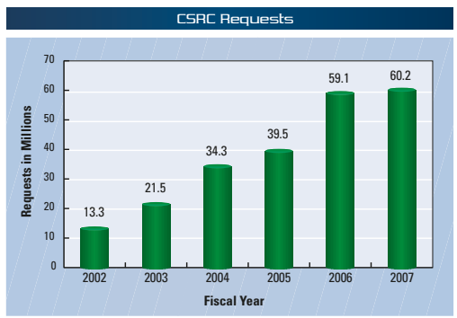
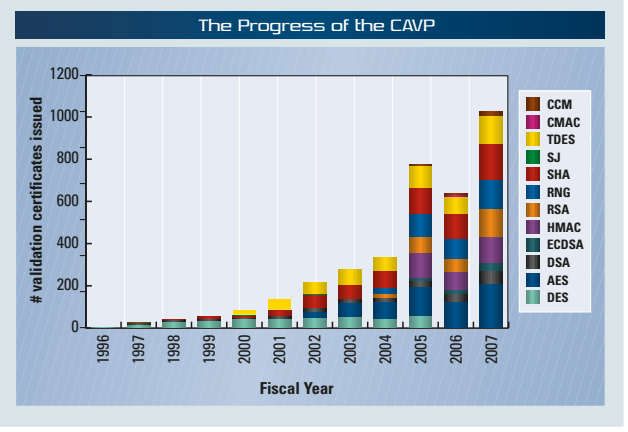
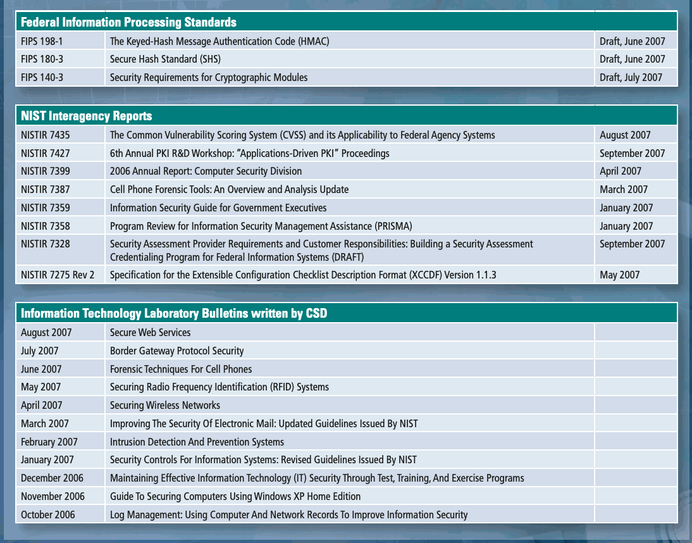

NIST IR 7442 日本語訳
英語タイトル : Computer Security Division 2007 Annual Report日本語タイトル : コンピューターセキュリティ部門 2007 年次報告書
公開日 : 2008-04-01
原文URL : https://csrc.nist.gov/pubs/ir/7442/final
原本 PDF : https://doi.org/10.6028/NIST.IR.7442
訳文 : 有志による非公式の日本語訳（AI による翻訳とレビュー）。全 793 段落のうち 782 段落を翻訳済み（原文取得日 : 2026-10-31）
[要約] NIST IR 7442 は、NIST の情報技術研究所（ITL）のコンピューターセキュリティ部門（CSD）の 2007 会計年度（FY 2007）の活動をまとめた年次報告書です。ごあいさつによれば、CSD の主な目標は、情報およびサービスの機密性、完全性、可用性に対する脅威から情報システムを守る標準と技術を提供することであり、この年には Information Security Automation Program（ISAP）の設立や、FIPS 140-3 の第 1 次公開草案の公表などがありました。報告書は、部門の組織、セキュリティマネジメントと支援、アウトリーチと啓発、医療情報技術、セキュリティ試験とメトリクス、セキュリティ技術などの分野ごとの活動を紹介しています。このほか、国内および国際的な IT セキュリティ標準化プロセスにおける CSD の役割や、システム・ネットワークセキュリティ技術ガイドラインについても記しています。
Computer Security Division 2007 Annual Report
コンピューターセキュリティ部門 2007 年次報告書
Table of Contents
目次
Welcome
ごあいさつ
The primary goal of the Computer Security Division (CSD), a component of NIST’s Information Technology Laboratory (ITL), is to provide standards and technology that protects information systems against threats to the confidentiality, integrity, and availability of information and services. During Fiscal Year 2007 (FY 2007), CSD successfully responded to numerous challenges and opportunities in fulfilling that mission. Through CSD’s diverse research agenda and engagement in many national priority initiatives, high-quality, cost-effective security mechanisms were developed and applied that improved information security across the federal government and the greater information security community.
NIST の情報技術研究所（ITL）の一部門であるコンピューターセキュリティ部門（CSD）の主な目標は、情報およびサービスの機密性、完全性、可用性に対する脅威から情報システムを守る標準と技術を提供することです。2007 会計年度（FY 2007）に、CSD は、この使命を果たすうえでの数多くの課題と機会に成功裏に対応しました。CSD の多様な研究課題と、国の優先課題である多くのイニシアチブへの関与を通じて、高品質で費用対効果の高いセキュリティ機構が開発・適用され、連邦政府全体と、より広い情報セキュリティコミュニティの情報セキュリティが向上しました。
In FY 2007, CSD continued to develop standards, metrics, tests, and validation programs to promote, measure, and validate security in systems and services. Recognizing the potential benefits of more automation in technical security operations, CSD established the Information Security Automation Program (ISAP), which is intended to formalize and advance efforts to enable the automation and standardization of technical security operations, including automated vulnerability management and policy compliance evaluations. The CSD also worked closely with federal agencies to improve their understanding of the Federal Information Security Management Act (FISMA) and supported a major intelligence community initiative to build a unified framework for information security across the federal government. This initiative is expected to result in greater standardization and more consistent and cost-effective security for all federal information systems.
FY 2007 に CSD は、システムとサービスのセキュリティを促進、測定、検証するため、標準、メトリクス、試験、検証プログラムの開発を継続しました。技術的なセキュリティ運用をより自動化することの潜在的な利点を認識して、CSD は Information Security Automation Program（ISAP）を設立しました。これは、自動化された脆弱性管理やポリシー準拠評価を含む、技術的なセキュリティ運用の自動化と標準化を可能にする取り組みを正式なものにし、推進することを目的としています。CSD はまた、連邦機関と緊密に協力して、連邦情報セキュリティマネジメント法（FISMA）への理解を深め、連邦政府全体の情報セキュリティの統一的な枠組みを構築するインテリジェンスコミュニティの大規模なイニシアチブを支援しました。このイニシアチブにより、すべての連邦情報システムについて、標準化が進み、より一貫した費用対効果の高いセキュリティが実現すると見込まれています。
As technology advances and requirements evolve, it is critical to evaluate existing standards, guidelines, and technologies to ensure that they adequately reflect the current state of the art. In FY 2007, CSD released the first public draft of Federal Information Processing Standard (FIPS) 140-3 (Security Requirements for Cryptographic Modules) to meet new and revised requirements for federal agency use of cryptographic systems, and to address technological and economic changes that have occurred since the issuance of FIPS 140-2 in 2001.
技術が進歩し要件が変化するなかで、既存の標準、ガイドライン、技術が最新の技術水準を適切に反映していることを確認するため、それらを評価することが重要です。FY 2007 に CSD は、連邦機関による暗号システムの利用に関する新規および改訂された要件を満たし、2001 年の FIPS 140-2 の発行以降に生じた技術的・経済的な変化に対応するため、連邦情報処理標準（FIPS）140-3（Security Requirements for Cryptographic Modules）の第 1 次公開草案を公表しました。
Opportunities were presented during FY 2007 for CSD to apply its security research to national priorities and internal NIST initiatives. The CSD significantly expanded its support for two key national initiatives, electronic voting and health information technology, by researching the security requirements of those areas and applying the results of that research, along with current technologies, in furtherance of the stated goals of those initiatives. CSD also worked closely with the NIST ITL management team to integrate security projects into newly formed research programs. These programs, which include Cyber Security, Pervasive Information Technologies, Trustworthy Networking, and Trustworthy Software, are designed to organize and build ITL core competencies in the most efficient manner, and to maximize the use of ITL resources to address emerging information technology challenges.
FY 2007 には、CSD がセキュリティ研究を国の優先課題や NIST 内部のイニシアチブに適用する機会がありました。CSD は、2 つの主要な国家イニシアチブである電子投票と医療情報技術への支援を大幅に拡大し、これらの分野のセキュリティ要件を研究して、その研究結果を現在の技術とともに、イニシアチブの掲げる目標の推進に適用しました。CSD は、セキュリティプロジェクトを新たに設けられた研究プログラムに統合するため、NIST ITL の経営チームとも緊密に協力しました。これらのプログラムには、Cyber Security、Pervasive Information Technologies、Trustworthy Networking、Trustworthy Software があり、ITL の中核的能力を最も効率的な方法で整備・構築し、新たに生じる情報技術の課題に対処するために ITL のリソースを最大限に活用することを目的としています。
These are just some of the highlights of the CSD program during FY 2007. You may obtain more information about CSD’s program at http://csrc.nist.gov or by contacting any of the CSD experts noted in this report. If interested in participating in any CSD challenges –whether current or future – please contact any of the listed CSD experts.
以上は、FY 2007 の CSD プログラムの主な成果の一部にすぎません。CSD のプログラムの詳細は、http://csrc.nist.govで、または本報告書に記載された CSD の専門家に連絡して入手できます。現在または将来の CSD の活動への参加に関心がある方は、記載された CSD の専門家のどなたにでもご連絡ください。
William Curtis Barker
Division Chief
William Curtis Barker
部門長
［人物の写真。人物が写っているため、この非公式サイトには掲載していません。原本 PDF を参照してください。］
Division Organization
部門の組織
William Curtis Barker
Division Chief
William Curtis Barker
部門長
Security Management & Assistance Group
Elizabeth Chew
Group Manager
セキュリティマネジメント・支援グループ
Elizabeth Chew
グループマネージャー
Security Testing & Metrics Group
Ray Snouffer
Group Manager
セキュリティ試験・メトリクスグループ
Ray Snouffer
グループマネージャー
Security Technology Group
William Burr
Group Manager
セキュリティ技術グループ
William Burr
グループマネージャー
Systems and Network Security Group
Tim Grance
Group Manager
システム・ネットワークセキュリティグループ
Tim Grance
グループマネージャー
The Computer Security Division Responds to the federal Information Security Management Act of 2002
コンピューターセキュリティ部門による 2002 年連邦情報セキュリティマネジメント法への対応
The E-Government Act [Public Law 107-347], passed by the 107th Congress and signed into law by the President in December 2002, recognized the importance of information security to the economic and national security interests of the United States. Title III of the E-Government Act, entitled the Federal Information Security Management Act of 2002 (FISMA), included duties and responsibilities for the Computer Security Division in Section 303 “National Institute of Standards and Technology.” In 2007, we addressed these assignments as follows—
第 107 議会で可決され、2002 年 12 月に大統領が署名して成立した電子政府法［Public Law 107-347］は、情報セキュリティが米国の経済と国家安全保障上の利益にとって重要であることを認めました。電子政府法の第 III 編である 2002 年連邦情報セキュリティマネジメント法（FISMA）は、第 303 条「国立標準技術研究所」で、コンピューターセキュリティ部門の職務と責任を定めています。2007 年には、これらの課題に次のように取り組みました。
•Provide assistance in using NIST guides to comply with FISMA – Issued the Guide to NIST Information Security Documents in March 2007 to help make NIST information security documents more accessible.
•FISMA に準拠するための NIST ガイドの使用に関する支援の提供 – NIST の情報セキュリティ文書をより利用しやすくするため、2007 年 3 月に『Guide to NIST Information Security Documents』を発行しました。
•Define minimum information security requirements (management, operational, and technical security controls) for information and information systems in each such category – Issued revision 1 of SP 800-53, Recommended Security Controls for Federal Information Systems, in December 2006.
•各カテゴリの情報および情報システムに対する最低限の情報セキュリティ要件（マネジメント、運用、技術のセキュリティ管理策）の定義 – 2006 年 12 月に SP 800-53『Recommended Security Controls for Federal Information Systems』の改訂第 1 版を発行しました。
•Identify methods for assessing effectiveness of security requirements – Issued the third public draft of SP 800-53A, Guide for Assessing the Security Controls in Federal Information Systems, in June 2007.
•セキュリティ要件の有効性を評価する方法の特定 – 2007 年 6 月に SP 800-53A『Guide for Assessing the Security Controls in Federal Information Systems』の第 3 次公開草案を発行しました。
•Bring the security planning process up to date with key standards and guidelines developed by NIST – Initiated revisions to SP 800-16, Information Technology Training Requirements; SP 800-60, Guide for Mapping Information and Information Types to Security Categories; and SP 800-64, Security Considerations in the System Development Life Cycle.
•NIST が策定した主要な標準とガイドラインに合わせたセキュリティ計画プロセスの更新 – SP 800-16『Information Technology Training Requirements』、SP 800-60『Guide for Mapping Information and Information Types to Security Categories』、SP 800-64『Security Considerations in the System Development Life Cycle』の改訂に着手しました。
•Provide assistance to Agencies and private sector – Conducted ongoing, substantial reimbursable and non-reimbursable assistance support, including many outreach efforts such as the Federal Information Systems Security Educators’ Association (FISSEA), the Federal Computer Security Program Managers’ Forum (FCSM Forum), the Small Business Corner, and the Program Review for Information Security Management Assistance (PRISMA).
•機関および民間部門への支援の提供 – 連邦情報システムセキュリティ教育者協会（FISSEA）、連邦コンピューターセキュリティプログラム管理者フォーラム（FCSM Forum）、Small Business Corner、Program Review for Information Security Management Assistance（PRISMA）など、多くのアウトリーチ活動を含め、有償・無償の相当規模の支援を継続的に実施しました。
•Evaluate security policies and technologies from the private sector and national security systems for potential federal agency use – Hosted a growing repository of federal agency security practices, public/private security practices, and security configuration checklists for IT products. In conjunction with the Government of Canada’s Communications Security Establishment, CSD leads the Cryptographic Module Validation Program (CMVP). The Common Criteria Evaluation and Validation Scheme (CCEVS) and CMVP facilitate security testing of IT products usable by the federal government.
•連邦機関が利用する可能性のある、民間部門および国家安全保障システムのセキュリティポリシーと技術の評価 – 連邦機関のセキュリティプラクティス、官民のセキュリティプラクティス、IT 製品のセキュリティ設定チェックリストを集めた、拡大を続けるリポジトリを運営しました。カナダ政府の通信安全保障機関（Communications Security Establishment）と共同で、CSD は暗号モジュール検証プログラム（CMVP）を主導しています。Common Criteria Evaluation and Validation Scheme（CCEVS）と CMVP は、連邦政府が利用できる IT 製品のセキュリティ試験を促進します。
•Solicit recommendations of the Information Security and Privacy Advisory Board on draft standards and guidelines – Solicited recommendations of the Board regularly at quarterly meetings on topics such as updates to special publications supporting the FISMA Implementation Project.
•標準およびガイドラインの草案に対する情報セキュリティ・プライバシー諮問委員会の勧告の募集 – FISMA 実施プロジェクトを支える特別刊行物の更新などの話題について、四半期ごとの会合で、同委員会の勧告を定期的に募集しました。
•Provide outreach, workshops, and briefings – Conducted ongoing awareness briefings and outreach to our customer community and beyond to ensure comprehension of guidance and awareness of planned and future activities. We also held workshops to identify areas our customer community wishes to be addressed, and to scope guidelines in a collaborative and open format.
•アウトリーチ、ワークショップ、ブリーフィングの提供 – ガイダンスの理解と、計画中および将来の活動への認識を確保するため、顧客コミュニティとその外に向けて、啓発ブリーフィングとアウトリーチを継続的に実施しました。また、顧客コミュニティが取り上げてほしい分野を特定し、協調的でオープンな形式でガイドラインの範囲を定めるためのワークショップも開催しました。
•Satisfy annual NIST reporting requirement – Produced an annual report as a NIST Interagency Report (IR). The 2003-2006 Annual Reports are available via the Web or upon request.
•NIST の年次報告の要件の充足 – NIST 省庁間報告書（IR）として年次報告書を作成しました。2003～2006 年の年次報告書は、Web で入手するか、依頼に応じて入手できます。
Security Management and Assistance
セキュリティマネジメントと支援
Strategic Goal – Provide federal agencies with relevant, timely and useful computer security publications and management tools, and engage in outreach activities to federal government agencies and, where appropriate, to industry, including small and medium size businesses, in order to raise awareness of the importance and need for information technology security.
戦略目標 – 連邦機関に、関連性があり、時宜を得た、有用なコンピューターセキュリティの刊行物とマネジメントツールを提供し、情報技術セキュリティの重要性と必要性についての認識を高めるため、連邦政府機関に対して、また適切な場合には中小企業を含む産業界に対して、アウトリーチ活動を行います。
Overview
概要
Information security is an integral element of sound management. Information and computer systems are critical assets that support the mission of an organization. Protecting them can be as important as protecting other organizational resources, such as money, physical assets, or employees. However, including security considerations in the management of information and computers does not completely eliminate the possibility that these assets will be harmed.
情報セキュリティは、健全なマネジメントに不可欠な要素です。情報とコンピューターシステムは、組織の使命を支える重要な資産です。それらを保護することは、資金、物理的資産、従業員といった他の組織資源を保護することと同様に重要な場合があります。しかし、情報とコンピューターのマネジメントにセキュリティの考慮事項を含めても、これらの資産が損害を受ける可能性が完全になくなるわけではありません。
Ultimately, responsibility for the success of an organization lies with its senior management. They establish the organization’s computer security program and its overall program goals, objectives, and priorities in order to support the mission of the organization. They are also responsible for ensuring that required resources are applied to the program.
組織の成功に対する責任は、最終的には上級管理者にあります。上級管理者は、組織の使命を支えるため、組織のコンピューターセキュリティプログラムと、その全体の目標、目的、優先順位を定めます。また、必要なリソースがプログラムに充てられるようにする責任も負います。
Collaboration with a number of entities is critical for success. Federally, we collaborate with the U.S. Office of Management and Budget (OMB), the U.S. Government Accountability Office (GAO), the National Security Agency (NSA), the Chief Information Officers (CIO) Council, and all Executive Branch agencies. We also work closely with a number of information technology organizations and standards bodies, as well as public and private organizations.
多くの主体との連携は、成功に不可欠です。連邦レベルでは、米国行政管理予算局（OMB）、米国政府説明責任局（GAO）、国家安全保障局（NSA）、最高情報責任者（CIO）評議会、およびすべての行政府機関と連携しています。また、多くの情報技術組織や標準化団体、公的・民間の組織とも緊密に連携しています。
Major initiatives in this area include the FISMA Implementation Project; extended outreach initiatives and information security training, awareness and education; and producing and updating NIST Special Publications on security management topics. Key to the success of this area is our ability to interact with a broad constituency—federal and nonfederal—in order to ensure that our program is consistent with national objectives related to or impacted by information security.
この分野の主な取り組みには、FISMA 実施プロジェクト、拡大したアウトリーチの取り組みと情報セキュリティのトレーニング・啓発・教育、セキュリティマネジメントの話題に関する NIST 特別刊行物の作成と更新があります。この分野の成功の鍵は、私たちのプログラムが、情報セキュリティに関係する、または情報セキュリティの影響を受ける国家目標と整合するよう、連邦・非連邦を問わず幅広い関係者と交流できることです。
FISMA Implementation Project
FISMA 実施プロジェクト
The Computer Security Division continued to develop the security standards and guidelines required by federal legislation. Phase I of the FISMA Implementation Project included the development of the following publications—
コンピューターセキュリティ部門は、連邦法で求められるセキュリティ標準とガイドラインの策定を継続しました。FISMA 実施プロジェクトのフェーズ I には、次の刊行物の策定が含まれていました。
•FIPS 199, Standards for Security Categorization of Federal Information and Information Systems (Completed);
•FIPS 199『Standards for Security Categorization of Federal Information and Information Systems』（完了）。
•FIPS 200, Minimum Security Requirements for Federal Information and Information Systems (Completed);
•FIPS 200『Minimum Security Requirements for Federal Information and Information Systems』（完了）。
•NIST Special Publication (SP) 800-37, Guide for the Security Certification and Accreditation of Federal Information Systems (Completed);
•NIST 特別刊行物（SP）800-37『Guide for the Security Certification and Accreditation of Federal Information Systems』（完了）。
•NIST SP 800-53, Recommended Security Controls for Federal Information Systems (Completed);
•NIST SP 800-53『Recommended Security Controls for Federal Information Systems』（完了）。
•NIST SP 800-53A, Guide for Assessing the Security Controls in Federal Information Systems (Target Completion February 2008);
•NIST SP 800-53A『Guide for Assessing the Security Controls in Federal Information Systems』（完了目標は 2008 年 2 月）。
•NIST SP 800-59, Guideline for Identifying an Information System as a National Security System (Completed); and
•NIST SP 800-59『Guideline for Identifying an Information System as a National Security System』（完了）。
•NIST SP 800-60, Guide for Mapping Types of Information and Information Systems to Security Categories (Completed).
•NIST SP 800-60『Guide for Mapping Types of Information and Information Systems to Security Categories』（完了）。
The security standards and guidelines developed in Phase I will assist federal agencies in—
フェーズ I で策定したセキュリティ標準とガイドラインは、連邦機関が次のことを行うのを支援します。
•Implementing the individual steps in the NIST Risk Management Framework as part of a well-defined and disciplined system development life cycle process;
•明確に定義された規律ある、システム開発ライフサイクルのプロセスの一環として、NIST Risk Management Framework の個々のステップを実施すること。
•Demonstrating compliance to specific requirements contained within the legislation; and
•法律に含まれる特定の要件への準拠を示すこと。
•Establishing a level of security due diligence across the federal government.
•連邦政府全体でセキュリティのデューデリジェンスの水準を確立すること。
In FY 2007, the division completed a major revision of NIST SP 800-53, working with the Office of Management and Budget (OMB) and the Department of Homeland Security (DHS) to strengthen security controls in selected areas. The division also completed the third public draft of NIST SP 800-53A, which provides a new, streamlined, and flexible approach for developing security assessment plans containing assessment procedures to determine the effectiveness of security controls deployed in federal information systems. A revision of NIST SP 800-60 was also initiated to update the information types used by agencies to develop information system impact levels to help determine the criticality and sensitivity of federal information systems. On the education and training front, the division hosted two major FISMA workshops to assist federal agencies in understanding and applying the NIST security standards and guidelines.
FY 2007 に当部門は、行政管理予算局（OMB）および国土安全保障省（DHS）と協力して特定分野のセキュリティ管理策を強化し、NIST SP 800-53 の大規模な改訂を完了しました。また、連邦情報システムに導入されたセキュリティ管理策の有効性を判定するための評価手順を含むセキュリティ評価計画を策定する、新しく合理化された柔軟なアプローチを提供する NIST SP 800-53A の第 3 次公開草案も完成させました。また、連邦情報システムの重要度と機微性の判定に役立つ情報システムの影響度を、機関が策定する際に用いる情報の種類を更新するため、NIST SP 800-60 の改訂にも着手しました。教育・トレーニングの面では、連邦機関が NIST のセキュリティ標準とガイドラインを理解し適用するのを支援するため、FISMA に関する 2 つの大規模なワークショップを開催しました。
Phase II of the FISMA Implementation Project, discussed in more detail later in this annual report, focuses on the development of a program for credentialing public and private sector organizations to provide security assessment services for federal agencies.
FISMA 実施プロジェクトのフェーズ II は、本年次報告書の後半で詳しく述べますが、連邦機関にセキュリティ評価サービスを提供する公的部門および民間部門の組織の資格認定プログラムの策定に重点を置いています。
http://csrc.nist.gov/sec-cert
Contact: Dr. Ron Ross
(301) 975-5390
ron.ross@nist.gov
http://csrc.nist.gov/sec-cert
連絡先: Dr. Ron Ross
(301) 975-5390
ron.ross@nist.gov
Revision of the Risk Management Guidelines
リスクマネジメントガイドラインの改訂
Consistent with the security standards and guidelines being developed for the Federal Information Security Management Act of 2002, the Computer Security Division initiated revisions to its current risk management guidelines. The proposed revisions to NIST Special Publications will incorporate inputs from community-wide sources including, but not limited to: (i) the Information System Security Line of Business (ISSLOB) Certification and Accreditation (C&A) Working Group; (ii) the Department of Homeland Security (DHS) National Infrastructure Protection Plan (NIPP) and Sector Specific Plans (SSP); and (iii) the Director of National Intelligence/Department of Defense (DNI/DOD) C&A Transformation Initiative. There are four major activities which started in FY 2007 and are expected to be completed in FY 2008:
2002 年連邦情報セキュリティマネジメント法のために策定中のセキュリティ標準とガイドラインに整合させて、コンピューターセキュリティ部門は、現行のリスクマネジメントガイドラインの改訂に着手しました。NIST 特別刊行物の改訂案には、次を含むがこれらに限らない、コミュニティ全体からの意見が取り入れられます。(i) Information System Security Line of Business（ISSLOB）の認証および認定（C&A）ワーキンググループ、(ii) 国土安全保障省（DHS）の National Infrastructure Protection Plan（NIPP）と Sector Specific Plans（SSP）、(iii) 国家情報長官／国防総省（DNI/DOD）の C&A Transformation Initiative。FY 2007 に開始し、FY 2008 に完了する見込みの主要な活動が 4 つあります。
•Develop NIST SP 800-39, Managing Enterprise Risk: A Framework for Addressing Cyber Threats to Organizations, Individuals and the Nation. This new Special Publication will formally describe the NIST Risk Management Framework and the associated components that are contained within the framework. SP 800-39 will be the flagship document for the NIST FISMA-related standards and guidelines and provide the overarching risk management strategy for federal agencies with regard to the use of information systems to support critical and sensitive enterprise missions and business functions.
•NIST SP 800-39『Managing Enterprise Risk: A Framework for Addressing Cyber Threats to Organizations, Individuals and the Nation』を作成すること。この新しい特別刊行物は、NIST Risk Management Framework と、その枠組みに含まれる関連する構成要素を正式に記述します。SP 800-39 は、NIST の FISMA 関連の標準とガイドラインの旗艦文書となり、重要で機微なエンタープライズの使命と業務機能を支えるために情報システムを使用することに関して、連邦機関に包括的なリスクマネジメント戦略を提供します。
•Revise NIST SP 800-30, Risk Management Guide for Information Technology Systems, July 2002. The scope of SP 800-30 will be changed to focus specifically on the risk assessment process as a key component of managing enterprise risk resulting from the operation and use of information systems. SP 800-30, Revision 1, Effective Use of Risk Assessments in Managing Enterprise Risk, will describe how to apply risk assessments at various steps in the Risk Management Framework, for example, when assigning FIPS 199 security categories to information and information systems or when selecting, tailoring, supplementing, and assessing the security controls in an information system.
•2002 年 7 月の NIST SP 800-30『Risk Management Guide for Information Technology Systems』を改訂すること。SP 800-30 の範囲は、情報システムの運用と使用に起因するエンタープライズリスクのマネジメントの主要な構成要素として、リスク評価プロセスに特に重点を置くように変更されます。SP 800-30 改訂第 1 版『Effective Use of Risk Assessments in Managing Enterprise Risk』は、たとえば、情報および情報システムに FIPS 199 のセキュリティカテゴリを割り当てるとき、または情報システムのセキュリティ管理策を選択、調整、補足、評価するときなど、Risk Management Framework のさまざまなステップでリスク評価を適用する方法を記述します。
•Revise NIST SP 800-37, Guide for the Security Certification and Accreditation of Federal Information Systems, May 2004. The revised SP will maintain the stability of the current four-phase security certification and accreditation (C&A) process while expanding the guidelines based on new computing paradigms, lessons learned from the first three years of implementation and use by federal agencies, and the desire for greater efficiencies in the process. The specific planned modifications to SP 800-37 include:
•2004 年 5 月の NIST SP 800-37『Guide for the Security Certification and Accreditation of Federal Information Systems』を改訂すること。改訂される SP は、現行の 4 フェーズのセキュリティ認証および認定（C&A）プロセスの安定性を維持しつつ、新しいコンピューティングパラダイム、連邦機関による最初の 3 年間の実施と使用で得られた教訓、プロセスのさらなる効率化への要望に基づいて、ガイドラインを拡張します。SP 800-37 に計画されている具体的な変更には、次のものがあります。
•Redefining the C&A process as an integral part of the NIST Risk Management Framework
•C&A プロセスを NIST Risk Management Framework の不可欠な部分として再定義すること
•Tightly coupling the C&A process to the System Development Life Cycle
•C&A プロセスをシステム開発ライフサイクルに緊密に結び付けること
•Placing greater emphasis on the continuous monitoring aspects of the C&A process to create a more dynamic, automated tool-driven process
•よりダイナミックで自動化されたツール主導のプロセスを作るため、C&A プロセスの継続的監視の側面をより重視すること
•Expanding the C&A process to apply to the enterprise (infrastructure) level as well as specific information systems; reinforcing the focus on enterprise missions and business functions first and foremost
•C&A プロセスを、特定の情報システムだけでなくエンタープライズ（インフラ）レベルにも適用できるよう拡張し、何よりもまずエンタープライズの使命と業務機能に重点を置くことを強化すること
•Addressing the application of the C&A process to new enterprise operating paradigms (e.g., service-oriented architectures, software as a service, outsourcing).
•C&A プロセスの、新しいエンタープライズの運用パラダイム（たとえば、サービス指向アーキテクチャ、Software as a Service、アウトソーシング）への適用に対処すること。
•Develop Authorizing Official’s Handbook. This new Special Publication (800-series number to be announced at a later date) will describe the authorizing official’s oversight responsibilities with regard to the implementation of the NIST Risk Management Framework, culminating in the information system authorization decision. The guidelines provided in the Authorizing Official’s Handbook will be tightly coupled to the NIST FISMA-related security standards and guidelines including SP 800-39 and the revisions to SPs 800-30 and 800-37.
•『Authorizing Official’s Handbook』を作成すること。この新しい特別刊行物（800 シリーズの番号は後日発表）は、情報システムの認可の判断に至る、NIST Risk Management Framework の実施に関する認可責任者の監督責任を記述します。Authorizing Official’s Handbook が示すガイドラインは、SP 800-39、SP 800-30 と SP 800-37 の改訂を含む、NIST の FISMA 関連のセキュリティ標準とガイドラインと緊密に結び付けられます。
Contact: Dr. Ron Ross
(301) 975-5390
ron.ross@nist.gov
連絡先: Dr. Ron Ross
(301) 975-5390
ron.ross@nist.gov
Developing a Unified Framework for Information Security
情報セキュリティの統一的な枠組みの策定
The Computer Security Division provided technical support to the Chief Information Officer, Director of National Intelligence (DNI), in a major Intelligence Community initiative to transform the certification and accreditation process for information systems and to build a common framework for information security across the federal government. The division worked with the DNI to assist the Intelligence Community in reengineering the security standards and guidelines for national security systems, building on a common foundation established by NIST in its FISMA Implementation Project. The project is using as starting points the NIST Risk Management Framework, the security controls from NIST SP 800-53, and the security categorization paradigm from FIPS 199. The DNI hopes to adopt a common foundation for information security based on NIST security standards and guidelines and build unique national security system requirements on top of that foundation, when necessary. When completed, the project will result in greater standardization of information security standards and guidelines across the federal government which will lead to more cost-effective and consistent security for federal information systems, both for national security-related systems and non national security-related systems.
コンピューターセキュリティ部門は、情報システムの認証および認定プロセスを変革し、連邦政府全体の情報セキュリティの共通の枠組みを構築する、インテリジェンスコミュニティの大規模なイニシアチブにおいて、情報担当最高責任者である国家情報長官（DNI）に技術支援を提供しました。当部門は、NIST が FISMA 実施プロジェクトで確立した共通の基盤の上に、インテリジェンスコミュニティが国家安全保障システムのセキュリティ標準とガイドラインを再構築するのを支援するため、DNI と協力しました。このプロジェクトは、NIST Risk Management Framework、NIST SP 800-53 のセキュリティ管理策、FIPS 199 のセキュリティ分類のパラダイムを出発点としています。DNI は、NIST のセキュリティ標準とガイドラインに基づく情報セキュリティの共通の基盤を採用し、必要な場合にはその基盤の上に国家安全保障システム固有の要件を構築することを望んでいます。このプロジェクトが完了すると、連邦政府全体の情報セキュリティの標準とガイドラインの標準化が進み、国家安全保障関連のシステムと非国家安全保障関連のシステムの両方について、連邦情報システムのより費用対効果が高く一貫したセキュリティにつながります。
Contact: Dr. Ron Ross
(301) 975-5390
ron.ross@nist.gov
連絡先: Dr. Ron Ross
(301) 975-5390
ron.ross@nist.gov
Organizational Accreditation Program
組織認定プログラム
Phase II of the FISMA Implementation Project is focusing on the development of a program for credentialing public and private sector organizations to provide security assessment services for federal agencies in support of certification and accreditation of information systems. These security services involve the comprehensive assessment of the management, operational, and technical security controls in federal information systems to determine the extent to which the controls are implemented correctly, operating as intended, and producing the desired outcome with respect to meeting the security requirements for the information system.
FISMA 実施プロジェクトのフェーズ II は、情報システムの認証および認定を支えるため、連邦機関にセキュリティ評価サービスを提供する公的部門および民間部門の組織の資格認定プログラムの策定に重点を置いています。これらのセキュリティサービスは、連邦情報システムのマネジメント、運用、技術のセキュリティ管理策を包括的に評価し、それらの管理策が正しく実施され、意図したとおりに動作し、情報システムのセキュリティ要件を満たすうえで望ましい成果を生んでいる程度を判定するものです。
Agencies must rely on competent and capable security assessors to adequately assess the security controls and provide the necessary assessment results accreditation that authorities require to make critical security accreditation decisions for information systems, and for providing reliable information for reporting on compliance to FISMA. In addition, security assessments require expertise in 17 separate security areas as defined by FIPS 200, Minimum Security Requirements for Federal Information and Information Systems, and assessors must have an in-depth knowledge of the assessment procedures necessary for assessing these requirements. Agencies often do not have the required in-house resources or expertise needed to conduct the required assessments and thus are left with the uncertain task of acquiring competent and capable security assessment providers.
機関は、セキュリティ管理策を適切に評価し、当局が情報システムの重要なセキュリティ認定の判断を下すために必要な評価結果を提供し、FISMA への準拠を報告するための信頼できる情報を提供できる、有能で適格なセキュリティ評価者に頼らなければなりません。さらに、セキュリティ評価には、FIPS 200『Minimum Security Requirements for Federal Information and Information Systems』で定義された 17 の個別のセキュリティ分野の専門知識が必要であり、評価者はこれらの要件を評価するために必要な評価手順について深い知識を持っていなければなりません。機関は、必要な評価を実施するための社内リソースや専門知識を備えていないことが多く、そのため、有能で適格なセキュリティ評価サービス提供者を確保するという不確実な課題を抱えることになります。
Organizations that successfully complete the credentialing program will be able to demonstrate competence in performing assessments of security controls implemented in an information system based on FISMA requirements and NIST standards and guidelines. Developing a network of accredited organizations that demonstrate competence in the provision of security assessment services will give federal agencies greater confidence in the acquisition and use of such services and lead to—
資格認定プログラムを成功裏に修了した組織は、FISMA の要件と NIST の標準およびガイドラインに基づいて、情報システムに実装されたセキュリティ管理策の評価を実施する能力を実証できるようになります。セキュリティ評価サービスの提供における能力を実証する認定組織のネットワークを築くことで、連邦機関は、そのようなサービスの調達と利用により大きな確信を持てるようになり、次のことにつながります。
•More consistent, comparable, and repeatable security controls assessments of agencies’ information security programs and systems;
•機関の情報セキュリティプログラムとシステムについての、より一貫し、比較可能で、再現可能なセキュリティ管理策の評価。
•A better understanding of enterprise-wide mission risks resulting from the operation of information systems;
•情報システムの運用に起因する、エンタープライズ全体の使命リスクについての、より深い理解。
•More complete, reliable, and trustworthy information for authorizing officials—facilitating more informed information system security accreditation decisions; and
•認可責任者に対する、より完全で、信頼でき、信用に足る情報の提供。これにより、より十分な情報に基づく情報システムのセキュリティ認定の判断が可能になります。
•More secure information systems within the federal government including critical infrastructures.
•重要インフラを含め、連邦政府内の情報システムがより安全になること。
Development of the organizational credentialing program consists of four segments—
組織の資格認定プログラムの策定は、4 つの部分からなります。
•Development and selection of an appropriate accreditation model for determining the competency of organizations desiring to provide security assessment services in accordance with NIST SP 800-37, Guide for the Security Certification and Accreditation of Federal Information Systems;
•NIST SP 800-37『Guide for the Security Certification and Accreditation of Federal Information Systems』に従ってセキュリティ評価サービスを提供することを希望する組織の能力を判定するための、適切な認定モデルの開発と選定。
•Development of detailed credentialing requirements for organizations seeking accreditation;
•認定を求める組織のための、詳細な資格認定要件の開発。
•Development of appropriate proficiency tests to determine the competency of prospective organizations seeking accreditation in key NIST Special Publications associated with the certification and accreditation of federal information systems; and
•連邦情報システムの認証と認定に関連する NIST の主要な特別刊行物について、認定を求める組織候補の能力を判定するための、適切な習熟度試験の開発。
•Development of a strategy for implementing the accreditation program and selection of an appropriate accreditation body to conduct the organizational accreditations.
•認定プログラムを実施するための戦略の策定と、組織認定を実施する適切な認定機関の選定。
There will be extensive public vetting (i.e., from consumers—federal agencies, security assessment service providers, and accreditation bodies of security assessment service providers) of the credentialing program during each segment of development as described above. The vetting process will include public workshops to discuss various credentialing approaches, requirements and models, a public review of the proposed assessment methods and procedures contained in SP 800-53A, and a public review of the implementation strategy for the credentialing program.
資格認定プログラムについては、上記の各開発部分において、広範な公開審査（すなわち、消費者である連邦機関、セキュリティ評価サービスの提供者、セキュリティ評価サービス提供者の認定機関からの審査）を行います。審査プロセスには、さまざまな資格認定のアプローチ、要件、モデルを議論する公開ワークショップ、SP 800-53A に含まれる評価方法と手順案の公開レビュー、資格認定プログラムの実施戦略の公開レビューが含まれます。
Requirements and possible options for the credentialing of security assessment providers were presented and discussed at the first FISMA Implementation Project Phase II Workshop. The organization credentialing options were—
セキュリティ評価提供者の資格認定の要件と考えられる選択肢は、最初の FISMA 実施プロジェクト フェーズ II ワークショップで提示され、議論されました。組織の資格認定の選択肢は次のとおりでした。
•Option 1: Consumer-Based Credentialing in which federal agencies draw upon credentialing requirements and guidance established from the FISMA phase II project to credential and acquire security assessment services;
•選択肢 1: 消費者ベースの資格認定。連邦機関が、FISMA フェーズ II プロジェクトから確立された資格認定の要件とガイダンスに基づき、セキュリティ評価サービスの資格認定と取得を行うもの。
•Option 2: Public or Private Credentialing in which the community develops and operates a credentialing process for security assessment providers based on service provider capability requirements, evaluation criteria, and training requirements established from the FISMA phase II project—albeit without NIST sponsorship; and
•選択肢 2: 公的または民間の資格認定。コミュニティが、FISMA フェーズ II プロジェクトで確立されたサービス提供者の能力要件、評価基準、トレーニング要件に基づいて、セキュリティ評価提供者の資格認定プロセスを開発し運用するものです。ただし、NIST の後援はありません。
•Option 3: NIST-Sponsored Credentialing in which NIST sponsors (or partners with others) in the establishment of a credentialing process for security assessment providers based on service provider capability requirements, evaluation criteria, and training requirements established from the FISMA phase II project.
•選択肢 3: NIST 後援の資格認定。NIST が、FISMA フェーズ II プロジェクトから確立されたサービス提供者の能力要件、評価基準、トレーニング要件に基づき、セキュリティ評価提供者の資格認定プロセスの確立を後援する（または他者と提携する）もの。
A follow-up workshop will be held in FY 2008 to further define and review the FISMA Implementation Project phase II credentialing program development.
FISMA 実施プロジェクトのフェーズ II 資格認定プログラムの開発をさらに定義し、検討するため、FY 2008 にフォローアップワークショップを開催します。
http://csrc.nist.gov/sec-cert
Contacts:
Mr. Arnold Johnson
(301) 975-3247
arnold.johnson@nist.gov
Ms. Pat Toth
(301) 975-5140
patricia.toth@nist.gov
http://csrc.nist.gov/sec-cert
連絡先:
Mr. Arnold Johnson
(301) 975-3247
arnold.johnson@nist.gov
Ms. Pat Toth
(301) 975-5140
patricia.toth@nist.gov
Publications
刊行物
Guide to NIST Computer Security Documents
NIST コンピューターセキュリティ文書ガイド
Can’t find the NIST CSD document you’re looking for? Are you not sure which CSD documents you should be looking for?
お探しの NIST CSD の文書が見つかりませんか。どの CSD の文書を探すべきかわかりませんか。
For many years, CSD has made great contributions to help secure our nation’s information and information systems. Our work has paralleled the evolution of IT, initially focused principally on mainframe computers, and now encompasses today’s wide gamut of information technology devices.
長年にわたり、CSD は、国の情報と情報システムの保護に役立つ大きな貢献をしてきました。当部門の業務は IT の進化と並行しており、当初は主にメインフレームコンピューターに重点を置いていましたが、現在は今日の幅広い情報技術デバイスを対象としています。
Currently, there are over 250 NIST information security documents. This number includes Federal Information Processing Standards (FIPS), the Special Publication (SP) 800 series, Information Technology Laboratory (ITL) Bulletins, and NIST Internal/Interagency Reports (NISTIRs). These documents are typically listed by publication type and number, or by month and year in the case of the ITL Bulletins. This can make finding a document difficult if the number or date is not known.
現在、NIST の情報セキュリティ文書は 250 を超えます。この数には、連邦情報処理標準（FIPS）、特別刊行物（SP）800 シリーズ、情報技術研究所（ITL）の会報、NIST 内部／省庁間報告書（NISTIR）が含まれます。これらの文書は通常、刊行物の種類と番号で、ITL の会報の場合は年月で一覧になっています。そのため、番号や日付がわからないと、文書を見つけにくい場合があります。
In order to make NIST information security documents more accessible, especially to those just entering the information security field or with limited needs for the documents, CSD developed the Guide to NIST Information Security Documents. In addition to being listed by type and number, the guide presents three ways to search for documents: by topic cluster, by family, and by legal requirement. This guide is current through the end of FY 2006 and is currently undergoing updates to make access to CSD publications easier for our customers.
特に情報セキュリティの分野に入ったばかりの人や、文書への要求が限られている人にとって、NIST の情報セキュリティ文書をより利用しやすくするため、CSD は『Guide to NIST Information Security Documents』を作成しました。このガイドは、種類と番号による一覧に加えて、トピッククラスター別、ファミリー別、法的要件別という、文書を検索する 3 つの方法を示しています。このガイドは FY 2006 末までの内容であり、顧客が CSD の刊行物をより見つけやすくするため、現在更新中です。
Contact: Mr. Matthew Scholl
(301) 975-2941
mscholl@nist.gov
連絡先: Mr. Matthew Scholl
(301) 975-2941
mscholl@nist.gov
Revision of the NIST Security Managers’ Handbook
NIST Security Managers’ Handbook の改訂
NIST SP 800-100, Information Security Handbook: A Guide for Managers, provides a broad overview of information security program elements to assist managers in understanding how to establish and implement an information security program. Typically, the organization looks to the program for overall responsibility to ensure the selection and implementation of appropriate security controls and to demonstrate the effectiveness of satisfying the controls’ stated security requirements. The topics within this document were selected based on laws and regulations relevant to information security, including the Clinger-Cohen Act of 1996, FISMA, and the U.S. Office of Management and Budget (OMB) Circular A-130. The material in this handbook can be referenced for general information on a particular topic or can be used in the decision-making process for developing an information security program. The purpose of this publication is to inform members of the information security management team—agency heads, Chief Information Officers (CIOs), Chief Information Security Officers (CISOs), and security managers—about various aspects of information security that they will be expected to implement and oversee in their respective organizations. In addition, the handbook provides guidance for facilitating a more consistent approach to information security programs across the federal government.
NIST SP 800-100『Information Security Handbook: A Guide for Managers』は、管理者が情報セキュリティプログラムの確立と実施の方法を理解するのを支援するため、情報セキュリティプログラムの要素の幅広い概要を提供しています。通常、組織は、適切なセキュリティ管理策の選択と実施を確実にし、管理策に明記されたセキュリティ要件を満たすことの有効性を実証する全体的な責任をプログラムに担わせます。この文書で扱う話題は、1996 年の Clinger-Cohen Act、FISMA、米国行政管理予算局（OMB）Circular A-130 など、情報セキュリティに関連する法律や規制に基づいて選定されています。このハンドブックの内容は、特定の話題に関する一般情報の参照資料として、または情報セキュリティプログラムの策定における意思決定プロセスで使用できます。この刊行物は、情報セキュリティ管理チームの構成員である機関の長、最高情報責任者（CIO）、最高情報セキュリティ責任者（CISO）、セキュリティ管理者に、それぞれの組織で実施し監督することが期待される情報セキュリティのさまざまな側面を知らせることを目的としています。さらに、このハンドブックは、連邦政府全体で情報セキュリティプログラムに、より一貫したアプローチを促すための指針を提供しています。
http://csrc.nist.gov/publications/nistpubs/800-100/SP800-100-Mar07-2007.pdf
Contacts:
Ms. Pauline Bowen
(301) 975-2938
pauline.bowen@nist.gov
Mr. Mark Wilson
(301) 975-3870
mark.wilson@nist.gov
http://csrc.nist.gov/publications/nistpubs/800-100/SP800-100-Mar07-2007.pdf
連絡先:
Ms. Pauline Bowen
(301) 975-2938
pauline.bowen@nist.gov
Mr. Mark Wilson
(301) 975-3870
mark.wilson@nist.gov
Revision of the Guide to Information Technology Security Role-Based Training Requirements
情報技術セキュリティの役割別トレーニング要件ガイドの改訂
In FY 2007, CSD initiated an update to SP 800-16, Information Technology Security Training Requirements: A Role- and Performance-Based Model, for public review and comment. Originally published in April 1998, SP 800-16 contains a training methodology that federal departments and agencies, as well as private sector and academic institutions, can use to develop role-based information security training material.
FY 2007 に CSD は、パブリックレビューとコメントのために、SP 800-16『Information Technology Security Training Requirements: A Role- and Performance-Based Model』の更新に着手しました。1998 年 4 月に最初に公表された SP 800-16 には、連邦省庁と機関のほか、民間部門や学術機関が、役割別の情報セキュリティトレーニング教材を開発するために使用できるトレーニング方法論が含まれています。
We are updating the document to align it with information security training requirements contained in FISMA and the Office of Personnel Management (OPM) information security awareness and training requirement of June 2004.
この文書は、FISMA に含まれる情報セキュリティトレーニングの要件と、2004 年 6 月の人事管理局（OPM）の情報セキュリティ啓発・トレーニング要件に整合させるために更新しています。
We expect the update of SP 800-16 to be completed during early 2008.
SP 800-16 の更新は、2008 年初めに完了する見込みです。
Contacts:
Mr. Mark Wilson
(301) 975-3870
mark.wilson@nist.gov
Ms. Pauline Bowen
(301) 975-2938
pauline.bowen@nist.gov
連絡先:
Mr. Mark Wilson
(301) 975-3870
mark.wilson@nist.gov
Ms. Pauline Bowen
(301) 975-2938
pauline.bowen@nist.gov
Information System Security Reference Model
情報システムセキュリティ参照モデル
Federal agencies implement information security programs to provide security for the information and systems that support there operations and assets. These programs, based on laws, regulations, standards, and guidelines, are intended to ensure the selection and implementation of appropriate security controls and to demonstrate the effectiveness of satisfying their stated security requirements. A properly implemented information security program produces certain artifacts throughout its life cycle that are designed to demonstrate its maturity and the security status of its information systems.
連邦機関は、自らの業務と資産を支える情報とシステムのセキュリティを確保するために、情報セキュリティプログラムを実施しています。これらのプログラムは、法律、規則、標準、ガイドラインに基づき、適切なセキュリティ管理策の選択と実施を確実にし、定められたセキュリティ要件を満たすことの有効性を実証することを目的としています。適切に実施された情報セキュリティプログラムは、そのライフサイクルを通じて、プログラムの成熟度と情報システムのセキュリティ状況を示すよう設計された一定の成果物を生み出します。
Draft NIST SP 800-110, Information System Security (ISS) Reference Model, was developed on the fundamental premise that information system-specific security activities must be built on a comprehensive security program, and that many of the artifacts produced by these activities can be managed through automated tools. This publication and its associated Extensible Markup Language (XML) taxonomy and schema, is intended to:
NIST SP 800-110（草案）『Information System Security (ISS) Reference Model』は、情報システム固有のセキュリティ活動は包括的なセキュリティプログラムの上に構築しなければならず、これらの活動で生み出される成果物の多くを自動化ツールで管理できるという基本的な前提に基づいて作成されました。この刊行物と、関連する Extensible Markup Language（XML）の分類体系およびスキーマは、次のことを目的としています。
•Serve as a guideline for software tool developers and federal agencies that wish to develop an automated process for managing an information security program
•情報セキュリティプログラムを管理する自動化プロセスの開発を望むソフトウェアツール開発者と連邦機関のためのガイドラインとして機能すること
•Enable greater interoperability between information system security tools, resulting in more practical and cost-effective information security program management.
•情報システムセキュリティツール間の相互運用性を高め、その結果として、より実用的で費用対効果の高い情報セキュリティプログラム管理を実現すること。
The XML taxonomy and schema, based on the security controls contained in NIST SP (SP) 800-53, Recommended Security Controls for Federal Information Systems, and the NIST Risk Management Framework, provide a mechanism to denote or “tag” information security artifacts and enable FISMA related software tools to share information through a common nomenclature of data fields found in most information system security software tools. The process of documenting and confirming many of these artifacts can be automated, and this automation can be used to support legislative reporting requirements.
NIST SP 800-53『Recommended Security Controls for Federal Information Systems』に含まれるセキュリティ管理策と NIST Risk Management Framework に基づく XML の分類体系とスキーマは、情報セキュリティの成果物を示す、つまり「タグ付け」する仕組みを提供し、ほとんどの情報システムセキュリティソフトウェアツールに見られるデータフィールドの共通の用語体系を通じて、FISMA 関連のソフトウェアツールが情報を共有できるようにします。これらの成果物の多くを文書化し確認するプロセスは自動化でき、この自動化は法律上の報告要件を支援するために使用できます。
Draft SP 800-110 was released for public comment in September 2007.
SP 800-110（草案）は、2007 年 9 月にパブリックコメント用に公開されました。
Contacts:
Ms. Elizabeth Chew
(301) 975-5236
elizabeth.chew@nist.gov
Ms. Marianne Swanson
(301) 975-3293
marianne.swanson@nist.gov
Mr. Kevin Stine
(301) 975-4483
kevin.stine@nist.gov
連絡先:
Ms. Elizabeth Chew
(301) 975-5236
elizabeth.chew@nist.gov
Ms. Marianne Swanson
(301) 975-3293
marianne.swanson@nist.gov
Mr. Kevin Stine
(301) 975-4483
kevin.stine@nist.gov
Glossary of Key Information Security Terms
主要な情報セキュリティ用語集
Over the years, CSD has produced many information security guidance documents with definitions of key terms used. The definition for any given term was not standardized; therefore, there were multiple definitions for a given term. In 2004, we wanted to increase consistency in definitions for key information security terms in our documents.
長年にわたり、CSD は、使用している主要用語の定義を含む多くの情報セキュリティガイダンス文書を作成してきました。個々の用語の定義は標準化されていなかったため、1 つの用語に複数の定義がありました。2004 年に、文書内の主要な情報セキュリティ用語の定義の一貫性を高めたいと考えました。
The first step was a review of NIST publications (NIST Interagency Reports, Special Publications, and Federal Information Processing Standards) to determine how key information security terms were defined in each document. This review was completed in 2005 and resulted in a listing of each term and all definitions for each term. Several rounds of internal and external reviews were completed, and comments and suggestions were incorporated into the document. The document was published in April 2006 as NISTIR 7298, Glossary of Key Information Security Terms.
最初のステップは、各文書で主要な情報セキュリティ用語がどのように定義されているかを判断するための、NIST の刊行物（NIST 省庁間報告書、特別刊行物、連邦情報処理標準）のレビューでした。このレビューは 2005 年に完了し、各用語とその用語のすべての定義の一覧が得られました。内部および外部のレビューが数回完了し、コメントと提案が文書に取り入れられました。この文書は、2006 年 4 月に NISTIR 7298『Glossary of Key Information Security Terms』として公表されました。
In 2007, CSD initiated an update to the Glossary to reflect new terms and any different definitions used in our publications, as well as to incorporate information security terms from the Committee on National Security Systems Instruction No 4009 (CNSSI-4009). An updated glossary is expected to be released in early 2008.
2007 年に CSD は、刊行物で使用している新しい用語や異なる定義を反映し、Committee on National Security Systems Instruction No 4009（CNSSI-4009）の情報セキュリティ用語を取り入れるため、用語集の更新に着手しました。更新された用語集は、2008 年初めに公開される見込みです。
Contact: Mr. Richard Kissel
(301) 975-5017
richard.kissel@nist.gov
連絡先: Mr. Richard Kissel
(301) 975-5017
richard.kissel@nist.gov
Information Security Guide for Government Executives
政府幹部向け情報セキュリティガイド
NIST Interagency Report (NISTIR) 7359, Information Security Guide for Government Executives, provides a broad overview of information security program concepts to assist senior leaders in understanding how to oversee and support the development and implementation of information security programs. Management is responsible for—
NIST 省庁間報告書（NISTIR）7359『Information Security Guide for Government Executives』は、上級の指導者が、情報セキュリティプログラムの開発と実施を監督し支援する方法を理解するのを支援するため、情報セキュリティプログラムの概念の幅広い概要を提供しています。経営陣は、次のことに責任を負います。
•Establishing the organization’s information security program
•組織の情報セキュリティプログラムを確立すること
•Setting program goals and priorities that support the mission of the organization
•組織の使命を支えるプログラムの目標と優先順位を設定すること
•Making sure resources are available to support the security program and make it successful.
•セキュリティプログラムを支え、成功させるためのリソースが利用できるようにすること。
Senior leadership commitment to security is more important now than ever before. Studies have shown that senior management’s commitment to information security initiatives is the number one critical element that impacts an information security program’s success. Meeting this need necessitates senior leadership to focus on effective information security governance and support, which requires integration of security into the strategic and daily operations of an organization. When considering this challenge, five key security questions emerge for the executive—
セキュリティに対する上級指導者のコミットメントは、これまで以上に重要になっています。調査により、情報セキュリティの取り組みに対する上級管理者のコミットメントが、情報セキュリティプログラムの成功に影響を与える最も重要な要素であることが示されています。このニーズを満たすには、上級指導者が、効果的な情報セキュリティのガバナンスと支援に注力する必要があり、そのためにはセキュリティを組織の戦略的運営と日常の運営に統合する必要があります。この課題を考えるとき、幹部にとって 5 つの重要なセキュリティ上の問いが浮かび上がります。
1.Why do I need to invest in information security?
1.なぜ情報セキュリティに投資する必要があるのか。
2.Where do I need to focus my attention in accomplishing critical information security goals?
2.重要な情報セキュリティ目標の達成において、どこに注意を向ける必要があるのか。
3.What are the key activities to build an effective information security program?
3.効果的な情報セキュリティプログラムを構築するための主要な活動は何か。
4.What are the information security laws, regulations, standards, and guidelines that I need to understand to build an effective security program?
4.効果的なセキュリティプログラムを構築するために理解する必要がある、情報セキュリティの法律、規則、標準、ガイドラインは何か。
5.Where can I learn more to assist me in evaluating the effectiveness of my information security program?
5.情報セキュリティプログラムの有効性を評価するのに役立つ情報を、どこでさらに得られますか。
http://csrc.nist.gov/publications/nistir/#ir7359
Contacts:
Ms. Pauline Bowen
(301) 975-2938
pauline.bowen@nist.gov
Ms. Elizabeth Chew
(301) 975-5236
elizabeth.chew@nist.gov
http://csrc.nist.gov/publications/nistir/#ir7359
連絡先:
Ms. Pauline Bowen
(301) 975-2938
pauline.bowen@nist.gov
Ms. Elizabeth Chew
(301) 975-5236
elizabeth.chew@nist.gov
Program Review for Information Security Management Assistance
情報セキュリティマネジメント支援のためのプログラムレビュー
Several sources of guidelines, policies, standards, and legislative acts provide many requirements for federal agencies when protecting entrusted information. Various assessments, reviews, and inspections are an outcome of these information security requirements to monitor federal agency compliance. The manner in which these monitoring approaches are implemented may be very different, impacting agency resource constraints. FISMA charged NIST to provide technical assistance to federal agencies regarding compliance with the standards and guidelines developed for securing information systems, as well as information security policies, procedures, and practices. NIST Interagency Report (NISTIR) 7358, Program Review for Information Security Management Assistance (PRISMA), provides an overview of our program review methodology. PRISMA is a tool that we developed and implemented for reviewing the complex information security requirements and posture of a federal program or agency. This report is provided as a framework for instructional purposes as well as to assist information security personnel, internal reviewers, auditors, and agency Inspector General (IG) staff personnel.
委託された情報を保護する際に連邦機関が満たすべき要件は、さまざまなガイドライン、ポリシー、標準、法令によって定められています。連邦機関の準拠状況を監視するため、これらの情報セキュリティ要件に基づいて、さまざまな評価、レビュー、検査が行われます。こうした監視方法の実施形態は大きく異なる場合があり、各機関のリソース制約に影響します。FISMA は NIST に対し、情報システムを保護するために策定された標準およびガイドライン、ならびに情報セキュリティのポリシー、手順、実務への準拠に関して、連邦機関に技術支援を提供するよう課しました。NIST 省庁間報告書（NISTIR）7358『Program Review for Information Security Management Assistance』（PRISMA）は、私たちのプログラムレビュー方法論の概要を示しています。PRISMA は、連邦政府のプログラムまたは機関の複雑な情報セキュリティ要件とセキュリティ態勢をレビューするために、私たちが開発し実施したツールです。この報告書は、教育目的の枠組みとして、また情報セキュリティ担当者、内部レビュー担当者、監査人、機関の監察官（IG）職員を支援するために提供されます。
The PRISMA database is developed in Microsoft Access 2003. The database is a companion to the NISTIR 7358 and should be used as a tool to collect the review information and generate a report in Microsoft Word format that can be edited and refined. The current data in the database is sample information to illustrate the functionality of the database. This information should be replaced, reset, or cleared before starting a review.
PRISMA データベースは、Microsoft Access 2003 で開発されています。このデータベースは NISTIR 7358 に付随するもので、レビュー情報を収集し、編集・改良できる Microsoft Word 形式の報告書を生成するツールとして使用すべきです。データベースの現在のデータは、データベースの機能を例示するためのサンプル情報です。この情報は、レビューを開始する前に、置き換えるか、リセットするか、消去すべきです。
Agencies may download the PRISMA NISTIR 7358 and the companion database files to support their information security program review activities at http://prisma.nist.gov.
機関は、情報セキュリティプログラムのレビュー活動を支援するため、PRISMA の NISTIR 7358 と付随するデータベースファイルを http://prisma.nist.gov からダウンロードできます。
http://csrc.nist.gov/publications/nistir/ir7358/NISTIR-7358.pdf
Contact: Ms. Pauline Bowen
(301) 975-2938
pauline.bowen@nist.gov
http://csrc.nist.gov/publications/nistir/ir7358/NISTIR-7358.pdf
連絡先: Ms. Pauline Bowen
(301) 975-2938
pauline.bowen@nist.gov
Performance Measures for Information Security
情報セキュリティのパフォーマンス指標
The requirement to measure information security performance is driven by regulatory, financial, and organizational reasons. A number of existing laws, rules, and regulations, such as the Clinger-Cohen Act, the Government Performance and Results Act (GPRA), and the Federal Information Security Management Act (FISMA), cite information performance measurement in general and information security measurement in particular, as a requirement. Agencies are also using performance measures as management tools in their internal improvement efforts and linking implementation of their programs to agency-level strategic planning efforts.
情報セキュリティのパフォーマンスを測定する要件は、規制上、財務上、組織上の理由によって生じます。Clinger-Cohen Act、Government Performance and Results Act（GPRA）、Federal Information Security Management Act（FISMA）など、既存の多くの法律、規則、規制は、情報パフォーマンス測定一般、特に情報セキュリティ測定を要件として挙げています。機関はまた、内部改善の取り組みでパフォーマンス指標を管理ツールとして使用し、プログラムの実施を機関レベルの戦略計画の取り組みに結び付けています。
In September 2007, NIST released Draft SP 800-55, Revision 1, Performance Measures for Information Security. Draft SP 800-55, Revision 1, is a guide to assist in the development, selection, and implementation of measures to be used at the information system and program levels. This draft guideline indicates the effectiveness of security controls applied to information systems and supporting information security programs. Draft SP 800-55, Revision 1, supersedes Draft SP 800-80, Guide for Developing Performance Metrics for Information Security.
2007 年 9 月に NIST は、SP 800-55 改訂第 1 版（草案）『Performance Measures for Information Security』を公表しました。SP 800-55 改訂第 1 版（草案）は、情報システムレベルとプログラムレベルで使用する指標の策定、選択、実施を支援するガイドです。この草案ガイドラインは、情報システムに適用されるセキュリティ管理策と、それを支える情報セキュリティプログラムの有効性を示します。SP 800-55 改訂第 1 版（草案）は、SP 800-80（草案）『Guide for Developing Performance Metrics for Information Security』に取って代わるものです。
Contacts:
Ms. Elizabeth Chew
(301) 975-5236
elizabeth.chew@nist.gov
Ms. Marianne Swanson
(301) 975-3293
marianne.swanson@nist.gov
Mr. Kevin Stine
(301) 975-4483
kevin.stine@nist.gov
連絡先:
Ms. Elizabeth Chew
(301) 975-5236
elizabeth.chew@nist.gov
Ms. Marianne Swanson
(301) 975-3293
marianne.swanson@nist.gov
Mr. Kevin Stine
(301) 975-4483
kevin.stine@nist.gov
Guide for Mapping Types of Information and Information Systems to Security Categories
情報の種類および情報システムをセキュリティカテゴリに対応付けるためのガイド
In FY 2007, NIST initiated an update to SP 800-60, Volume I, Guide for Mapping Types of Information and Information Systems to Security Categories, and Volume 2, Appendices to Guide for Mapping Types of Information and Information Systems to Security Categories. SP 800-60, the companion guide to FIPS 199, Standards for Security Categorization of Federal Information and Information Systems, was developed to assist federal agencies in categorizing information and information systems by facilitating provision of appropriate levels of information security according to a range of levels of impact or consequences that might result from the compromise of a security objective.
FY 2007 に NIST は、SP 800-60 第 1 巻『Guide for Mapping Types of Information and Information Systems to Security Categories』と第 2 巻『Appendices to Guide for Mapping Types of Information and Information Systems to Security Categories』の更新に着手しました。FIPS 199『Standards for Security Categorization of Federal Information and Information Systems』の付属ガイドである SP 800-60 は、セキュリティ目的の危殆化から生じ得る影響または結果のさまざまな水準に応じて、適切な水準の情報セキュリティを提供しやすくすることにより、連邦機関が情報と情報システムを分類するのを支援するために作成されました。
This revision of SP 800-60 will further clarify the system security categorization process; discuss the impact of security categorization results on other enterprise-wide activities such as capital planning, enterprise architecture, and disaster recovery planning; expand upon considerations when categorizing industrial control systems; and provide a mechanism for categorizing information types not captured in the Federal Enterprise Architecture’s Consolidated Reference Model.
SP 800-60 のこの改訂は、システムのセキュリティ分類のプロセスをさらに明確にし、セキュリティ分類の結果が、資本計画、エンタープライズアーキテクチャ、災害復旧計画などのエンタープライズ全体の他の活動に与える影響を論じ、産業用制御システムを分類する際の考慮事項を拡充し、Federal Enterprise Architecture の Consolidated Reference Model に含まれない情報の種類を分類する仕組みを提供します。
A public draft of SP 800-60 is expected to be released by the end of calendar year 2007, with a final publication expected early in 2008.
SP 800-60 の公開草案は 2007 暦年末までに公開され、最終版の刊行は 2008 年初めになる見込みです。
Contacts:
Mr. Kevin Stine
(301) 975-4483
kevin.stine@nist.gov
Mr. Richard Kissel
(301) 975-5017
richard.kissel@nist.gov
連絡先:
Mr. Kevin Stine
(301) 975-4483
kevin.stine@nist.gov
Mr. Richard Kissel
(301) 975-5017
richard.kissel@nist.gov
Security Considerations in the Information System Development Life Cycle
情報システム開発ライフサイクルにおけるセキュリティの考慮事項
Consideration of security in the System Development Life Cycle (SDLC) is essential to implementing and integrating a comprehensive risk management strategy for all information technology assets. In fiscal year 2007, NIST initiated an update to SP 800-64, Security Considerations in the Information System Development Life Cycle. This publication addresses the FISMA direction to develop guidelines recommending security integration into the agency’s established SDLC.
システム開発ライフサイクル（SDLC）でセキュリティを考慮することは、すべての情報技術資産について包括的なリスクマネジメント戦略を実施し統合するために不可欠です。2007 会計年度に NIST は、SP 800-64『Security Considerations in the Information System Development Life Cycle』の更新に着手しました。この刊行物は、機関が確立した SDLC へのセキュリティの統合を推奨するガイドラインを策定するという FISMA の指示に対応しています。
This guideline is intended to help agencies understand how and to what degree security should be addressed in each phase of the SDLC and provide awareness to the types of associated outputs and control gates for effective implementation. It will show the relationship between the SDLC, the Capital Planning and Investment Control (CPIC) process, and the NIST Risk Management Framework. In addition, this revision will incorporate information from the latest FIPS and NIST Special Publications. The overall emphasis will be on making the document a useful (practical) document for use by SDLC and security practitioners.
このガイドラインは、機関が SDLC の各フェーズでセキュリティにどのように、またどの程度対処すべきかを理解するのを助け、効果的な実施のための関連する成果物の種類と管理上の審査ポイントについて認識を高めることを目的としています。SDLC、Capital Planning and Investment Control（CPIC）プロセス、NIST Risk Management Framework の関係を示します。さらに、この改訂では、最新の FIPS と NIST 特別刊行物の情報を取り入れます。全体として、この文書を SDLC とセキュリティの実務者が使用する有用で実践的な文書にすることに重点を置きます。
A public draft of SP 800-64 is expected to be released by the end of calendar year 2007, with a final publication expected early in 2008.
SP 800-64 の公開草案は 2007 暦年末までに公開され、最終版の刊行は 2008 年初めになる見込みです。
Contacts:
Mr. Richard Kissel
(301) 975-5017
richard.kissel@nist.gov
Mr. Kevin Stine
(301) 975-4483
kevin.stine@nist.gov
連絡先:
Mr. Richard Kissel
(301) 975-5017
richard.kissel@nist.gov
Mr. Kevin Stine
(301) 975-4483
kevin.stine@nist.gov
Outreach and Awareness
アウトリーチと啓発
NIST Information Security Seminar Series
NIST 情報セキュリティセミナーシリーズ
In 2007, NIST conducted two information-sharing seminars designed to bring together federal Chief Information Officers (CIOs), Chief Information Security Officers (CISOs), and Inspectors General (IGs) in a common setting for dialog and open discussion on FISMA standards and guidelines. More specifically, these seminars provided an in-depth look at NIST SP 800-53, Recommended Security Controls for Federal Information Systems, and enabled representatives from OMB, GAO, and the IG community to speak to, and answer questions from, the federal information security community about the current federal information security landscape and FISMA implementation techniques and considerations.
2007 年に NIST は、連邦の最高情報責任者（CIO）、最高情報セキュリティ責任者（CISO）、監察官（IG）を共通の場に集め、FISMA の標準とガイドラインについて対話とオープンな議論を行うことを目的とした、情報共有セミナーを 2 回開催しました。より具体的には、これらのセミナーは、NIST SP 800-53『Recommended Security Controls for Federal Information Systems』を詳しく取り上げ、OMB、GAO、IG コミュニティの代表者が、現在の連邦の情報セキュリティの状況と FISMA の実施技法・考慮事項について、連邦の情報セキュリティコミュニティに語りかけ、質問に答えられるようにしました。
The initial seminar, held in January 2007, was open to federal CIOs, CISOs, and IGs. The second seminar, conducted in February 2007, was open to agency contractor support, in addition to CIOs, CISOs, and IGs.
2007 年 1 月に開催された最初のセミナーは、連邦の CIO、CISO、IG に開かれていました。2007 年 2 月に開催された 2 回目のセミナーは、CIO、CISO、IG に加えて、機関の請負業者の支援担当者にも開かれていました。
Contact: Ms. Marianne Swanson
(301) 975-3293
marianne.swanson@nist.gov
連絡先: Ms. Marianne Swanson
(301) 975-3293
marianne.swanson@nist.gov
Computer Security Resource Center
コンピューターセキュリティリソースセンター
The Computer Security Resource Center (CSRC) is the Computer Security Division’s Web site. CSRC is one of the top four most visited Web sites at NIST. We use the CSRC to encourage broad sharing of information security tools and practices, to provide a resource for information security standards and guidelines, and to identify and link key security Web resources to support the industry. The CSRC is an integral component of all of the work we conduct and produce. It is our repository for everyone, public or private sector, wanting access to our documents and other information security-related information. CSRC serves as a vital link to all our internal and external customers.
コンピューターセキュリティリソースセンター（CSRC）は、コンピューターセキュリティ部門の Web サイトです。CSRC は、NIST で最も訪問者の多い Web サイトの上位 4 つの一つです。私たちは CSRC を用いて、情報セキュリティのツールとプラクティスの幅広い共有を促し、情報セキュリティの標準とガイドラインのためのリソースを提供し、産業界を支援するための主要なセキュリティ Web リソースを特定してリンクしています。CSRC は、私たちが実施し作成するすべての業務に不可欠な構成要素です。公的部門か民間部門かを問わず、当部門の文書やその他の情報セキュリティ関連の情報へのアクセスを求めるすべての人のためのリポジトリです。CSRC は、すべての内部・外部の顧客との重要な接点となっています。
During FY 2007, CSRC had over 60.2 million requests, which included the additional traffic coming from the National Vulnerability Database (NVD) that became active late in FY 2005. Every draft document released for public comment or final document published through the Division has been posted to the CSRC.
FY 2007 中に、CSRC は 6020 万件を超えるリクエストを受け付けました。これには、FY 2005 の後半に稼働を開始した国家脆弱性データベース（NVD）からの追加のトラフィックが含まれます。パブリックコメント用に公開された草案文書、および当部門を通じて刊行された最終文書は、すべて CSRC に掲載されています。
The CSRC Web site is the primary source for gaining access to NIST computer security publications. The top five most requested CSD publications for FY 2007 were:
CSRC の Web サイトは、NIST のコンピューターセキュリティ刊行物にアクセスするための主要な情報源です。FY 2007 に最も多く要求された CSD の刊行物の上位 5 件は次のとおりでした。
1.Draft SP 800-53A, Guide for Assessing the Security Controls in Federal Information Systems
1.SP 800-53A（草案）『Guide for Assessing the Security Controls in Federal Information Systems』
2.SP 800-34, Contingency Planning Guide for Information Technology Systems
2.SP 800-34『Contingency Planning Guide for Information Technology Systems』
3.SP 800-100, Information Security Handbook: A Guide for Managers
3.SP 800-100『Information Security Handbook: A Guide for Managers』
4.SP 800-53, Revision 1 Recommended Security Controls for Federal Information Systems
4.SP 800-53 改訂第 1 版『Recommended Security Controls for Federal Information Systems』
5.SP 800-30, Risk Management Guide for Information Technology Systems
5.SP 800-30『Risk Management Guide for Information Technology Systems』
During the past year, the CSRC Web site was redesigned with a new look and feel. The new and improved CSRC Web site standardizes the CSRC Web pages and menus, and is easier to navigate. The new site design features:
昨年、CSRC の Web サイトは新しいルック・アンド・フィールで再設計されました。新しく改良された CSRC の Web サイトは、CSRC の Web ページとメニューを標準化し、ナビゲーションがより容易になっています。新しいサイト設計の特徴は次のとおりです。
•Intuitive site navigation paths;
•直感的なサイトのナビゲーション経路。
•Improved Publications section (organized by publication type, topic cluster, security control family, and legal requirements); and
•改良された刊行物セクション（刊行物の種類、トピッククラスター、セキュリティ管理策ファミリー、法的要件別に整理）。
•Improved site taxonomy/organization (highlighted by breadcrumb links on every page).
•改良されたサイトの分類体系／構成（すべてのページのパンくずリンクで強調）。
Comments on the CSRC Web site redesign can be submitted via the OMB Approved: 0693-0031 survey at: http://csrc.nist.gov/survey.html. Questions on the Web site should be sent to the CSRC Webmaster at: webmaster-csrc@nist.gov.
CSRC の Web サイトの再設計に対するコメントは、OMB Approved: 0693-0031 の調査（http://csrc.nist.gov/survey.html）から送信できます。Web サイトに関する質問は、CSRC のウェブマスター（webmaster-csrc@nist.gov）に送ってください。

CSRC will continue to grow and be updated in 2008. In addition, we will be integrating CSRC into a NIST-wide implementation of a content management system.
CSRC は、2008 年も引き続き拡充され、更新されます。さらに、CSRC を、NIST 全体のコンテンツ管理システムの導入に統合する予定です。
http://csrc.nist.gov/
Contact: Mr. Patrick O’Reilly
(301) 975-4751
patrick.oreilly@nist.gov
http://csrc.nist.gov/
連絡先: Mr. Patrick O’Reilly
(301) 975-4751
patrick.oreilly@nist.gov
Federal Information Systems Security Educators’ Association
連邦情報システムセキュリティ教育者協会
The Federal Information Systems Security Educators’ Association (FISSEA) is an organization run by and for federal information systems security professionals. FISSEA assists federal agencies in meeting their computer security training responsibilities. FISSEA strives to elevate the general level of information systems security knowledge for the federal government and the federally related workforce. FISSEA serves as a professional forum for the exchange of information and improvement of information systems security awareness, training, and education programs. It also seeks to provide for the professional development of its members.
連邦情報システムセキュリティ教育者協会（FISSEA）は、連邦の情報システムセキュリティ専門家によって、またその専門家のために運営される組織です。FISSEA は、連邦機関がコンピューターセキュリティのトレーニングに関する責任を果たすのを支援しています。FISSEA は、連邦政府および連邦関連の職員の情報システムセキュリティに関する知識の全般的な水準を高めるよう努めています。FISSEA は、情報交換と、情報システムセキュリティの啓発、トレーニング、教育プログラムの改善のための専門的なフォーラムとして機能します。また、会員の専門能力開発も図っています。
Membership is open to information systems security professionals, trainers, educators, and managers who are responsible for information systems security training programs in federal agencies, as well as contractors of these agencies and faculty members of accredited educational institutions. There are no membership fees for FISSEA; all that is required is a willingness to share products, information, and experiences. Business is administered by an 11-member Executive Board that meets monthly. Board members serve two-year terms, and elections are held during the annual conference. In March 2007, NIST’s Mark Wilson was elected to be the FISSEA Executive Board Chair.
会員資格は、連邦機関の情報システムセキュリティトレーニングプログラムを担当する情報システムセキュリティ専門家、トレーナー、教育者、管理者のほか、これらの機関の請負業者や認定教育機関の教員に開かれています。FISSEA に会費はなく、製品、情報、経験を共有する意志があれば足ります。運営は、毎月会合を開く 11 名の執行委員会が行います。委員の任期は 2 年で、選挙は年次会議の期間中に行われます。2007 年 3 月に、NIST の Mark Wilson が FISSEA 執行委員会の議長に選出されました。
Each year an award is presented to a candidate selected as Educator of the Year; this award honors distinguished accomplishments in information systems security training programs. The Educator of the Year for 2006, awarded in March 2007, was Colonel Curtis Carver, Jr, Ph.D. There is also a contest for information security posters, Web sites, and awareness tools with the winning entries listed on the FISSEA Web site. FISSEA has a semiannual newsletter, an actively maintained Web site, and a list serve as a means of communication for members. Members are encouraged to participate in the annual FISSEA Conference and to serve on the FISSEA ad hoc task groups. We assist FISSEA with its operations by providing staff support for several of its activities and by being FISSEA’s host agency.
毎年、Educator of the Year として選ばれた候補者に賞が授与されます。この賞は、情報システムセキュリティトレーニングプログラムにおける顕著な功績を称えるものです。2007 年 3 月に授与された 2006 年の Educator of the Year は、Colonel Curtis Carver, Jr, Ph.D でした。情報セキュリティのポスター、Web サイト、啓発ツールのコンテストもあり、優秀作品は FISSEA の Web サイトに掲載されます。FISSEA は、会員間の連絡手段として、年 2 回発行のニュースレター、活発に更新されている Web サイト、メーリングリストを備えています。会員は、FISSEA 年次会議への参加と、FISSEA のアドホックタスクグループへの参加を奨励されています。当部門は、いくつかの活動に職員を派遣し、FISSEA のホスト機関を務めることにより、FISSEA の運営を支援しています。
FISSEA membership in 2007 spanned federal agencies, industry, military, contractors, state governments, academia, the press, and foreign organizations to reach over 1,200 members in a total of 15 countries. The nearly 700 federal agency members represent 89 agencies from the Executive and Legislative branches of government.
2007 年の FISSEA の会員は、連邦機関、産業界、軍、請負業者、州政府、学界、報道機関、外国組織に及び、合計 15 か国で 1,200 名を超えました。連邦機関の会員約 700 名は、政府の行政部門と立法部門の 89 機関を代表しています。
FISSEA conducted three free workshops during 2007. On July 11th, board members Susan Hansche, Gretchen Morris, and Mark Wilson as well as other speakers conducted “ Reaching the Cyber Student: Distance Learning for Information Systems Security (ISS) Role-Based Training & Education,” which was held at NIST. “ Distance Learning – Making it Effective for Both Awareness and Training” was held May 23rd and was conducted by FISSEA Board members Susan Hansche and Mary Ann Strawn. On May 10th, Board members Susan Hansche, Louis Numkin, and Jim Litchko presented “ What’s New in Security Awareness.” FISSEA will continue to offer free workshops in 2008.
FISSEA は、2007 年に 3 回の無料ワークショップを開催しました。7 月 11 日（11th）には、委員の Susan Hansche、Gretchen Morris、Mark Wilson とほかの講演者が、NIST で「 Reaching the Cyber Student: Distance Learning for Information Systems Security (ISS) Role-Based Training & Education」を開催しました。「 Distance Learning – Making it Effective for Both Awareness and Training」は 5 月 23 日（23rd）に開催され、FISSEA 委員の Susan Hansche と Mary Ann Strawn が担当しました。5 月 10 日（10th）には、委員の Susan Hansche、Louis Numkin、Jim Litchko が「 What’s New in Security Awareness」を発表しました。FISSEA は、2008 年も無料ワークショップを提供し続けます。
The 2007 Conference was held at the Bethesda North Marriott Hotel and Conference Center and 128 attended. The 2008 FISSEA Conference will be held at NIST on March 11-13. Information security awareness, resources, and FISMA will be discussed in the three-day, two-track conference. The FISSEA Conference provides a great networking opportunity for attendees. There will also be a one-day vendor exhibition. Further information regarding the conference is available on the FISSEA Web site.
2007 年の会議は Bethesda North Marriott Hotel and Conference Center で開催され、128 名が参加しました。2008 年の FISSEA 会議は、3 月 11～13 日に NIST で開催されます。情報セキュリティの啓発、リソース、FISMA について、3 日間・2 トラックの会議で議論します。FISSEA 会議は、参加者にとって交流の絶好の機会となります。1 日間のベンダー展示も行われます。会議に関する詳しい情報は、FISSEA の Web サイトで入手できます。
http://csrc.nist.gov/fissea/
Contacts:
Mr. Mark Wilson
(301) 975-3870
mark.wilson@nist.gov
Ms. Peggy Himes
(301) 975-2489
peggy.himes@nist.gov
http://csrc.nist.gov/fissea/
連絡先:
Mr. Mark Wilson
(301) 975-3870
mark.wilson@nist.gov
Ms. Peggy Himes
(301) 975-2489
peggy.himes@nist.gov
Federal Computer Security Program Managers’ Forum
連邦コンピューターセキュリティプログラム管理者フォーラム
The Federal Computer Security Program Managers’ Forum (Forum) is an informal group of over 600 members sponsored by NIST to promote the sharing of security-related information among federal agencies. The Forum strives to provide an ongoing opportunity for managers of federal information security programs to exchange information security materials in a timely manner, to build upon the experiences of other programs, and to reduce possible duplication of effort. It provides an organizational mechanism for NIST to exchange information directly with federal agency information security program managers in fulfillment of our leadership mandate under FISMA. It assists NIST in establishing and maintaining relationships with other individuals or organizations that are actively addressing information security issues within the federal government. Finally, it helps NIST and federal agencies in establishing and maintaining a strong, proactive stance in the identification and resolution of new strategic and tactical IT security issues as they emerge.
連邦コンピューターセキュリティプログラム管理者フォーラム（Forum）は、連邦機関間でセキュリティ関連情報の共有を促進するために NIST が後援する、600 人を超える会員からなる非公式のグループです。Forum は、連邦の情報セキュリティプログラムの管理者が、情報セキュリティに関する資料を適時に交換し、他のプログラムの経験を土台とし、作業の重複の可能性を減らすための継続的な機会を提供するよう努めています。Forum は、FISMA に基づく NIST のリーダーシップの責務を果たすうえで、NIST が連邦機関の情報セキュリティプログラム管理者と直接情報を交換するための組織的な仕組みとなっています。また、連邦政府内で情報セキュリティの問題に積極的に取り組んでいる個人や組織と NIST が関係を築き、維持するのを助けています。さらに、新たな戦略的・戦術的な IT セキュリティの問題が生じた際に、それを特定し解決するための、強固で能動的な姿勢を NIST と連邦機関が確立し維持するのを助けています。
The Forum hosts the Federal Agency Security Practices (FASP) Web site, maintains an extensive e-mail list, and holds an annual off-site workshop and bimonthly meetings to discuss current issues and developments of interest to those responsible for protecting sensitive (unclassified) federal systems [except “Warner Amendment” systems, as defined in 44 USC 3502 (2)].
Forum は、Federal Agency Security Practices（FASP）の Web サイトを運営し、広範な電子メールリストを維持し、年1回のオフサイトワークショップと隔月の会合を開催して、機微（非機密）の連邦システム（44 USC 3502 (2) に定義される「Warner Amendment」システムを除く）の保護を担当する人々の関心事である最新の問題と動向について議論しています。
The Information Security and Privacy Advisory Board Membership
情報セキュリティ・プライバシー諮問委員会の委員構成
Pictured above, Left to Right: Back row Philip Reitinger, Howard A. Schmidt, Daniel Chenok, Fred Schneider, Brian Gouker, Joseph A. Guirreri; Front row Rebecca C. Leng, Leslie A. Reis, Susan Landau, Pauline Bowen, F. Lynn McNulty — Pictured right, Left to Right: Annie Sokol and Jaren P. Doherty. Not pictured: Lisa Schossler.
上の写真（左から右）: 後列 Philip Reitinger、Howard A. Schmidt、Daniel Chenok、Fred Schneider、Brian Gouker、Joseph A. Guirreri。 前列 Rebecca C. Leng、Leslie A. Reis、Susan Landau、Pauline Bowen、F. Lynn McNulty — 右の写真（左から右）: Annie Sokol、Jaren P. Doherty。 写真に写っていない人: Lisa Schossler。
［人物の写真。人物が写っているため、この非公式サイトには掲載していません。原本 PDF を参照してください。］
Ms. Marianne Swanson serves as the Chairperson of the Forum. We also serve as the secretariat of the Forum, providing necessary administrative and logistical support. Participation in Forum meetings is open to federal government employees who participate in the management of their organization’s information security program. There are no membership dues.
Ms. Marianne Swanson が Forum の議長を務めています。当部門は Forum の事務局も務め、必要な管理・後方支援を提供しています。Forum の会合には、所属組織の情報セキュリティプログラムの管理に携わる連邦政府職員が参加できます。会費はありません。
Topics of discussion at Forum meetings last year included briefings on NIST SP 800-53, Recommended Security Controls for Federal Information Systems, Program Review for Information Security Management Assistance (PRISMA), Draft NIST SP 800-53A, Guide for Assessing the Security Controls in Federal Information Systems, Security Content Automation Protocol (SCAP), Personal Identity Verification (PIV), NIST SP 800-100, Information Security Handbook: A Guide for Managers, and NISTIR 7359, Information Security Guide For Government Executives. This year’s annual off-site meeting featured updates on the computer security activities of the U.S. Government Accountability Office, NIST, the U.S. Office of Management and Budget, and the activities of the Department of Homeland Security. Briefings were also provided on electronic mail security, key management, National Archives and Records Administration guidance, wireless security, and secure configurations.
昨年の Forum の会合での議論の話題には、NIST SP 800-53『Recommended Security Controls for Federal Information Systems』、Program Review for Information Security Management Assistance（PRISMA）、NIST SP 800-53A（草案）『Guide for Assessing the Security Controls in Federal Information Systems』、Security Content Automation Protocol（SCAP）、個人識別検証（PIV）、NIST SP 800-100『Information Security Handbook: A Guide for Managers』、NISTIR 7359『Information Security Guide For Government Executives』についてのブリーフィングがありました。今年の外部での年次会合では、米国政府説明責任局、NIST、米国行政管理予算局のコンピューターセキュリティ活動の最新状況と、国土安全保障省の活動が取り上げられました。電子メールのセキュリティ、鍵管理、国立公文書館のガイダンス、無線セキュリティ、セキュアな設定についてのブリーフィングも行われました。
http://csrc.nist.gov/organizations/cspmf.html
Contact: Ms. Marianne Swanson
(301) 975-3293
marianne.swanson@nist.gov
http://csrc.nist.gov/organizations/cspmf.html
連絡先: Ms. Marianne Swanson
(301) 975-3293
marianne.swanson@nist.gov
The Information Security and Privacy Advisory Board
情報セキュリティ・プライバシー諮問委員会
The Information Security and Privacy Advisory Board (ISPAB) is a federal advisory committee that brings together senior professionals from industry, government, and academia to help advise the National Institute of Standards and Technology, the U.S. Office of Management and Budget (OMB), the Secretary of Commerce, and appropriate committees of the U.S. Congress about information security and privacy issues pertaining to unclassified federal government information systems.
情報セキュリティ・プライバシー諮問委員会（ISPAB）は、産業界、政府、学界の上級専門家が集まり、非機密の連邦政府情報システムに関わる情報セキュリティとプライバシーの問題について、国立標準技術研究所、米国行政管理予算局（OMB）、商務長官、米国議会の関係委員会に助言する連邦諮問委員会です。
The membership of the Board consists of 12 individuals and a Chairperson. The Director of NIST approves membership appointments and appoints the Chairperson. Each Board member serves for a four-year term. The Board’s membership draws from experience at all levels of information security and privacy work. The members’ careers cover government, industry, and academia. Members have worked in the Executive and Legislative branches of the federal government, civil service, senior executive service, the military, some of the largest corporations worldwide, small and medium-size businesses, and some of the top universities in the nation. The members’ experience, likewise, covers a broad spectrum of activities including many different engineering disciplines, computer programming, systems analysis, mathematics, management positions, information technology auditing, legal experience, an extensive history of professional publications, and professional journalism. Members have worked (and in many cases, continue to work in their full-time jobs) on the development and evolution of some of the most important pieces of information security and privacy legislation in the federal government, including the Privacy Act of 1974, the Computer Security Act of 1987, the E-Government Act (including FISMA), and numerous e-government services and initiatives.
同委員会は、12 名の委員と委員長で構成されます。委員の任命を承認し、委員長を任命するのは NIST 所長です。各委員は 4 年の任期を務めます。委員会の構成員は、情報セキュリティとプライバシーの業務のあらゆる階層での経験を持つ人々から成ります。委員の経歴は、政府、産業界、学界にわたります。連邦政府の行政部門と立法部門、公務員制度、上級管理職制度、軍、世界最大級の企業、中小企業、国内有数の大学で働いてきた委員がいます。委員の経験も、さまざまな工学分野、コンピュータープログラミング、システム分析、数学、管理職、情報技術監査、法律分野、豊富な専門出版物の執筆歴、専門ジャーナリズムなど、幅広い活動に及んでいます。委員は、1974 年プライバシー法、1987 年コンピューターセキュリティ法、電子政府法（FISMA を含む）、数多くの電子政府サービスやイニシアチブなど、連邦政府における重要な情報セキュリティおよびプライバシー関連法制の策定と発展に携わってきました（多くの場合、現在も本業として携わっています）。
This combination of experienced, dynamic, and knowledgeable professionals on an advisory board provides NIST and the federal government with a rich, varied pool of people conversant with an extraordinary range of topics. They bring great depth to a field that has an exceptional rate of change.
経験豊富で意欲的、かつ知識のある専門家がこのように諮問委員会に集まることで、NIST と連邦政府は、きわめて幅広い話題に通じた、豊かで多様な人材を得ています。委員は、変化の速度が並外れて速いこの分野に、大きな深みをもたらしています。
ISPAB was originally created by the Computer Security Act of 1987 (Public Law 100-35) as the Computer System Security and Privacy Advisory Board. As a result of FISMA, the Board’s name was changed and its mandate was amended. The scope and objectives of the Board are to—
ISPAB は、もともと 1987 年コンピューターセキュリティ法（Public Law 100-35）により、コンピューターシステムセキュリティ・プライバシー諮問委員会（Computer System Security and Privacy Advisory Board）として設置されました。FISMA の結果として、委員会の名称が変更され、その権限が改められました。委員会の範囲と目的は次のとおりです。
•Identify emerging managerial, technical, administrative, and physical safeguard issues relative to information security and privacy;
•情報セキュリティとプライバシーに関して、新たに生じているマネジメント上、技術上、管理上、物理的な保護措置の課題を特定すること。
•Advise NIST, the Secretary of Commerce, and the Director of OMB on information security and privacy issues pertaining to federal government information systems, including thorough review of proposed standards and guidelines developed by NIST; and
•連邦政府の情報システムに関わる情報セキュリティとプライバシーの問題について、NIST が策定する標準およびガイドライン案の綿密な審査を含め、NIST、商務長官、OMB 局長に助言すること。
•Annually report the Board’s findings to the Secretary of Commerce, the Director of OMB, the Director of the National Security Agency, and the appropriate committees of the Congress.
•委員会の調査結果を、商務長官、OMB 局長、国家安全保障局局長、議会の関係委員会に毎年報告すること。
The Board meets quarterly and all meetings are open to the public. NIST provides the Board with its Secretariat. The Board has received numerous briefings from federal and private sector representatives on a wide range of privacy and security topics in the past year.
委員会は四半期ごとに開催され、すべての会合は一般に公開されます。NIST は委員会に事務局を提供しています。委員会は昨年、連邦政府および民間部門の代表者から、プライバシーとセキュリティに関する幅広い話題について数多くのブリーフィングを受けました。
Several areas of interest that the Board will be following in the coming year include privacy technology, Real ID, IPv6, biometrics and ID management, security metrics, geospatial security and privacy issues, FISMA reauthorization (and other legislative support), Information Systems Security Line of Business – (ISS LOB), national security community activities in areas relevant to civilian agency security (e.g., architectures), Supervisory Control and Data Acquisition (SCADA) security, health care IT, continuity of operations, the role of chiefs (such as Chief Privacy Officer and Chief Security Officer), NIST’s outreach, research, and partnering approaches, and cyber security leadership in the Executive Branch.
委員会が来年注視する関心分野には、プライバシー技術、Real ID、IPv6、生体認証とID管理、セキュリティメトリクス、地理空間のセキュリティとプライバシーの問題、FISMA の再授権（およびその他の立法支援）、Information Systems Security Line of Business–（ISS LOB）、民間機関のセキュリティに関連する分野（たとえばアーキテクチャ）における国家安全保障コミュニティの活動、監視制御・データ収集（SCADA）のセキュリティ、医療IT、業務継続、各種の長（最高プライバシー責任者や最高セキュリティ責任者など）の役割、NIST のアウトリーチ、研究、パートナーシップのアプローチ、行政府におけるサイバーセキュリティのリーダーシップなどがあります。
http://csrc.nist.gov/ispab/
Contact: Ms. Pauline Bowen
(301) 975-2938
pauline.bowen@nist.gov
http://csrc.nist.gov/ispab/
連絡先: Ms. Pauline Bowen
(301) 975-2938
pauline.bowen@nist.gov
Security Practices and Policies
セキュリティの実践とポリシー
Today’s federal networks and systems are highly interconnected and interdependent with nonfederal systems. Protection of the nation’s critical infrastructures is dependent upon effective information security solutions and practices that minimize vulnerabilities associated with a variety of threats. The broader sharing of such practices will enhance the overall security of the nation. Information security practices from the public and private sector can sometimes be applied to enhance the overall performance of federal information security programs. We are helping to facilitate a sharing of these practices and implementation guidelines in multiple ways.
今日の連邦のネットワークとシステムは、非連邦のシステムと高度に相互接続し、相互に依存しています。国の重要インフラの保護は、さまざまな脅威に関連する脆弱性を最小化する、効果的な情報セキュリティのソリューションとプラクティスに依存しています。そのようなプラクティスをより広く共有することで、国全体のセキュリティが強化されます。公的部門と民間部門の情報セキュリティのプラクティスは、連邦の情報セキュリティプログラム全体のパフォーマンスを高めるために応用できる場合があります。私たちは、これらのプラクティスと実装ガイドラインの共有を、複数の方法で促進しています。
The Federal Agency Security Practices (FASP) effort was initiated as a result of the success of the federal Chief Information Officers (CIO) Council’s Federal Best Security Practices (BSP) pilot effort to identify, evaluate, and disseminate best practices for critical infrastructure protection and security. We were asked to undertake the transition of this pilot effort to an operational program. As a result, we developed the FASP Web site. The FASP site contains agency policies, procedures and practices, the CIO Council’s pilot BSPs, and a Frequently Asked Questions (FAQ) section. The FASP site differs from the BSP pilot in material provided and complexity.
Federal Agency Security Practices（FASP）の取り組みは、重要インフラの保護とセキュリティに関するベストプラクティスを特定、評価、普及させるための、連邦最高情報責任者（CIO）評議会の Federal Best Security Practices（BSP）パイロットの取り組みの成功を受けて始まりました。私たちは、このパイロットの取り組みを運用プログラムに移行する役割を求められました。その結果、FASP の Web サイトを開発しました。FASP サイトには、機関のポリシー、手順、プラクティス、CIO 評議会のパイロット BSP、よくある質問（FAQ）のセクションが含まれています。FASP サイトは、提供する資料と複雑さの点で BSP パイロットとは異なります。
The FASP area contains a list of categories found in many of the NIST Special Publications. Based on these categories, agencies are encouraged to submit their information security practices for posting on the FASP site so they may be shared with others. Any information on, or samples of, position descriptions for security positions and statements of work for contracting security-related activities are also encouraged. In the past year, a number of dated practices were removed from the site and new ones were added.
FASP の領域には、NIST 特別刊行物の多くに見られるカテゴリの一覧が含まれています。これらのカテゴリに基づき、機関には、他の機関と共有できるよう、情報セキュリティのプラクティスを FASP サイトに掲載するために提出することが奨励されています。セキュリティ関連職の職務記述書およびセキュリティ関連活動の請負契約の作業範囲記述書についても、情報や見本の提出が奨励されています。昨年は、古くなった多くのプラクティスがサイトから削除され、新しいものが追加されました。
We also invite public and private organizations to submit their information security practices to be considered for inclusion on the list of practices maintained on the Web site. Policies and procedures may be submitted to us in any area of information security, including accreditation, audit trails, authorization of processing, budget planning and justification, certification, contingency planning, data integrity, disaster planning, documentation, hardware and system maintenance, identification and authentication, incident handling and response, life cycle, network security, personnel security, physical and environmental protection, production input/output controls, security policy, program management, review of security controls, risk management, security awareness training and education (including specific training course and awareness materials), and security planning.
また、公的組織と民間組織に対し、Web サイトで維持しているプラクティスの一覧への掲載を検討してもらうために、自らの情報セキュリティのプラクティスを提出するよう呼びかけています。ポリシーと手順は、認定、監査証跡、処理の認可、予算の計画と正当化、認証、コンティンジェンシープランニング、データの完全性、災害計画、文書化、ハードウェアとシステムの保守、識別と認証、インシデントの対処と対応、ライフサイクル、ネットワークセキュリティ、要員セキュリティ、物理的・環境的保護、運用入出力の管理、セキュリティポリシー、プログラム管理、セキュリティ管理策のレビュー、リスクマネジメント、セキュリティ意識向上のトレーニングと教育（特定のトレーニングコースと啓発資料を含む）、セキュリティ計画など、情報セキュリティのあらゆる分野について提出できます。
The coming year will see an effort to continue the momentum to expand the number of sample practices and policies made available to federal agencies and the public. We are currently identifying robust sources for more samples to add to this growing repository.
来年は、連邦機関と一般市民に提供するプラクティスとポリシーの見本の数を増やす取り組みを引き続き進めます。現在、この拡大を続けるリポジトリに追加する、より多くの見本を得るための確かな情報源を特定しています。
http://fasp.nist.gov/
Contacts:
Ms. Pauline Bowen
(301) 975-2938
pauline.bowen@nist.gov
Mr. Mark Wilson
(301) 975-3870
mark.wilson@nist.gov
http://fasp.nist.gov/
連絡先:
Ms. Pauline Bowen
(301) 975-2938
pauline.bowen@nist.gov
Mr. Mark Wilson
(301) 975-3870
mark.wilson@nist.gov
Small and Medium-Size Business Outreach
中小企業向けアウトリーチ
What do a business’ invoices have in common with e-mail? If both are done on the same computer, the business owner may want to think more about computer security. Information – payroll records, proprietary information, client, or employee data – is essential to a business’ success. A computer failure or other system breach could cost a business anything from its reputation to damages and recovery costs. The small business owner who recognizes the threat of computer crime and takes steps to deter inappropriate activities is less likely to become a victim.
企業の請求書と電子メールには何の共通点があるでしょうか。両方が同じコンピューターで処理されているなら、経営者はコンピューターセキュリティについてもっと考えるべきかもしれません。給与記録、専有情報、顧客や従業員のデータといった情報は、企業の成功に不可欠です。コンピューターの障害やその他のシステム侵害により、企業は評判への損害から損害賠償や復旧費用まで、さまざまな損失を被る可能性があります。コンピューター犯罪の脅威を認識し、不適切な活動を抑止するための対策を講じる小規模事業者は、被害者になる可能性が低くなります。
The vulnerability of any one small business may not seem significant to many, other than the owner and employees of that business. However, over 20 million U.S. businesses, a figure which represents over 95 percent of all U.S. businesses, are small and medium-size businesses (SMBs) of 500 employees or less. Therefore, a vulnerability common to a large percentage of all SMBs could pose a threat to the nation’s economic base. In the special arena of information security, vulnerable SMBs also run the risk of being compromised for use in crimes against governmental or large industrial systems upon which everyone relies. SMBs frequently cannot justify an extensive security program or a full-time expert. Nonetheless, they confront serious security challenges and must address security requirements based on identified needs.
個々の小規模事業者の脆弱性は、その事業者の経営者と従業員以外の多くの人にとっては重要に見えないかもしれません。しかし、米国の2000万社を超える企業、すなわち米国の全企業の95パーセント超は、従業員500人以下の中小企業（SMB）です。したがって、SMB の大部分に共通する脆弱性は、国の経済基盤に対する脅威となり得ます。情報セキュリティという特殊な分野では、脆弱な SMB は、誰もが頼っている政府や大規模産業のシステムに対する犯罪に利用されるために侵害されるリスクもあります。SMB は大規模なセキュリティプログラムや専任の専門家を置くことが正当化できない場合が多くあります。それでも、深刻なセキュリティ上の課題に直面しており、特定されたニーズに基づいてセキュリティ要件に対処しなければなりません。
The difficulty for these businesses is to identify needed security mechanisms and training that are practical and cost-effective. Such businesses also need to become more educated in terms of security so that limited resources are well applied to meet the most obvious and serious threats. To address this need, NIST, the Small Business Administration (SBA), and the Federal Bureau of Investigation (FBI) entered into a cosponsorship agreement for the purpose of conducting a series of training meetings on computer security for small businesses. The purpose of the meetings is to provide an overview of information security threats, vulnerabilities, and corresponding protective tools and techniques, with a special emphasis on providing useful information that small business personnel can apply directly or use to task contractor personnel.
これらの企業にとっての課題は、実用的で費用対効果の高い、必要なセキュリティ機構とトレーニングを特定することです。また、限られたリソースを最も明白で深刻な脅威への対処に適切に活用できるよう、セキュリティについてより知識を深める必要もあります。このニーズに応えるため、NIST、中小企業庁（SBA）、連邦捜査局（FBI）は、中小企業向けのコンピューターセキュリティに関する一連のトレーニング会合を実施するため、共同後援協定を結びました。会合の目的は、情報セキュリティの脅威、脆弱性、それに対応する防御ツールと技法の概要を示すことであり、特に、中小企業の担当者が直接適用したり、請負業者の担当者に作業を依頼する際に使ったりできる有用な情報の提供に重点を置いています。
In 2007, the SMB outreach effort focused on expanding opportunities to reach more small businesses. Discussions are under way with SBA and the FBI to expand the original partnership and to determine new avenues for this outreach project. In January 2007, two half-day workshops were held in San Jose and San Francisco, California. Similar workshops were held in March 2007 in Sacramento and Silicon Valley, California. Additional workshops were held in Massachusetts, Rhode Island, Connecticut, Pennsylvania, Alabama, Tennessee, Georgia and Florida. In 2007, a total of twenty-one SMB workshops were held across the country.
2007 年の SMB 向けアウトリーチは、より多くの中小企業に働きかける機会の拡大に重点を置きました。SBA および FBI とは、当初のパートナーシップを拡大し、このアウトリーチプロジェクトの新たな道筋を定めるための協議が進行中です。2007 年 1 月には、カリフォルニア州のサンノゼとサンフランシスコで 2 回の半日ワークショップが開催されました。2007 年 3 月には、カリフォルニア州のサクラメントとシリコンバレーで同様のワークショップが開催されました。マサチューセッツ州、ロードアイランド州、コネチカット州、ペンシルベニア州、アラバマ州、テネシー州、ジョージア州、フロリダ州でも追加のワークショップが開催されました。2007 年には、全国で合計 21 回の SMB ワークショップが開催されました。
http://sbc.nist.gov/
Contact: Mr. Richard Kissel
(301) 975-5017
richard.kissel@nist.gov
http://sbc.nist.gov/
連絡先: Mr. Richard Kissel
(301) 975-5017
richard.kissel@nist.gov
Health Information Technology
医療情報技術
In April 2004, the President revealed his vision for the future of healthcare in the United States. The President’s plan involves a healthcare system that puts the needs of the patient first, is more efficient, and is cost-effective. The President’s plan is based on the following tenets:
2004 年 4 月に大統領は、米国の医療の将来に向けた構想を明らかにしました。大統領の計画は、患者のニーズを第一とし、より効率的で、費用対効果の高い医療システムを目指すものです。大統領の計画は、次の信条に基づいています。
•Medical information will follow consumers so that they are at the center of their own care.
•医療情報は消費者に付いて回り、消費者が自らの医療の中心に位置するようになること。
•Consumers will be able to choose physicians and hospitals based on clinical performance results made available to them.
•消費者は、提供される臨床成績の結果に基づいて、医師や病院を選択できるようになること。
•Clinicians will have a patient’s complete medical history, computerized ordering systems, and electronic reminders.
•臨床医が、患者の完全な病歴、コンピューター化されたオーダーシステム、電子的なリマインダーを備えること。
•Quality initiatives will measure performance and drive quality-based competition in the industry.
•品質向上の取り組みがパフォーマンスを測定し、業界での品質に基づく競争を促すこと。
•Public health and bioterrorism surveillance will be seamlessly integrated into care.
•公衆衛生とバイオテロの監視が、医療にシームレスに統合されること。
•Clinical research will be accelerated and post-marketing surveillance will be expanded.
•臨床研究が加速され、市販後の監視が拡大されること。
Together, these tenets will revolutionize healthcare, making it more consumer-centric, and will improve both the quality and the efficiency of healthcare in the United States. One of the critical components of these tenets is the assurance of privacy of health-related information as well as assuring the confidentiality and integrity of all health information technology (HealthIT) data and maintaining the availability to HealthIT whenever it is needed. CSD is intricately involved in assisting healthcare providers in this effort.
これらの信条が相まって、医療に革命をもたらし、医療をより消費者中心のものにし、米国の医療の質と効率の両方を向上させます。これらの信条の重要な要素の一つは、健康関連情報のプライバシーの確保と、すべての医療情報技術（HealthIT）データの機密性と完全性の確保、そして HealthIT を必要なときにいつでも利用できる状態の維持です。CSD は、医療提供者のこの取り組みの支援に深く関わっています。
At the federal level, CSD is involved with many of the agencies and organizations that are shaping the HealthIT space in order to meet the President’s goals. CSD actively participates with:
連邦レベルでは、CSD は、大統領の目標を達成するために HealthIT の分野を形成している多くの機関や組織に関与しています。CSD は、次の組織に積極的に参加しています。
•American Health Information Community’s (AHIC) Confidentiality, Privacy, and Security Workgroup In the summer of 2006, the AHIC created a Workgroup - Confidentiality, Privacy, & Security (CPS) - specifically focused on nationwide privacy and security issues raised by health IT activities and the findings of the other AHIC workgroups. http://www.hhs.gov/healthit/ahic/confidentiality/
•American Health Information Community（AHIC）の Confidentiality, Privacy, and Security Workgroup 2006 年夏に AHIC は、医療 IT 活動によって生じる全国的なプライバシーとセキュリティの問題と、AHIC の他のワークグループの調査結果に特に重点を置く、Workgroup - Confidentiality, Privacy, & Security（CPS）を設置しました。http://www.hhs.gov/healthit/ahic/confidentiality/
•Nationwide Health Information Network (NHIN) A critical portion of the required NHIN prototype deliverables is the development of security models that directly address systems’ architecture needs for securing and maintaining the confidentiality of health data. Participants are required to comply with security requirements established by the Department of Health and Human Services to ensure proper and confidential handling of data and information. Each architecture capability will be used in the next steps of the NHIN to address the complex issues of authentication, authorization, data access restrictions, auditing and logging, consumer controls of information access, and other critical contributions. http://www.hhs.gov/healthit/healthnetwork/background/
•Nationwide Health Information Network（NHIN） 求められる NHIN プロトタイプの成果物の重要な部分は、医療データの保護と機密性の維持に関するシステムのアーキテクチャ上のニーズに直接対応するセキュリティモデルの開発です。参加者は、データと情報の適切で機密性のある取り扱いを確保するため、保健福祉省が定めたセキュリティ要件に準拠することが求められます。各アーキテクチャの機能は、認証、認可、データアクセスの制限、監査とログ記録、情報アクセスに対する消費者の制御、その他の重要な貢献という複雑な問題に対処するため、NHIN の次のステップで使用されます。http://www.hhs.gov/healthit/healthnetwork/background/
CSD also actively participates with several Standards Development Organizations that review existing standards for applicability, develop new standards where gaps are identified, and test HealthIT products that are built to these standards. These groups include:
CSD はまた、既存の標準の適用可能性をレビューし、ギャップが特定された箇所では新しい標準を策定し、これらの標準に基づいて構築された HealthIT 製品を試験する、いくつかの標準策定組織にも積極的に参加しています。これらの組織には、次のものがあります。
•Healthcare Information Technology Standards Panel (HITSP) HITSP brings together the intellectual assets of over 260 organizations with a stake in health data standards to increase the interoperability of healthcare systems and information. It seeks to harmonize the critical standards needed to protect the privacy and security of health data. Once these standards have been identified to support specific clinical use-cases, the HITSP will develop implementation guides to support the activities of system developers in pursuing interoperable electronic health records. http://www.ansi.org/standards_activities/ standards_boards_panels/hisb/hitsp.aspx?menuid=3
•Healthcare Information Technology Standards Panel（HITSP） HITSP は、医療データ標準に利害関係を持つ 260 を超える組織の知的資産を結集し、医療システムと情報の相互運用性を高めます。医療データのプライバシーとセキュリティを保護するために必要な重要標準の調和を図ります。これらの標準が特定の臨床ユースケースを支えるものとして特定された後、HITSP は、システム開発者が相互運用可能な電子医療記録を実現する活動を支援するため、実装ガイドを策定します。http://www.ansi.org/standards_activities/ standards_boards_panels/hisb/hitsp.aspx?menuid=3
•The Certification Commission for Healthcare Information Technology (CCHIT) An important part of CCHIT’s work is to certify the security of health information systems. CCHIT’s certification process promotes well-established, tested security capabilities in health IT systems. http://www.cchit.org/ CSD is also working to assist those covered entities described in the Health Insurance Portability and Accountability Act (HIPAA) in the implementation of security programs which will improve the privacy and security of HealthIT data and assist covered entities in HIPAA compliance. In FY 2007, CSD started a comprehensive update of NIST SP 800-66, An Introductory Resource Guide for Implementing the Health Insurance Portability and Accountability Act (HIPAA) Security Rule. This update is being led by CSD and involves multiple stakeholders from federal, commercial, and nonprofit organizations as we all seek to fully understand and improve the privacy and security of HealthIT related information.
•The Certification Commission for Healthcare Information Technology（CCHIT） CCHIT の業務の重要な部分は、医療情報システムのセキュリティを認証することです。CCHIT の認証プロセスは、医療 IT システムにおいて、十分に確立され、試験済みのセキュリティ機能の普及を促進します。http://www.cchit.org/ CSD はまた、医療保険の携行性と責任に関する法律（HIPAA）に定められた対象事業体が、HealthIT データのプライバシーとセキュリティを向上させ、HIPAA への準拠を支援するセキュリティプログラムを実施できるよう支援しています。FY 2007 に CSD は、NIST SP 800-66『An Introductory Resource Guide for Implementing the Health Insurance Portability and Accountability Act (HIPAA) Security Rule』の包括的な更新に着手しました。この更新は CSD が主導しており、HealthIT 関連情報のプライバシーとセキュリティを十分に理解し向上させることを私たち全員が目指すなかで、連邦、民間、非営利組織の複数の利害関係者が関与しています。
Contacts:
Mr. Matthew Scholl
(301) 975-2941
mscholl@nist.gov
Mr. Kevin Stine
(301) 975-4483
kevin.stine@nist.gov
連絡先:
Mr. Matthew Scholl
(301) 975-2941
mscholl@nist.gov
Mr. Kevin Stine
(301) 975-4483
kevin.stine@nist.gov
Security Testing and Metrics
セキュリティ試験とメトリクス
Strategic Goal – Improve the security and technical quality of cryptographic products needed by federal agencies (in the United States, Canada, and United Kingdom) and industry by developing standards, test methods and validation criteria, and the accreditation of independent third-party testing laboratories.
戦略目標 – 標準、試験方法および検証基準の開発と、独立した第三者試験所の認定により、連邦機関（米国、カナダ、英国）および産業界が必要とする暗号製品のセキュリティと技術的品質を向上させます。
Overview
概要
IT products make claims as to their functional and/or security capabilities. When protecting sensitive data, government agencies need to have a minimum level of assurance that a product’s stated security claim is valid. There are also legislative restrictions regarding certain types of technology, such as cryptography, that require federal agencies to use only tested and validated cryptographic modules.
IT 製品は、その機能および／またはセキュリティ能力について主張をしています。機微なデータを保護する際、政府機関には、製品が示すセキュリティ上の主張が有効であることについて、最低限の保証の水準が必要です。また、暗号技術など特定の種類の技術について、連邦機関が試験され検証された暗号モジュールのみを使用することを求める法律上の制限もあります。
Federal agencies, industry, and the public rely on cryptography for the protection of information and communications used in electronic commerce, critical infrastructure, and other application areas. At the core of all products offering cryptographic services is the cryptographic module. Cryptographic modules, which contain cryptographic algorithms, are used in products and systems to provide security services such as confidentiality, integrity, and authentication. Although cryptography is used to provide security, weaknesses such as poor design or weak algorithms can render the product insecure and place highly sensitive information at risk. Adequate testing and validation of the cryptographic module and its underlying cryptographic algorithms against established standards is essential to provide security assurance.
連邦機関、産業界、一般の人々は、電子商取引、重要インフラ、その他のアプリケーション分野で使用される情報と通信の保護のために、暗号技術に依存しています。暗号サービスを提供するすべての製品の中核にあるのは、暗号モジュールです。暗号アルゴリズムを含む暗号モジュールは、機密性、完全性、認証などのセキュリティサービスを提供するために、製品やシステムで使用されます。暗号技術はセキュリティを提供するために使われますが、設計の不備や弱いアルゴリズムといった弱点により、製品が安全でなくなり、きわめて機微な情報がリスクにさらされる可能性があります。暗号モジュールと、その基盤となる暗号アルゴリズムを、確立された標準に照らして適切に試験し検証することは、セキュリティ保証を提供するために不可欠です。
Our testing-focused activities include the validation of cryptographic modules and cryptographic algorithm implementations, development of test suites, providing technical support to industry forums, and conducting education, training, and outreach programs.
私たちの試験に重点を置いた活動には、暗号モジュールと暗号アルゴリズム実装の検証、テストスイートの開発、産業界のフォーラムへの技術支援の提供、教育・トレーニング・アウトリーチのプログラムの実施があります。
Activities in this area have historically involved, and continue to involve, large amounts of collaboration and the facilitation of relationships with other entities. Federal agencies that have collaborated recently with these activities are the Department of State, the Department of Commerce, the Department of Defense, the General Services Administration, the National Aeronautics and Space Administration, the National Security Agency, the Department of Energy, the U.S. Office of Management and Budget, the Social Security Administration, the United States Postal Service, the Department of Veterans Affairs, the Federal Aviation Administration, and NIST’s National Voluntary Laboratory Accreditation Program. The list of industry entities that have worked with us in this area is long and includes the American National Standards Institute (ANSI), Oracle, Cisco Systems, Lucent Technologies, Microsoft Corporation, International Business Machines (IBM), VISA, MasterCard, Computer Associates, RSA Security, Research in Motion, Sun Microsystems, Network Associates, Entrust, and Fortress Technologies. The Division also has collaborated at the global level with Canada, the United Kingdom, France, Germany, India, Japan, and Korea in this area.
この分野の活動は、従来から現在に至るまで、多くの連携と他の主体との関係の促進を伴っています。最近これらの活動に協力した連邦機関は、国務省、商務省、国防総省、一般調達局、航空宇宙局、国家安全保障局、エネルギー省、米国行政管理予算局、社会保障局、米国郵政公社、退役軍人省、連邦航空局、NIST の National Voluntary Laboratory Accreditation Program です。この分野で当部門と協力した産業界の主体の一覧は長く、American National Standards Institute（ANSI）、Oracle、Cisco Systems、Lucent Technologies、Microsoft Corporation、International Business Machines（IBM）、VISA、MasterCard、Computer Associates、RSA Security、Research in Motion、Sun Microsystems、Network Associates、Entrust、Fortress Technologies が含まれます。当部門はこの分野で、カナダ、英国、フランス、ドイツ、インド、日本、韓国とも世界規模で連携してきました。
Validation Programs and Laboratory Accreditation
検証プログラムと試験所認定
The underlying philosophy of the Cryptographic Module Validation Program (CMVP) and the Cryptographic Algorithm Validation Program (CAVP) is that the user community needs strong independently tested and commercially available cryptographic products. The programs work with the commercial sector and the cryptographic community to achieve security, interoperability, and assurance. Directly associated with this philosophy is the goal to promote the use of validated products and provide federal agencies with a security metric to use in procuring cryptographic modules. The testing performed by accredited laboratories provides this metric. Federal agencies, industry, and the public can choose cryptographic modules and/or products containing cryptographic modules from the CMVP Validated Modules List and have confidence in the claimed level of security.
暗号モジュール検証プログラム（CMVP）と暗号アルゴリズム検証プログラム（CAVP）の根底にある考え方は、ユーザーコミュニティが、独立して試験され、市販されている強力な暗号製品を必要としているというものです。これらのプログラムは、セキュリティ、相互運用性、保証を達成するため、民間部門と暗号コミュニティと協力して取り組んでいます。この考え方に直接関連する目標は、検証済み製品の使用を促進し、連邦機関に、暗号モジュールの調達に使用するセキュリティメトリクスを提供することです。認定された試験所が実施する試験が、このメトリクスを提供します。連邦機関、産業界、一般の人々は、CMVP の検証済みモジュール一覧から、暗号モジュールおよび／または暗号モジュールを含む製品を選択でき、主張されたセキュリティの水準に確信を持てます。
「General Flow of FIPS 140-2 Testing and Validation」と題した流れ図です。1: 暗号モジュールのベンダーが試験機関を選び、試験対象のモジュール（Module IUT）を NVLAP 認定の FIPS 140-2 CMT 試験機関に提出します。1a: 試験機関が FIPS 140-2 への適合を試験し、試験報告書（Module's Test Report）を作成します。試験機関は NIST/CSE に指針や説明を求める質問を出し、NIST/CSE は試験と実装の指針を出します。2: CMT 試験報告書を検証のため NIST/CSE に提出し、モジュールのレビュー待ちになります。3: レビュー担当者が割り当てられ、モジュールは審査中となります。4: モジュールに関する調整。5: 最終処理として、NIST が www.nist.gov/cmvp の検証済みモジュール一覧（List of Validated FIPS 140-2 Modules）にモジュールを加えます。5a: 検証の前に費用回収の料金を受け取り、検証証明書（FIPS 140-2 Validation Certificate）を試験機関経由でベンダーに発行します。証明書は、米国とカナダの国旗と中央の紋章が入った「FIPS 140-2 Validation Certificate」の画像で示されています。 ［政府の標章が写っている図。公的な標章のため、この非公式サイトには掲載していません。原本 PDF を参照してください。］
The CMVP offers a documented methodology for conformance testing through a defined set of security requirements in FIPS 140-2, Security Requirements for Cryptographic Modules, and other cryptographic standards. We developed the standard and an associated metric (the Derived Test Requirements) to ensure repeatability of tests and equivalency in results across the testing laboratories. The commercial Cryptographic Module Testing (CMT) laboratories accredited by the National Voluntary Laboratory Accreditation Program (NVLAP) provide vendors of cryptographic modules a choice of testing facilities and promote healthy competition.
CMVP は、FIPS 140-2『Security Requirements for Cryptographic Modules』およびその他の暗号標準に定められたセキュリティ要件一式を通じて、適合性試験のための文書化された方法論を提供しています。私たちは、試験の再現性と、試験所間での結果の同等性を確保するため、この標準と関連するメトリクス（Derived Test Requirements）を策定しました。National Voluntary Laboratory Accreditation Program（NVLAP）が認定した商用の暗号モジュール試験（CMT）所は、暗号モジュールのベンダーに試験施設の選択肢を提供し、健全な競争を促進しています。
Laboratory Accreditation
試験所認定
Vendors of cryptographic modules and algorithms use independent, private sector testing laboratories accredited as CMT laboratories by NVLAP to have their cryptographic modules validated by the CMVP and their cryptographic algorithms validated by the CAVP. As the worldwide growth and use of cryptographic modules has increased, demand to meet the testing needs for both algorithms and modules developed by vendors has also grown. NVLAP has received several applications for the accreditation of CMT Laboratories, which has resulted in the accreditation of one new U.S.-based CMT Laboratory in 2007 and one other laboratory in the accreditation process. This brings the current total number of accredited CMT Laboratories to 14, spanning locations in the United States, Canada, the United Kingdom, and Germany.
暗号モジュールとアルゴリズムのベンダーは、NVLAP によって CMT 試験所として認定された、独立した民間部門の試験所を利用して、CMVP による暗号モジュールの検証と、CAVP による暗号アルゴリズムの検証を受けます。暗号モジュールの世界的な成長と利用が拡大するにつれて、ベンダーが開発するアルゴリズムとモジュールの両方の試験ニーズを満たす需要も高まっています。NVLAP は CMT 試験所の認定について複数の申請を受けており、その結果、2007 年に米国に拠点を置く新たな CMT 試験所 1 か所が認定され、もう 1 か所が認定プロセス中です。これにより、認定された CMT 試験所の現在の総数は 14 か所となり、米国、カナダ、英国、ドイツに所在しています。
A complete list may be found at http://csrc.nist.gov/cryptval/1401labs. htm.
完全な一覧は http://csrc.nist.gov/cryptval/1401labs. htm で入手できます。
http://ts.nist.gov/Standards/214.cfm
Contact:Mr. Randall J. Easter
(301) 975-4641
randall.easter@nist.gov
http://ts.nist.gov/Standards/214.cfm
連絡先: Mr. Randall J. Easter
(301) 975-4641
randall.easter@nist.gov
Cryptographic Module Validation Program and Cryptographic Algorithm Validation Program
暗号モジュール検証プログラムと暗号アルゴリズム検証プログラム
The CMVP and the CAVP are separate, collaborative programs based on a partnership between NIST’s Computer Security Division (CSD) and the Communication Security Establishment (CSE) of the Government of Canada. The programs provide federal agencies—in the United States, Canada, and the United Kingdom—with confidence that a validated cryptographic module meets a claimed level of security and that a validated cryptographic algorithm has been implemented correctly. The CMVP/CAVP validate modules and algorithms used in a wide variety of products including secure Internet browsers, secure radios, smart cards, space-based communications, munitions, security tokens, storage devices, and products supporting Public Key Infrastructure and electronic commerce. One module may be used in several products so that a small number of modules may account for hundreds of products. Likewise, the CAVP validates cryptographic algorithms that may be housed in one or more cryptographic modules.
CMVP と CAVP は、NIST のコンピューターセキュリティ部門（CSD）とカナダ政府の通信安全保障機関（Communication Security Establishment、CSE）のパートナーシップに基づく、別個の共同プログラムです。これらのプログラムは、米国、カナダ、英国の連邦機関に、検証済みの暗号モジュールが主張されたセキュリティの水準を満たしていること、および検証済みの暗号アルゴリズムが正しく実装されていることへの確信を与えます。CMVP／CAVP は、セキュアなインターネットブラウザー、セキュアな無線機、スマートカード、宇宙通信、軍需品、セキュリティトークン、ストレージデバイス、公開鍵基盤や電子商取引をサポートする製品など、幅広い製品で使用されるモジュールとアルゴリズムを検証します。1 つのモジュールが複数の製品で使用される場合があるため、少数のモジュールが何百もの製品の基礎となり得ます。同様に、CAVP は、1 つまたは複数の暗号モジュールに収められる暗号アルゴリズムを検証します。
![Two stacked bar charts titled "The Progress of the CMVP", by calendar year ending December 31, 2007, years 1995–2007, stacked by Level 1, Level 2, Level 3 and Level 4. Left, "Certificates Issued" (axis 0–180): rising from almost none in 1995–1997 to about 165 in 2007. Right, "Representative Validated Modules" (axis 0–400): rising to about 205 in 2002, peaking at about 390 in 2006 and about 290 in 2007. Most of each bar is Level 1, Level 2 and Level 3; Level 4 appears only as a thin top band in some years.](assets/ir-7442/p0021-figure-01.png)
To give a sense of the quality improvement that both the CMVP and the CAVP achieve, consider that our statistics from the testing laboratories show that 48 percent of the cryptographic modules and 27 percent of the cryptographic algorithms brought in for voluntary testing had security flaws that were corrected during testing. In other words, without this program, the federal government would have had only a 50-50 chance of buying correctly implemented cryptography. To date, over 885 certificates have been issued, which represents over 1,800 validated modules by the CMVP. These modules have been developed by over 200 domestic and international vendors.
CMVP と CAVP の両方がもたらす品質向上の程度を示すと、試験所の統計によれば、自主的な試験のために持ち込まれた暗号モジュールの 48 パーセントと暗号アルゴリズムの 27 パーセントに、試験中に修正されたセキュリティ上の欠陥がありました。言い換えれば、このプログラムがなければ、連邦政府が正しく実装された暗号技術を購入できる確率は 50 対 50 にすぎなかったことになります。これまでに 885 件を超える証明書が発行されており、CMVP による検証済みモジュールで 1,800 を超えるモジュールに相当します。これらのモジュールは、国内外の 200 社を超えるベンダーが開発したものです。
This fiscal year, the CMVP issued 135 module validation certificates. The number of modules in the CMVP pre-validation queue continues to grow, representing significant growth in future validation efforts.
今会計年度に、CMVP は 135 件のモジュール検証証明書を発行しました。CMVP の検証前の待ち行列にあるモジュールの数は増え続けており、今後の検証作業の大幅な増加を示しています。
The CAVP issued 1034 algorithm validation certificates in FY 2007, a substantial increase in validation certificates from last fiscal year where 635 algorithm validation certificates were issued.
CAVP は、FY 2007 に 1034 件のアルゴリズム検証証明書を発行しました。前会計年度に発行されたアルゴリズム検証証明書は 635 件であり、発行数は大幅に増加しました。
http://csrc.nist.gov/cryptval/
CMVP Contact: Mr. Randall J. Easter
(301) 975-4641
randall.easter@nist.gov
http://csrc.nist.gov/cryptval/
CMVP の連絡先: Mr. Randall J. Easter
(301) 975-4641
randall.easter@nist.gov
CAVP Contact: Ms. Sharon S. Keller
(301) 975-2910
sharon.keller@nist.gov
CAVP の連絡先: Ms. Sharon S. Keller
(301) 975-2910
sharon.keller@nist.gov
Automated Security Testing and Test Suite Development
自動化されたセキュリティ試験とテストスイートの開発
Each approved and recommended cryptographic algorithm has an associated reference called a FIPS publication or a NIST SP. The detailed instructions on how to implement the specific algorithm are found in these references. Based on these instructions, we design and develop validation test suites containing tests that verify that the detailed instructions of an algorithm are implemented correctly and completely. These tests exercise the mathematical formulas involved in the algorithm to assure that they work properly for each possible scenario. If the implementer deviates from these instructions or excludes any part of the instructions, the validation test will fail, indicating that the algorithm implementation does not function properly. There are several types of validation testing for each approved cryptographic algorithm. These include, but are not limited to, Known Answer Tests, Monte Carlo Tests, and Multi-block Message Tests. The Known Answer Tests are designed to test the conformance of the implementation under test (IUT) to the various specifications in the reference. This involves testing the components of the algorithm to assure that they are implemented correctly. The Monte Carlo Test is designed to exercise the entire IUT. This test is designed to detect the presence of implementation flaws that are not detected with the controlled input of the Known Answer Tests. The types of implementation flaws detected by this validation test include pointer problems, insufficient allocation of space, improper error handling, and incorrect behavior of the IUT. The Multi-block Message Test (MMT) is designed to test the ability of the implementation to process multi-block messages, which require the chaining of information from one block to the next. Other types of validation testing exist to satisfy other testing requirements of cryptographic algorithms.
承認され推奨されている各暗号アルゴリズムには、FIPS 刊行物または NIST SP と呼ばれる関連する参照文書があります。特定のアルゴリズムを実装する方法の詳細な指示は、これらの参照文書に記載されています。これらの指示に基づいて、アルゴリズムの詳細な指示が正しく完全に実装されていることを検証する試験を含む、検証用テストスイートを設計し開発します。これらの試験では、アルゴリズムに関わる数式が、想定されるあらゆる状況で正しく機能することを確認します。実装者がこれらの指示から逸脱したり、指示の一部を除外したりすると、検証試験は失敗し、アルゴリズムの実装が正しく機能しないことを示します。承認された各暗号アルゴリズムには、いくつかの種類の検証試験があります。これには、Known Answer Test、Monte Carlo Test、Multi-block Message Test が含まれますが、これらに限りません。Known Answer Test は、被試験実装（IUT）の、参照文書のさまざまな仕様への適合性を試験するように設計されています。これは、アルゴリズムの構成要素が正しく実装されていることを確認するための試験を伴います。Monte Carlo Test は、IUT 全体を実行するように設計されています。この試験は、Known Answer Test の制御された入力では検出されない実装上の欠陥の存在を検出するように設計されています。この検証試験で検出される実装上の欠陥の種類には、ポインターの問題、領域の割り当て不足、不適切なエラー処理、IUT の誤った動作があります。Multi-block Message Test（MMT）は、あるブロックから次のブロックへの情報の連鎖を必要とする、複数ブロックのメッセージを処理する実装の能力を試験するように設計されています。暗号アルゴリズムの他の試験要件を満たすため、他の種類の検証試験もあります。

Automated security testing and test suite development are integral components of the Cryptographic Algorithm Validation Program (CAVP). The CAVP encompasses validation testing for FIPS-approved and NIST- recommended cryptographic algorithms. Cryptographic algorithm validation is a prerequisite to the Cryptographic Module Validation Program (CMVP). All of the tests under the CAVP are handled by the 14 third-party laboratories that are accredited as CMT laboratories by NVLAP. We develop and maintain a Cryptographic Algorithm Validation System (CAVS) tool which automates the validation testing. The CAVS currently has algorithm validation testing for the following cryptographic algorithms:
自動化されたセキュリティ試験とテストスイートの開発は、暗号アルゴリズム検証プログラム（CAVP）の不可欠な構成要素です。CAVP は、FIPS で承認され、NIST が推奨する暗号アルゴリズムの検証試験を包含します。暗号アルゴリズムの検証は、暗号モジュール検証プログラム（CMVP）の前提条件です。CAVP のすべての試験は、NVLAP によって CMT 試験所として認定された 14 か所の第三者の試験所が扱います。検証試験を自動化する Cryptographic Algorithm Validation System（CAVS）ツールを開発し維持しています。CAVS は現在、次の暗号アルゴリズムのアルゴリズム検証試験を備えています。
•The Triple Data Encryption Standard (TDES) algorithm,
•Triple Data Encryption Standard（TDES）アルゴリズム、
•The Advanced Encryption Standard (AES) algorithm,
•Advanced Encryption Standard（AES）アルゴリズム、
•The Digital Signature Standard (DSS),
•デジタル署名標準（DSS）、
•Hashing algorithms SHA-1, SHA-224, SHA-256, SHA-384, and SHA-512,
•ハッシュアルゴリズムの SHA-1、SHA-224、SHA-256、SHA-384、SHA-512、
•Three random number generator (RNG) algorithms,
•3 つの乱数生成器（RNG）アルゴリズム、
•The RSA algorithm,
•RSA アルゴリズム、
•The Keyed-Hash Message Authentication Code (HMAC),
•鍵付きハッシュメッセージ認証コード（HMAC）、
•The Counter with Cipher Block Chaining-Message Authentication Code (CCM) mode,
•Counter with Cipher Block Chaining-Message Authentication Code（CCM）モード、
•The Cipher-based Message Authentication Code (CMAC) Mode for Authentication, and
•認証のための Cipher-based Message Authentication Code（CMAC）モード、
•The Elliptic Curve Digital Signature Algorithm (ECDSA).
•楕円曲線デジタル署名アルゴリズム（ECDSA）。
http://csrc.nist.gov/cryptval/
Contact: Ms. Sharon Keller
(301) 975-2910
sharon.keller@nist.gov
http://csrc.nist.gov/cryptval/
連絡先: Ms. Sharon Keller
(301) 975-2910
sharon.keller@nist.gov
Cryptographic Validation Standards
暗号検証標準
With the passage of FISMA, there is no longer a statutory provision to allow for agencies to waive mandatory FIPS. Therefore, except when using National Security Agency-approved cryptography, all Agencies must use cryptography validated under FIPS 140-2, Security Requirements for Cryptographic Modules. This standard specifically requires all hardware, software, and firmware employing cryptography—whether commercial-off-the-shelf or government-produced—to be validated through the Cryptographic Module Validation Program (CMVP) when used for the protection of sensitive unclassified information. Agency acquisition, development, and use of any hardware, software, or firmware using invalidated cryptography for the protection of sensitive unclassified information are not permitted, and no other validation process can substitute for FIPS validation.
FISMA の成立により、機関が必須の FIPS を免除できる法的規定はなくなりました。したがって、国家安全保障局が承認した暗号を使用する場合を除き、すべての機関は、FIPS 140-2『Security Requirements for Cryptographic Modules』のもとで検証された暗号を使用しなければなりません。この標準は特に、機微な非機密情報の保護に使用される場合、市販品であるか政府が製作したものであるかを問わず、暗号を用いるすべてのハードウェア、ソフトウェア、ファームウェアが、暗号モジュール検証プログラム（CMVP）を通じて検証されることを求めています。機微な非機密情報の保護のために、検証されていない暗号を用いたハードウェア、ソフトウェア、ファームウェアを機関が取得、開発、使用することは認められておらず、FIPS の検証に代わる他の検証プロセスはありません。
Development of FIPS 140-3, Security Requirements for Cryptographic Modules
FIPS 140-3、Security Requirements for Cryptographic Modules の策定
FIPS 140-2, Security Requirements for Cryptographic Modules, provides four increasing, qualitative levels of security intended to cover a wide range of potential applications and environments. The security requirements cover areas related to the secure design and implementation of a cryptographic module. These areas include cryptographic module specification; cryptographic module ports and interfaces; roles, services, and authentication; finite state model; physical security; operational environment; cryptographic key management; electromagnetic interference/ electromagnetic compatibility (EMI/EMC); self-tests; design assurance; and mitigation of other attacks. The standard provides users with a specification of security features that are required at each of four security levels; flexibility in choosing security requirements; a guide to ensuring that the cryptographic modules incorporate necessary security features; and the assurance that the modules are compliant with cryptography-based standards.
FIPS 140-2『Security Requirements for Cryptographic Modules』は、幅広い潜在的なアプリケーションと環境を対象とする、段階的に高まる 4 つの定性的なセキュリティレベルを提供しています。セキュリティ要件は、暗号モジュールの安全な設計と実装に関連する分野を対象としています。これらの分野には、暗号モジュールの仕様、暗号モジュールのポートとインターフェース、役割・サービス・認証、有限状態モデル、物理的セキュリティ、運用環境、暗号鍵管理、電磁干渉／電磁両立性（EMI/EMC）、自己試験、設計保証、その他の攻撃の低減があります。この標準は、ユーザーに、4 つのセキュリティレベルのそれぞれで求められるセキュリティ機能の仕様、セキュリティ要件を選択する柔軟性、暗号モジュールが必要なセキュリティ機能を組み込んでいることを確保するためのガイド、モジュールが暗号に基づく標準に準拠していることの保証を提供します。
In addition to constant analysis for new technologies, the standard is officially reexamined and reaffirmed every five years. In the fall of 2004, FIPS 140-2 entered the regularly scheduled five-year review for revision to FIPS 140-3. We are developing FIPS 140-3 to meet the new and revised requirements of federal agencies for cryptographic systems, and to address technological and economic changes that have occurred since the issuance of FIPS 140-2 in 2001. As the first step in the development of FIPS 140-3, we invited comments from the public, users, the information technology industry, and federal, state, and local government organizations concerning the need for and recommendations for a new standard. We were specifically interested in comments in the areas of compatibility with industry standards, new technology areas, introduction of additional levels of security, additional requirements specific to physical security, and portability of applications (including operating systems) based on platform and/or environment.
この標準は、新しい技術への継続的な分析に加えて、5 年ごとに正式に再検討され、再確認されます。2004 年秋に、FIPS 140-2 は、FIPS 140-3 への改訂のための、定期的な 5 年ごとのレビューに入りました。暗号システムに関する連邦機関の新規および改訂された要件を満たし、2001 年の FIPS 140-2 の発行以降に生じた技術的・経済的な変化に対応するため、FIPS 140-3 を策定しています。FIPS 140-3 の策定の最初のステップとして、新しい標準の必要性と推奨事項について、一般市民、ユーザー、情報技術業界、連邦・州・地方政府の組織から意見を募りました。特に、産業界標準との互換性、新技術の分野、追加のセキュリティレベルの導入、物理的セキュリティに固有の追加要件、プラットフォームおよび／または環境に基づくアプリケーション（オペレーティングシステムを含む）の可搬性の分野についての意見に関心がありました。
In September 2005, a workshop was conducted to address the areas of physical security protection methods and current state of the art in methods of attacks and compromise of cryptographic modules. The first draft of FIPS 140-3 underwent further development and research in FY 2006 as we reviewed the comments received and addressed the areas of the standard identified for improvement. Among the recommended changes were the stronger requirements on user authentication and data integrity verification, a new section focused on software modules, and the requirements to mitigate against noninvasive attacks that were not even feasible several years ago.
2005 年 9 月には、物理的セキュリティの保護方法と、暗号モジュールに対する攻撃と危殆化の方法における現在の技術水準の分野に対処するワークショップが開催されました。FIPS 140-3 の最初の草案は、受け取った意見をレビューし、標準で改善が必要とされた分野に対処する中で、FY 2006 にさらなる開発と研究を経ました。推奨された変更には、ユーザー認証とデータの完全性検証に対するより強い要件、ソフトウェアモジュールに重点を置く新しいセクション、数年前には実現可能でさえなかった非侵襲型攻撃に対する低減の要件がありました。
In July 2007, the first draft of the new FIPS 140-3 standard was released for public comment. This draft standard proposes increasing the number of security levels from four to five. Many other improvements have been introduced, reflecting the developing industry trends and our analysis of public’s comments. The comment period ended on October 11, 2007. This was followed by a thorough review and analysis of all comments. Depending on the nature of the received comments and suggestions, FIPS 140-3 may either be finalized or, more likely, a second draft of the standard will be developed. The second draft would then be made available to the public for comments, with the final version of the standard expected in early FY 2009.
2007 年 7 月に、新しい FIPS 140-3 標準の最初の草案がパブリックコメント用に公開されました。この草案標準は、セキュリティレベルの数を 4 から 5 に増やすことを提案しています。産業界の動向の進展と、一般からの意見の分析を反映して、他にも多くの改善が導入されています。意見募集期間は 2007 年 10 月 11 日に終了しました。続いて、すべての意見について徹底的なレビューと分析が行われました。受け取った意見と提案の性質に応じて、FIPS 140-3 が最終化される場合も、また可能性がより高いのは、標準の第 2 次草案が策定される場合もあります。その場合、第 2 次草案は意見募集のために一般に公開され、標準の最終版は FY 2009 の初めになる見込みです。
The FIPS 140-3 standard will take effect six months after the final version is signed by the Secretary of Commerce.
FIPS 140-3 標準は、最終版に商務長官が署名してから 6 か月後に発効します。
Contact: Dr. Allen Roginsky
(301) 975-3603
allen.roginsky@nist.gov
連絡先: Dr. Allen Roginsky
(301) 975-3603
allen.roginsky@nist.gov
ISO Standardization of Cryptographic Module Testing
暗号モジュール試験の ISO 標準化
With the publishing of ISO/IEC 19790, Subcommittee 27 (SC27) approved and began work on ISO/IEC 24759, Test requirements for cryptographic modules. This project is registered in the work program of the International Organization for Standardization/International Electrotechnical Commission Joint Technical Committee 1 Subcommittee 27 on IT Security Techniques (ISO/IEC JTC 1/SC 27-IT Security Techniques). At the spring 2007 ISO/IEC meeting, ISO/IEC JTC 1/SC 27 requested its Secretariat to register ISO/IEC 24759 Test Requirements for Cryptographic Modules CD/FCD/PDAM/ PDTR and to circulate the documents for balloting. When completed, this effort will bring consistent testing of cryptographic modules in the global community.
ISO/IEC 19790 の刊行に伴い、小委員会 27（SC27）は、ISO/IEC 24759『Test requirements for cryptographic modules』を承認し、作業を開始しました。このプロジェクトは、国際標準化機構／国際電気標準会議合同技術委員会 1 の IT セキュリティ技術小委員会 27（ISO/IEC JTC 1/SC 27-IT Security Techniques）の作業計画に登録されています。2007 年春の ISO/IEC 会議で、ISO/IEC JTC 1/SC 27 は事務局に対し、ISO/IEC 24759『Test Requirements for Cryptographic Modules』を CD/FCD/PDAM/ PDTR として登録し、投票のために文書を回付するよう要請しました。この取り組みが完了すると、世界中で暗号モジュールの一貫した試験が実現します。
http://csrc.nist.gov/cryptval/
Contact: Mr. Randall J. Easter
(301) 975-4641
randall.easter@nist.gov
http://csrc.nist.gov/cryptval/
連絡先: Mr. Randall J. Easter
(301) 975-4641
randall.easter@nist.gov
Security Technology
セキュリティ技術
Strategic Goal – Develop and improve mechanisms to protect the integrity, confidentiality, and authenticity of federal agency information by developing security mechanisms, standards, testing methods, and supporting infrastructure requirements and methods.
戦略目標 – セキュリティ機構、標準、試験方法、支援インフラの要件と方法を開発することにより、連邦機関の情報の完全性、機密性、真正性を保護する機構を開発し、改善します。
Overview
概要
Our work in cryptography is making an impact within and outside the federal government. Strong cryptography improves the security of systems and the information they process. IT users also enjoy the enhanced availability in the marketplace of secure applications through cryptography, Public Key Infrastructure (PKI), and e-authentication. Work in this area addresses such topics as secret and public key cryptographic techniques, advanced authentication systems, cryptographic protocols and interfaces, public key certificate management, biometrics, smart tokens, cryptographic key escrowing, and security architectures. This year, the work called for in Homeland Security Presidential Directive 12 (HSPD-12) has continued. A few examples of the impact this work has had include changes to federal employee identification methods, how users authenticate their identity when needing government services online, and the technical aspects of passports issued to U.S. citizens.
暗号に関する私たちの業務は、連邦政府の内外に影響を与えています。強力な暗号は、システムとそれが処理する情報のセキュリティを向上させます。IT ユーザーは、暗号、公開鍵基盤（PKI）、電子認証を通じて、安全なアプリケーションを市場でより入手しやすくなるという恩恵も受けています。この分野の業務は、共通鍵暗号技術と公開鍵暗号技術、高度な認証システム、暗号プロトコルとインターフェース、公開鍵証明書の管理、生体認証、スマートトークン、暗号鍵エスクロー、セキュリティアーキテクチャなどを扱っています。今年も、国土安全保障大統領指令 12（HSPD-12）で求められた作業が続きました。この作業がもたらした影響の例には、連邦職員の識別方法、ユーザーが政府のオンラインサービスを利用する際の本人確認方法、米国市民に発行されるパスポートの技術的側面の変更があります。
CSD collaborates with a number of national and international agencies and standards bodies to develop secure, interoperable security standards. Federal agency collaborators include the Department of Energy, the Department of State, the National Security Agency (NSA), and the Communications Security Establishment of Canada, while national and international standards bodies include the American Standards Committee (ASC) X9 (financial industry standards), the International Organization for Standardization (ISO), the Institute of Electrical and Electronics Engineers (IEEE) and the Internet Engineering Task Force (IETF). Industry collaborators include BC5 Technologies, Certicom, Entrust Technologies, Hewlett Packard, InfoGard, Microsoft, NTRU, Pitney Bowes, RSA Security, Spyrus, and Wells Fargo.
CSD は、安全で相互運用可能なセキュリティ標準を策定するため、国内外の多くの機関や標準化団体と連携しています。連邦機関の協力先には、Department of Energy、Department of State、National Security Agency（NSA）、Communications Security Establishment of Canada が含まれます。国内外の標準化団体には、American Standards Committee（ASC）X9（金融業界の標準）、International Organization for Standardization（ISO）、Institute of Electrical and Electronics Engineers（IEEE）、Internet Engineering Task Force（IETF）が含まれます。産業界の協力先には、BC5 Technologies、Certicom、Entrust Technologies、Hewlett Packard、InfoGard、Microsoft、NTRU、Pitney Bowes、RSA Security、Spyrus、Wells Fargo が含まれます。
Cryptographic Standards Toolkit
暗号標準ツールキット
Cryptographic Algorithm Development and Maintenance
暗号アルゴリズムの開発と保守
A hash function takes binary data, called the message, and produces a condensed representation, called the message digest. A cryptographic hash function is a hash function that is designed to achieve certain security properties and is typically used with other cryptographic algorithms, such as digital signature algorithms, key derivation algorithms, keyed-hash message authentication codes, or in the generation of random numbers (bits). As a security primitive, cryptographic hash functions are frequently embedded in Internet protocols or in other applications; the two most commonly used cryptographic hash functions are MD5, which has been broken and is no longer approved for federal agency use, and the NIST-approved SHA-1.
ハッシュ関数は、メッセージと呼ばれるバイナリデータを受け取り、メッセージダイジェストと呼ばれる圧縮された表現を生成します。暗号ハッシュ関数は、特定のセキュリティ特性を実現するように設計されたハッシュ関数で、通常、デジタル署名アルゴリズム、鍵導出アルゴリズム、鍵付きハッシュメッセージ認証コード、乱数（ビット）の生成など、他の暗号アルゴリズムとともに使用されます。セキュリティの基本要素として、暗号ハッシュ関数はインターネットプロトコルやその他のアプリケーションに組み込まれることが多く、最も一般的に使用される 2 つの暗号ハッシュ関数は、解読されて連邦機関による使用がもはや承認されていない MD5 と、NIST が承認した SHA-1 です。
In June 2007, NIST issued for public review and comment two draft FIPS publications, FIPS 180-2 and FIPS 198-1. FIPS 180-2, Secure Hash Standard, specifies five algorithms for computing cryptographic hash functions—SHA-1, SHA-224, SHA-256, SHA-384, and SHA-512. These five algorithms are called secure because, for a given algorithm, it is computationally infeasible (1) to find a message that corresponds to a given message digest, and (2) to find two different messages that produce the same message digest. FIPS 198-1, The Keyed-Hash Message Authentication Code (HMAC), is the proposed revision of FIPS 198. This draft revision specifies a keyed-hash message authentication code (HMAC), a mechanism for message authentication using cryptographic hash functions and shared secret keys. Comments on both draft standards were collected and addressed. The proposed standards have been submitted for review and approval by the Secretary of Commerce.
2007 年 6 月に NIST は、2 つの FIPS 刊行物の草案、FIPS 180-2 と FIPS 198-1 を、パブリックレビューとコメントのために公開しました。FIPS 180-2『Secure Hash Standard』は、暗号ハッシュ関数を計算するための 5 つのアルゴリズム、すなわち SHA-1、SHA-224、SHA-256、SHA-384、SHA-512 を規定しています。これら 5 つのアルゴリズムは、あるアルゴリズムについて、(1) 与えられたメッセージダイジェストに対応するメッセージを見つけること、(2) 同じメッセージダイジェストを生成する 2 つの異なるメッセージを見つけることが、計算量的に実行不可能であるため、安全であるとされています。FIPS 198-1『The Keyed-Hash Message Authentication Code (HMAC)』は、FIPS 198 の改訂案です。この改訂草案は、暗号ハッシュ関数と共有シークレット鍵を用いたメッセージ認証の仕組みである、鍵付きハッシュメッセージ認証コード（HMAC）を規定しています。両方の草案標準に対する意見が集められ、対応されました。提案された標準は、商務長官による審査と承認のために提出されています。
In 2005, a vulnerability was identified in the SHA-1 hash algorithm. In response, NIST held two cryptographic hash function workshops to assess the status of NIST’s approved hash functions and to discuss the latest hash function research. NIST decided that it would be prudent to develop one or more additional hash functions through a public competition similar to the development process for the Advanced Encryption Standard (AES). Based on feedback from the workshops, draft minimum acceptability requirements, submission requirements, and evaluation criteria have been provided for public comment, with the expectation that the competition would be launched in late 2007.
2005 年に、SHA-1 ハッシュアルゴリズムの脆弱性が特定されました。これを受けて NIST は、NIST が承認したハッシュ関数の状況を評価し、最新のハッシュ関数の研究について議論するため、暗号ハッシュ関数のワークショップを 2 回開催しました。NIST は、Advanced Encryption Standard（AES）の策定プロセスと同様の公開コンペティションを通じて、1 つまたは複数の追加のハッシュ関数を策定することが賢明であると判断しました。ワークショップからのフィードバックに基づき、許容可能性の最低要件、提出要件、評価基準の草案がパブリックコメント用に提供され、コンペティションは 2007 年後半に開始される見込みでした。
In the past year, a revised version of the Digital Signature Standard (DSS), to be known as FIPS 186-3, was provided for public review and comment, as well as a related document, NIST SP 800-89, Recommendation for Obtaining Assurances for Digital Signature Applications. The DSS revision included additional key sizes for the Digital Signature Algorithm (DSA) to provide higher security strengths and guidance on the use of RSA and the Elliptic Curve Digital Signature Algorithm (ECDSA) to promote interoperability. SP 800-89 specifies methods for obtaining the assurances necessary to determine that digital signatures are valid. SP 800-89 has been completed, and the comments received on the draft of FIPS 186-3 are being addressed.
昨年は、デジタル署名標準（DSS）の改訂版（FIPS 186-3 となる予定）と、関連文書の NIST SP 800-89『Recommendation for Obtaining Assurances for Digital Signature Applications』が、パブリックレビューとコメントのために提供されました。DSS の改訂には、より高いセキュリティ強度を提供するためのデジタル署名アルゴリズム（DSA）の追加の鍵長と、相互運用性を促進するための RSA および楕円曲線デジタル署名アルゴリズム（ECDSA）の使用に関するガイダンスが含まれていました。SP 800-89 は、デジタル署名が有効であると判断するために必要な保証を得る方法を規定しています。SP 800-89 は完成しており、FIPS 186-3 の草案に寄せられた意見に対応中です。
Random numbers are needed to provide the required security for most cryptographic algorithms. For example, random numbers are used to generate the keys needed for encryption and digital signature applications. In March 2007, a revision to NIST SP 800-90, Recommendation for Random Number Generation Using Deterministic Random Bit Generators (DRBGs), was completed and is available on our Web site. Additional work is being conducted with Accredited Standards Committee X9 (ASC X9) to provide guidance for the development of entropy sources and the construction of Random Bit Generators from entropy sources and DRBGs.
ほとんどの暗号アルゴリズムに必要なセキュリティを提供するためには、乱数が必要です。たとえば、乱数は、暗号化やデジタル署名のアプリケーションに必要な鍵の生成に使用されます。2007 年 3 月に、NIST SP 800-90『Recommendation for Random Number Generation Using Deterministic Random Bit Generators (DRBGs)』の改訂が完了し、当部門の Web サイトで入手できます。エントロピー源の開発と、エントロピー源と DRBG からの乱数ビット生成器の構築に関するガイダンスを提供するため、Accredited Standards Committee X9（ASC X9）とともに追加の作業が行われています。
An authenticated encryption algorithm called the Galois/Counter Mode (GCM) was submitted to NIST as part of the ongoing development of modes of operation of the Advanced Encryption Standard (AES) algorithm. GCM provides assurance of the authenticity of data as well as its confidentiality. GCM is designed to facilitate high throughput in hardware applications, such as high-speed Internet routers. The algorithm is recommended in SP 800-38D, Recommendation for Block Cipher Modes of Operation: Galois/Counter Mode (GCM) for Confidentiality and Authentication. An updated draft of this document was provided for a period of public review in the last year and was recently published in November 2007.
Advanced Encryption Standard（AES）アルゴリズムの暗号利用モードの継続的な開発の一環として、Galois/Counter Mode（GCM）と呼ばれる認証付き暗号アルゴリズムが NIST に提出されました。GCM は、データの機密性に加えて真正性の保証も提供します。GCM は、高速インターネットルーターなどのハードウェアアプリケーションで高いスループットを実現しやすいように設計されています。このアルゴリズムは、SP 800-38D『Recommendation for Block Cipher Modes of Operation: Galois/Counter Mode (GCM) for Confidentiality and Authentication』で推奨されています。この文書の更新された草案は昨年、パブリックレビュー期間に提供され、最近の 2007 年 11 月に公表されました。
Another mode of operation of the AES algorithm is slated for recommendation soon—the AES Key Wrap (AESKW). Like GCM, AESKW uses the AES algorithm in a manner that combines assurance of confidentiality with authenticity. AESKW is intended for the protection of cryptographic keys and other specialized data without requiring a nonce, i.e., a unique per-message value. Although AESKW is not efficient, its security is believed to be particularly robust. In FY 2007, NIST served as the editor of the ASC X “key wrapping” standard that includes versions of the AESKW algorithm for use with AES and Triple DES.
AES アルゴリズムの別の暗号利用モードである AES 鍵ラッピング（AESKW）も、まもなく推奨される予定です。GCM と同様に、AESKW は、機密性の保証と真正性を組み合わせる形で AES アルゴリズムを使用します。AESKW は、ノンス、すなわちメッセージごとの一意の値を必要とせずに、暗号鍵やその他の特殊なデータを保護することを目的としています。AESKW は効率的ではありませんが、そのセキュリティは特に堅牢であると考えられています。FY 2007 に NIST は、AES と Triple DES で使用するための AESKW アルゴリズムの版を含む、ASC X の「鍵ラッピング」標準の編集者を務めました。
Contacts:
Ms. Shu-jen Chang (Hash functions)
(301) 975-2940
shu-jen.chang@nist.gov
Dr. Morris Dworkin
(301) 975-2354
morris.dworkin@nist.gov
連絡先:
Ms. Shu-jen Chang（ハッシュ関数）
(301) 975-2940
shu-jen.chang@nist.gov
Dr. Morris Dworkin
(301) 975-2354
morris.dworkin@nist.gov
Ms. Elaine Barker (Digital signatures, RNG)
(301) 975-2911
ebarker@nist.gov
Ms. Elaine Barker（デジタル署名、RNG）
(301) 975-2911
ebarker@nist.gov
Key Management
鍵管理
Recommendation for Key Management
鍵管理に関する推奨
The requirements for key management continue to expand as new types of devices and connectivity mechanisms become available (e.g., laptops, broadband access, Blackberries). We continue to address the needs of the federal government by defining the basic principles required for key management, including key establishment, wireless applications, and the Public Key Infrastructure (PKI).
新しい種類のデバイスや接続機構（たとえば、ラップトップ、ブロードバンドアクセス、Blackberry）が利用可能になるにつれ、鍵管理の要件は拡大し続けています。私たちは、鍵確立、無線アプリケーション、公開鍵基盤（PKI）を含む、鍵管理に必要な基本原則を定義することにより、連邦政府のニーズに引き続き対応しています。
Modifications were made to SP 800-57, Recommendation for Key Management—Part 1: General, which included an indication of the appropriate hash functions to be used for additional applications, depending on the security strength. Parts 1 and 2 provide general guidance and best practices for the management of cryptographic keying material. Part 3 of SP 800-57 on application-specific guidance is under development and is expected to be available for initial public comment in 2008. Part 3 is intended to address the key management issues associated with currently available cryptographic mechanisms.
SP 800-57『Recommendation for Key Management—Part 1: General』に修正が加えられ、セキュリティ強度に応じて追加のアプリケーションで使用すべき適切なハッシュ関数の指示が含まれました。パート 1 と 2 は、暗号鍵素材の管理に関する一般的なガイダンスとベストプラクティスを提供しています。アプリケーション固有のガイダンスを扱う SP 800-57 のパート 3 は策定中で、2008 年に最初のパブリックコメント用に公開される見込みです。パート 3 は、現在利用可能な暗号機構に関連する鍵管理の問題に対処することを目的としています。
Key Establishment using Public Key Cryptography
公開鍵暗号を用いた鍵確立
Key management efforts have included the completion of SP 800-56A, Recommendation for Pair-Wise Key Establishment Schemes Using Discrete Logarithm Cryptography, and the commencement of a related document, SP 800-56B, Recommendation for Pair-Wise Key Establishment Schemes Using Integer Factorization Cryptography (e.g., RSA).
鍵管理の取り組みには、SP 800-56A『Recommendation for Pair-Wise Key Establishment Schemes Using Discrete Logarithm Cryptography』の完成と、関連文書である SP 800-56B『Recommendation for Pair-Wise Key Establishment Schemes Using Integer Factorization Cryptography』（たとえば RSA）の開始が含まれています。
Key Management for Wireless Applications
無線アプリケーションの鍵管理
As they become a more convenient way to access the Internet, wireless technologies are being more widely adopted by government agencies. However, while wireless technologies can provide connections for mobile users, they are also vulnerable to various attacks. Security protocols have been developed by the Institute of Electrical and Electronics Engineers (IEEE), the Internet Engineering Task Force (IETF), and other industry standards bodies in order to protect wireless networks and communications.
無線技術は、インターネットにアクセスするより便利な方法となるにつれ、政府機関でより広く採用されています。しかし、無線技術はモバイルユーザーに接続を提供できる一方で、さまざまな攻撃に対しても脆弱です。無線ネットワークと通信を保護するため、Institute of Electrical and Electronics Engineers（IEEE）、Internet Engineering Task Force（IETF）、その他の産業界の標準化団体がセキュリティプロトコルを策定してきました。
A new feature for wireless service is to allow a fast transition between different access points, called a handoff. This fast handoff proposes a new challenge to cryptographic key management. To make the handoff truly fast, cryptographic keys are derived and distributed among different access points so that whenever a mobile station is roaming to a different access point, the keys are ready for a secure connection. A key hierarchy is derived from a master key for the fast handoff purpose.
無線サービスの新しい機能は、ハンドオフと呼ばれる、異なるアクセスポイント間の高速な切り替えを可能にすることです。この高速ハンドオフは、暗号鍵管理に新たな課題をもたらします。ハンドオフを真に高速にするため、暗号鍵が導出され、異なるアクセスポイント間に配布されます。これにより、移動局が別のアクセスポイントにローミングするときはいつでも、安全な接続のための鍵が準備できています。高速ハンドオフの目的のために、マスター鍵から鍵階層が導出されます。
The primary security concerns are related to key establishment among multiple key holders. This is further complicated because, unlike a cellular system, a mobile station determines when to make a transition from one access point to another. This makes it more difficult for the network to coordinate the key establishment among multiple parties in a secure manner.
主なセキュリティ上の懸念は、複数の鍵保持者間の鍵確立に関するものです。携帯電話システムとは異なり、移動局があるアクセスポイントから別のアクセスポイントに切り替えるタイミングを決定するため、問題はさらに複雑になります。このため、ネットワークが複数の当事者間の鍵確立を安全な方法で調整することが、より難しくなります。
In order to make proper recommendations on key management in a timely manner for government agencies, we worked with IEEE 802.11 Task Group R to develop key management protocols and key derivation functions. The early involvement has made it possible to influence the industry standards in a more efficient and direct way to comply with government requirements. We are also simultaneously developing recommendations on key management for wireless and mobility, which will be included as one of the SP 800 series of documents.
政府機関のために鍵管理に関する適切な推奨を適時に行うため、IEEE 802.11 Task Group R と協力して、鍵管理プロトコルと鍵導出関数を開発しました。早い段階から関与したことで、政府の要件に適合するよう、産業界標準により効率的かつ直接的に影響を与えることが可能になりました。また、SP 800 シリーズの文書の一つとして含まれる、無線とモビリティの鍵管理に関する推奨も同時に策定しています。
Public Key Infrastructure
公開鍵基盤
We continue to support the development and enhancement of key management standards related to Public Key Infrastructure (PKI). This standards work is primarily performed in the Internet Engineering Task Force (IETF), where NIST contributes coeditors for three documents under development within the Public Key Infrastructure X.509 (PKIX) working group. In 2007, work continued on a revised version of the Internet X.509 Public Key Infrastructure Certificate and Certificate Revocation List (CRL) Profile. This document, which profiles the X.509 standard for public key certificates and CRLs, is used as the basis for the development of most PKI products and the deployment of PKIs in both the public and private sector. NIST is also editing a companion document that specifies the encoding of certificates and CRLs that include public keys and digital signatures that are based on elliptic curves and the NIST-approved hash functions. Work on a third document, the Server-based Certificate Validation Protocol (SCVP), neared completion in FY 2007. SCVP specifies a protocol that allows the work of validating certificates to be off-loaded to a delegated validation server.
私たちは、公開鍵基盤（PKI）に関連する鍵管理標準の開発と強化を引き続き支援しています。この標準化作業は主に Internet Engineering Task Force（IETF）で行われており、NIST は、Public Key Infrastructure X.509（PKIX）ワーキンググループで策定中の 3 つの文書について共同編集者を派遣しています。2007 年には、Internet X.509 Public Key Infrastructure Certificate and Certificate Revocation List（CRL）Profile の改訂版の作業が続きました。この文書は、公開鍵証明書と CRL に関する X.509 標準のプロファイルを定めるもので、公的部門と民間部門の両方で、ほとんどの PKI 製品の開発と PKI の展開の基礎として使用されています。NIST は、楕円曲線と NIST が承認したハッシュ関数に基づく公開鍵とデジタル署名を含む証明書と CRL のエンコーディングを規定する、付随文書も編集しています。3 つ目の文書であるサーバーベース証明書検証プロトコル（Server-based Certificate Validation Protocol、SCVP）の作業は、FY 2007 に完成に近づきました。SCVP は、証明書の検証作業を、委任された検証サーバーに肩代わりさせるプロトコルを規定しています。
In addition to PKI standards, we are focused on deploying a robust and comprehensive Federal PKI (FPKI) to support the deployment and management of Personal Identity Verification Cards (i.e., FIPS 201). NIST is a member of the FPKI Policy Authority, which manages the Federal Bridge Certification Authority (FBCA) and the Common Policy Root Certification Authority, and maintains the FPKI policies. During 2007, the Policy Authority’s Certificate Policy Working Group, which is chaired by NIST, continued to refine the FPKI policies to streamline deployment, enhance interoperability, and improve operational efficiency.
PKI 標準に加えて、個人識別検証カード（すなわち FIPS 201）の展開と管理を支えるため、堅牢で包括的な Federal PKI（FPKI）の展開に注力しています。NIST は、Federal Bridge Certification Authority（FBCA）と Common Policy Root Certification Authority を管理し、FPKI のポリシーを維持する FPKI Policy Authority の一員です。2007 年中に、NIST が議長を務める Policy Authority の Certificate Policy Working Group は、展開の合理化、相互運用性の強化、運用効率の改善のため、FPKI のポリシーの改良を続けました。
While agency PKIs for the early adopters are cross-certified with the FBCA, agencies currently deploying PKI are procuring the services of approved PKI service providers operating under a common certificate policy. NIST is a key participant in the Shared Service Provider Working Group that evaluates and approves the operations of these service providers. During 2007, three additional shared service providers were approved and were issued the requisite CA certificate by the Common Policy Root CA. At the end of 2007, an eighth service provider was in the review process.
初期の採用機関の PKI は FBCA と相互認証されている一方で、現在 PKI を展開している機関は、共通の証明書ポリシーのもとで運営される、承認された PKI サービスプロバイダーのサービスを調達しています。NIST は、これらのサービスプロバイダーの運用を評価し承認する Shared Service Provider Working Group の主要な参加者です。2007 年中に、新たに 3 つの共有サービスプロバイダーが承認され、Common Policy Root CA から必要な CA 証明書が発行されました。2007 年末には、8 つ目のサービスプロバイダーが審査プロセス中でした。
Contacts:
Ms. Shu-jen Chang
(Hash functions)
(301) 975-2940
shu-jen.chang@nist.gov
Ms. Elaine Barker
(Digital signatures, RNG, SP 800-56B, SP 800-57)
(301) 975-2911
ebarker@nist.gov
連絡先:
Ms. Shu-jen Chang
（ハッシュ関数）
(301) 975-2940
shu-jen.chang@nist.gov
Ms. Elaine Barker
（デジタル署名、RNG、SP 800-56B、SP 800-57）
(301) 975-2911
ebarker@nist.gov
Dr. Morris Dworkin (Modes) Dr. Lily Chen (Wireless)
(301) 975-2354 (301) 975-6974
morris.dworkin@nist.gov lily.chen@nist.gov
Dr. Morris Dworkin（モード） Dr. Lily Chen（無線）
(301) 975-2354 (301) 975-6974
morris.dworkin@nist.gov lily.chen@nist.gov
Mr. Tim Polk (PKI) Dr. David Cooper (PKI)
(301) 975-3348 (301) 975-3194
william.polk@nist.gov david.cooper@nist.gov
Mr. Tim Polk（PKI） Dr. David Cooper（PKI）
(301) 975-3348 (301) 975-3194
william.polk@nist.gov david.cooper@nist.gov
Response to Quantum Computing
量子コンピューティングへの対応
Quantum computing has the potential to become a major disruptive technology in the areas of cryptography and cryptanalysis. While a scalable quantum computing architecture has not been built, the physics and mathematics governing what can be done by a quantum computer are fairly well understood, and several algorithms have already been written for a quantum computing platform. Two of these algorithms are specifically applicable to cryptanalysis. Grover’s quantum algorithm for database search, published in May 1996, has the potential to provide a quadratic speedup to brute force cryptanalysis of block ciphers and hash functions. Grover’s algorithm may therefore have a long-term effect on the necessary key lengths and digest sizes required for the secure operation of cryptographic protocols. An even larger threat is presented by Shor’s quantum algorithms for discrete logarithms and factorization. Given a quantum computer large enough to perform simple cryptographic operations, Shor’s algorithm provides a practical computational mechanism for solving the two ostensibly hard problems that underlie all widely used public key cryptographic primitives. In particular, all the digital signature algorithms and public key-based key establishment schemes that are currently approved by NIST would be rendered insecure by the presence of even a fairly primitive quantum computer.
量子コンピューティングは、暗号と暗号解読の分野で、破壊的な主要技術になる可能性を持っています。拡張性のある量子コンピューティングのアーキテクチャはまだ構築されていませんが、量子コンピューターで何ができるかを支配する物理学と数学はかなりよく理解されており、量子コンピューティングのプラットフォーム向けに、すでにいくつかのアルゴリズムが書かれています。これらのアルゴリズムのうち 2 つは、特に暗号解読に適用できます。1996 年 5 月に発表された、データベース検索のための Grover の量子アルゴリズムは、ブロック暗号とハッシュ関数に対する総当たりの暗号解読を 2 次的に高速化する可能性があります。したがって、Grover のアルゴリズムは、暗号プロトコルの安全な運用に必要な鍵長とダイジェストサイズに、長期的な影響を与える可能性があります。さらに大きな脅威は、離散対数と因数分解のための Shor の量子アルゴリズムです。単純な暗号演算を実行できるだけの規模の量子コンピューターがあれば、Shor のアルゴリズムは、広く使われているすべての公開鍵暗号の基本要素の根底にある、一見困難な 2 つの問題を解くための、実用的な計算の仕組みを提供します。特に、現在 NIST が承認しているすべてのデジタル署名アルゴリズムと公開鍵に基づく鍵確立方式は、かなり原始的な量子コンピューターが存在するだけで、安全でなくなります。
While practical quantum computers are not expected to be built in the next decade or so, it seems inevitable that they will eventually be built. NIST hopes to plan for this eventuality by adding primitives to the cryptographic toolkit for public key-based key agreement and digital signatures that are not susceptible to cryptanalysis by quantum algorithms. In the event that such algorithms cannot be found, NIST intends to draft standards for computer security architectures that do not rely on public key cryptographic primitives. In addition, NIST will examine new approaches such as quantum key distribution.
実用的な量子コンピューターは今後 10 年ほどでは構築されないと見込まれていますが、いずれ構築されることは避けられないように思われます。NIST は、公開鍵に基づく鍵合意とデジタル署名のために、量子アルゴリズムによる暗号解読の影響を受けない基本要素を暗号ツールキットに追加することで、この事態に備えたいと考えています。そのようなアルゴリズムが見つからない場合、NIST は、公開鍵暗号の基本要素に依存しないコンピューターセキュリティアーキテクチャの標準を起草する意向です。さらに、NIST は、量子鍵配送などの新しいアプローチも検討します。
In August 2007 the Computer Security Division sent Ray Perlner as a representative to the ARO/NSA/DTO Quantum Computing/Quantum Algorithms program review, and organized a “Birds of a Feather” session at the Crypto Conference in Santa Barbara to discuss procedures for standardizing new public key cryptographic primitives. The Computer Security Division has also begun a series of meetings with members of the Advanced Network Technology Division to discuss network layer implications of quantum key distribution.
2007 年 8 月にコンピューターセキュリティ部門は、ARO/NSA/DTO の Quantum Computing/Quantum Algorithms プログラムレビューに Ray Perlner を代表として派遣し、カリフォルニア州サンタバーバラでの Crypto Conference で、新しい公開鍵暗号の基本要素を標準化する手順を議論する「Birds of a Feather」セッションを開催しました。コンピューターセキュリティ部門はまた、量子鍵配送のネットワーク層への影響を議論するため、Advanced Network Technology Division のメンバーとの一連の会合を開始しました。
During 2008, we will continue to study security technologies that may be resistant to attack by quantum computers, especially those which have generated some degree of commercial impact. If any of these technologies emerges as both commercially viable and widely trusted within the cryptographic community, we hope to move towards standardization.
2008 年中は、量子コンピューターによる攻撃に耐性がある可能性のあるセキュリティ技術、特にある程度の商業的な影響をもたらしたものについて、研究を続けます。これらの技術のいずれかが、商業的に実現可能であり、暗号コミュニティ内で広く信頼されるようになれば、標準化に向けて進みたいと考えています。
Contact: Mr. Ray Perlner
(301)975-3357
ray.perlner@nist.gov
連絡先: Mr. Ray Perlner
(301)975-3357
ray.perlner@nist.gov
Authentication
認証
CSD is completing its technical guidance for electronic authentication with an update to SP 800-63, Electronic Authentication Guideline, which supports the Office of Management and Budget (OMB) memorandum M-04-04, E-Authentication Guidance for Federal Agencies. The OMB policy memorandum defined four levels of authentication in terms of the assurance that an asserted identity is valid. Our guidance provides technical requirements and example authentication technologies that work by making individuals demonstrate possession and control of a secret for each of the four levels. This year, we completed a draft update to SP 800-63 to address additional authentication mechanisms that are now available in the marketplace.
CSD は、行政管理予算局（OMB）の覚書 M-04-04『E-Authentication Guidance for Federal Agencies』を支える SP 800-63『Electronic Authentication Guideline』の更新により、電子認証の技術ガイダンスを完成させつつあります。OMB の政策覚書は、申告された身元が有効であることの保証の観点から、4 つの認証レベルを定義しました。私たちのガイダンスは、4 つのレベルそれぞれについて、個人にシークレットの所持と管理を実証させる認証技術の例と技術要件を示しています。今年は、現在市場で利用可能な追加の認証機構に対処するため、SP 800-63 の更新草案を完成させました。
We also completed a project to support the development of an authentication effectiveness schema sponsored by the Department of Homeland Security. This project included a survey of known and emerging methods of establishing, authenticating, and securely communicating user and device identification information to a service, device, or system. From this effort, we proposed a model for authentication that could be used for determining the effectiveness of different technologies.
また、国土安全保障省が後援する、認証の有効性スキーマの開発を支援するプロジェクトも完了しました。このプロジェクトには、ユーザーとデバイスの識別情報を、サービス、デバイス、システムに対して確立し、認証し、安全に伝達する、既知の方法と新たに登場している方法の調査が含まれていました。この取り組みから、異なる技術の有効性を判断するために使用できる認証モデルを提案しました。
Contacts:
Mr. William Burr
(301) 975-2934
william.burr@nist.gov
Ms. Donna Dodson
(301) 975-3669
donna.dodson@nist.gov
連絡先:
Mr. William Burr
(301) 975-2934
william.burr@nist.gov
Ms. Donna Dodson
(301) 975-3669
donna.dodson@nist.gov
Security Aspects of Electronic Voting
電子投票のセキュリティの側面
In 2002, Congress passed the Help America Vote Act (HAVA) to encourage the upgrade of voting equipment across the United States. HAVA established the Election Assistance Commission (EAC) and the Technical Guidelines Development Committee (TGDC), chaired by the Director of NIST. HAVA calls on NIST to provide technical support to the EAC and TGDC in efforts related to human factors, security, and laboratory accreditation. To explore and research issues related to the security and transparency of voting systems, the TGDC established the Security and Transparency Subcommittee (STS). As part of NIST’s efforts led by the Software Diagnostics and Conformance Testing Division, we support the activities of the EAC, TGDC, and STS related to voting equipment security.
2002 年に議会は、米国全土の投票機器の更新を促すため、Help America Vote Act（HAVA）を可決しました。HAVA は、Election Assistance Commission（EAC）と、NIST 所長が議長を務める Technical Guidelines Development Committee（TGDC）を設立しました。HAVA は、ヒューマンファクター、セキュリティ、試験所認定に関する取り組みで、EAC と TGDC に技術支援を提供するよう NIST に求めています。投票システムのセキュリティと透明性に関する問題を探求し研究するため、TGDC は Security and Transparency Subcommittee（STS）を設置しました。Software Diagnostics and Conformance Testing Division が主導する NIST の取り組みの一環として、投票機器のセキュリティに関する EAC、TGDC、STS の活動を支援しています。
In the past year, we supported the TGDC in the final development of the next generation of the Voluntary Voting System Guidelines (VVSG) and delivery of the VVSG to the EAC. The next-generation VVSG addresses significant threats to voting systems and enhances the auditability of voting systems by containing new and updated requirements covering software independence (SI), independent voter verifiable records (IVVR), cryptography, system integrity management, access control, secure software installation and distribution, setup inspection, system event logging, secure communications, and physical security. In addition, we began developing tests for security requirements found in the next generation of the VVSG and supported the National Voluntary Laboratory Accreditation Program (NVLAP) accreditation efforts of voting system testing laboratories.
昨年は、次世代の Voluntary Voting System Guidelines（VVSG）の最終的な策定と、EAC への VVSG の提出で、TGDC を支援しました。次世代の VVSG は、ソフトウェアの独立性（SI）、独立した有権者検証可能記録（IVVR）、暗号、システム完全性管理、アクセス制御、セキュアなソフトウェアのインストールと配布、セットアップ検査、システムイベントのログ記録、セキュアな通信、物理的セキュリティを対象とする新規および更新された要件を含むことで、投票システムに対する重大な脅威に対処し、投票システムの監査可能性を高めています。さらに、次世代の VVSG に含まれるセキュリティ要件の試験の開発を開始し、投票システム試験所の National Voluntary Laboratory Accreditation Program（NVLAP）認定の取り組みを支援しました。
Plans for 2008 include continued development of tests for security requirements in the next generation of the VVSG, supporting the EAC and TGDC with resolution of public comments on the next-generation VVSG, supporting NVLAP accreditation efforts of voting system test laboratories, hosting the TGDC plenary meetings, supporting STS activities, and engaging the voting system vendor, voting system test laboratory, state election official, and academic communities to explore ways to increase voting system security and transparency.
2008 年の計画には、次世代の VVSG のセキュリティ要件の試験の開発の継続、次世代の VVSG に対するパブリックコメントの解決での EAC と TGDC の支援、投票システム試験所の NVLAP 認定の取り組みの支援、TGDC の全体会議の主催、STS の活動の支援、投票システムのセキュリティと透明性を高める方法を探るための、投票システムのベンダー、投票システム試験所、州の選挙管理官、学界のコミュニティとの関わりが含まれます。
http://vote.nist.gov/
Contact: Dr. Nelson Hastings
(301) 975-5237
nelson.hastings@nist.gov
http://vote.nist.gov/
連絡先: Dr. Nelson Hastings
(301) 975-5237
nelson.hastings@nist.gov
Systems and Network Security
システムとネットワークのセキュリティ
Strategic Goal – Devise advanced security methods, tools, and guidelines through conducting near-term and midterm security research.
戦略目標 – 短期および中期のセキュリティ研究を行うことにより、高度なセキュリティ方法、ツール、ガイドラインを考案します。
［装飾の画像。本文を読むのに必要のない装飾のため、この非公式サイトには掲載していません。原本 PDF を参照してください。］
Overview
概要
Our security research focus is to identify emerging technologies and conceive of new security solutions that will have a high impact on the critical information infrastructure. We perform research and development on behalf of government and industry from the earliest stages of technology development through proof-of-concept, reference and prototype implementations, and demonstrations. We work to transfer new technologies to industry, to produce new standards, and to develop tests, test methodologies, and assurance methods.
私たちのセキュリティ研究の重点は、新興技術を特定し、重要な情報インフラに大きな影響を与える新しいセキュリティソリューションを考案することです。私たちは、政府と産業界のために、技術開発のごく初期の段階から、概念実証、リファレンス実装とプロトタイプ実装、デモンストレーションまで、研究開発を行っています。新技術を産業界に移転し、新しい標準を作成し、試験、試験方法論、保証方法を開発することに取り組んでいます。
To keep pace with the rate of change in emerging technologies, we conduct a large amount of research in existing and emerging technology areas. Some of the many topics we research include smart card infrastructure and security, wireless and mobile device security, Voice over IP security issues, digital forensics tools and methods, access control and authorization management, Internet Protocol security, intrusion detection systems, quantum information system security and quantum cryptography, and vulnerability analysis. Our research helps to fulfill specific needs by the federal government that would not be easily or reliably filled otherwise.
新興技術の変化の速さに追いつくため、既存の技術分野と新興の技術分野について大量の研究を行っています。研究しているさまざまな話題には、スマートカードのインフラとセキュリティ、無線およびモバイルデバイスのセキュリティ、ボイスオーバー IP のセキュリティ上の問題、デジタルフォレンジックのツールと手法、アクセス制御と認可管理、インターネットプロトコルセキュリティ、侵入検知システム、量子情報システムのセキュリティと量子暗号、脆弱性分析があります。私たちの研究は、他の方法では容易にまたは確実には満たされない、連邦政府の特定のニーズを満たす助けとなっています。
We collaborate extensively with government, academia, and private sector entities. In the past year, this included the National Security Agency, the Department of Defense, the Defense Advanced Research Projects Agency, the Department of Justice, the University of Maryland, George Mason University, Rutgers University, Purdue University, George Washington University, the University of Maryland-Baltimore County, Columbia University, Microsoft Corporation, Sun Microsystems, the Boeing Company, Intel Corporation, Lucent Technologies, Oracle Corporation, and MITRE.
政府、学界、民間部門の主体と広く連携しています。昨年の連携先には、国家安全保障局、国防総省、国防高等研究計画局、司法省、メリーランド大学、ジョージ・メイソン大学、ラトガース大学、パデュー大学、ジョージ・ワシントン大学、メリーランド大学ボルチモア郡校、コロンビア大学、Microsoft Corporation、Sun Microsystems、Boeing Company、Intel Corporation、Lucent Technologies、Oracle Corporation、MITRE がありました。
Identity Management
アイデンティティ管理
Personal Identity Verification
個人識別検証
Authentication of an individual’s identity is a fundamental component of physical and logical access control processes. When individuals attempt to access security-sensitive buildings, computer systems, or data, an access control decision must be made. An accurate determination of identity is an important step in making sound access control decisions. A wide range of mechanisms is employed to accurately determine identity; as a result, the strength of the authentication that is achieved varies, depending upon the type of credential, the process used to issue the credential, and the authentication mechanism used to validate the credential.
個人の身元の認証は、物理的および論理的なアクセス制御プロセスの基本的な構成要素です。個人がセキュリティ上機微な建物、コンピューターシステム、データにアクセスしようとするときは、アクセス制御の判断を下さなければなりません。身元の正確な判定は、適切なアクセス制御の判断を行うための重要なステップです。身元を正確に判定するために幅広い機構が使われており、その結果、達成される認証の強度は、認証情報の種類、認証情報の発行に使われるプロセス、認証情報の検証に使われる認証機構によって異なります。
On August 27, 2004, the President signed Homeland Security Presidential Directive 12 (HSPD-12), entitled “Policy for a Common Identification Standard for Federal Employees and Contractors.” HSPD-12 requires the development and implementation of a governmentwide standard for secure and reliable forms of identification for federal employees and contractors. As required by HSPD-12, NIST issued FIPS 201, Personal Identity Verification (PIV) of Federal Employees and Contractors. Subsequently, NIST issued several Special Publications in support of FIPS 201.
2004 年 8 月 27 日に大統領は、「Policy for a Common Identification Standard for Federal Employees and Contractors」と題する国土安全保障に関する大統領令 12（HSPD-12）に署名しました。HSPD-12 は、連邦職員と請負業者のための、安全で信頼できる身分証明の形態に関する政府全体の標準の策定と実施を求めています。HSPD-12 の要求に従い、NIST は FIPS 201『Personal Identity Verification (PIV) of Federal Employees and Contractors』を発行しました。その後、NIST は FIPS 201 を支えるいくつかの特別刊行物を発行しました。
To ensure interoperability and to enable agencies to meet the tight deadlines of HSPD-12, we provided substantial contributions towards implementing PIV this year. We continued to refine FIPS 201 and associated Special Publications based on the inputs received from actual implementations and lessons learned from the NIST reference implementation. According to vendors and government agencies, FIPS 201 and its associated Special Publications are the most thoroughly tested and widely implemented standards in the history of smart card implementations. The success of the PIV program gained from several contributions by NIST during the year:
相互運用性を確保し、機関が HSPD-12 の厳しい期限を満たせるようにするため、今年は PIV の実施に向けて大きく貢献しました。実際の実装から得られた意見と、NIST のリファレンス実装から得られた教訓に基づいて、FIPS 201 と関連する特別刊行物の改良を続けました。ベンダーと政府機関によれば、FIPS 201 と関連する特別刊行物は、スマートカード実装の歴史の中で最も徹底的に試験され、最も広く実装されている標準です。PIV プログラムの成功は、この 1 年間の NIST による次のいくつかの貢献によるものです。
•Feasibility Study of Secure Biometric Match-On-Card – The feasibility study enabled us to determine the state of the practice in smart card production and biometrics technology. We gained valuable input from vendor products on the effects of security on performance of secure data transfer over the contactless interface to perform Secure Biometric Match-On-Card (SBMOC) operations. The lessons learned from the study may drive an extension to the FIPS 201 standard that achieves secure biometric authentication in the contactless mode of operation, and will be valuable to other government and commercial identity credential programs.
•セキュアな生体認証の Match-On-Card の実現可能性調査 – この実現可能性調査により、スマートカード製造と生体認証技術の実務の現状を判断できました。非接触インターフェースでセキュアな生体認証の Match-On-Card（SBMOC）操作を実行する際の、セキュアなデータ転送の性能にセキュリティが与える影響について、ベンダー製品から貴重な情報を得ました。この調査で得られた教訓は、非接触動作モードでセキュアな生体認証を実現する FIPS 201 標準の拡張につながる可能性があり、他の政府および商用の身元資格証明書プログラムにとっても貴重なものとなります。
•Continued Evaluation of PIV Products – In 2006, NIST established the NIST Personal Identity Verification Program (NPIVP) to validate PIV system components required by FIPS 201. The program facilitates rigorous testing of PIV products through National Voluntary Laboratory Accreditation Program (NVLAP)-approved test laboratories. During 2007, NIST validated seven PIV Card application and PIV middleware products. Additionally, the conformance test suite (SP 800-85-A) was enhanced and NPIVP has continued to aid in the iterative test and validation process with the laboratories, to provide additional clarifications and details on the implementation of the PIV standard.
•PIV 製品の継続的な評価 – 2006 年に NIST は、FIPS 201 が求める PIV システムの構成要素を検証するため、NIST 個人識別検証プログラム（NIST Personal Identity Verification Program、NPIVP）を設立しました。このプログラムは、National Voluntary Laboratory Accreditation Program（NVLAP）が承認した試験所を通じた、PIV 製品の厳格な試験を促進します。2007 年中に NIST は、7 つの PIVカードアプリケーションと PIV ミドルウェア製品を検証しました。さらに、適合性テストスイート（SP 800-85-A）が強化され、NPIVP は、PIV 標準の実装に関する追加の明確化と詳細を提供するため、試験所との反復的な試験・検証プロセスの支援を続けています。
•Refinement of Standards — During the last year, we enhanced and refined existing standards and guidelines so that the implementing agencies were able to interoperate and benefit from lessons learned. We revised SP 800-73, SP 800-76, and SP 800-78 to enhance interoperability and reduce the possibility of different interpretations. The PIV issuer Certification and Accreditation guideline, SP 800-79, is in the revision process. It will incorporate lessons learned in PIV-I implementation, development of HSPD-12 Shared Component Architecture and establishment of shared services organizations such as the GSA Managed Service Office (MSO). We identified gaps in PIV standards and immediately moved to develop missing specifications. Specifically, we 1) developed standards for PIV Card Reader interoperability (SP 800-96) to foster interoperability between any card and any reader, 2) developed and published SP 800-104, A Scheme for PIV Visual Card Topography, to increase the reliability of PIV Card visual verification, 3) developed SP 800-116 to clarify PIV Card use cases for physical access control systems (PACS) and 4) updated unique agency code (SP 800-87) assignments. In response to critical agency requests, NIST initiated a revision of FIPS 201-1.
•標準の改良 — 昨年は、実施機関が相互運用でき、得られた教訓から利益を得られるよう、既存の標準とガイドラインを強化し、改良しました。相互運用性を高め、異なる解釈が生じる可能性を減らすため、SP 800-73、SP 800-76、SP 800-78 を改訂しました。PIV 発行者の認証および認定のガイドラインである SP 800-79 は、改訂プロセス中です。これには、PIV-I の実装、HSPD-12 Shared Component Architecture の策定、GSA Managed Service Office（MSO）などの共有サービス組織の設立で得られた教訓が取り入れられます。PIV 標準の不足を特定し、不足している仕様の策定に直ちに取り組みました。具体的には、1）任意のカードと任意のリーダー間の相互運用性を促すため、PIVカードリーダーの相互運用性の標準（SP 800-96）を策定し、2）PIVカードの視覚的な検証の信頼性を高めるため、SP 800-104『A Scheme for PIV Visual Card Topography』を策定して公表し、3）物理アクセス制御システム（PACS）での PIVカードのユースケースを明確にするため、SP 800-116 を策定し、4）固有の機関コード（SP 800-87）の割り当てを更新しました。機関からの重要な要請に応えて、NIST は FIPS 201-1 の改訂に着手しました。
•PIV Upgraded Reference Implementation — To aid and guide proper PIV implementation, the PIV team also provided an upgraded reference implementation in response to updates to the PIV standards. Specifically, NIST updated and improved the PIV Card Simulator that behaves and responds exactly like a PIV Card. We also enhanced the PIV Middleware that implements the Application Programming Interface (API) as specified in SP 800-73-1. Both the source code and executables are available on the PIV Web site as a reference. Moreover, NIST enhanced the PIV data generator software tool to allow dynamic data production consistent with FIPS 201. The data generator and sample data are available on the PIV Web site. Finally, the PIV team developed a data loader utility that can be used to load the test data onto PIV-conformant cards.
•PIV 更新版リファレンス実装 — 適切な PIV の実施を助け導くため、PIV チームは、PIV 標準の更新に応じた更新版リファレンス実装も提供しました。具体的には、NIST は、PIVカードとまったく同じように動作し応答する PIV Card Simulator を更新し改良しました。また、SP 800-73-1 に規定されたアプリケーションプログラミングインターフェース（API）を実装する PIV ミドルウェアも強化しました。ソースコードと実行ファイルの両方が、参考として PIV の Web サイトで入手できます。さらに NIST は、FIPS 201 と整合した動的なデータ生成を可能にするため、PIV データジェネレーターのソフトウェアツールを強化しました。データジェネレーターとサンプルデータは、PIV の Web サイトで入手できます。最後に、PIV チームは、PIV 準拠のカードにテストデータをロードするために使用できる、データローダーユーティリティを開発しました。
•PIV Card-Enabled Application Demonstrations – In the last few months, the PIV team focused on demonstrating the FIPS-201- specified use cases for the PIV Card holder. Specifically, we developed PIV-enabling application examples for logical access applications that use the PIV Card to authenticate the claimed identities on the card. We have built the necessary software components that demonstrate PIV Card-enabled e-mail signing, e-mail encryption, Web authentication, and smart card OS logon. NIST also participated in the production of a technical report describing the application of the draft ISO/IEC 24727 middleware standard to PIV Card middleware.
•PIVカード対応アプリケーションのデモンストレーション – ここ数か月、PIV チームは、PIVカード保持者のための FIPS 201 規定のユースケースの実証に注力しました。具体的には、カード上の主張された身元を認証するために PIVカードを使用する、ロジカルアクセスアプリケーション向けの PIV 対応アプリケーションの例を開発しました。PIVカード対応の電子メール署名、電子メール暗号化、Web 認証、スマートカード OS ログオンを実証するために必要なソフトウェアコンポーネントを構築しました。NIST はまた、ISO/IEC 24727 ミドルウェア標準の草案を PIVカードミドルウェアに適用することを記述した技術報告書の作成にも参加しました。
Future plans include maintenance support activities such as developing implementation guidelines and refining standards. We plan to publish our findings on PIV Card-enabled applications and the SBMOC feasibility study as NIST reports and guidelines. We also plan to provide recommendations to federal agencies on adding other applications on a PIV Card or adding a PIV application to their existing smart cards.
今後の計画には、実装ガイドラインの策定や標準の改良などの保守支援活動が含まれます。PIVカード対応アプリケーションと SBMOC 実現可能性調査に関する知見を、NIST の報告書とガイドラインとして公表する計画です。また、PIVカードに他のアプリケーションを追加する、または既存のスマートカードに PIV アプリケーションを追加することについて、連邦機関に推奨を提供する計画です。
http://csrc.nist.gov/piv-program/
Contact: Mr. William MacGregor
(301) 975-8721
william.macgregor@nist.gov
http://csrc.nist.gov/piv-program/
連絡先: Mr. William MacGregor
(301) 975-8721
william.macgregor@nist.gov
Identity Credential Smart Card Interoperability: ISO/IEC 24727 Identification Cards-Integrated Circuit Cards Programming Interfaces
ID 資格証明書スマートカードの相互運用性: ISO/IEC 24727 識別カード-集積回路カード プログラミングインターフェース
With the emergence of Homeland Security Presidential Directive 12 (HSPD 12), which mandates a governmentwide standard for secure and reliable forms of identification for federal government employees and contractors, the use of smart cards will increase, both in private and public sectors, as will smart card-based transactions and applications,
連邦政府職員と請負業者のための、安全で信頼できる身分証明の形態に関する政府全体の標準を義務づける国土安全保障大統領指令 12（HSPD 12）の登場に伴い、民間部門と公的部門の両方で、スマートカードとスマートカードに基づく取引やアプリケーションの利用が増加します。
According to recent reports, identity theft continues to be a growing problem. The use of solutions that provide secure and strongly authenticated identity credentials is increasingly important for safeguarding personal information and protecting the integrity of IT systems. Smart cards provide the necessary elements of such a solution. They provide cryptographic mechanisms, store biometrics and keys, and, using certain techniques, address privacy considerations. Technological solutions for increased security of identity credentials improve the ability of the consumer to protect assets and informatics privacy.
最近の報告によれば、ID 窃盗は引き続き増大する問題です。安全で強力に認証された身元資格証明書を提供するソリューションの利用は、個人情報を保護し、IT システムの完全性を保護するうえで、ますます重要になっています。スマートカードは、そのようなソリューションに必要な要素を提供します。暗号機構を提供し、生体情報と鍵を保存し、特定の技法を用いることで、プライバシーの考慮事項にも対処できます。身元資格証明書のセキュリティを高める技術的ソリューションは、消費者が資産と情報プライバシーを保護する能力を向上させます。
Until recently, existing U.S. and international identification and smart card standards lacked standardized application interfaces and security mechanisms. Large-scale use of smart cards within the United States has lagged despite the potential benefits because of the interoperability limitations. The ISO/IEC 24727 suite of standards provides for the development of formal standards for smart card interoperability and security schemes.
最近まで、米国および国際的な既存の身分証明とスマートカードの標準には、標準化されたアプリケーションインターフェースとセキュリティ機構が欠けていました。米国内でのスマートカードの大規模な利用は、潜在的な利点があるにもかかわらず、相互運用性の制約のために遅れてきました。ISO/IEC 24727 の標準群は、スマートカードの相互運用性とセキュリティ方式のための公式な標準の策定を可能にします。
During 2007, we continued the development of ISO/IEC 24727 Identification Cards – Integrated Circuit Cards Programming Interfaces, the multipart standard resolving current voids and interoperability challenges found in existing standards.
2007 年中に、既存の標準に見られる現在の空白と相互運用性の課題を解決する複数部構成の標準、ISO/IEC 24727『Identification Cards – Integrated Circuit Cards Programming Interfaces』の策定を続けました。
This suite of standards established the architecture required to develop secure and interoperable frameworks for smart card technology and identity credentials. It enables interoperable and interchangeable smart card systems. It eliminates consumer reliance on proprietary-based solutions that have been historically inherent in this industry. Existing standards provide the consumer with a solution, but these standards offer a plethora of options, making it very difficult, almost impossible, to ensure seamless interoperability. Furthering the development of formally recognized international standards through collaborative efforts with public and private sectors will support organizations in providing an interoperable and secure method for interagency use of smart card technology.
この標準群は、スマートカード技術と身元資格証明書のための、安全で相互運用可能な枠組みを開発するために必要なアーキテクチャを確立しました。相互運用可能で交換可能なスマートカードシステムを可能にします。この業界に歴史的に内在してきた、専有技術に基づくソリューションへの消費者の依存をなくします。既存の標準は消費者にソリューションを提供しますが、これらの標準は選択肢が多すぎるため、シームレスな相互運用性を確保することがきわめて困難で、ほとんど不可能です。公的部門と民間部門の連携による、正式に認められた国際標準の策定を進めることは、組織が、機関間でのスマートカード技術の使用のために、相互運用可能で安全な方法を提供するのを支援します。
ISO/IEC 24727 provides a set of programming interfaces for interactions between integrated circuit cards (ICCs) and applications to include multi-sector use of generic services for identification, authentication, and signature. ISO/IEC 24727 is specifically relevant to identity management applications desiring secure transactions and interoperability among diverse application domains. This standard defines interfaces such that independent implementations are interoperable. Card application and associated services are discoverable without reliance on proprietary information.
ISO/IEC 24727 は、識別、認証、署名の汎用サービスを複数の分野で使用することを含む、集積回路カード（ICC）とアプリケーションの間のやり取りのためのプログラミングインターフェース一式を提供します。ISO/IEC 24727 は、多様なアプリケーション領域間でセキュアな取引と相互運用性を求めるアイデンティティ管理アプリケーションに特に関連します。この標準は、独立した実装が相互運用できるようなインターフェースを定義します。カードアプリケーションと関連サービスは、専有情報に依存せずに発見できます。
The parts of ISO/IEC 24727 are—
ISO/IEC 24727 の各部は次のとおりです。
•ISO/IEC 24727-1 specifies the framework and supporting mechanisms and interfaces. It provides essential background information for the subsequent parts.
•ISO/IEC 24727-1 は、枠組みと、それを支える機構およびインターフェースを規定します。後続の各部に不可欠な背景情報を提供します。
•ISO/IEC 24727-2 details the functionality and related information structures available to the implementation of the application interface defined in ISO/IEC 24727-3. It provides a generic card interface.
•ISO/IEC 24727-2 は、ISO/IEC 24727-3 で定義されるアプリケーションインターフェースの実装で利用できる機能と関連する情報構造を詳述します。汎用のカードインターフェースを提供します。
•ISO/IEC 24727-3 details service access mechanisms for use by any application to include authentication protocols that are in use by identity systems (e.g., personal identification number [PIN], biometric, symmetric key). It provides a common application programming interface (API) and interoperable authentication protocols. This is the first time authentication protocols have been standardized in a formal standards-setting group.
•ISO/IEC 24727-3 は、アイデンティティシステムで使用されている認証プロトコル（たとえば、個人識別番号［PIN］、生体認証、共通鍵）を含め、あらゆるアプリケーションが使用するサービスアクセス機構を詳述します。共通のアプリケーションプログラミングインターフェース（API）と、相互運用可能な認証プロトコルを提供します。認証プロトコルが、正式な標準策定団体で標準化されたのは、これが初めてです。
•ISO/IEC 24727-4 details the security model and interface for secure messaging within the framework. It provides API administration between Part 2 and Part 3. It also provides a standard API for interface devices (card readers).
•ISO/IEC 24727-4 は、枠組み内のセキュアメッセージングのためのセキュリティモデルとインターフェースを詳述します。第 2 部と第 3 部の間の API 管理を提供します。また、インターフェースデバイス（カードリーダー）のための標準 API も提供します。
•ISO/IEC 24727-5 contains conformance testing requirements.
•ISO/IEC 24727-5 は、適合性試験の要件を含みます。
•ISO/IEC 24727-6 is a new development for 2007. This part is a registration authority that will contain the normative ISO/IEC 24727 authentication protocols. Using a registration authority prevents the need to amend the standard when new authentication protocols are introduced for ISO/IEC 24727-3.
•ISO/IEC 24727-6 は、2007 年の新しい展開です。この部は、規範的な ISO/IEC 24727 の認証プロトコルを含む登録局です。登録局を使用することで、ISO/IEC 24727-3 に新しい認証プロトコルが導入されるときに標準を改正する必要がなくなります。
At the time of this annual report, ISO/IEC 24727-1 was finalized and available for purchase. ISO/IEC 24727-2, -3, and -4 are at final committee draft and are anticipated to be finalized in 2008. ISO/IEC 24727-5 will be in committee draft now that a degree of stabilization has been achieved for the other parts. ISO/IEC 24727-6 is in a working draft stage, with a committee draft anticipated in 2008.
この年次報告書の時点で、ISO/IEC 24727-1 は最終化され、購入可能です。ISO/IEC 24727-2、-3、-4 は最終委員会原案の段階にあり、2008 年に最終化される見込みです。他の各部がある程度安定したことから、ISO/IEC 24727-5 はこれから委員会原案となる予定です。ISO/IEC 24727-6 は作業原案の段階にあり、2008 年に委員会原案となる見込みです。
Although not yet finalized, this standard has been publicly adopted by the European community for the European Union Citizens Card, by Germany for the German health card, by Australia for their citizen social services card, and by Queensland for the next generation driver’s license. We continue to work with the U.S. national standards committee to ensure compatibility with federal credentials and to address the needs of nonfederal communities.
まだ最終化されていないものの、この標準は、欧州連合市民カードで欧州共同体に、ドイツの健康カードでドイツに、市民の社会サービスカードでオーストラリアに、次世代の運転免許証でクイーンズランド州に、公に採用されています。連邦の資格証明書との互換性を確保し、非連邦のコミュニティのニーズに対処するため、米国の国家標準委員会と引き続き協力しています。
ISO/IEC 24727 standards suite has and will establish prescriptive APIs and interfaces for years to come. It has achieved international support and the initial reluctance to accept this body of work is now such that ‘user resistance’ is now ‘user insistence.’
ISO/IEC 24727 標準群は、今後長年にわたり、規範的な API とインターフェースを確立してきましたし、確立していきます。この標準群は国際的な支持を得ており、この一連の取り組みを受け入れることへの当初のためらいは、今では「ユーザーの抵抗」から「ユーザーの要求」へと変わっています。
Contact: Ms. Teresa Schwarzhoff
(301) 975-5727
teresa.schwarzhoff@nist.gov
連絡先: Ms. Teresa Schwarzhoff
(301) 975-5727
teresa.schwarzhoff@nist.gov
NIST Personal Identity Verification Program (NPIVP)
NIST 個人識別検証プログラム（NPIVP）
The mission of the NIST Personal Identity Verification Program (NPIVP) is to validate Personal Identity Verification (PIV) components required by FIPS 201 for conformance to specifications in the FIPS 201 companion document SP 800-73-1, Interfaces for Personal Identity Verification. The two PIV components that come under the scope of NPIVP are PIV Smart Card Application and PIV Middleware. All of the tests under NPIVP are conducted by third-party test facilities, which are accredited as Cryptographic Module Test (CMT) laboratories by the National Voluntary Laboratory Accreditation Program (NVLAP) and have extended their scope of testing to include PIV Smart Card application and PIV Middleware test methods (and hence called accredited NPIVP test facilities). As of September 2007, there are ten accredited NPIVP test facilities.
NIST 個人識別検証プログラム（NPIVP）の使命は、FIPS 201 が求める個人識別検証（PIV）の構成要素を、FIPS 201 の付属文書である SP 800-73-1『Interfaces for Personal Identity Verification』の仕様への適合性について検証することです。NPIVP の範囲に含まれる 2 つの PIV 構成要素は、PIV スマートカードアプリケーションと PIV ミドルウェアです。NPIVP のすべての試験は、National Voluntary Laboratory Accreditation Program（NVLAP）によって暗号モジュール試験（CMT）所として認定され、試験の範囲を PIV スマートカードアプリケーションと PIV ミドルウェアの試験方法を含むように拡張した第三者の試験施設（そのため、認定された NPIVP 試験施設と呼ばれます）が実施します。2007 年 9 月の時点で、認定された NPIVP 試験施設は 10 か所あります。
To facilitate development of PIV Smart Card Application and PIV Middleware for conformance to interface specifications in SP 800-73-1, NPIVP published SP 800-85A, PIV Card Application and Middleware Interface Test Guidelines. In addition to the tests, this document also provides an interpretation of SP 800-73-1 specifications through publication of C-language bindings for PIV Middleware interface commands as well as detailed mapping of PIV Card Command Interface return codes to PIV Middleware Interface return codes. We also developed an integrated toolkit called “PIV Interface Test Runner” for conducting tests on both PIV Card Application and PIV Middleware products, and provided the toolkit to accredited NPIVP test facilities.
SP 800-73-1 のインターフェース仕様への適合性を備えた PIV スマートカードアプリケーションと PIV ミドルウェアの開発を促進するため、NPIVP は SP 800-85A『PIV Card Application and Middleware Interface Test Guidelines』を公表しました。この文書は、試験に加えて、PIV ミドルウェアのインターフェースコマンドの C 言語バインディングの公表と、PIVカードのコマンドインターフェースの戻りコードと PIV ミドルウェアのインターフェースの戻りコードとの詳細な対応付けを通じて、SP 800-73-1 の仕様の解釈も提供しています。また、PIVカードアプリケーションと PIV ミドルウェアの両方の製品で試験を行うための、「PIV Interface Test Runner」と呼ぶ統合ツールキットを開発し、認定された NPIVP 試験施設に提供しました。
In FY 2007, three PIV Card application products were validated and certificates issued, bringing the total number of NPIVP-validated PIV Card application products to nine. In addition, two PIV Card application products were revalidated after the vendors made changes to the products for efficiency reasons and for storage scalability. Three NPIVP-validated PIV Card application products passed the FIPS 140-2 validation, bringing the total number of NPIVP-validated PIV Card application products to six.
FY 2007 には、3 つの PIVカードアプリケーション製品が検証されて証明書が発行され、NPIVP が検証した PIVカードアプリケーション製品は合計 9 つになりました。また、効率とストレージの拡張性のためにベンダーが製品を変更した後、2 つの PIVカードアプリケーション製品が再検証されました。NPIVP が検証した 3 つの PIVカードアプリケーション製品が FIPS 140-2 の検証に合格し、NPIVP が検証した PIVカードアプリケーション製品は合計 6 つになりました。
In order to facilitate testing of credential data on PIV Cards for conformance to the data model specifications in Appendix A of SP 800-73-1, NPIVP published SP 800-85B, PIV Data Model Test Guidelines, and developed an associated toolkit, “PIV Data Model Test Runner.” In order to enable the toolkit to be used for supporting the GSA’s FIPS 201 Evaluation Program’s Electronic Personalization Product certification, NPIVP made several enhancements to the PIV Data Model Test Runner, including reporting capabilities. NPIVP also enhanced the PIV Data Model Test Runner to include the functionality to generate multiple sample data sets in addition to the feature for populating a PIV Card with a data set. To facilitate development of conformant Personal Identity Verification (PIV) products by vendors, NPIVP also made the PIV Data Model Test Runner available for download from the NIST Web site. As of September 24, 2007, 106 vendors/system integrators had downloaded the PIV Data Model Test Runner.
PIVカード上の資格証明書データの、SP 800-73-1 の付録 A のデータモデル仕様への適合性の試験を促進するため、NPIVP は SP 800-85B『PIV Data Model Test Guidelines』を公表し、関連するツールキット「PIV Data Model Test Runner」を開発しました。GSA の FIPS 201 Evaluation Program の Electronic Personalization Product 認証を支えるためにこのツールキットを使えるようにするため、NPIVP は、報告機能を含め、PIV Data Model Test Runner にいくつかの強化を加えました。NPIVP はまた、PIVカードにデータセットを書き込む機能に加えて、複数のサンプルデータセットを生成する機能を含めるよう、PIV Data Model Test Runner を強化しました。ベンダーによる準拠した個人識別検証（PIV）製品の開発を促進するため、NPIVP は PIV Data Model Test Runner を NIST の Web サイトからダウンロードできるようにもしました。2007 年 9 月 24 日の時点で、106 のベンダー／システムインテグレーターが PIV Data Model Test Runner をダウンロードしています。
http://csrc.nist.gov/npivp
Contacts:
Dr. Ramaswamy Chandramouli
(301) 975-5013
chandramouli@nist.gov
Ms. Hildegard Ferraiolo
(301) 975-6972
hildegard.ferraiolo@nist.gov
http://csrc.nist.gov/npivp
連絡先:
Dr. Ramaswamy Chandramouli
(301) 975-5013
chandramouli@nist.gov
Ms. Hildegard Ferraiolo
(301) 975-6972
hildegard.ferraiolo@nist.gov
Conformance Tests for Transportation Worker Identification Credential (TWIC) Specifications
運輸労働者識別資格証明書（TWIC）仕様に対する適合性試験
The TWIC Reader Hardware and the Card Application Specification was developed by the Transportation Worker Identification Credential (TWIC) Working Group (TWG), set up by National Maritime Security Advisory Committee (NMSAC) which in turn was set up under the provisions of the Maritime Transportation Security Act (MTSA). It is a joint initiative of the Transportation Security Administration (TSA) and the U.S Coast Guard, both organizations under DHS. TWIC is a common identification credential for all personnel requiring unescorted access to secure areas of MTSA- regulated facilities and vessels, and all mariners holding Coast Guard-issued credentials. TSA will issue workers a tamper-resistant “Smart Card” containing the worker’s biometric (fingerprint template) to allow for a positive link between the card itself and the individual.
TWIC Reader Hardware and the Card Application Specification は、Maritime Transportation Security Act（MTSA）の規定に基づいて設置された National Maritime Security Advisory Committee（NMSAC）が設置した、運輸労働者識別資格証明書（TWIC）ワーキンググループ（TWG）が策定しました。これは、いずれも DHS のもとにある運輸保安局（TSA）と米国沿岸警備隊の共同イニシアチブです。TWIC は、MTSA の規制対象の施設と船舶の保安区域に、付き添いなしで立ち入る必要のあるすべての要員と、沿岸警備隊が発行した資格証明書を持つすべての船員のための、共通の身分証明用資格証明書です。TSA は、カード自体と個人との確実な結び付きを可能にするため、労働者の生体情報（指紋テンプレート）を含む、改ざん耐性のある「スマートカード」を労働者に発行します。
In order to facilitate development of smart cards and credential data for conformance to the TWIC Reader Hardware and Card Application Specification, the DHS Directorate of Science and Technology’s (S&T) Office of Standards and Certification approached NIST to develop conformance tests. NIST provided the roadmap for development of the following categories of tests:
TWIC Reader Hardware and Card Application Specification への適合性を備えたスマートカードと資格証明書データの開発を促進するため、DHS Directorate of Science and Technology（S&T）の Office of Standards and Certification は、適合性試験を開発するよう NIST に依頼しました。NIST は、次の種類の試験の開発に向けたロードマップを提供しました。
•TWIC Card Application Interface Conformance Tests; and
•TWIC カードアプリケーションインターフェース適合性試験。
•TWIC Data Model Conformance Tests.
•TWIC データモデル適合性試験。
When DHS approved the roadmap, NIST initiated development efforts for the above categories of tests. In FY 2007, NIST developed the beta version of the tests and ran these tests against a test TWIC card provided by TSA. NIST provided to DHS not only the test results but also feedback on the specifications themselves to facilitate better interoperability.
DHS がロードマップを承認すると、NIST は上記の種類の試験の開発に着手しました。FY 2007 に NIST は、試験のベータ版を開発し、TSA が提供した試験用 TWIC カードに対してこれらの試験を実行しました。NIST は、DHS に試験結果だけでなく、相互運用性をより高めるための仕様自体についてのフィードバックも提供しました。
Contact: Dr. Ramaswamy Chandramouli
(301) 975-5013
chandramouli@nist.gov
連絡先: Dr. Ramaswamy Chandramouli
(301) 975-5013
chandramouli@nist.gov
Research in Emerging Technologies
新興技術の研究
Digital Handheld Device Forensics
デジタル携帯デバイスのフォレンジック
Cell phones are ubiquitous today, used by individuals for both personal and professional purposes. Because of their pervasiveness and information content, cell phones are an emerging but rapidly growing area of computer forensics. Besides placing calls, cell phones can allow users to perform additional tasks such as Short Message Service (SMS) messaging, Multimedia Messaging Service (MMS) messaging, Instant Messaging (IM), e-mail exchange, Web browsing, Personal Information Management (PIM) administration (e.g., address book, task list, and calendar schedule), photo and video capture, and even the reading, editing, and production of digital documents. Over time, a significant amount of information tends to accumulate on them that may be connected with an incident or crime and recovered during an investigation.
携帯電話は今日どこにでもあり、個人が私的にも業務でも使用しています。携帯電話は普及しており、情報量も多いため、コンピューターフォレンジックの新興だが急速に成長している分野です。携帯電話は、通話に加えて、Short Message Service（SMS）のメッセージ、Multimedia Messaging Service（MMS）のメッセージ、インスタントメッセージ（IM）、電子メールのやり取り、Web ブラウジング、個人情報管理（PIM）の管理（たとえば、アドレス帳、タスクリスト、カレンダーの予定）、写真やビデオの撮影、さらにはデジタル文書の閲覧、編集、作成といった追加のタスクをユーザーが行えるようにします。時間とともに、携帯電話には、インシデントや犯罪に関連し得る大量の情報が蓄積される傾向があり、調査中に復元されることがあります。
While cell phones are gaining desktop-like functionally, their organization and operation are quite different from desktops in certain areas. For example, most cell phones do not contain a hard drive and rely instead on flash memory for persistent storage. Such differences make the application of classical computer forensic techniques difficult. The key to applying forensic principles correctly and answering questions that arise in an investigation is an understanding of the hardware and software characteristics of cell phones and of the intrinsic abilities of available cell phone forensic tools.
携帯電話はデスクトップのような機能を備えるようになってきていますが、その構成と動作は、特定の面でデスクトップとは大きく異なります。たとえば、ほとんどの携帯電話にはハードドライブがなく、代わりに永続的な記憶にフラッシュメモリを使用しています。このような違いのために、従来のコンピューターフォレンジックの技法を適用することが難しくなります。フォレンジックの原則を正しく適用し、調査中に生じる疑問に答える鍵は、携帯電話のハードウェアとソフトウェアの特性と、利用可能な携帯電話フォレンジックツールの本来の能力を理解することです。
This past year, NIST produced Interagency Report (NISTIR) 7287, Cell Phone Forensic Tools: An Overview and Analysis Update, which provides an overview of current forensic software tools designed for the acquisition, examination, and reporting of data residing on cellular handheld devices, and reviews their capabilities and limitations. NIST also issued a companion guideline, SP 800-101, Guidelines on Cell Phone Forensics, which provides recommendations on forensic procedures and highlights key principles associated with the handling and examination of electronic evidence contained on cellular devices. The intended audience for these publications ranges broadly from response team members handling a computer security incident to organizational security officials investigating an employee-related situation to forensic examiners involved in criminal investigations.
昨年、NIST は省庁間報告書（NISTIR）7287『Cell Phone Forensic Tools: An Overview and Analysis Update』を作成しました。これは、携帯デバイスに存在するデータの取得、調査、報告のために設計された現在のフォレンジックソフトウェアツールの概要を示し、その能力と限界を検討しています。NIST はまた、付属のガイドラインである SP 800-101『Guidelines on Cell Phone Forensics』も発行しました。これは、フォレンジック手順に関する推奨を示し、携帯デバイスに含まれる電子的証拠の取り扱いと調査に関連する主要な原則を強調しています。これらの刊行物の想定読者は、コンピューターセキュリティインシデントに対処する対応チームのメンバーから、従業員に関わる事案を調査する組織のセキュリティ担当者、刑事捜査に関わるフォレンジック調査官まで、幅広く及びます。
The current focus of the project is to develop and demonstrate techniques for improving the practice of cell phone forensics. Two proof-of-concept implementations are under way. The first is a forensically sound method to address the problems forensic tools have with latency in coverage for newly available phone models coming onto the market. The approach, called phone manager protocol filtering, augments the functionality of off-the-shelf phone managers available from device manufacturers to block unsafe commands. The second is to provide a means to establish a baseline for validating the correct functioning of forensic tools. The approach, called identity module programming, populates the identity modules of certain classes of phones with reference test data that serves as a baseline for validating the correct functioning of related forensic tools.
このプロジェクトの現在の重点は、携帯電話フォレンジックの実務を改善するための技法を開発し、実証することです。2 つの概念実証の実装が進行中です。1 つ目は、市場に出てくる新しい機種について、フォレンジックツールの対応が遅れるという問題に対処する、フォレンジック的に妥当な方法です。フォン管理プロトコルフィルタリングと呼ばれるこのアプローチは、デバイス製造者から入手できる市販のフォン管理ソフトウェアの機能を拡張して、安全でないコマンドをブロックします。2 つ目は、フォレンジックツールが正しく機能することを検証するためのベースラインを確立する手段を提供することです。ID モジュールプログラミングと呼ばれるこのアプローチは、特定の種類の電話の ID モジュールに、関連するフォレンジックツールが正しく機能することを検証するためのベースラインとなる参照用のテストデータを書き込みます。
http://csrc.nist.gov/mobile-forensics/projects.html
Contact: Mr. Wayne Jansen
(301) 975-5148
wayne.jansen@nist.gov
http://csrc.nist.gov/mobile-forensics/projects.html
連絡先: Mr. Wayne Jansen
(301) 975-5148
wayne.jansen@nist.gov
Grid Security
グリッドのセキュリティ
While grid computing has become closer to reality due to the maturity of the current computing technologies, it has greater challenges compared to non-grid systems with infrastructure security issues such as authorization, directory services, and firewalls. There is some research available on grid security-related topics; however, most of the research is targeted to one specific grid system, is incomplete by making assumptions, or is ambiguous regarding the critical elements in their works. Because of the complexities of architecture and applications of the grid, a practical and conceptual guidance for grid security is needed.
グリッドコンピューティングは、現在のコンピューティング技術の成熟により現実に近づいていますが、認可、ディレクトリサービス、ファイアウォールなどのインフラセキュリティの問題を伴うため、非グリッドシステムに比べて大きな課題があります。グリッドのセキュリティに関連する話題については一部の研究がありますが、ほとんどの研究は 1 つの特定のグリッドシステムを対象としているか、仮定を置くことで不完全であるか、研究の重要な要素について曖昧です。グリッドのアーキテクチャとアプリケーションが複雑であるため、グリッドのセキュリティについて、実践的で概念的なガイダンスが必要です。
During the past year, we defined and classified general grid systems and identified security requirements and issues that are specific to grid computing. Our works were published at some major related symposiums and conferences. In the coming year, we will investigate architectures, functional stacks, protocols, and APIs for the grid communication and security functions that have either been embedded or recommended by commercial or standards organizations. In the future, we will focus on analyzing the capabilities and limitations of authorization management infrastructures that the selected grid systems of previous research are capable of providing. We will also develop a reference implementation using already-developed tools (such as Globus and Access Control languages) to demonstrate how to configure a grid system to satisfy the security requirements.
昨年は、一般的なグリッドシステムを定義して分類し、グリッドコンピューティングに固有のセキュリティ要件と問題を特定しました。成果は、関連する主要なシンポジウムや会議で発表されました。来年は、商用または標準化団体によって組み込まれた、または推奨されているグリッド通信・セキュリティ機能のアーキテクチャ、機能スタック、プロトコル、API を調査します。将来は、先行研究で選ばれたグリッドシステムが提供できる認可管理基盤の能力と限界の分析に重点を置きます。また、すでに開発されているツール（Globus やアクセス制御言語など）を使って、セキュリティ要件を満たすようにグリッドシステムを設定する方法を実証するリファレンス実装も開発します。
The success of this project will:
このプロジェクトの成功は、次のことをもたらします。
•Promote (or accelerate) the adoption of community computing that utilizes the power of shared resources and computing time of grid;
•グリッドの共有リソースと計算時間の力を活用するコミュニティコンピューティングの採用を促進する（または加速する）こと。
•Provide prototype security standards for the authorization management of community computing environments;
•コミュニティコンピューティング環境の認可管理のためのプロトタイプのセキュリティ標準を提供すること。
•Increase security and safety of non-grid distributed systems by applying the trust domain concept of grid; and
•グリッドのトラストドメインの概念を適用することにより、非グリッドの分散システムのセキュリティと安全性を高めること。
•Assist system architects, security administrators, and security managers whose expertise is related to community computing in managing their systems, and to learn the limitations and practical approaches for their applications.
•コミュニティコンピューティングに関連する専門知識を持つシステムアーキテクト、セキュリティ管理者、セキュリティマネージャーが、システムを管理し、アプリケーションの限界と実践的なアプローチを学ぶのを支援すること。
Contacts:
Dr. Vincent Hu
(301) 975-4975
vhu@nist.gov
Mr. David Ferraiolo
(301) 975-3046
david.ferraiolo@nist.gov
Ms. Karen Scarfone
(301)975-8136
karen.scarfone@nist.gov
連絡先:
Dr. Vincent Hu
(301) 975-4975
vhu@nist.gov
Mr. David Ferraiolo
(301) 975-3046
david.ferraiolo@nist.gov
Ms. Karen Scarfone
(301)975-8136
karen.scarfone@nist.gov
Network Security Analysis Using Attack Graphs
攻撃グラフを用いたネットワークセキュリティ分析
At present, computer networks constitute the core component of information technology infrastructures in areas such as power grids, financial data systems and emergency communication systems. Protection of these networks from malicious intrusions is critical to the economy and security of our nation. Having a standard way to measure network security will bring together users, vendors and researchers to evaluate methodologies and products for network security.
現在、コンピューターネットワークは、電力網、金融データシステム、緊急通信システムなどの分野の情報技術インフラの中核的な構成要素です。これらのネットワークを悪意のある侵入から保護することは、国の経済とセキュリティにとって重要です。ネットワークセキュリティを測定する標準的な方法があれば、ユーザー、ベンダー、研究者が一体となって、ネットワークセキュリティの方法論と製品を評価できるようになります。
In the past, there has been some progress in standardizing security metrics. However, widely accepted metrics for network security are still unavailable. Typical issues currently addressed in the area of network security are:
これまでに、セキュリティメトリクスの標準化にはある程度の進展がありました。しかし、ネットワークセキュリティについて広く受け入れられているメトリクスは、まだ利用できません。現在、ネットワークセキュリティの分野で取り組まれている典型的な課題は次のとおりです。
•topological vulnerability analysis,
•トポロジー的な脆弱性分析、
•network hardening, and
•ネットワークの堅牢化、
•attack response.
•攻撃への対応。
The current focus is on qualitative aspects rather than a quantitative study of network security. To measure the overall security of a network, one must first understand the vulnerabilities and how they can be combined to construct an attack. Our vision is that attack graphs can be used to measure the damage that can be caused by an attack, the cost of reconfiguration, and the amount of resistance to an attack. Network hardening and attack response will be guided by the pursuit of an optimal solution in terms of available metrics, rather than using an arbitrary solution.
現在の重点は、ネットワークセキュリティの定量的な研究ではなく、定性的な側面にあります。ネットワーク全体のセキュリティを測定するには、まず脆弱性と、それらを組み合わせて攻撃を構成する方法を理解しなければなりません。私たちの構想は、攻撃グラフを使って、攻撃によって生じ得る損害、再構成のコスト、攻撃に対する耐性の程度を測定できるようにすることです。ネットワークの堅牢化と攻撃への対応は、任意の解決策を用いるのではなく、利用可能なメトリクスに照らした最適な解決策の追求によって導かれます。
This research is based on our experience with attack graph generation and analysis. Central to the framework are two types of composition operators that correspond to the case of serial and parallel connectivity between hosts. It is our belief that our research will lead to both theoretical results and practical advances in the design of network security metrics. It will also have a positive impact on the study of vulnerability analysis, network hardening, and attack response.
この研究は、攻撃グラフの生成と分析に関する私たちの経験に基づいています。この枠組みの中心にあるのは、ホスト間の直列接続と並列接続の場合に対応する、2 種類の合成演算子です。この研究は、ネットワークセキュリティメトリクスの設計において、理論的な成果と実践的な進歩の両方をもたらすと考えています。また、脆弱性分析、ネットワークの堅牢化、攻撃への対応の研究にも好ましい影響を与えます。
Contact: Dr. Anoop Singhal
(301) 975-4432
Anoop.singhal@nist.gov
連絡先: Dr. Anoop Singhal
(301) 975-4432
Anoop.singhal@nist.gov
Policy Machine
Policy Machine
As a major component of any operating system or application, access control mechanisms come in a wide variety of forms, each with their individual attributes, functions, methods for configuring policy, and a tight coupling to a class of policies. A natural consequence of the deployment of a multitude of heterogeneous systems is a lack of interoperability. Although a lack of interoperability may not be a problem for systems that can adequately operate independently of one another, access control mechanisms clearly do not fall into this category of systems. Users with vastly different credentials have a need to access resources protected under different mechanisms, and resources that are protected under different mechanisms, differ vastly in their sensitivity and therefore accessibility. This lack of interoperability introduces significant privilege and identity management issues.
あらゆるオペレーティングシステムやアプリケーションの主要な構成要素として、アクセス制御機構にはさまざまな形態があり、それぞれに固有の属性、機能、ポリシーを設定する方法があり、特定の種類のポリシーに密接に結び付いています。多数の異種システムを展開することの当然の結果は、相互運用性の欠如です。相互運用性の欠如は、互いに独立して適切に動作できるシステムにとっては問題にならないかもしれませんが、アクセス制御機構は明らかにこの種のシステムには当てはまりません。大きく異なる資格証明書を持つユーザーが、異なる機構で保護されたリソースにアクセスする必要があり、異なる機構で保護されたリソースは、機微性、ひいてはアクセス可能性が大きく異なります。この相互運用性の欠如は、権限と ID の管理に関する重大な問題をもたらします。
Interoperation is but one problem with today’s access control paradigm. Another pertains to policy enforcement. Ever since the early days of shared computing, research programs have existed to create access control models that support specific organization and resource sensitivity requirements. Of the numerous recognized access control policies, today’s operating systems (OS) are limited to the enforcement of instances of Discretionary Access Control (DAC ) and simple variations of Role-based Access Control (RBAC) policies and, to a far lesser extent, instances of Mandatory Access Control (MAC) policies. As a consequence, there exist a number of important policies (orphan policies) that lack a commercially viable OS mechanism for their enforcement. Among these orphan policies is the need to combine arbitrary policies.
相互運用は、今日のアクセス制御パラダイムの問題の一つにすぎません。もう一つは、ポリシーの実施に関するものです。共有コンピューティングの初期から、特定の組織やリソースの機微性の要件を支えるアクセス制御モデルを作る研究プログラムがありました。認知されている数多くのアクセス制御ポリシーのうち、今日のオペレーティングシステム（OS）は、任意アクセス制御（DAC）の事例と、ロールベースアクセス制御（RBAC）ポリシーの単純な変種、そしてはるかに限られた程度で強制アクセス制御（MAC）ポリシーの事例を実施することに限られています。その結果、それらを実施するための商業的に実現可能な OS の機構を欠いた、重要なポリシー（孤立ポリシー）が数多く存在します。これらの孤立ポリシーの中に、任意のポリシーを組み合わせる必要性があります。
To fill policy voids, policies are routinely accommodated through the implementation of access control mechanisms at the application level. Essentially, any application that requires a user’s authentication implements some form of access control. Not only do applications aggravate interoperation, identity and privilege management problems, applications can also undermine policy enforcement objectives. For instance, although a file management system may narrowly restrict access to a specific file, chances are the contents of that file can be attached to or copied to a message and mailed to anyone in the organization or the world.
ポリシー上の空白を埋めるため、ポリシーは、アプリケーションレベルでのアクセス制御機構の実装を通じて、日常的に対応されています。基本的に、ユーザーの認証を必要とするあらゆるアプリケーションが、何らかの形のアクセス制御を実装しています。アプリケーションは、相互運用、ID、権限の管理の問題を悪化させるだけでなく、ポリシー実施の目的を損なうこともあります。たとえば、ファイル管理システムが特定のファイルへのアクセスを厳しく制限していても、そのファイルの内容がメッセージに添付またはコピーされ、組織内あるいは世界中の誰にでも送られる可能性があります。
To solve the interoperability and policy enforcement problems of today’s access control paradigm, NIST (in part under sponsorship of the Department of Homeland Security) has designed and developed a reference implementation for a standard access control mechanism referred to as the Policy Machine (PM). The PM is not an extension of any existing access control model or mechanism, but instead is an attempt to fundamentally redefine access control in general from its basic abstractions and principles. In doing so, we believe that the PM as currently specified and implemented represents a paradigm shift not only in the way we can specify and enforce policy, but also in the way we can develop applications and interact and approach our computer systems. The PM requires changes only in its configuration in the enforcement of arbitrary and organization-specific, attribute-based access control policies. Included among the PM’s enforceable policies are combinations of policy instances (e.g., Role-Based Access Control and Multi-Level Security). In its protection of objects under one or more policy instances, the PM categorizes users and resources and their attributes into policy classes and transparently enforces these policies through a series of fixed PM functions that are invoked in response to user or subject (process) access requests.
今日のアクセス制御パラダイムの相互運用性とポリシー実施の問題を解決するため、NIST は（一部は国土安全保障省の後援を受けて）、Policy Machine（PM）と呼ばれる標準アクセス制御機構のリファレンス実装を設計し開発しました。PM は、既存のアクセス制御モデルや機構の拡張ではなく、アクセス制御全般を、その基本的な抽象概念と原則から根本的に再定義する試みです。そうすることで、現在規定され実装されている PM は、ポリシーを規定し実施できる方法だけでなく、アプリケーションを開発し、コンピューターシステムと対話し、向き合える方法においても、パラダイムシフトを表すと考えています。PM では、任意の、組織固有の属性ベースのアクセス制御ポリシーの実施において、設定の変更だけが必要です。PM が実施できるポリシーには、ポリシーの事例の組み合わせ（たとえば、ロールベースアクセス制御とマルチレベルセキュリティ）が含まれます。1 つ以上のポリシー事例のもとでオブジェクトを保護する際、PM は、ユーザーとリソースおよびそれらの属性をポリシークラスに分類し、ユーザーまたはサブジェクト（プロセス）のアクセス要求に応じて呼び出される一連の固定された PM の機能を通じて、これらのポリシーを透過的に実施します。
Comprehensive implementation PM features have been under development during the past year. In the coming year, we plan on releasing the version 1 PM implementation which will be made available for experimental deployment and we will begin the PM standardization process.
包括的な PM の実装機能は、昨年を通じて開発が進められています。来年は、実験的な展開に利用できる、バージョン 1 の PM 実装を公開し、PM の標準化プロセスを開始する計画です。
If successful, we believe that the PM can benefit organizations in a number of ways, including—
成功すれば、PM は次のような点を含め、さまざまな点で組織に利益をもたらすと考えています。
•Policy flexibility – Virtually any collection of attribute-based access control policies can be configured and enforced.
•ポリシーの柔軟性 – 属性ベースのアクセス制御ポリシーの事実上あらゆる集合を設定し、実施できます。
•Policy combinations – Resources (objects) could be selectively protected under any combination of currently configured policies (e.g., DAC only, or DAC and RBAC).
•ポリシーの組み合わせ – リソース（オブジェクト）を、現在設定されているポリシーの任意の組み合わせ（たとえば、DAC のみ、または DAC と RBAC）のもとで選択的に保護できます。
•Single scope of control – Policies implemented at the file management and application levels today can be configured and enforced and as such included in the PM’s scope of control. Demonstrated application services include internal email, workflow management, and database management.
•単一の制御範囲 – 現在ファイル管理とアプリケーションのレベルで実装されているポリシーを設定し実施でき、したがって PM の制御範囲に含められます。実証されたアプリケーションサービスには、内部電子メール、ワークフロー管理、データベース管理があります。
•Enterprise wide scope of protection – Access control policies are uniformly enforced over resources that are physically stored under different operating systems.
•エンタープライズ全体の保護範囲 – アクセス制御ポリシーは、異なるオペレーティングシステムのもとに物理的に保存されているリソースに対して、一様に実施されます。
•Comprehensive enforcement – All user and subject (process) access requests, and all exchange of data to and from and among applications, between sessions, and outside the bounds of the PM could be uniformly controlled under the protection policies of the objects of concern (e.g., “cut and paste”, e-mail, workflows, granting access, and writing to devices and ports).
•包括的な実施 – すべてのユーザーおよびサブジェクト（プロセス）のアクセス要求と、アプリケーションへの、アプリケーションからの、アプリケーション間の、セッション間の、および PM の境界外でのすべてのデータ交換を、対象となるオブジェクトの保護ポリシーのもとで一様に制御できます（たとえば、「切り取りと貼り付け」、電子メール、ワークフロー、アクセスの許可、デバイスやポートへの書き込み）。
•Assurance – Configuration strategies could render malicious application code harmless, all enforcement could be implemented at the kernel level, and attributes could be automatically and minimally assigned to sessions (least privilege) to fit a user’s access requests (as opposed to a user’s attribute selection).
•保証 – 設定の戦略により、悪意のあるアプリケーションコードを無害にでき、すべての実施をカーネルレベルで実装でき、属性を（ユーザーによる属性の選択とは異なり）ユーザーのアクセス要求に合わせて、自動的かつ最小限にセッションに割り当てることができます（最小権限）。
•True single-sign on –The PM’s single scope of control and a personal object system (POS) that includes the potential to view and open all user accessible resources effectively eliminates the need for a user to authenticate to multiple applications and systems.
•真のシングルサインオン – PM の単一の制御範囲と、ユーザーがアクセス可能なすべてのリソースを閲覧し開く機能を備えたパーソナルオブジェクトシステム（POS）により、ユーザーが複数のアプリケーションやシステムに対して認証する必要が実質的になくなります。
Contacts:
Mr. David Ferraiolo
(301) 975-3046
david.ferraiolo@nist.gov
Dr. Vincent Hu
(301) 975-4975
vhu@nist.gov
連絡先:
Mr. David Ferraiolo
(301) 975-3046
david.ferraiolo@nist.gov
Dr. Vincent Hu
(301) 975-4975
vhu@nist.gov
Automated Vulnerability Management and Measurement
自動化された脆弱性管理と測定
Information Security Automation Program (ISAP) & Security Content Automation Protocol (SCAP)
情報セキュリティ自動化プログラム（ISAP）とセキュリティコンテンツ自動化プロトコル（SCAP）
The ISAP is a Department of Homeland Security (DHS)-sponsored initiative that includes interagency and interdepartmental participation from NIST, the National Security Agency (NSA), the Defense Information Systems Agency (DISA), and the Department of Defense (DoD). This program focuses on a standard, automated approach for the implementation of information system security controls, which includes the following objectives:
ISAP は、国土安全保障省（DHS）が後援するイニシアチブで、NIST、国家安全保障局（NSA）、国防情報システム局（DISA）、国防総省（DoD）による省庁間・機関間の参加を含みます。このプログラムは、情報システムのセキュリティ管理策の実施について、標準的で自動化されたアプローチに重点を置いており、次の目的を含みます。
•Develop requirements for automated sharing of information security data;
•情報セキュリティデータの自動共有の要件を策定すること。
•Customize and manage configuration baselines for various IT products;
•さまざまな IT 製品の設定ベースラインをカスタマイズし管理すること。
•Assess information systems and report compliance status;
•情報システムを評価し、準拠状況を報告すること。
•Use standard metrics to weight and aggregate potential vulnerability impact; and
•標準的なメトリクスを使って、潜在的な脆弱性の影響の重み付けと集計を行うこと。
•Remediate identified vulnerabilities.
•特定された脆弱性を是正すること。
Recognizing that NIST has the responsibility to produce security configuration guidance for the U.S. Government, and that NSA and DISA provide the same service to DoD, ISAP consolidates data sources from these agencies and provides the data in a standardized XML format. Commercial-off-the-shelf (COTS) and government-off-the-shelf (GOTS) software products and initiatives utilize this security-related data for the purposes of automating the identification and remediation of vulnerabilities, measuring potential impact, and conducting compliance reporting in the various computing infrastructures. The freely available information contained in ISAP files includes, but is not limited to:
NIST が米国政府のためのセキュリティ設定ガイダンスを作成する責任を負い、NSA と DISA が DoD に同じサービスを提供していることを踏まえ、ISAP はこれらの機関からのデータソースを統合し、標準化された XML 形式でデータを提供します。市販品（COTS）と政府調達品（GOTS）のソフトウェア製品とイニシアチブは、このセキュリティ関連データを使用して、さまざまなコンピューティングインフラで、脆弱性の特定と是正の自動化、潜在的な影響の測定、準拠報告の実施を行います。ISAP のファイルに含まれる、自由に入手できる情報には、次のものが含まれますが、これらに限りません。
•Checking for vulnerabilities (security-related software flaws and misconfigurations) on an information technology asset;
•情報技術資産の脆弱性（セキュリティ関連のソフトウェア欠陥と設定ミス）の確認。
•Mapping to higher-level policies, such as FISMA via NIST SP 800-53, DoD 8500 Information Assurance (IA) controls, etc.; and
•NIST SP 800-53 を介した FISMA、DoD 8500 情報保証（IA）管理策など、上位レベルのポリシーへの対応付け。
•Providing a standard impact metric for vulnerabilities and a capability to aggregate impact scores to the agency reporting level.
•脆弱性の標準的な影響メトリクスと、影響スコアを機関の報告レベルまで集計する能力の提供。
The FISMA Connection
FISMA との関係
As the FISMA Implementation Project moves into Phase II, we continue to look for ways to help our customers employ the most cost-effective information security solutions for their enterprises. One of the key challenges in effectively employing security controls in information systems is to ensure that security configuration settings are properly established and enforced. It is also important to establish traceability from the high-level security requirements in the FISMA legislation down to the specific mechanisms that provide the security capability in the hardware and software components that compose the information system. To establish this important linkage from legislation and policy to the mandatory security requirements and controls described in FIPS 200 and SP 800-53, and ultimately to the mechanisms at the systems-implementation level, we established the SCAP as part of the ISAP governing program.
FISMA 実施プロジェクトがフェーズ II に移行するなかで、顧客がエンタープライズにとって最も費用対効果の高い情報セキュリティソリューションを採用できるよう支援する方法を探り続けています。情報システムでセキュリティ管理策を効果的に採用するうえでの主要な課題の一つは、セキュリティ設定が適切に確立され、実施されていることを確実にすることです。また、FISMA の法律にある上位レベルのセキュリティ要件から、情報システムを構成するハードウェアとソフトウェアの構成要素でセキュリティ能力を提供する具体的な機構まで、トレーサビリティを確立することも重要です。法律とポリシーから、FIPS 200 と SP 800-53 に記述された必須のセキュリティ要件と管理策、そして最終的にはシステム実装レベルの機構に至る、この重要な結び付きを確立するため、ISAP の統括プログラムの一環として SCAP を創設しました。
SCAP Technical Composition
SCAP の技術構成
Through the interagency/interdepartmental ISAP effort, the federal government, in cooperation with academia and private industry, uses and encourages widespread support for SCAP, a suite of open standards— developed primarily by NSA, MITRE Corporation, and NIST—that provide technical specifications for expressing and exchanging security-related data. These interoperable standards identify, enumerate, assign, and facilitate the measurement and sharing of information security-relevant data. The SCAP is composed of the following standards—
省庁間・機関間の ISAP の取り組みを通じて、連邦政府は、学界および民間産業界と協力して、セキュリティ関連データを表現し交換するための技術仕様を提供する、主に NSA、MITRE Corporation、NIST が開発したオープン標準群である SCAP を使用し、その幅広い支持を奨励しています。これらの相互運用可能な標準は、情報セキュリティに関連するデータを識別し、列挙し、割り当て、その測定と共有を促進します。SCAP は、次の標準で構成されています。
Enumeration
列挙
•Common Platform Enumeration – CPE (http://cpe.mitre.org)
•Common Platform Enumeration – CPE（http://cpe.mitre.org）
•Common Vulnerabilities and Exposures – CVE (NIST SP 800-51, http://cve.mitre.org)
•Common Vulnerabilities and Exposures – CVE（NIST SP 800-51、http://cve.mitre.org）
•Common Configuration Enumeration – CCE (http://cce.mitre.org)
•Common Configuration Enumeration – CCE（http://cce.mitre.org）
Metrics/Scoring
メトリクス／スコアリング
•Common Vulnerability Scoring System – CVSS (http://nvd.nist.gov/cvss.cfm, NISTIR 7435)
•Common Vulnerability Scoring System – CVSS（http://nvd.nist.gov/cvss.cfm、NISTIR 7435）
Languages for Expression
表現のための言語
•eXtensible Checklist Configuration Description Format – XCCDF (NISTIR 7275)
•eXtensible Checklist Configuration Description Format – XCCDF（NISTIR 7275）
•Open Vulnerability and Assessment Language – OVAL (oval.mitre.org)
•Open Vulnerability and Assessment Language – OVAL（oval.mitre.org）
The suite of standards within SCAP is extensible and will likely be expanded over time to include additional standards, such as Common Remediation Enumeration (CRE) and Open Vulnerability Remediation Language (OVRL).
SCAP 内の標準群は拡張可能であり、時間とともに、Common Remediation Enumeration（CRE）や Open Vulnerability Remediation Language（OVRL）などの追加の標準を含むように拡張される見込みです。
The primary output from SCAP is a security checklist in standard XML format that customers can use via their COTS products to help build, operate, measure, and maintain more secure information systems according to official government security guidelines. A security checklist is a document that contains instructions for securely configuring an information technology (IT) product for an operational environment or verifying that an IT product has already been securely configured. Checklists can take many forms, including files that can automatically set or verify security configurations. Having such automated methods has become increasingly important for several reasons, including the complexity of achieving compliance with various laws, Executive Orders, directives, policies, regulations, standards, and guidance; the increasing number of vulnerabilities in information systems; and the growing sophistication of threats against those vulnerabilities. Automation is also needed to ensure that the security controls and configuration settings are applied consistently within an information system, and that the controls and settings can be effectively verified.
SCAP の主な成果物は、顧客が市販品（COTS）を通じて利用でき、政府の公式なセキュリティガイドラインに従って、より安全な情報システムを構築、運用、測定、維持するのに役立つ、標準 XML 形式のセキュリティチェックリストです。セキュリティチェックリストは、運用環境向けに情報技術（IT）製品を安全に設定するための指示、またはすでに IT 製品が安全に設定されていることを検証するための指示を含む文書です。チェックリストにはさまざまな形があり、セキュリティ設定を自動的に設定または検証できるファイルも含まれます。このような自動化された方法を持つことは、さまざまな法律、大統領令、指令、ポリシー、規則、標準、ガイダンスへの準拠を達成することの複雑さ、情報システムの脆弱性の増加、それらの脆弱性に対する脅威の高度化など、いくつかの理由から、ますます重要になっています。また、セキュリティ管理策と設定が情報システム内で一貫して適用され、管理策と設定が効果的に検証できるようにするためにも、自動化が必要です。
In response to these needs and working closely with government, industry, and academia, SCAP seeks to encourage the development of automated checklists, particularly those that are compliant or compatible with XCCDF and/or OVAL. These are widely used for automated checklists—XCCDF primarily for mapping policies and other sets of requirements to high-level technical checks, and OVAL primarily for mapping high-level technical checks to the low-level details of executing those checks on the operating systems or applications being assessed.
これらのニーズに応えるため、政府、産業界、学界と緊密に協力して、SCAP は、自動化されたチェックリスト、特に XCCDF および／または OVAL に準拠または互換性のあるチェックリストの開発を奨励しています。これらは自動化されたチェックリストに広く使われており、XCCDF は主に、ポリシーやその他の要件の集合を上位レベルの技術的チェックに対応付けるために、OVAL は主に、上位レベルの技術的チェックを、評価対象のオペレーティングシステムやアプリケーションでそれらのチェックを実行するための下位レベルの詳細に対応付けるために使われます。
The SCAP Web site provides, or is scheduled to provide, automated security configuration and patching information for checklists obtained through the NIST National Checklist Program (checklists.nist.gov), including Windows Vista, Windows 2003 Server, Windows XP, Windows 2000, RedHat Linux, desktop applications (e.g., Microsoft Office, Netscape Navigator, Internet Explorer), Oracle and Microsoft SQL Server, Sun Solaris, and Web servers (e.g., IIS, Apache).
SCAP の Web サイトは、NIST National Checklist Program（checklists.nist.gov）から得られたチェックリスト、すなわち Windows Vista、Windows 2003 Server、Windows XP、Windows 2000、RedHat Linux、デスクトップアプリケーション（たとえば、Microsoft Office、Netscape Navigator、Internet Explorer）、Oracle と Microsoft SQL Server、Sun Solaris、Web サーバー（たとえば、IIS、Apache）について、自動化されたセキュリティ設定とパッチ適用の情報を提供しているか、提供する予定です。
Over the past year, NIST has:
昨年、NIST は次のことを行いました。
•Completed development of SCAP version Beta;
•SCAP バージョン Beta の開発を完了したこと。
•Managed SCAP education and awareness, through both informal interaction and speaking at a number of conferences and workshops;
•非公式のやり取りと、数多くの会議やワークショップでの講演の両方を通じて、SCAP の教育と啓発を行ったこと。
•Hosted the 3rd Annual Security Automation Conference;
•第 3 回 Security Automation Conference を主催したこと。
•Supported SCAP beta testing with the Office of Secretary of Defense (OSD), Department of Justice (DOJ), and the Office of Management and Budget (OMB); and
•国防長官府（OSD）、司法省（DOJ）、行政管理予算局（OMB）との SCAP のベータテストを支援したこと。
•Led a number of activities to prepare the National Vulnerability Database (NVD) for production support of SCAP version 1.0.
•国家脆弱性データベース（NVD）が SCAP バージョン 1.0 の本番運用を支えられるよう準備するため、多くの活動を主導したこと。
In fiscal year 2008, NIST will:
2008 会計年度に、NIST は次のことを行います。
•Complete activities to evolve the NVD to production readiness for SCAP version 1.0;
•SCAP バージョン 1.0 の本番運用に向けて NVD を発展させる活動を完了すること。
•Communicate SCAP standards and guidelines through a combination of NISTIRs and SPs;
•NISTIR と SP の組み合わせにより、SCAP の標準とガイドラインを伝えること。
•Implement an SCAP compliance program;
•SCAP の準拠プログラムを実施すること。
•Continue beta test and production support;
•ベータテストと本番運用の支援を継続すること。
•Continue education and awareness activities;
•教育と啓発の活動を継続すること。
•Announce the readiness of the NVD to support SCAP version 1.0 and announce the final SCAP version 1.0 standards list; and
•NVD が SCAP バージョン 1.0 を支援する準備ができたことを発表し、最終的な SCAP バージョン 1.0 の標準の一覧を発表すること。
•Formalize discussions on the evolution of SCAP to version 2.0.
•SCAP のバージョン 2.0 への発展に関する議論を正式なものにすること。
http://nvd.nist.gov/scap.cfm
Contacts:
Mr. Stephen Quinn
(301) 975-6967
stephen.quinn@nist.gov
Mr. Peter Mell
(301) 975-5572
pmell@nist.gov
http://nvd.nist.gov/scap.cfm
連絡先:
Mr. Stephen Quinn
(301) 975-6967
stephen.quinn@nist.gov
Mr. Peter Mell
(301) 975-5572
pmell@nist.gov
National Vulnerability Database
国家脆弱性データベース
The National Vulnerability Database (NVD) is the U.S. Government repository of standards-based vulnerability management data represented using the Security Content Automation Protocol (SCAP). This data enables automation of vulnerability management, security measurement, and compliance checking. NVD includes databases of security checklists, security-related software flaws, misconfigurations, product dictionaries, and impact metrics. NVD is provided as a Web service that receives over 60 million hits per year, and its greatest use comes from computer security vendors downloading the NVD SCAP data and incorporating it into their products. NVD is sponsored by the Department of Homeland Security’s National Cyber Security Division.
国家脆弱性データベース（NVD）は、セキュリティコンテンツ自動化プロトコル（SCAP）を用いて表現された、標準に基づく脆弱性管理データの、米国政府のリポジトリです。このデータにより、脆弱性管理、セキュリティ測定、準拠チェックの自動化が可能になります。NVD には、セキュリティチェックリスト、セキュリティ関連のソフトウェア欠陥、設定ミス、製品辞書、影響メトリクスのデータベースが含まれます。NVD は Web サービスとして提供され、年間 6000 万件を超えるヒットがあり、最も多く利用されているのは、コンピューターセキュリティのベンダーが NVD の SCAP データをダウンロードして、自社製品に組み込む用途です。NVD は、国土安全保障省の National Cyber Security Division が後援しています。
NVD is a comprehensive cyber security vulnerability database that is updated daily with the latest vulnerabilities. Using a single search engine, one can find all publicly available U.S. Government vulnerability resources and references to industry resources. NVD also contains a statistics engine to enable users to gain a deeper scientific understanding of the nature of published vulnerabilities and associated trends. As of October 2007, NVD contains the following resources:
NVD は、最新の脆弱性で毎日更新される、包括的なサイバーセキュリティ脆弱性データベースです。単一の検索エンジンを使って、一般に公開されている米国政府の脆弱性リソースのすべてと、産業界のリソースへの参照を見つけることができます。NVD には統計エンジンも含まれており、ユーザーが、公表された脆弱性の性質と関連する傾向について、より深い科学的理解を得られるようにしています。2007 年 10 月の時点で、NVD には次のリソースが含まれています。
•27,084 vulnerability advisories with an average of 18 new vulnerabilities added daily;
•27,084 件の脆弱性アドバイザリ。1 日平均 18 件の新しい脆弱性が追加されます。
•11 SCAP checklists that contain thousands of low-level security configuration checks that can be automatically processed by commercial tools;
•11 件の SCAP チェックリスト。商用ツールで自動的に処理できる、数千の下位レベルのセキュリティ設定チェックを含みます。
•114 non-SCAP capable checklists (i.e., English prose guidance and configuration scripts);
•114 件の非 SCAP 対応のチェックリスト（すなわち、英語の散文のガイダンスと設定スクリプト）。
•91 US-CERT alerts, 1999 US-CERT vulnerability summaries, and 2966 SCAP machine-readable vulnerability checks;
•91 件の US-CERT アラート、1999 件の US-CERT 脆弱性要約、2966 件の SCAP の機械可読な脆弱性チェック。
•12,555 vulnerable products (this covers almost all software vendors and products in active use); and
•12,555 件の脆弱な製品（これは、現在使用されているほぼすべてのソフトウェアベンダーと製品を対象としています）。
•11,663 vulnerability advisories translated into Spanish.
•スペイン語に翻訳された 11,663 件の脆弱性アドバイザリ。
In FY 2007, NVD was restructured so that it is completely based upon and supports SCAP. This involved a major upgrade to the NVD architecture and migration of NVD data so that it conforms to the SCAP standards. With regards to vulnerability management data, we analyzed 6700 new vulnerabilities, created 11 SCAP checklists, and assisted the Spanish government in translating over 6000 vulnerabilities into Spanish. In fiscal year 2008, we will build automated management services for SCAP into the NVD architecture, upgrade the NVD servers to have high availability systems and expanded capacity, fully migrate the NIST checklist program into NVD, and continue adding vulnerability management data (analysis of software flaws and creation of configuration checklists).
FY 2007 に NVD は、完全に SCAP に基づき、SCAP を支えるよう再構成されました。これには、NVD のアーキテクチャの大幅なアップグレードと、NVD のデータが SCAP 標準に適合するようにするための移行が含まれていました。脆弱性管理データについては、6700 件の新しい脆弱性を分析し、11 件の SCAP チェックリストを作成し、スペイン政府が 6000 件を超える脆弱性をスペイン語に翻訳するのを支援しました。2008 会計年度には、NVD のアーキテクチャに SCAP の自動化された管理サービスを組み込み、NVD のサーバーを高可用性システムと拡張された容量にアップグレードし、NIST のチェックリストプログラムを NVD に完全に移行し、脆弱性管理データの追加（ソフトウェア欠陥の分析と設定チェックリストの作成）を続けます。
NVD has a substantial impact within both the government and industry:
NVD は、政府と産業界の両方に大きな影響を与えています。
•The NVD service is one of the most visited Web sites at NIST (rate of 60 million hits per year) with 2.2 million NVD vulnerability advisories being read every month.
•NVD のサービスは、NIST で最も訪問者の多い Web サイトの一つ（年間 6000 万ヒット）であり、毎月 220 万件の NVD の脆弱性アドバイザリが閲覧されています。
•The Payment Card Industry (PCI) has mandated use of NVD data for securing PCI systems worldwide.
•Payment Card Industry（PCI）は、世界中の PCI システムを保護するために NVD データの使用を義務づけています。
•Over 20 vendors are integrating NVD data into their products.
•20 社を超えるベンダーが、NVD データを自社製品に統合しています。
•The Office of Management and Budget (OMB) uses NVD SCAP checklists within the Federal Desktop Core Configuration (FDCC) initiative to securely configure government computers.
•行政管理予算局（OMB）は、政府のコンピューターを安全に設定するため、Federal Desktop Core Configuration（FDCC）イニシアチブで NVD の SCAP チェックリストを使用しています。
•The Office of the Secretary of Defense (OSD) uses NVD/SCAP data as a basis for its Computer Network Defense pilot.
•国防長官府（OSD）は、Computer Network Defense パイロットの基礎として NVD/SCAP データを使用しています。
•The Department of Homeland Security (DHS) uses NVD data to maintain its Cyber Bulletin capability.
•国土安全保障省（DHS）は、Cyber Bulletin の機能を維持するために NVD データを使用しています。
•The Army is adopting NVD product data for the Army’s information technology asset database.
•陸軍は、陸軍の情報技術資産データベースに NVD の製品データを採用しつつあります。
•The NSA provides a mirror of NVD for the Department of Defense and uses it to integrate NSA security capabilities.
•NSA は、国防総省向けに NVD のミラーを提供し、NSA のセキュリティ機能を統合するために使用しています。
•NVD provides the operational capability and technical architecture that supports the NIST Information Security Automation Program (ISAP), the NIST National Checklist Program, and NIST’s work developing the Common Vulnerability Scoring System (CVSS).
•NVD は、NIST の情報セキュリティ自動化プログラム（ISAP）、NIST の National Checklist Program、Common Vulnerability Scoring System（CVSS）を開発する NIST の業務を支える運用能力と技術アーキテクチャを提供しています。
［装飾の画像。本文を読むのに必要のない装飾のため、この非公式サイトには掲載していません。原本 PDF を参照してください。］
NVD reference data is increasingly becoming the foundation for a variety of vulnerability management initiatives, and the Computer Security Division plans to expand and mature NVD appropriately in fiscal year 2008.
NVD の参照データは、さまざまな脆弱性管理イニシアチブの基盤になりつつあり、コンピューターセキュリティ部門は 2008 会計年度に NVD を適切に拡張し成熟させる計画です。
http://nvd.nist.gov/
Contact: Mr. Peter Mell
(301) 975-5572
pmell@nist.gov
http://nvd.nist.gov/
連絡先: Mr. Peter Mell
(301) 975-5572
pmell@nist.gov
Common Vulnerability Scoring System
Common Vulnerability Scoring System
The Common Vulnerability Scoring System (CVSS) is an industry standard that enables the security community to calculate the impact of low level vulnerabilities within information technology systems through sets of security metrics and equations. The CVSS standard is being promoted by a special interest group within the international Forum of Incident Response and Security Teams (FIRST). During the past year, NIST security staff and mathematicians provided technical leadership and support for the development of version 2 of CVSS, which was finalized in June 2007. This work also resulted in the development of the following publications:
Common Vulnerability Scoring System（CVSS）は、セキュリティコミュニティが、一連のセキュリティメトリクスと方程式を通じて、情報技術システム内の下位レベルの脆弱性の影響を計算できるようにする産業界標準です。CVSS 標準は、国際的な Forum of Incident Response and Security Teams（FIRST）内の特別関心グループによって推進されています。昨年、NIST のセキュリティ担当職員と数学者は、2007 年 6 月に最終化された CVSS バージョン 2 の策定に、技術的なリーダーシップと支援を提供しました。この取り組みから、次の刊行物も生まれました。
•Article in the November/December 2006 issue of the journal IEEE Security & Privacy on the original version of the CVSS standard and some of its shortcomings;
•CVSS 標準の初版とそのいくつかの欠点に関する、IEEE Security & Privacy 誌 2006 年 11/12 月号の記事。
•Article in the September 2007 issue of the journal IET Information Security on an analysis of the deficiencies of the original version of the CVSS standard and recommendations for addressing those deficiencies;
•CVSS 標準の初版の欠陥の分析と、その欠陥に対処するための推奨事項に関する、IET Information Security 誌 2007 年 9 月号の記事。
•Two technical reports published by FIRST in June 2007: one defines the CVSS version 2 standard and the other provides a historical account of the changes from CVSS version 1 to version 2; and
•FIRST が 2007 年 6 月に公表した 2 つの技術報告書。1 つは CVSS バージョン 2 標準を定義し、もう 1 つは CVSS バージョン 1 からバージョン 2 への変更の経緯を示すもの。
•NIST Interagency Report (NISTIR) 7435, The Common Vulnerability Scoring System (CVSS) and Its Applicability to Federal Agency Systems, published in September 2007.
•2007 年 9 月に公表された NIST 省庁間報告書（NISTIR）7435『The Common Vulnerability Scoring System (CVSS) and Its Applicability to Federal Agency Systems,』。
NIST has adopted CVSS version 2 for use in the National Vulnerability Database (NVD) to provide scores for each vulnerability in NVD. We have also been studying how CVSS could be adapted for calculating the impact of security misconfigurations, and we have documented a preliminary proposal for how this could be achieved. We plan to continue researching this topic and develop a report on scoring security misconfigurations. Also, because CVSS version 2 will enable consistent and accurate measurement of low-level security flaws that can be used by attackers to penetrate systems, we plan to recommend usage of CVSS by federal agencies to perform more quantitative measurement of technical security deficiencies in support of FISMA compliance efforts. Accordingly, CVSS version 2 has been included as one of the components of the Security Content Automation Protocol (SCAP) developed by NIST.
NIST は、NVD の各脆弱性にスコアを提供するため、国家脆弱性データベース（NVD）で使用する CVSS バージョン 2 を採用しました。また、セキュリティ設定ミスの影響を計算するために CVSS をどのように適応できるかを研究しており、それをどのように実現できるかについての予備的な提案を文書化しました。この話題の研究を続け、セキュリティ設定ミスのスコアリングに関する報告書を作成する計画です。また、CVSS バージョン 2 により、攻撃者がシステムへの侵入に利用できる下位レベルのセキュリティ上の欠陥を一貫して正確に測定できるようになるため、FISMA 準拠の取り組みを支えて、技術的なセキュリティ上の欠陥をより定量的に測定するために、連邦機関による CVSS の使用を推奨する計画です。これに伴い、CVSS バージョン 2 は、NIST が開発したセキュリティコンテンツ自動化プロトコル（SCAP）の構成要素の一つに含められています。
http://nvd.nist.gov/cvss.cfm?version=2
Contacts:
Mr. Peter Mell
(301) 975-5572
mell@nist.gov
Ms. Karen Scarfone
(301) 975-8136
karen.scarfone@nist.gov
http://nvd.nist.gov/cvss.cfm?version=2
連絡先:
Mr. Peter Mell
(301) 975-5572
mell@nist.gov
Ms. Karen Scarfone
(301) 975-8136
karen.scarfone@nist.gov
Infrastructure Services, Protocols, and Applications
インフラストラクチャサービス、プロトコル、アプリケーション
Automated Combinatorial Testing for Software
ソフトウェアの自動化された組合せ試験
NIST research suggests that software faults are triggered by only a few variables interacting (1 to 6). These results have important implications for testing. If all faults in a system can be triggered by a combination of n or fewer parameters (where n is the number of parameters), then testing all n-way combinations of parameters can provide high confidence that nearly all faults have been discovered. For example, if we know from historical failure data that failures for a particular application never involved more than four parameters, then testing all 4-way or 5-way combinations of parameters gives strong confidence that flaws will be found in testing.
NIST の研究は、ソフトウェアの障害が、少数の変数（1～6 個）の相互作用によってのみ引き起こされることを示唆しています。この結果は、試験に重要な意味を持ちます。システム内のすべての障害が n 個以下のパラメーターの組み合わせ（ここで n はパラメーターの数です）によって引き起こされるなら、パラメーターのすべての n-way の組み合わせを試験することで、ほぼすべての障害が発見されるという高い確信を得られます。たとえば、過去の障害データから、特定のアプリケーションの障害には 4 つを超えるパラメーターが関与していないとわかっているなら、パラメーターのすべての 4-way または 5-way の組み合わせを試験することで、試験時に欠陥が見つかるという強い確信が得られます。
A project initiated in 2006 seeks to take advantage of this empirical observation by developing software test methods and tools that can test all n-way combinations of parameter values. The methods have been demonstrated in a proof-of-concept study that was presented at a NASA conference and are being further developed through application to real-world projects at NIST and elsewhere.
2006 年に開始したプロジェクトは、パラメーター値のすべての n-way の組み合わせを試験できるソフトウェア試験の方法とツールを開発することにより、この経験的な観察を活用することを目指しています。この方法は、NASA の会議で発表された概念実証の研究で実証され、NIST などでの実際のプロジェクトへの適用を通じて、さらに開発が進められています。
This work uses two relatively recent advances in software engineering— algorithms for efficiently generating covering arrays and automated generation of test oracles using model checking. Covering arrays are test data sets that cover all n-way combinations of parameter values. Pairwise (all pairs of values) testing has been popular for some time, but our research indicates that pairwise testing is not sufficient for high assurance software. Model checking technology enables the construction of the results expected from a test case by exploring all states of a mathematical model of the system being tested. Tools developed in this project will have applications in high assurance software, safety and security, and combinatorial testing.
この研究は、ソフトウェア工学の比較的新しい 2 つの進歩、すなわちカバリングアレイを効率的に生成するアルゴリズムと、モデル検査を用いたテストオラクルの自動生成を利用しています。カバリングアレイは、パラメーター値のすべての n-way の組み合わせを網羅するテストデータセットです。ペアワイズ（値のすべてのペア）試験は以前から普及していますが、私たちの研究によれば、ペアワイズ試験は高い保証が求められるソフトウェアには十分ではありません。モデル検査技術により、試験対象システムの数学的モデルのすべての状態を探索して、テストケースに対して期待される結果を構築できます。このプロジェクトで開発されたツールは、高い保証が求められるソフトウェア、安全性とセキュリティ、組合せ試験に応用できます。
Our focus is on empirical results and real-world problems. Accomplishments for FY 2007 include the following:
私たちの重点は、経験的な結果と現実の問題にあります。FY 2007 の成果には、次のものがあります。
•The project team implemented (joint work with University of Texas, Arlington) covering array algorithms designed in FY 2006 into a user-friendly tool for release in November 2007. The new tool can be used by software testers to quickly produce test data with high-strength combinatorial coverage. A parallel version of one of the covering array algorithms was implemented on the NIST cluster. Comparison of both new algorithms with conventional algorithms showed that the NIST-UT algorithms outperformed others, in some cases by several orders of magnitude.
•プロジェクトチームは、FY 2006 に設計したカバリングアレイのアルゴリズムを、2007 年 11 月に公開する使いやすいツールとして実装しました（テキサス大学アーリントン校との共同作業）。この新しいツールは、ソフトウェアのテスト担当者が、高い強度の組合せカバレッジを持つテストデータを素早く生成するために使用できます。カバリングアレイのアルゴリズムの 1 つについては、並列版が NIST のクラスターに実装されました。2 つの新しいアルゴリズムを従来のアルゴリズムと比較したところ、NIST-UT のアルゴリズムが他を上回り、場合によっては何桁も優れていることが示されました。
•Empirical data on interaction strength required to detect software faults was extended with a study of over 3000 vulnerability reports from the National Vulnerability Database, a collection of all known software security vulnerabilities maintained by NIST.
•ソフトウェア障害の検出に必要な相互作用の強度に関する経験的データは、NIST が維持する国家脆弱性データベース（既知のソフトウェアセキュリティ脆弱性をすべて集めたもの）にある 3000 件を超える脆弱性報告書の調査によって拡張されました。
•A repository for covering arrays, the first of its kind, was established on the NIST Mathematical and Computational Sciences Division server. The repository will collect covering arrays for use by researchers in a variety of fields, including biotechnology and statistics, and software testing.
•カバリングアレイのリポジトリが、この種のものとしては初めて、NIST Mathematical and Computational Sciences Division のサーバーに設置されました。このリポジトリは、バイオテクノロジー、統計学、ソフトウェア試験など、さまざまな分野の研究者が使用するカバリングアレイを収集します。
Plans for FY 2008 include a new effort using combinatorial testing for XML validation and Web application testing, security policy and firewall testing, and working with industry researchers and practitioners to transition the tools and methods into practical application. We are working with researchers from several major universities, other NIST divisions and labs, and private industry.
FY 2008 の計画には、XML 検証と Web アプリケーション試験、セキュリティポリシーとファイアウォールの試験に組合せ試験を使う新たな取り組みと、ツールと方法を実用的なアプリケーションに移行するための、産業界の研究者・実務者との協力が含まれます。複数の主要大学、NIST の他の部門や研究所、民間企業の研究者と協力しています。
http://csrc.nist.gov/acts
Contacts:
Mr. Rick Kuhn
(301) 975-3337
kuhn@nist.gov
Dr. Raghu Kacker
Mathematical and Computational Sciences Division
(301) 975-2109
raghu.kacker@nist.gov
http://csrc.nist.gov/acts
連絡先:
Mr. Rick Kuhn
(301) 975-3337
kuhn@nist.gov
Dr. Raghu Kacker
Mathematical and Computational Sciences Division
(301) 975-2109
raghu.kacker@nist.gov
Border Gateway Protocol
Border Gateway Protocol
The Border Gateway Protocol (BGP) is an inter-autonomous system routing protocol. An autonomous system is a network or group of networks under a common administration and with common routing policies. BGP is used to exchange routing information for the Internet and is the protocol used between Internet service providers (ISPs).
Border Gateway Protocol（BGP）は、自律システム間のルーティングプロトコルです。自律システムとは、共通の管理下にあり、共通のルーティングポリシーを持つ、ネットワークまたはネットワーク群です。BGP は、インターネットのルーティング情報を交換するために使われ、インターネットサービスプロバイダー（ISP）間で使われるプロトコルです。
The BGP project was initiated in February 2004. The project aims to help industry to understand the potential risks to inter-domain routing and the design and implementation trade-offs of the various BGP security mechanisms currently proposed in the Internet Engineering Task Force (IETF) community. Previously, there was a lack of awareness and knowledge in the information technology (IT) sector of the potential threats, risks, mitigation techniques, and their costs. The project also seeks to expedite convergence towards standardized, implemented, and deployed BGP security solutions.
BGP プロジェクトは、2004 年 2 月に始動しました。このプロジェクトは、ドメイン間ルーティングへの潜在的なリスクと、Internet Engineering Task Force（IETF）コミュニティで現在提案されているさまざまな BGP セキュリティ機構の設計と実装上のトレードオフを、産業界が理解するのを支援することを目的としています。以前は、情報技術（IT）部門に、潜在的な脅威、リスク、低減技法、そのコストについての認識と知識が欠けていました。また、標準化され、実装され、展開された BGP セキュリティソリューションへの収束を促進することも目指しています。
Our project efforts continue to focus on characterizing the problem and design space for BGP security technologies. Our subsequent work has focused primarily on two activities – large-scale simulation modeling of focused BGP attacks and analytical models of threat versus countermeasure effectiveness. We are working with industry and government network operators and security experts to—
プロジェクトの取り組みは、引き続き、BGP セキュリティ技術に関する問題と設計空間の特徴を明らかにすることに重点を置いています。その後の作業は、主に 2 つの活動、すなわち焦点を絞った BGP 攻撃の大規模シミュレーションモデリングと、脅威と対策の有効性に関する分析モデルに重点を置いてきました。産業界および政府のネットワーク運用者とセキュリティ専門家と協力して、次のことに取り組んでいます—
•Identify the threats and vulnerabilities of BGP/inter-domain routing;
•BGP／ドメイン間ルーティングの脅威と脆弱性を特定すること。
•Document best common practices in securing the current BGP deployments; and
•現在の BGP 展開を保護するための共通のベストプラクティスを文書化すること。
•Provide deployment and policy guidance for emerging BGP security technologies.
•新たに登場する BGP セキュリティ技術の展開ガイダンスとポリシーガイダンスを提供すること。
In June 2007, we issued NIST SP 800-54, Border Gateway Protocol Security, to provide a guideline of best practices for securing BGP.
2007 年 6 月に、BGP を保護するためのベストプラクティスのガイドラインを提供するため、NIST SP 800-54『Border Gateway Protocol Security,』を発行しました。
The focus of our 2008 activities will be to continue to extend modeling and analysis tools to incorporate significantly larger and more realistic topologies, and to actively contribute to the IETF Routing Protocols Security Working Group and other Internet standards bodies, helping to move the results of this research into practice.
2008 年の活動の重点は、大幅に大規模で現実的なトポロジーを取り込むためのモデリング・分析ツールの拡張を続けること、そして IETF Routing Protocols Security Working Group やその他のインターネット標準化団体に積極的に貢献し、この研究の成果を実用化に結び付けるのを助けることです。
http://www.antd.nist.gov/iipp.shtml
Contacts:
Mr. Rick Kuhn
(301) 975-3337
kuhn@nist.gov
Mr. Douglas Montgomery (ANTD)
(301) 975-3630
dougm@nist.gov
http://www.antd.nist.gov/iipp.shtml
連絡先:
Mr. Rick Kuhn
(301) 975-3337
kuhn@nist.gov
Mr. Douglas Montgomery（ANTD）
(301) 975-3630
dougm@nist.gov
Industrial Control Systems Security
産業用制御システムのセキュリティ
Industrial control systems (ICSs) is a general term that encompasses several types of control systems, including supervisory control and data acquisition (SCADA) systems, distributed control systems (DCS), and other smaller control system configurations often found in the industrial control sectors. Our work focuses on SCADA systems and DCSs, which are used in the electric, water, oil and gas, chemical, transportation, pharmaceutical, pulp and paper, food and beverage, and discrete manufacturing (automotive, aerospace, and durable goods) industries.
産業用制御システム（ICS）は、監視制御・データ収集（SCADA）システム、分散制御システム（DCS）、産業用制御分野でよく見られるその他の小規模な制御システム構成など、いくつかの種類の制御システムを包含する総称です。私たちの業務は、電力、水道、石油・ガス、化学、運輸、医薬品、パルプ・紙、飲食料品、個別製造（自動車、航空宇宙、耐久消費財）の各産業で使われる SCADA システムと DCS に重点を置いています。
SCADA systems are highly distributed systems used to control geographically dispersed assets, often scattered over thousands of square kilometers, where centralized data acquisition and control are critical to system operation. They are used in the distribution operations of water supply systems, oil and gas pipelines, electrical power grids, and railway transportation systems. A SCADA control center performs centralized monitoring and control for field sites over long-distance communications networks. This includes monitoring alarms and processing status data. Based on information received from remote stations, automated or operator-driven supervisory commands can be pushed to remote station control devices, which are often referred to as field devices. Field devices control local operations such as opening and closing valves and breakers, collecting data from sensor systems, and monitoring the local environment for alarm conditions.
SCADA システムは、地理的に分散した資産を制御するために使われる高度に分散したシステムです。資産は多くの場合、数千平方キロメートルにわたって点在しており、集中的なデータ収集と制御がシステム運用に不可欠です。SCADA システムは、上水道システム、石油・ガスのパイプライン、電力網、鉄道輸送システムの配給・運用に使われています。SCADA 制御センターは、長距離の通信ネットワークを通じて、現場の拠点を集中的に監視・制御します。これには、アラームの監視と状態データの処理が含まれます。遠隔局から受け取った情報に基づき、自動またはオペレーター主導の監視コマンドを、現場デバイスと呼ばれることが多い遠隔局の制御デバイスに送信できます。現場デバイスは、バルブや遮断器の開閉、センサーシステムからのデータ収集、アラーム状態がないか現場環境を監視することなど、局所的な操作を制御します。
DCSs are used to control industrial processes such as electric power generation, oil and gas refineries, wastewater treatment, and chemical, food, and automotive production. DCSs are integrated as a control architecture containing a supervisory level of control overseeing multiple, integrated subsystems that are responsible for controlling the details of a localized process. DCSs are used extensively in process-based industries.
DCS は、発電、石油・ガスの精製、排水処理、化学・食品・自動車の生産などの産業プロセスを制御するために使われます。DCS は、局所的なプロセスの詳細を制御する、複数の統合されたサブシステムを監督する、監視レベルの制御を含む制御アーキテクチャとして統合されています。DCS は、プロセスベースの産業で広く使われています。
Most ICSs in use today were developed years ago, long before public and private networks, desktop computing, or the Internet were a common part of business operations. These systems were designed to meet performance, reliability, safety, and flexibility requirements and were typically physically isolated and based on proprietary hardware, software, and communication protocols. These proprietary communication protocols included basic error detection and correction capabilities, but nothing that guaranteed secure communications. The need for cyber security measures within these systems was not anticipated, and at the time, security for ICSs meant physically securing access to the network and the consoles that controlled the systems.
現在使われているほとんどの ICS は、公共および民間のネットワーク、デスクトップコンピューティング、インターネットが業務運営の一般的な一部となるはるか前の、何年も前に開発されました。これらのシステムは、性能、信頼性、安全性、柔軟性の要件を満たすように設計されており、通常は物理的に隔離され、専有のハードウェア、ソフトウェア、通信プロトコルに基づいていました。これらの専有の通信プロトコルには、基本的な誤り検出・訂正機能が含まれていましたが、安全な通信を保証するものはありませんでした。これらのシステム内でのサイバーセキュリティ対策の必要性は想定されておらず、当時、ICS のセキュリティとは、ネットワークとシステムを制御するコンソールへのアクセスを物理的に保護することを意味していました。
［装飾の画像。本文を読むのに必要のない装飾のため、この非公式サイトには掲載していません。原本 PDF を参照してください。］
As microprocessor, personal computer, and networking technology evolved during the 1980s and 1990s, the design of ICSs changed to incorporate the latest technologies. Internet-based technologies started making their way into ICS designs in the late 1990s. These changes to ICSs exposed them to new types of threats and significantly increased the likelihood that they would be attacked. While security solutions have been designed to deal with these security issues in typical IT systems, special precautions must be taken when introducing these same solutions to ICS environments. In some cases, new IT security solutions are needed.
マイクロプロセッサー、パーソナルコンピューター、ネットワーク技術が 1980 年代と 1990 年代に進化するにつれて、ICS の設計は最新技術を取り入れるように変化しました。インターネットベースの技術は、1990 年代後半から ICS の設計に入り始めました。ICS のこれらの変化は、新しい種類の脅威にさらされることとなり、攻撃される可能性を大幅に高めました。典型的な IT システムのこれらのセキュリティ問題に対処するためのセキュリティソリューションは設計されてきましたが、これらの同じソリューションを ICS 環境に導入する際には、特別な予防措置を講じなければなりません。場合によっては、新しい IT セキュリティソリューションが必要です。
In the past year, we have collaborated with the NIST Manufacturing Engineering Laboratory (MEL) in developing a guide to ICS security, draft NIST SP 800-82, Guide to Industrial Control Systems (ICS) Security: Supervisory Control and Data Acquisition (SCADA) Systems, Distributed Control Systems (DCS), and Other Control System Configurations Such as Programmable Logic Controllers (PLC). The purpose of this document is to provide guidance for establishing secure SCADA systems and other ICSs. The document provides an overview of ICSs and typical system topologies, identifies typical vulnerabilities and threats to these systems, and provides recommended security countermeasures to mitigate the associated risks. The second public draft of SP 800-82 was released in September 2007, and the final document is expected to be completed in early 2008. This guideline is being prepared for use by federal agencies, but it may be used by nongovernmental organizations on a voluntary basis.
昨年は、ICS のセキュリティのガイドである NIST SP 800-82（草案）『Guide to Industrial Control Systems (ICS) Security: Supervisory Control and Data Acquisition (SCADA) Systems, Distributed Control Systems (DCS), and Other Control System Configurations Such as Programmable Logic Controllers (PLC)』を、NIST Manufacturing Engineering Laboratory（MEL）と協力して作成しました。この文書の目的は、安全な SCADA システムとその他の ICS を確立するためのガイダンスを提供することです。この文書は、ICS と典型的なシステムトポロジーの概要を示し、これらのシステムに対する典型的な脆弱性と脅威を特定し、関連するリスクを低減するための推奨されるセキュリティ対策を示しています。SP 800-82 の第 2 次公開草案は 2007 年 9 月に公開され、最終文書は 2008 年初めに完成する見込みです。このガイドラインは連邦機関の使用を想定して作成されていますが、非政府組織が自主的に使用することもできます。
The draft underwent subject matter expert review by the NIST-led Process Control Security Requirements Forum (PCSRF), which was formed in the spring of 2001 by the MEL Intelligent Systems Division (ISD) in cooperation with the Computer Security Division (CSD). The PCSRF is a working group of users, vendors, and integrators in the process control industry that is addressing the cyber security requirements for industrial process control systems and components, including SCADA systems, DCS, Programmable Logic Controllers (PLCs), Remote Terminal Units (RTUs), and Intelligent Electronic Devices (IEDs). Members of the PCSRF represent the critical infrastructures and related process-control industries including oil and gas, water, electric power, chemicals, pharmaceuticals, metals and mining, and pulp and paper. There are currently over 700 members in the PCSRF from government, industry, and academe. ISD leads the NIST effort with additional support provided from CSD and the NIST Electronics and Electrical Engineering Laboratory (EEEL).
この草案は、MEL Intelligent Systems Division（ISD）がコンピューターセキュリティ部門（CSD）と協力して 2001 年春に結成した、NIST 主導の Process Control Security Requirements Forum（PCSRF）による、専門家のレビューを受けました。PCSRF は、SCADA システム、DCS、プログラマブルロジックコントローラー（PLC）、遠隔端末装置（RTU）、インテリジェント電子デバイス（IED）を含む、産業プロセス制御システムとその構成要素のサイバーセキュリティ要件に取り組む、プロセス制御業界のユーザー、ベンダー、インテグレーターのワーキンググループです。PCSRF のメンバーは、石油・ガス、水道、電力、化学、医薬品、金属・鉱業、パルプ・紙を含む、重要インフラと関連するプロセス制御産業を代表しています。現在、PCSRF には、政府、産業界、学界から 700 を超えるメンバーがいます。ISD が NIST の取り組みを主導し、CSD と NIST Electronics and Electrical Engineering Laboratory（EEEL）が追加の支援を提供しています。
http://www.isd.mel.nist.gov/projects/processcontrol/
Contacts:
Mr. Keith Stouffer
Intelligent Systems Division, MEL
(301) 975-3877
keith.stouffer@nist.gov
Ms. Karen Scarfone
(301) 975-8136
karen.scarfone@nist.gov
http://www.isd.mel.nist.gov/projects/processcontrol/
連絡先:
Mr. Keith Stouffer
Intelligent Systems Division, MEL
(301) 975-3877
keith.stouffer@nist.gov
Ms. Karen Scarfone
(301) 975-8136
karen.scarfone@nist.gov
Internet Protocol Version 6 (IPv6) and Internet Protocol Security (IPSec)
Internet Protocol Version 6（IPv6）と Internet Protocol Security（IPSec）
The Internet Protocol Version 6 (IPv6) is an updated version of the current Internet Protocol, IPv4. It has been, and continues to be, developed and defined by the Internet Engineering Task Force (IETF) in a series of consensus-based standards documents—Requests for Comment (RFCs), which are approved standards documents, and Internet Drafts (IDs), which are works-in-progress that may progress to become standards. These documents define the contents and behavior of network communications at every level of the networking stack, from applications down to the physical layer.
Internet Protocol Version 6（IPv6）は、現行のインターネットプロトコルである IPv4 の更新版です。これは、Internet Engineering Task Force（IETF）が、承認された標準文書である Request for Comments（RFC）と、標準になる可能性のある作業中の文書である Internet Draft（ID）という、合意に基づく一連の標準文書で開発し定義してきており、現在も続けています。これらの文書は、アプリケーションから物理層まで、ネットワークスタックのあらゆる層でのネットワーク通信の内容と動作を定義しています。
The primary motivations for the development of IPv6 were to increase the number of unique IP addresses and to handle the needs of new Internet applications and devices. In addition, IPv6 was designed with the following goals: increased ease of network management and configuration, expandable IP headers, improved mobility and security, and quality of service controls.
IPv6 の開発の主な動機は、一意の IP アドレスの数を増やすことと、新しいインターネットアプリケーションとデバイスのニーズに対応することでした。さらに、IPv6 は、ネットワーク管理と設定の容易さの向上、拡張可能な IP ヘッダー、モビリティとセキュリティの向上、サービス品質の制御という目標を掲げて設計されました。
The U.S. Office of Management and Budget (OMB) has mandated that government agencies will incorporate IPv6 capability into their backbones (routers, gateways, etc.) by 2008. NIST personnel are actively participating in the federal IPv6 Working Group, formed to help government agencies plan and execute the transition in an interoperable and secure manner. We are also developing an IPv6 profile to define which pieces and features of IPv6 are mandatory for government agencies, which are optional, and where these elements are definitively defined.
米国行政管理予算局（OMB）は、政府機関が 2008 年までにバックボーン（ルーター、ゲートウェイなど）に IPv6 の機能を組み込むことを義務づけました。NIST の職員は、政府機関が相互運用可能で安全な方法で移行を計画し実行するのを助けるために結成された、連邦 IPv6 ワーキンググループに積極的に参加しています。また、IPv6 のどの部分と機能が政府機関にとって必須で、どれが任意であり、それらの要素が明確に定義されている場所はどこかを定義する、IPv6 プロファイルも策定しています。
Internet Protocol Security (IPSec) is a framework of open standards for ensuring private communications over IP networks, which has become the most popular network layer security control. It can provide several types of data protection—confidentiality; integrity; data origin authentication; prevention of packet replay and traffic analysis; and access control. IPSec typically uses the Internet Key Exchange (IKE) protocol to negotiate IPSec connection settings, exchange keys, authenticate endpoints to each other, and establish security associations, which define the security of IPSec-protected connections. IPSec and IKE were added to IPv4 after the fact, but are now integrated into all of the major operating systems. For IPv6, IPSec and IKE are planned to be an integral part of the network protocols.
Internet Protocol Security（IPSec）は、IP ネットワーク上のプライベートな通信を確保するためのオープン標準の枠組みであり、最も普及したネットワーク層のセキュリティ管理策となっています。IPSec は、機密性、完全性、データ出所認証、パケットのリプレイと通信分析の防止、アクセス制御という、いくつかの種類のデータ保護を提供できます。IPSec は通常、IPSec 接続の設定の交渉、鍵の交換、エンドポイント同士の認証、IPSec で保護された接続のセキュリティを定義するセキュリティアソシエーションの確立に、Internet Key Exchange（IKE）プロトコルを使用します。IPSec と IKE は IPv4 に後から追加されましたが、現在は主要なオペレーティングシステムのすべてに統合されています。IPv6 では、IPSec と IKE はネットワークプロトコルの不可欠な部分となる予定です。
IPSec has several uses, with the most common being a virtual private network (VPN). This is a virtual network built on top of existing physical networks that can provide a secure communications mechanism for data and IP information transmitted between networks. Although VPNs can reduce the risks of networking, they cannot totally eliminate them. For example, a VPN implementation may have flaws in algorithms or software, or insecure configuration settings and values that attackers can exploit.
IPSec にはいくつかの用途があり、最も一般的なのは仮想プライベートネットワーク（VPN）です。これは、既存の物理ネットワークの上に構築された仮想ネットワークで、ネットワーク間で送信されるデータと IP 情報のための安全な通信機構を提供できます。VPN はネットワークのリスクを減らせますが、完全になくすことはできません。たとえば、VPN の実装には、アルゴリズムやソフトウェアの欠陥、または攻撃者が悪用できる安全でない設定や値が存在する場合があります。
SP 500-267, A Profile for IPv6 in the U.S. Government - Version 1.0, was released for public comment in February 2007. This document is a draft profile to assist federal agencies in developing plans to acquire and deploy products that implement Internet Protocol version 6 (IPv6). The profile recommends IPv6 capabilities for common network devices, including hosts, routers, intrusion detection systems, and firewalls, and includes a selection of IPv6 standards and specifications needed to meet the minimum operational requirements of most federal agencies. It was developed to help ensure that IPv6-enabled federal information systems are interoperable and secure and addresses how such systems can interoperate and coexist with the current IPv4 systems. Agencies with unique information technology requirements are expected to use the NIST profile as a basis for further refined specifications and policies.
SP 500-267『A Profile for IPv6 in the U.S. Government - Version 1.0』は、2007 年 2 月にパブリックコメント用に公開されました。この文書は、連邦機関が Internet Protocol version 6（IPv6）を実装した製品を取得し展開する計画を策定するのを支援するための、プロファイルの草案です。このプロファイルは、ホスト、ルーター、侵入検知システム、ファイアウォールを含む一般的なネットワークデバイスについて IPv6 の機能を推奨しており、ほとんどの連邦機関の最低限の運用要件を満たすために必要な IPv6 の標準と仕様の選択を含みます。IPv6 に対応した連邦情報システムが相互運用可能で安全であることを確保するために作成されており、そのようなシステムが現行の IPv4 システムとどのように相互運用し共存できるかにも対処しています。固有の情報技術要件を持つ機関は、さらに詳細化した仕様とポリシーの基礎として、NIST のプロファイルを使用することが期待されます。
We are currently writing a guidance document on IPv6 and IPSec, to be released in FY 2008. This document will describe IPv6’s new and expanded protocols, services, and capabilities. It will characterize new security threats posed by the transition to IPv6. It will issue guidance on IPv6 deployment, including transition, integration, configuration, and testing. It will also include several practical IPv6 transition scenarios. In addition, our personnel are planning research on the challenges posed to intrusion detection systems (IDSs) and firewalls by adding IPv6 to networks.
現在、FY 2008 に公開予定の、IPv6 と IPSec に関するガイダンス文書を作成中です。この文書は、IPv6 の新しい拡張プロトコル、サービス、機能を記述します。IPv6 への移行によってもたらされる新たなセキュリティ上の脅威を特徴づけます。移行、統合、設定、試験を含む IPv6 の展開に関するガイダンスを示します。また、いくつかの実用的な IPv6 移行のシナリオも含めます。さらに、当部門の職員は、ネットワークに IPv6 を追加することで侵入検知システム（IDS）とファイアウォールにもたらされる課題についての研究を計画しています。
Contacts:
Ms. Sheila Frankel
(301) 975-3297
sheila.frankel@nist.gov
Mr. Douglas Montgomery (ANTD)
(301) 975-3630
dougm@nist.gov
連絡先:
Ms. Sheila Frankel
(301) 975-3297
sheila.frankel@nist.gov
Mr. Douglas Montgomery（ANTD）
(301) 975-3630
dougm@nist.gov
Radio Frequency Identification Technology: Security Aspects
無線周波数識別技術: セキュリティの側面
NIST published SP 800-98, Guidance for Securing Radio Frequency Identification (RFID) Systems, in April 2007. SP 800-98 provides an overview of RFID technology, the associated security and privacy risks, and recommended practices that will help organizations mitigate these risks, safeguard sensitive information, and protect the privacy of individuals.
NIST は 2007 年 4 月に、SP 800-98『Guidance for Securing Radio Frequency Identification (RFID) Systems』を公表しました。SP 800-98 は、RFID 技術、関連するセキュリティとプライバシーのリスク、組織がこれらのリスクを低減し、機微な情報を守り、個人のプライバシーを保護するのに役立つ推奨プラクティスの概要を示しています。
SP 800-98 seeks to assist organizations in understanding the risks of RFID technology and security measures to mitigate those risks. It provides practical, real-world guidelines on how to initiate, design, implement, and operate RFID solutions in a manner that mitigates security and privacy risks. The document also provides background information on RFID applications, standards, and system components to assist in the understanding of RFID security risks and controls. The document presents information that is independent of particular hardware platforms, operating systems, and applications. The emphasis is on RFID solutions that are based on industry and international standards, although the existence of proprietary approaches is noted when they offer relevant security features not found in current standards.
SP 800-98 は、組織が RFID 技術のリスクと、それらのリスクを低減するセキュリティ対策を理解するのを支援することを目指しています。セキュリティとプライバシーのリスクを低減する形で RFID ソリューションを開始、設計、実装、運用する方法について、実践的で現実に即したガイドラインを提供しています。また、RFID のセキュリティリスクと管理策の理解を助けるため、RFID のアプリケーション、標準、システム構成要素に関する背景情報も提供しています。この文書が示す情報は、特定のハードウェアプラットフォーム、オペレーティングシステム、アプリケーションには依存しません。産業界標準や国際標準に基づく RFID ソリューションに重点を置いていますが、現在の標準にはない関連するセキュリティ機能を提供する専有のアプローチが存在する場合は、その存在にも言及しています。
The document has been created for executives, planners, systems analysts, security professionals, and engineers who are responsible for federal business processes or information technology systems. Professionals with similar responsibilities outside the government should also benefit from the information this document provides. It addresses both the needs of those considering an RFID implementation and those with an existing RFID solution. SP 800-98 is also useful for those who seek an overview of RFID technology and related security issues.
この文書は、連邦の業務プロセスや情報技術システムを担当する幹部、計画担当者、システムアナリスト、セキュリティ専門家、エンジニアのために作成されました。政府外で同様の責任を持つ専門家も、この文書が提供する情報から利益を得られるはずです。RFID の導入を検討している人と、すでに RFID ソリューションを持っている人の両方のニーズに対応しています。SP 800-98 は、RFID 技術と関連するセキュリティ問題の概要を求める人にも役立ちます。
Contact: Dr. Tom Karygiannis
(301) 975-4728
karygiannis@nist.gov
連絡先: Dr. Tom Karygiannis
(301) 975-4728
karygiannis@nist.gov
Counterfeit RFID Detection
偽造 RFID の検知
RFID is a form of automatic identification and data capture (AIDC) technology that uses electric or magnetic fields at radio frequencies to transmit information. An RFID system can be used to identify many types of objects, such as manufactured goods, animals, and people. Each object that needs to be identified has a small object known as an RFID tag affixed to it or embedded within it. The tag has a unique identifier and may optionally hold additional information about the object. Devices known as RFID readers wirelessly communicate with the tags to identify the item connected to each tag and possibly read or update additional information stored on the tag. This communication can occur without optical line of sight and over greater distances than other AIDC technologies. RFID technologies support a wide range of applications, everything from asset management and tracking to access control and automated payment. The use of RFID tags is being studied by the pharmaceutical industry to ensure drug pedigree and to help detect counterfeit drugs in the supply chain. Many RFID tags, however, can be easily cloned and therefore present a risk to the supply chain. NIST has been conducting a study to determine if physical differences between cards can be readily identified and quantified. Manufacturing processes have some degree of random error and the hope is that every card has a slightly different but specific set of hardware parameters that affect the electrical signals produced in a readily recognizable and quantifiable manner. The set of quantified abnormalities would be known as an electromagnetic (EM) signature. The goal of this research is to be able to detect counterfeit RFID tags by comparing the electromagnetic signature of an RFID tag in the supply chain to its electromagnetic signature of record.
RFID は、無線周波数の電界または磁界を使って情報を送信する、自動識別・データ取得（AIDC）技術の一形態です。RFID システムは、製造品、動物、人など、多くの種類の対象を識別するために使用できます。識別する必要のある各対象には、RFID タグと呼ばれる小さな物体が取り付けられるか、埋め込まれます。タグには一意の識別子があり、対象に関する追加情報を保持する場合もあります。RFID リーダーと呼ばれるデバイスは、タグと無線で通信して、各タグに付けられた品目を識別し、タグに保存された追加情報を読み取ったり更新したりすることがあります。この通信は、光学的な見通し線なしに、他の AIDC 技術よりも長い距離で行うことができます。RFID 技術は、資産管理や追跡から、アクセス制御や自動決済まで、幅広いアプリケーションを支えています。医薬品業界では、医薬品のペディグリーを確保し、サプライチェーン内の偽造医薬品の検知に役立てるために、RFID タグの使用が検討されています。しかし、多くの RFID タグは簡単に複製できるため、サプライチェーンにリスクをもたらします。NIST は、カード間の物理的な違いを容易に識別し、定量化できるかどうかを判断するための研究を行っています。製造プロセスにはある程度のランダムな誤差があり、すべてのカードが、生成される電気信号に容易に認識でき定量化できる形で影響を与える、わずかに異なるものの固有のハードウェアパラメーターの集合を持つことが期待されています。定量化された異常の集合は、電磁（EM）シグネチャと呼ばれます。この研究の目標は、サプライチェーン内の RFID タグの電磁シグネチャを、記録されている電磁シグネチャと比較することにより、偽造 RFID タグを検知できるようにすることです。
Contact: Dr. Tom Karygiannis
(301) 975-4728
karygiannis@nist.gov
連絡先: Dr. Tom Karygiannis
(301) 975-4728
karygiannis@nist.gov
Securing the Domain Name System (DNS)
ドメインネームシステム（DNS）の保護
The Domain Name System (DNS) is the method by which Internet addresses in mnemonic form such as http://csrc.nist.gov are converted into the equivalent numeric Internet Protocol (IP) addresses such as 129.6.13.39. Certain servers throughout the world maintain the databases needed, as well as perform the translations. A DNS server trying to perform a translation may communicate with other Internet DNS servers if it does not have the data needed to translate the address itself.
ドメインネームシステム（DNS）は、http://csrc.nist.gov のようなニーモニック形式のインターネットアドレスを、129.6.13.39. のような対応する数値のインターネットプロトコル（IP）アドレスに変換する方法です。世界中の特定のサーバーが、必要なデータベースを維持し、変換を行います。変換を行おうとする DNS サーバーは、アドレスを自身で変換するために必要なデータを持っていない場合、インターネット上の他の DNS サーバーと通信することがあります。
Like any other Internet-based system, DNS is subject to several threats. To counter these threats, the Internet Engineering Task Force (IETF)—an international standards body—came up with a set of specifications for securing DNS called DNS Security Extensions (DNSSEC). In partnership with the Department of Homeland Security, we have been actively involved in promoting the deployment of DNSSEC since 2004.
他のインターネットベースのシステムと同様に、DNS はいくつかの脅威にさらされています。これらの脅威に対抗するため、国際標準化団体である Internet Engineering Task Force（IETF）は、DNS Security Extensions（DNSSEC）と呼ばれる DNS を保護するための一連の仕様を考案しました。国土安全保障省と協力して、2004 年から DNSSEC の展開の促進に積極的に取り組んできました。
As part of this continuing effort to promote the deployment of DNSSEC, we published technical papers and guideline documents, and contributed three DNS-related controls to NIST SP 800-53, Revision 1, Recommended Security Controls for Federal Information Systems, thereby prescribing mandatory controls for securing the DNS infrastructure in U.S. Government agencies.
DNSSEC の展開を促進するこの継続的な取り組みの一環として、技術論文とガイドライン文書を公表し、NIST SP 800-53 改訂第 1 版『Recommended Security Controls for Federal Information Systems』に 3 つの DNS 関連の管理策を提供し、それによって米国政府機関の DNS インフラを保護するための必須の管理策を定めました。
In addition to technical papers, guideline documents, and mandatory controls, we are also involved in developing performance data related to deployment of the new security controls in DNS. We developed tests to measure the impact on performance on DNS zones due to supporting and providing additional security records related to “Authenticated Proof of Non-Existence,” and published the results at http://www-x.antd.nist.gov/dnssec.
技術論文、ガイドライン文書、必須の管理策に加えて、DNS における新しいセキュリティ管理策の展開に関連する性能データの作成にも取り組んでいます。「Authenticated Proof of Non-Existence」に関連する追加のセキュリティレコードをサポートし提供することによる DNS ゾーンの性能への影響を測定する試験を開発し、その結果を http://www-x.antd.nist.gov/dnssec で公表しました。
NIST continued its efforts with the U.S. General Services Administration (GSA) to set in motion the process for securing the top-most DNS domain of the U.S. Government (i.e., .gov). In FY 2007, in collaboration with DHS and SPARTA Inc., NIST set up a pilot Internet domain with DNSSEC features (called the Secure Naming Infrastructure Pilot [SNIP]) with the following objectives:
NIST は、米国一般調達局（GSA）とともに、米国政府の最上位の DNS ドメイン（すなわち .gov）を保護するプロセスを始動させる取り組みを続けました。FY 2007 に NIST は、DHS および SPARTA Inc. と協力して、DNSSEC の機能を備えたパイロットのインターネットドメイン（Secure Naming Infrastructure Pilot［SNIP］と呼びます）を設置しました。その目的は次のとおりです。
•To enable U.S. Government DNS stakeholders to become familiar with the DNS Security Extensions (DNSSEC) and to understand their impact on current DNS operations; and
•米国政府の DNS の利害関係者が DNS Security Extensions（DNSSEC）に精通し、現行の DNS 運用への影響を理解できるようにすること。
•To help agency DNS administrators to learn and deploy DNSSEC on their zones in order to meet the new DNSSEC-related FISMA controls.
•機関の DNS 管理者が、DNSSEC に関連する新しい FISMA の管理策を満たすため、自らのゾーンで DNSSEC を学び、展開するのを支援すること。
NIST is tracking the progress of DNSSEC implementations in several DNS products and is planning to update the SP 800-81 document in FY 2008 to cover these technologies. The update will include guidelines for secure configuration and deployment of these new products with DNSSEC features to meet a federal agency’s security goals. NIST is also working with standards organizations to ensure that the DNSSEC specifications keep up with current best security practices with regards to cryptographic algorithm deployment options and cryptographic key sizes.
NIST は、複数の DNS 製品における DNSSEC の実装の進捗を追跡しており、これらの技術を取り込むため、FY 2008 に SP 800-81 文書を更新する計画です。この更新には、連邦機関のセキュリティ目標を満たすため、DNSSEC の機能を備えたこれらの新製品を安全に設定し展開するためのガイドラインが含まれます。NIST はまた、暗号アルゴリズムの展開の選択肢と暗号鍵長について、DNSSEC の仕様が現在のセキュリティのベストプラクティスに追随し続けるよう、標準化団体と協力しています。
Contacts:
Dr. Ramaswamy Chandramouli
(301) 975-5013
mouli@nist.gov
Mr. Scott Rose
(301) 975-8439
scott.rose@nist.gov
連絡先:
Dr. Ramaswamy Chandramouli
(301) 975-5013
mouli@nist.gov
Mr. Scott Rose
(301) 975-8439
scott.rose@nist.gov
Guide to Secure Sockets Layer (SSL) Virtual Private Networks (VPNs)
Secure Sockets Layer（SSL）仮想プライベートネットワーク（VPN）のガイド
Secure Sockets Layer (SSL) virtual private networks (VPNs) provide users with secure remote access to an organization’s resources. An SSL VPN consists of one or more VPN devices to which users connect using their Web browsers. The traffic between the Web browser and SSL VPN device is encrypted with the SSL protocol. SSL VPNs can provide remote users with access to Web applications and client/server applications, as well as connectivity to internal networks. They offer versatility and ease of use because they use the SSL protocol, which is included with all standard Web browsers, so special client configuration or installation is often not required. In planning VPN deployment, many organizations are faced with a choice between an Internet Protocol Security (IPSec) based VPN and an SSL-based VPN. In 2005, we published NIST SP 800-77, Guide to IPSec VPNs.
Secure Sockets Layer（SSL）仮想プライベートネットワーク（VPN）は、ユーザーに組織のリソースへの安全なリモートアクセスを提供します。SSL VPN は、ユーザーが Web ブラウザーを使って接続する 1 台以上の VPN デバイスで構成されます。Web ブラウザーと SSL VPN デバイスの間のトラフィックは、SSL プロトコルで暗号化されます。SSL VPN は、リモートユーザーに Web アプリケーションとクライアント／サーバーアプリケーションへのアクセスと、内部ネットワークへの接続を提供できます。標準的なすべての Web ブラウザーに含まれる SSL プロトコルを使用するため、汎用性と使いやすさを備えており、特別なクライアントの設定やインストールが不要であることが多くあります。VPN の展開を計画する際、多くの組織は、Internet Protocol Security（IPSec）ベースの VPN と SSL ベースの VPN のどちらかを選択することに直面します。2005 年に、NIST SP 800-77『Guide to IPSec VPNs』を公表しました。
A complementary document, SP 800-113, Guide to SSL VPNs, was released for public comment in August 2007. It seeks to assist organizations in understanding SSL VPN technologies. The publication also makes recommendations for designing, implementing, configuring, securing, monitoring, and maintaining SSL VPN solutions. SP 800-113 provides a phased approach to SSL VPN planning and implementation that can help in achieving successful SSL VPN deployments. It also includes a comparison with other similar technologies such as IPSec VPNs and other VPN solutions.
補完的な文書である SP 800-113『Guide to SSL VPNs』は、2007 年 8 月にパブリックコメント用に公開されました。この文書は、組織が SSL VPN 技術を理解するのを支援することを目指しています。また、この刊行物は、SSL VPN ソリューションの設計、実装、設定、保護、監視、保守についての推奨も示しています。SP 800-113 は、SSL VPN の展開を成功させるのに役立つ、SSL VPN の計画と実装への段階的アプローチを示しています。また、IPSec VPN やその他の VPN ソリューションなど、他の類似技術との比較も含まれます。
Contact: Ms. Sheila Frankel
(301) 975-3297
sheila.frankel@nist.gov
連絡先: Ms. Sheila Frankel
(301) 975-3297
sheila.frankel@nist.gov
Voice over Internet Protocol Security Issues
ボイスオーバーインターネットプロトコルのセキュリティ上の問題
Voice over IP (VoIP)—the transmission of voice over packet-switched IP networks—is one of the most important emerging trends in telecommunications. As with many new technologies, VoIP introduces both security risks and opportunities. For several years, VoIP was a technology prospect, something on the horizon for the “future works” segment of telephony and networking papers. Now, however, telecommunications companies and other organizations have already moved, or are in the process of moving, their telephony infrastructure to their data networks. The VoIP solution provides a cheaper and clearer alternative to traditional Public Switched Telephone Network (PSTN) telephone lines. Although its implementation is widespread, the technology is still developing. It is growing rapidly throughout North America and Europe, but it sometimes can be difficult to integrate with existing systems. Nevertheless, VoIP will capture a significant portion of the telephony market, given the fiscal savings and flexibility that it can provide.
ボイスオーバー IP（VoIP）、すなわちパケット交換 IP ネットワーク上での音声の伝送は、電気通信において最も重要な新たな潮流の一つです。多くの新技術と同様に、VoIP はセキュリティ上のリスクと機会の両方をもたらします。数年間、VoIP は、電話技術やネットワークの論文の「今後の課題」の項に出てくるような、将来の見込みの技術でした。しかし今では、電気通信事業者やその他の組織が、すでに電話のインフラをデータネットワークに移行したか、移行中です。VoIP ソリューションは、従来の公衆交換電話網（PSTN）の電話回線に代わる、より安価で明瞭な選択肢を提供します。実装は広がっていますが、この技術はまだ発展途上です。北米とヨーロッパ全体で急速に成長していますが、既存のシステムとの統合が難しい場合もあります。それでも、VoIP は、それがもたらす経費の節約と柔軟性を考えると、電話市場のかなりの部分を獲得するでしょう。
VoIP systems take a wide variety of forms, including traditional telephone handsets, conferencing units, and mobile units. In addition to end-user equipment, VoIP systems include a variety of other components, including call processors/call managers, gateways, routers, firewalls, and protocols. Most of these components have counterparts used in data networks, but the performance demands of VoIP mean that ordinary network software and hardware must be supplemented with special VoIP components. Not only does VoIP require higher performance than most data systems, but critical services, such as Emergency 911, must be accommodated. One of the main sources of confusion for those new to VoIP is the (natural) assumption that because digitized voice travels in packets just like other data, existing network architectures and tools can be used without change. However, VoIP adds a number of complications to existing network technology, and these problems are magnified by security considerations.
VoIP システムは、従来の電話の受話器、会議用装置、モバイル装置など、さまざまな形態をとります。エンドユーザー機器に加えて、VoIP システムには、呼処理装置／コールマネージャー、ゲートウェイ、ルーター、ファイアウォール、プロトコルなど、さまざまな他の構成要素が含まれます。これらの構成要素の大半には、データネットワークで使われる対応物がありますが、VoIP の性能要求のため、通常のネットワークソフトウェアとハードウェアには、VoIP 専用の構成要素を追加しなければなりません。VoIP は、ほとんどのデータシステムより高い性能を必要とするだけでなく、緊急通報 911 などの重要なサービスにも対応しなければなりません。VoIP に不慣れな人が混乱する主な原因の一つは、デジタル化された音声が他のデータと同様にパケットで伝送されるのだから、既存のネットワークアーキテクチャとツールを変更なしで使えるはずだという（自然な）思い込みです。しかし、VoIP は既存のネットワーク技術にいくつもの複雑さを加え、セキュリティ上の考慮によって、これらの問題はいっそう深刻になります。
Quality of Service (QoS) is fundamental to the operation of a VoIP network that meets users’ quality expectations. However, the implementation of various security measures can cause a marked deterioration in QoS unless VoIP-specific equipment and architectures are used. These complications range from firewalls delaying or blocking call setups to encryption-produced latency and delay variation (jitter). Because of the time-critical nature of VoIP and its low tolerance for disruption and packet loss, many security measures implemented in traditional data networks are simply not applicable to VoIP in their current form; firewalls, intrusion detection systems, and other components must be specialized for VoIP. Most current VoIP systems use one of two standards—H.323 or the Session Initiation Protocol (SIP). Although SIP seems to be gaining in popularity, neither of these protocols has become dominant in the market yet, so it often makes sense to incorporate components that can support both.
サービス品質（QoS）は、ユーザーの品質への期待を満たす VoIP ネットワークの動作の基本です。しかし、VoIP 専用の機器とアーキテクチャを使わない限り、さまざまなセキュリティ対策の実施が QoS の顕著な低下を招くことがあります。これらの複雑さには、ファイアウォールが呼の設定を遅らせたり阻止したりすること、暗号化によって生じるレイテンシと遅延の変動（ジッター）などがあります。VoIP は時間的な制約が厳しく、中断やパケット損失への耐性が低いため、従来のデータネットワークで実施されている多くのセキュリティ対策は、現状の形ではそのまま VoIP に適用できません。ファイアウォール、侵入検知システム、その他の構成要素は、VoIP 向けに特化しなければなりません。現在の VoIP システムの大半は、H.323 か Session Initiation Protocol（SIP）のいずれかの標準を使用しています。SIP は人気を集めているようですが、どちらのプロトコルもまだ市場で支配的にはなっていないため、両方に対応できる構成要素を組み込むことが理にかなっている場合が多くあります。
With the introduction of VoIP, the need for security is compounded because now we must protect two invaluable assets—our data and our voice. Federal agencies are required by law to protect a great deal of information, even if it is unclassified. Both privacy-sensitive and financial data must be protected, as well as other government information that is categorized as sensitive but unclassified. Protecting the security of conversations is thus required. In a conventional office telephone system, intercepting conversations requires physical access to telephone lines or compromise of the office private branch exchange (PBX). Only particularly security-sensitive organizations bother to encrypt voice traffic over traditional telephone lines. The same cannot be said for Internet-based connections. For example, when ordering merchandise over the telephone, most people will read their credit card number to the person on the other end. The numbers are transmitted without encryption to the seller. In contrast, the risk of sending unencrypted data across the Internet is more significant. Packets sent from a user’s home computer to an online retailer may pass through 15 to 20 systems that are not under the control of the user’s ISP or the retailer. Anyone with access to these systems could install software that scans packets for credit card information. For this reason, online retailers use encryption software to protect a user’s information and credit card number. So it stands to reason that if we are to transmit voice over the Internet Protocol, and specifically across the Internet, similar security measures must be applied.
VoIP の導入により、セキュリティの必要性は増しています。今や、かけがえのない 2 つの資産、つまりデータと音声を保護しなければならないからです。連邦政府機関は、非機密であっても、多くの情報を保護することが法律で求められています。プライバシーに敏感なデータと財務データのほか、機微だが非機密（sensitive but unclassified）に分類される政府のその他の情報も保護しなければなりません。したがって、会話のセキュリティを保護することが求められます。従来のオフィスの電話システムでは、会話を傍受するには、電話回線への物理的なアクセスか、オフィスの構内交換機（PBX）の危殆化が必要です。従来の電話回線で音声トラフィックをわざわざ暗号化するのは、特にセキュリティに敏感な組織だけです。インターネットベースの接続については、同じことは言えません。たとえば、電話で商品を注文するとき、ほとんどの人は、クレジットカード番号を相手に読み上げます。番号は暗号化されずに販売者に送信されます。これに対し、暗号化されていないデータをインターネット経由で送信するリスクはより大きいです。ユーザーの自宅のコンピューターからオンライン小売業者に送られるパケットは、ユーザーの ISP や小売業者の管理下にない 15～20 のシステムを通過する場合があります。これらのシステムにアクセスできる者なら誰でも、クレジットカード情報を探してパケットをスキャンするソフトウェアをインストールできます。このため、オンライン小売業者は、ユーザーの情報とクレジットカード番号を保護するために暗号化ソフトウェアを使用します。したがって、インターネットプロトコルで、特にインターネット経由で音声を送信するのであれば、同様のセキュリティ対策を適用しなければならないのは当然です。
The current Internet architecture does not provide the same physical wire security as the telephone lines. The key to securing VoIP is to use the security mechanisms like those deployed in data networks (firewalls, encryption, etc.) to emulate the security level currently enjoyed by PSTN network users.
現在のインターネットアーキテクチャは、電話回線と同じ物理的な配線のセキュリティを提供しません。VoIP を保護する鍵は、データネットワークで展開されているセキュリティ機構（ファイアウォール、暗号化など）を使って、PSTN ネットワークのユーザーが現在享受しているセキュリティ水準を再現することです。
VoIP can be done securely, but the path is not smooth. It will likely be several years before standards issues are settled and VoIP systems become a mainstream commodity. Until then, organizations must proceed cautiously and not assume that VoIP components are just more peripherals for the local network. Above all, it is important to keep in mind the unique requirements of VoIP, acquiring the right hardware and software to meet the challenges of VoIP security.
VoIP は安全に行うことができますが、その道のりは平坦ではありません。標準の問題が解決され、VoIP システムが主流の日用品になるまでには、おそらく数年かかるでしょう。それまでは、組織は慎重に進めなければならず、VoIP の構成要素が、ローカルネットワークの周辺機器がもう一つ増えるだけだと考えてはなりません。何よりも、VoIP 固有の要件に留意し、VoIP のセキュリティの課題に対応する適切なハードウェアとソフトウェアを入手することが重要です。
During the past year, CSD has worked toward an update of SP 800-58, Security Considerations for Voice Over IP Systems, which was published in January 2005. This publication investigates the attacks and defenses relevant to VoIP and explores ways to provide appropriate levels of security for VoIP networks at reasonable cost. More than 1.2 million copies of the publication have been downloaded since its release. The updated publication will reflect changes in technology, potential interactions between protocol features that could result in security weaknesses, revisions of standards, and new applications of VoIP and related technologies, such as video over Internet.
昨年、CSD は、2005 年 1 月に公表された SP 800-58『Security Considerations for Voice Over IP Systems』の更新に取り組みました。この刊行物は、VoIP に関連する攻撃と防御を調査し、妥当なコストで VoIP ネットワークに適切な水準のセキュリティを提供する方法を探っています。公開以来、この刊行物は 120 万回を超えてダウンロードされています。更新された刊行物は、技術の変化、セキュリティ上の弱点につながり得るプロトコル機能間の潜在的な相互作用、標準の改訂、インターネット上の動画など、VoIP と関連技術の新たな応用を反映します。
Contact: Mr. Rick Kuhn
(301) 975-3337
kuhn@nist.gov
連絡先: Mr. Rick Kuhn
(301) 975-3337
kuhn@nist.gov
Web Services Security
Web サービスのセキュリティ
The advance of Web services technologies promises to have far-reaching effects on the Internet and enterprise networks. Web services based on the eXtensible Markup Language (XML), Simple Object Access Protocol (SOAP), and related open standards, and deployed in Service Oriented Architectures (SOAs) allow data and applications to interact without human intervention through dynamic and ad hoc connections. Web services technology can be implemented in a wide variety of architectures, can coexist with other technologies and software design approaches, and can be adopted in an evolutionary manner without requiring major transformations to legacy applications and databases.
Web サービス技術の進歩は、インターネットとエンタープライズネットワークに広範な影響を与えると見込まれています。eXtensible Markup Language（XML）、Simple Object Access Protocol（SOAP）、関連するオープン標準に基づき、サービス指向アーキテクチャ（SOA）に展開される Web サービスは、動的かつアドホックな接続を通じて、人手を介さずにデータとアプリケーションが相互作用できるようにします。Web サービス技術は、さまざまなアーキテクチャに実装でき、他の技術やソフトウェア設計のアプローチと共存でき、レガシーアプリケーションやデータベースに大きな変革を求めることなく、段階的に導入できます。
The security challenges presented by the Web services approach are formidable and unavoidable. Many of the features that make Web services attractive, including greater accessibility of data, dynamic application-to-application connections, and relative autonomy (lack of human intervention) are at odds with traditional security models and controls. Difficult issues and unsolved problems exist, such as protecting—
Web サービスのアプローチがもたらすセキュリティ上の課題は、手ごわく、避けられません。データへのアクセス性の向上、動的なアプリケーション間接続、相対的な自律性（人手の介在がないこと）など、Web サービスを魅力的にする特徴の多くは、従来のセキュリティモデルや管理策と相容れません。次の保護など、難しい問題と未解決の課題が存在します。
•Confidentiality and integrity of data that is transmitted via Web services protocols in service-to-service transactions, including data that traverses intermediary (pass-through) services
•サービス間の取引で Web サービスのプロトコルを介して送信されるデータ（中間（パススルー）サービスを通過するデータを含む）の機密性と完全性
•Functional integrity of the Web services that requires both establishment in advance of the trustworthiness of services in orchestrations or choreographies, and the establishment of trust between services on a transaction-by-transaction basis
•オーケストレーションやコレオグラフィでのサービスの信頼性を事前に確立することと、取引ごとにサービス間の信頼を確立することの両方を必要とする、Web サービスの機能的完全性
［装飾の画像。本文を読むのに必要のない装飾のため、この非公式サイトには掲載していません。原本 PDF を参照してください。］
•Availability in the face of denial of service attacks that exploit vulnerabilities unique to Web service technologies, especially targeting core services, such as discovery service, on which other services rely.
•Web サービス技術に固有の脆弱性を悪用するサービス拒否攻撃に直面した場合の可用性。特に、他のサービスが依存するディスカバリサービスなどのコアサービスを標的とするもの。
In August 2007, we released SP 800-95, Guide to Secure Web Services, in final. This publication was issued in order to improve the understanding of different aspects of Web services security. This document discusses the different technologies and standards for securing Web services applications. It also provides some specific recommendations that Web services application developers and architects can use to secure their applications.
2007 年 8 月に、SP 800-95『Guide to Secure Web Services』を最終版として公開しました。この刊行物は、Web サービスのセキュリティのさまざまな側面についての理解を深めるために発行されました。この文書は、Web サービスアプリケーションを保護するためのさまざまな技術と標準を論じています。また、Web サービスのアプリケーション開発者とアーキテクトが、アプリケーションを保護するために使用できる具体的な推奨事項もいくつか示しています。
The SOA processing model requires the ability to secure SOAP messages and XML documents as they are forwarded along potentially long and complex chains of consumer, provider, and intermediary services. The nature of Web services processing makes those services subject to unique attacks, as well as variations on familiar attacks targeting Web servers.
SOA の処理モデルは、SOAP メッセージと XML 文書が、利用者、提供者、仲介サービスの、長く複雑になり得る連鎖に沿って転送される際に、それらを保護する能力を必要とします。Web サービスの処理の性質により、それらのサービスは、Web サーバーを標的とするよく知られた攻撃の変種だけでなく、固有の攻撃にもさらされます。
The following is a summary of security techniques for Web services that are discussed in the document:
この文書で論じている Web サービスのセキュリティ技術の概要は次のとおりです。
•Confidentiality of Web Services Using XML Encryption: This is a specification from the World Wide Web Consortium (W3C), and it provides a mechanism to encrypt XML documents
•XML Encryption を用いた Web サービスの機密性: これは World Wide Web Consortium（W3C）の仕様であり、XML 文書を暗号化する仕組みを提供します
•Integrity of Web Services Using XML Signature: This is a specification produced jointly by the W3C and IETF. The power of XML signature is to selectively sign XML data
•XML Signature を用いた Web サービスの完全性: これは W3C と IETF が共同で作成した仕様です。XML 署名の強みは、XML データに選択的に署名できることです
•Web Services Authentication and Authorization using Security Assertion Markup Language (SAML) and eXtensible Access Control Markup Language (XACML) as proposed by the OASIS standards group
•OASIS 標準化グループが提案する Security Assertion Markup Language（SAML）と eXtensible Access Control Markup Language（XACML）を用いた Web サービスの認証と認可
•PKI for Web Services using XML Key Management Specification (XKMS)
•XML Key Management Specification（XKMS）を用いた Web サービスのための PKI
•WS-Security: This specification defines a set of SOAP header extensions for end-to-end SOAP messaging security. It supports message integrity and confidentiality by allowing communicating partners to exchange signed encrypted messages in a Web services environment.
•WS-Security: この仕様は、エンドツーエンドの SOAP メッセージングのセキュリティのための、一連の SOAP ヘッダー拡張を定義します。通信するパートナーが Web サービス環境で署名付き暗号化メッセージを交換できるようにすることで、メッセージの完全性と機密性を支えます。
Contact: Dr. Anoop Singhal
(301) 975-4432
anoop.singhal@nist.gov
連絡先: Dr. Anoop Singhal
(301) 975-4432
anoop.singhal@nist.gov
Wireless Security Standards
無線セキュリティ標準
Many organizations and users have found that wireless communications and devices are convenient, flexible, and easy to use. Users of wireless local area network (WLAN) or Wi-Fi devices have the flexibility to move from one place to another while maintaining connectivity with the network. Wi-Fi, short for Wireless Fidelity, is an operability certification for WLAN products based on the Institute of Electrical and Electronics Engineers (IEEE) 802.11 standard that is widely used today. Wireless personal area networks (WPANs) allow users to share data and applications with network systems and other users with compatible devices without being tied to printer cables and other peripheral device connections. Users of handheld devices such as PDAs and cellular phones can synchronize data between PDAs and personal computers, and can use network services such as wireless e-mail, Web browsing, and Internet access. Further, wireless communications can help first responders to emergencies gain critical information, coordinate efforts, and keep communications working when other methods may be overwhelmed or are nonfunctioning.
多くの組織やユーザーが、無線通信とデバイスは便利で柔軟性が高く、使いやすいことに気づいています。無線ローカルエリアネットワーク（WLAN）または Wi-Fi デバイスのユーザーは、ネットワークとの接続性を維持しながら、場所から場所へ移動できる柔軟性を得ています。Wi-Fi は Wireless Fidelity の略で、今日広く使われている Institute of Electrical and Electronics Engineers（IEEE）802.11 標準に基づく WLAN 製品の動作認証です。無線パーソナルエリアネットワーク（WPAN）により、ユーザーは、プリンターケーブルやその他の周辺機器の接続に縛られることなく、互換性のあるデバイスを持つネットワークシステムや他のユーザーとデータやアプリケーションを共有できます。PDA や携帯電話などの携帯デバイスのユーザーは、PDA とパーソナルコンピューターの間でデータを同期でき、無線電子メール、Web ブラウジング、インターネットアクセスなどのネットワークサービスを利用できます。さらに、無線通信は、緊急事態の対応要員が重要な情報を入手し、取り組みを調整し、他の方法が対応能力を超えたり機能しなくなったりした場合にも通信を維持するのに役立ちます。
While wireless networks are exposed to many of the same risks as wired networks, they are vulnerable to additional risks as well. Wireless networks transmit data through radio frequencies and are open to intruders unless protected. Intruders have exploited this openness to access systems, destroy and steal data, and launch attacks that tie up network bandwidth and deny service to authorized users.
無線ネットワークは、有線ネットワークと同じリスクの多くにさらされる一方で、それ以外のリスクにも脆弱です。無線ネットワークは無線周波数でデータを送信するため、保護しなければ侵入者に対して開かれています。侵入者はこの開放性を悪用して、システムにアクセスし、データを破壊または窃取し、ネットワーク帯域を占有して許可されたユーザーへのサービスを拒否する攻撃を仕掛けてきました。
This past year, we completed two Special Publications dealing with wireless security issues. The first, SP 800-97, Establishing Wireless Robust Security Networks: A Guide to IEEE 802.11i, provides readers with a detailed explanation of next-generation 802.11 wireless security. It describes the inherently flawed Wired Equivalent Privacy (WEP) and explains 802.11i’s two-step approach (interim and long-term) to providing effective wireless security. It describes secure methods used to authenticate users in a wireless environment and presents several sample case studies of wireless deployment. It also includes guidance on best practices for establishing secure wireless networks using the emerging Wi-Fi technology. This SP was published in February 2007.
昨年は、無線セキュリティの問題を扱う 2 つの特別刊行物を完成させました。1 つ目の SP 800-97『Establishing Wireless Robust Security Networks: A Guide to IEEE 802.11i』は、次世代の 802.11 無線セキュリティについて、読者に詳しい説明を提供します。本質的に欠陥のある Wired Equivalent Privacy（WEP）を説明し、効果的な無線セキュリティを提供するための 802.11i の 2 段階のアプローチ（暫定的なものと長期的なもの）を解説します。無線環境でユーザーを認証するために使われる安全な方法を説明し、無線展開のいくつかのケーススタディの例を示します。また、新たに登場する Wi-Fi 技術を使って安全な無線ネットワークを構築するためのベストプラクティスのガイダンスも含まれます。この SP は 2007 年 2 月に公表されました。
The second publication on wireless security was released for public comment in August 2007. SP 800-48 Revision 1, Wireless Network Security for IEEE 802.11a/b/g and Bluetooth, is an update to the original version of SP 800-48, which was published in 2002. It provides recommendations on securing older 802.11 networks (pre-802.11i), including the use of additional security controls to compensate for WEP’s weaknesses. It also discusses the security features of the WPAN protocol IEEE 802.15.1, better known as Bluetooth, and explains how these security features can be used to protect Bluetooth communications from common attacks.
無線セキュリティに関する 2 つ目の刊行物は、2007 年 8 月にパブリックコメント用に公開されました。SP 800-48 改訂第 1 版『Wireless Network Security for IEEE 802.11a/b/g and Bluetooth』は、2002 年に公表された SP 800-48 の初版を更新するものです。WEP の弱点を補うための追加のセキュリティ管理策の使用を含め、古い 802.11 ネットワーク（802.11i 以前）を保護するための推奨を示します。また、Bluetooth としてよく知られる WPAN プロトコルの IEEE 802.15.1 のセキュリティ機能についても論じ、これらのセキュリティ機能を使って Bluetooth の通信を一般的な攻撃から保護する方法を説明します。
Contacts:
Ms. Sheila Frankel
(301) 975-3297
sheila.frankel@nist.gov
Ms. Karen Scarfone
(301) 975-8136
Karen.scarfone@nist.gov
連絡先:
Ms. Sheila Frankel
(301) 975-3297
sheila.frankel@nist.gov
Ms. Karen Scarfone
(301) 975-8136
Karen.scarfone@nist.gov
Biometrics
生体認証
Biometric technologies are able to establish or verify personal identity against previously enrolled individuals based upon recognition of a physiological or behavioral characteristic. Examples of biological characteristics include hand, finger, facial, and iris. Behavioral characteristics are traits that are learned or acquired, such as dynamic signature verification and keystroke dynamics. Using biometrics for identifying human beings offers some unique advantages because only biometrics can identify you as you. Used alone, or together with other authentication technologies such as tokens, biometric technologies can provide higher degrees of security than other technologies employed alone and can also be used to overcome their weaknesses. For decades, biometric technologies were used primarily in law enforcement applications, and they are still a key component of these important applications. Over the past several years, the marketplace for biometrics solutions has widened significantly. Currently, they are increasingly being used in multiple public and private sector applications worldwide to verify a person’s identity, secure national borders, and restrict access to secure sites including buildings and computer networks.
生体認証技術は、身体的または行動的な特徴の認識に基づいて、以前に登録された個人に対して、個人の身元を確立し、または検証できます。身体的特徴の例には、手、指、顔、虹彩があります。行動的特徴は、動的署名検証やキーストロークダイナミクスのように、学習または獲得された特性です。人間の識別に生体認証を使うことには、あなたをあなたとして識別できるのは生体情報だけであるという、独自の利点があります。生体認証技術は、単独で、またはトークンなどの他の認証技術と併用すると、他の技術を単独で用いるよりも高い水準のセキュリティを提供でき、他の技術の弱点を克服するためにも使えます。数十年にわたり、生体認証技術は主に法執行のアプリケーションで使われてきており、現在もこれらの重要なアプリケーションの主要な構成要素です。ここ数年で、生体認証ソリューションの市場は大幅に拡大しました。現在では、人物の身元を検証し、国境を守り、建物やコンピューターネットワークを含む安全な場所へのアクセスを制限するために、世界中の公的部門と民間部門の複数のアプリケーションで、ますます利用されています。
［人物の写真。人物が写っているため、この非公式サイトには掲載していません。原本 PDF を参照してください。］
As the marketplace for biometric-based solutions has widened significantly, the importance of these biometric technologies has also dramatically increased. Homeland security is the highest priority for many countries. Biometric-based solutions play an important role in these applications. Biometric technologies can be found in identification cards, loyalty programs, associated with the management of welfare programs, and in such diverse environments as amusement parks, banks, mobile devices, passport programs, driver’s licenses, and college and school lunch programs. As stated in the National Biometric Challenge document developed by the National Science and Technology Council (NSTC) Subcommittee on Biometrics and Identity Management, “biometrics are the most definitive, real-time identity management tools currently available.”1
生体認証に基づくソリューションの市場が大幅に拡大するにつれ、これらの生体認証技術の重要性も劇的に高まりました。国土安全保障は、多くの国にとって最優先事項です。生体認証に基づくソリューションは、これらのアプリケーションで重要な役割を果たしています。生体認証技術は、身分証明書、ポイントプログラム、福祉プログラムの管理に関連するもの、遊園地、銀行、モバイルデバイス、パスポートプログラム、運転免許証、大学や学校の給食プログラムなど、多様な環境に見られます。National Science and Technology Council（NSTC）の Subcommittee on Biometrics and Identity Management が作成した National Biometric Challenge 文書に述べられているとおり、「生体認証は、現在利用可能な最も決定的でリアルタイムの ID 管理ツールです」。1
Meeting Government and Other Customers’ Needs
政府およびその他の顧客のニーズへの対応
Government users and other consumers need biometric-based, high-performance, interoperable, standards-based information systems. In the absence of the timely availability of open systems standards, users may choose to adopt proprietary solutions. Migration from these proprietary systems to standards-based open-system solutions is usually difficult and expensive. Deploying these new information technology systems for homeland security, for preventing ID theft, and for other government and commercial applications requires national and international consensus standards for biometrics. These biometric standards support the mass-market adoption of biometric technologies by helping customers to achieve higher levels of security and interoperability in personal verification and identification applications using biometric-based, open-systems solutions. Therefore, supporting the national strategy on biometrics and the development of these standards and related testing technology such as conformance testing architectures is the cornerstone of our biometrics standards program.
政府のユーザーとその他の消費者は、生体認証に基づく、高性能で相互運用可能な、標準に基づく情報システムを必要としています。オープンシステムの標準が適時に利用できない場合、ユーザーは専有のソリューションの採用を選ぶ可能性があります。これらの専有システムから標準に基づくオープンシステムのソリューションへの移行は、通常、困難で費用がかかります。国土安全保障、ID 窃盗の防止、その他の政府・商業アプリケーションのために、これらの新しい情報技術システムを展開するには、生体認証について、国内および国際的な合意標準が必要です。これらの生体認証標準は、顧客が生体認証に基づくオープンシステムのソリューションを使って、個人の検証・識別のアプリケーションで、より高い水準のセキュリティと相互運用性を達成するのを助けることにより、生体認証技術の大衆市場での採用を支えます。したがって、生体認証に関する国家戦略と、これらの標準および適合性試験アーキテクチャなどの関連する試験技術の策定を支援することが、当部門の生体認証標準プログラムの礎石です。
We are responding to government and market requirements for open-systems standards by accelerating development of formal national and international biometric standards and associated conformity assessments, educating their users on the capability of these standards-based open-systems solutions, by promoting their adoption and by supporting these standards with the required conformance test tools. This strategy requires comprehensively identifying and planning for the development of the required biometric standards and associated research and technology developments and testing.
私たちは、公式な国内・国際の生体認証標準と関連する適合性評価の策定を加速し、これらの標準に基づくオープンシステムのソリューションの能力についてユーザーを教育し、その採用を促進し、必要な適合性試験ツールでこれらの標準を支援することにより、オープンシステムの標準に対する政府と市場の要求に応えています。この戦略は、必要な生体認証標準と、関連する研究、技術開発、試験の策定を、包括的に特定し計画することを求めます。
In order to meet these immediate government and private sector needs for high performance and highly secure open systems, in the past year we have worked in close partnership with other U.S. Government agencies and U.S. industry to establish standards bodies for accelerating the development of formal national and international biometric standards of high relevance to the nation. We are an active participant on NSTC’s Subcommittee on Biometrics and Identity Management. NIST experts also participate in its Standards and Conformity Assessment Working Group (SCA WG).
高性能で安全性の高いオープンシステムに対する、政府と民間部門のこれらの差し迫ったニーズを満たすため、昨年は、他の米国政府機関と米国産業界と緊密に連携して、国にとって関連性の高い、公式な国内・国際の生体認証標準の策定を加速するための標準化団体を設立しました。NSTC の Subcommittee on Biometrics and Identity Management に積極的に参加しています。NIST の専門家は、その Standards and Conformity Assessment Working Group（SCA WG）にも参加しています。
In addition, we are actively participating in biometric working groups established by other U.S. Government agencies, such as the Department of Homeland Security (DHS) and the Departement of Defense (DoD), in order to support coordination and harmonization of efforts in biometric standards bodies and conformity assessment activities.
さらに、生体認証の標準化団体と適合性評価活動での取り組みの調整と調和を支援するため、国土安全保障省（DHS）や国防総省（DoD）など、他の米国政府機関が設置した生体認証ワーキンググループにも積極的に参加しています。
Our program is well aligned to and supports the goals of NSTC’s National Biometrics Challenge document released in August 2006, as well as the principles and goals of NSTC’s recently issued document delineating policy for enabling the development, adoption, and use of biometric standards.2 These common goals include support for the continued development of voluntary consensus standards for biometrics vital to the security of the nation and the stability of the U.S.-based community and technology development in support of rigorous testing that is required to ensure vendor and system compliance with biometric standards. Our program experts work in close collaboration with the NIST/ITL and ITL’s Information Access Division’s biometric experts. This program is considered to be a major catalyst for biometric standardization and adoption of biometric standards and has gained national and international recognition for its achievements. (During Fiscal Year 2007, the biometric standards program lead, Fernando Podio, was a recipient of the ANSI Meritorious Service Award in recognition of his many contributions to the ANSI Federation and the voluntary standardization community.)
当部門のプログラムは、2006 年 8 月に公表された NSTC の National Biometrics Challenge 文書の目標、および生体認証標準の策定、採用、使用を可能にするためのポリシーを示す、NSTC が最近発行した文書の原則と目標とよく整合し、それらを支えています。2 これらの共通の目標には、国家の安全保障と米国を拠点とするコミュニティの安定に不可欠な、生体認証の自主的な合意標準の継続的な策定の支援と、ベンダーとシステムが生体認証標準に準拠していることを確保するために必要な、厳格な試験を支える技術開発が含まれます。当部門のプログラムの専門家は、NIST/ITL および ITL の Information Access Division の生体認証の専門家と緊密に連携して取り組んでいます。このプログラムは、生体認証の標準化と生体認証標準の採用の大きな触媒と見なされており、その業績により国内外で評価を得ています（2007 会計年度に、生体認証標準プログラムの責任者である Fernando Podio は、ANSI Federation と自主的な標準化コミュニティへの多大な貢献を称えて、ANSI Meritorious Service Award を受賞しました）。
Conformance Testing of Standard Biometric Interface Implementations
標準的な生体認証インターフェースの実装の適合性試験
The existence of standards alone is not enough to demonstrate that products meet the technical requirements specified in the standards. Conformance testing captures the technical description of a specification and measures whether an implementation faithfully implements the specification. A conformance test suite implementation is test software that is used to ascertain conformance to a testing methodology described in a specification or standard. We support the development of national and international biometric standards and conformity assessment through active technical participation in the development of these standards, sponsorship of specific biometric standard projects (e.g., conformance testing methodologies for biometric technical interfaces), and the development of associated conformance testing architectures designed to test for conformance to a number of biometric standards. We have developed conformance test suites in support of the adoption and implementation of key biometric interface standards such as the BioAPI specification and Biometric Information Records conforming to Common Biometric Exchange Format Framework (CBEFF) standards. These records are able to transport metadata related to the biometric data that they contain as well as biometric data of any modality and security and integrity data.
標準が存在するだけでは、製品が標準に定められた技術要件を満たしていることを示すには十分ではありません。適合性試験は、仕様の技術的な記述を捉え、実装が仕様を忠実に実装しているかどうかを測定します。適合性テストスイートの実装は、仕様や標準に記述された試験方法論への適合性を確認するために使われる試験ソフトウェアです。私たちは、これらの標準の策定への積極的な技術面での参加、特定の生体認証標準プロジェクト（たとえば、生体認証の技術インターフェースの適合性試験方法論）の後援、複数の生体認証標準への適合性を試験するために設計された関連する適合性試験アーキテクチャの開発を通じて、国内・国際の生体認証標準と適合性評価の策定を支援しています。BioAPI 仕様や、Common Biometric Exchange Format Framework（CBEFF）標準に準拠する Biometric Information Record などの、主要な生体認証インターフェース標準の採用と実装を支えるため、適合性テストスイートを開発してきました。これらのレコードは、含まれる生体データに関連するメタデータのほか、あらゆるモダリティの生体データ、セキュリティおよび完全性のデータを運ぶことができます。
In 2006 we released a Conformance Test Suite (CTS) developed to test implementations of ANSI INCITS 358-2002, the BioAPI specification. We cosponsored with other members of the national committee developing biometric standards (InterNational Committee for Information Technology Standards – INCITS M1) a conformance testing methodology standard for BioAPI. This standard was completed during 2007 and is about to be published as an American National Standard. The CTS implementation was developed using concepts and principles specified in the conformance testing methodology standard. This CTS was thoroughly tested with a number of commercially available vendor biometric subsystems for different modalities (e.g., face, iris and fingerprint recognition) claiming conformance to the BioAPI standard. The test results were successfully cross-validated with another similar CTS independently developed by DoD’s Biometric Task Force. The NSTC Subcommittee on Biometrics and Identity Management listed the BioAPI CTS developments as one of the “Technology Successes” of 2006.
2006 年に、BioAPI 仕様である ANSI INCITS 358-2002 の実装を試験するために開発した Conformance Test Suite（CTS）を公開しました。生体認証標準を策定する国内委員会（InterNational Committee for Information Technology Standards – INCITS M1）の他のメンバーとともに、BioAPI の適合性試験方法論の標準を共同で後援しました。この標準は 2007 年中に完成し、米国国家標準として公表される予定です。CTS の実装は、適合性試験方法論の標準に規定された概念と原則を使って開発されました。この CTS は、BioAPI 標準への適合を主張する、さまざまなモダリティ（たとえば、顔、虹彩、指紋の認識）の、市販のベンダーの生体認証サブシステムを用いて、徹底的に試験されました。試験結果は、DoD の Biometric Task Force が独自に開発した別の同様の CTS と、うまく相互検証されました。NSTC の Subcommittee on Biometrics and Identity Management は、BioAPI CTS の開発を 2006 年の「Technology Successes」の一つに挙げました。
During 2007, we completed the development of a testing architecture and a CTS implementation to test CBEFF Biometric Information Records (BIR). The conformance testing architecture supports CTS for the three components of these BIRs including: (1) CBEFF headers, which contain metadata on the biometric data contained in the record such as the creator, validity period, biometric modality and format on the biometric data, the biometric product identifier, and the security and integrity options adopted for the data structure; (2) the Biometric Data Block, which contains the biometric data; and (3) Signature/security block, which contains integrity/encryption information. In addition, we developed the initial version of an advanced Conformance Testing Suite architecture that was designed to support CTS testing modules for the three elements of a CBEFF BIRs structure. This experimental architecture allows local testing of the three components of these BIRs as well as remote testing of the components of these BIR through Web services.
2007 年中に、CBEFF 生体認証情報レコード（BIR）を試験するための試験アーキテクチャと CTS の実装の開発を完了しました。この適合性試験アーキテクチャは、これらの BIR の 3 つの構成要素の CTS を支えます。その構成要素は、(1) レコードに含まれる生体データに関するメタデータ（作成者、有効期間、生体データのモダリティと形式、生体認証製品の識別子、データ構造に採用されたセキュリティと完全性のオプションなど）を含む CBEFF ヘッダー、(2) 生体データを含む Biometric Data Block、(3) 完全性／暗号化の情報を含む署名／セキュリティブロックです。さらに、CBEFF BIR の構造の 3 つの要素の CTS 試験モジュールを支えるよう設計された、高度な Conformance Testing Suite アーキテクチャの初期バージョンを開発しました。この実験的なアーキテクチャは、これらの BIR の 3 つの構成要素のローカル試験と、Web サービスを通じたこれらの BIR の構成要素のリモート試験を可能にします。
The Biometric Consortium
生体認証コンソーシアム
We have continued to participate in related consortia efforts such as the U.S. Biometrics Consortium (BC). The BC currently consists of hundreds of members representing over 60 government agencies, industry, and academia. NIST cochairs the BC with NSA. The BC sponsors an annual conference and technical workshops. The BC 2007 conference was held at the Baltimore Convention Center in September. The two-and-a-half day conference, recognized by attendees as one of the largest conferences dedicated to biometrics worldwide, had over 100 speakers from government, industry, and academia, and over 1000 participants.
U.S. Biometrics Consortium（BC）などの関連するコンソーシアムの取り組みへの参加を続けています。BC は現在、60 を超える政府機関、産業界、学界を代表する数百のメンバーで構成されています。NIST は、NSA とともに BC の共同議長を務めています。BC は、年次会議と技術ワークショップを後援しています。BC の 2007 年の会議は、9 月にボルチモアコンベンションセンターで開催されました。参加者から世界で最大級の生体認証専門の会議の一つと認められた、2 日半の会議には、政府、産業界、学界から 100 名を超える講演者と、1000 名を超える参加者がありました。
National Standards Development Work
国内標準策定の作業
In late 2001, our biometric standards program helped establish INCITS M1. Since its inception, the purpose of INCITS M1 has been to ensure a high-priority focused and comprehensive approach in the United States for the rapid development and approval of formal national and international biometric standards, considered to be critical for U.S. needs, such as homeland defense, ID management, the prevention of identity theft, and for other government and commercial biometric-based personal verification or identification applications. CSD provides the Chair of INCITS M1, provides a Chair of one of the five INCITS M1 Task Groups, and actively participates in the development of its standards.
2001 年後半に、当部門の生体認証標準プログラムは INCITS M1 の設立を支援しました。設立以来、INCITS M1 の目的は、国土防衛、ID 管理、ID 窃盗の防止、生体認証に基づくその他の政府・商業の個人検証または識別アプリケーションなど、米国のニーズにとって重要と考えられる分野について、公式な国内・国際の生体認証標準を迅速に策定・承認するため、米国で優先度の高い、焦点を絞った包括的なアプローチを確保することです。CSD は INCITS M1 の議長を務め、INCITS M1 の 5 つのタスクグループのうち 1 つの議長を出し、その標準の策定に積極的に参加しています。
INCITS M1 is currently developing revision/amendment projects for its portfolio of biometric data interchange format standards to clarify original standards, address technology innovation and new customers’ needs, and address the development of a new data interchange format for voice data. INCITS M1 is also developing conformance testing methodology standards for a number of the biometric data interchange formats. As stated above, we cosponsored with other INCITS M1 members the development of conformance testing methodology standards for key biometric technical interface standards such as the BioAPI specification and the Common Biometric Exchange Frameworks Format (CBEFF). The development of the BioAPI conformance testing methodology standard was completed and is in final public review before approval as an American National Standard. Development of the conformance testing methodology standard for CBEFF Biometric Information Records conforming to CBEFF instantiations is underway. INCITS M1 is also addressing the development of standards to support multi-biometrics and biometric fusion data, a biometric sample quality standard, and a standard to specify biometric performance and interoperability testing of data interchange format standards. NIST experts have been very active in all of these standards developments.
INCITS M1 は現在、元の標準を明確にし、技術革新と新しい顧客のニーズに対処し、音声データの新しいデータ交換フォーマットの策定に対処するため、生体データ交換フォーマット標準群の改訂／修正プロジェクトを進めています。INCITS M1 は、複数の生体データ交換フォーマットの適合性試験方法論標準も策定中です。上述のとおり、BioAPI 仕様や Common Biometric Exchange Frameworks Format（CBEFF）など、主要な生体認証の技術インターフェース標準の適合性試験方法論標準の策定を、INCITS M1 の他のメンバーとともに共同で後援しました。BioAPI の適合性試験方法論標準の策定は完了し、米国国家標準として承認される前の最終的な公開レビュー中です。CBEFF のインスタンス化に準拠する CBEFF Biometric Information Record の適合性試験方法論標準の策定は進行中です。INCITS M1 は、マルチ生体認証と生体融合データを支える標準、生体サンプル品質標準、データ交換フォーマット標準の生体認証の性能と相互運用性の試験を規定する標準の策定にも取り組んでいます。NIST の専門家は、これらすべての標準策定で非常に積極的に活動してきました。
International Standards Development Work
国際標準策定の作業
In 2002, we successfully supported the establishment of Subcommittee 37-Biometrics under the ISO/IEC Joint Technical Committee 1 (ISO/IEC JTC 1/SC 37-Biometrics). INCITS M1 is the national Technical Committee responsible for representing the U.S. in JTC1/SC 37. CSD provides the Chair of SC37, and NIST/ITL provides a person to serve as the Chair of one of the six Working Groups operating under the Subcommittee.
2002 年に、ISO/IEC 合同技術委員会 1（ISO/IEC JTC 1/SC 37-Biometrics）のもとでの小委員会 37-生体認証の設立を成功裏に支援しました。INCITS M1 は、JTC1/SC 37 で米国を代表する責任を負う国内技術委員会です。CSD は SC37 の議長を提供し、NIST/ITL は、小委員会のもとで活動する 6 つのワーキンググループの一つの議長を務める人物を提供しています。
JTC 1/SC 37’s ongoing work includes 15 projects subdivided into 54 subprojects (standards and technical reports). They include revision and amendments of a number of data interchange format standards and technical interfaces to clarify original standards and to address technology innovations, and also address the development of two new data interchange formats for voice data and DNA. During 2007, the subcommittee made significant progress in the development of other biometric standards, including biometric performance testing, as well as reporting standards and biometric profiles for interoperability and data interchange. JTC 1/SC 37 has initiated the development of conformance testing methodology standards for the biometric data records specified in the biometric data interchange format standards (multi-part standard), as well as a multi-part technical report on cross-jurisdictional aspects of the use of biometrics, and a comprehensive harmonized biometric vocabulary.
JTC 1/SC 37 の進行中の作業には、54 のサブプロジェクト（標準と技術報告書）に細分化された 15 のプロジェクトがあります。これには、元の標準を明確にし技術革新に対処するための、多くのデータ交換フォーマット標準と技術インターフェースの改訂と修正が含まれ、音声と DNA の 2 つの新しいデータ交換フォーマットの策定にも対処しています。2007 年中に、小委員会は、生体認証の性能試験のほか、相互運用性とデータ交換のための報告標準と生体認証プロファイルなど、他の生体認証標準の策定で大きく前進しました。JTC 1/SC 37 は、生体データ交換フォーマット標準（複数部構成の標準）に規定された生体データレコードの適合性試験方法論標準と、生体認証の使用に関する複数の管轄区域にまたがる側面についての複数部構成の技術報告書、および包括的で調和のとれた生体認証用語集の策定に着手しました。
NIST is very active in the development of JTC 1/SC 37’s standards portfolio. Our experts, in collaboration with other U.S. national body members from government, industry, and academia, are examining innovations in biometrics technologies and personal recognition systems. We have taken steps to start the development of the “second generation” of international biometric standards. The standard development body is concurrently considering new projects to complement and enhance functionality of the existing standards and to meet new customers’ needs.
NIST は、JTC 1/SC 37 の標準群の策定に非常に積極的に取り組んでいます。当部門の専門家は、政府、産業界、学界の他の米国国内委員会メンバーと協力して、生体認証技術と個人認識システムの技術革新を検討しています。国際的な生体認証標準の「第 2 世代」の策定を開始するための措置を講じました。標準策定団体は、既存の標準の機能を補完し強化し、新しい顧客のニーズを満たすための新たなプロジェクトを並行して検討しています。
Impact of biometric standards
生体認証標準の影響
A number of the “first generation” biometric standards are already being required by customers of personal authentication applications. Large organizations such as the International Civil Aviation Organization (ICAO) (for Machine Readable Travel Documents), the International Labour Office of the United Nations (for the Seafarers Identification Credential program) as well as the European Union (EU) have published requirements that include the use of international biometric standards developed by JTC 1/SC 37. The EU password specification working document describes solutions for chip-enabled EU passports, based on EU’s Council Regulation on standards for security features and biometrics in passports and travel documents issued by member states. The specification relies on international standards, especially ISO standards and ICAO recommendations on Machine Readable Travel Documents, and includes specifications for biometric face and fingerprint identifiers; thus, the specifications are underpinned by ISO standards resulting from the work of JTC 1/SC37. Several JTC 1/SC 37 national bodies refer to certain international standards developed by the subcommittee. Spanish e-Passports, for example, require face image data based on the face image recognition developed by JTC 1/SC 37.
「第 1 世代」の生体認証標準の多くは、すでに個人認証アプリケーションの顧客から求められています。国際民間航空機関（ICAO）（機械読取式旅行文書について）、国連の国際労働事務局（船員身分証明書プログラムについて）などの大規模な組織や、欧州連合（EU）は、JTC 1/SC 37 が策定した国際的な生体認証標準の使用を含む要件を公表しています。EU パスポート仕様の作業文書は、加盟国が発行するパスポートと旅行文書のセキュリティ機能と生体認証の標準に関する EU 理事会規則に基づく、IC チップ搭載 EU パスポートのソリューションを記述しています。この仕様は、国際標準、特に ISO 標準と機械読取式旅行文書に関する ICAO の勧告に依拠しており、生体の顔と指紋の識別子の仕様を含んでいます。したがって、この仕様は、JTC 1/SC 37 の作業から生まれた ISO 標準によって裏付けられています。JTC 1/SC 37 の複数の国内委員会が、小委員会が策定した特定の国際標準を参照しています。たとえば、スペインの電子パスポートは、JTC 1/SC 37 が策定した顔画像認識に基づく顔画像データを必要としています。
In the United States, several organizations require selected biometric data interchange standards developed by JTC 1/SC 37. Examples include applications and tests performed by government organizations, private industry, and consortia. The Transportation Security Administration (TSA), a part of DHS, has issued guidance for use of biometric technology in airport access control systems and is performing tests to establish a qualified products list of biometric technologies which meet standards set forth in the aforementioned guidance. Products tested in TSA Qualified Product List (QPL) Testing include enrollment stations and biometric sensors/readers that can be deployed at access points to secure airport areas. The test requirements reference two parts of the multi-part standard developed by JTC 1/SC 37 on biometric performance testing and reporting. NIST used a part of this multi-part standard for the “Minutiae Interoperability Exchange Test (MINEX)” tests. The Registered Traveler Interoperability Consortium (RTIC) uses some of the JTC 1/SC 37 standards as well.
米国では、複数の組織が、JTC 1/SC 37 が策定した特定の生体データ交換標準を必要としています。例には、政府組織、民間産業、コンソーシアムが実施するアプリケーションと試験があります。DHS の一部である運輸保安局（TSA）は、空港のアクセス制御システムでの生体認証技術の使用に関するガイダンスを発行しており、前述のガイダンスに定められた標準を満たす生体認証技術の適格製品一覧を確立するための試験を実施しています。TSA の Qualified Product List（QPL）試験で試験される製品には、空港の保安区域の出入口に展開できる登録端末と生体センサー／リーダーが含まれます。試験要件は、生体認証の性能試験と報告に関する JTC 1/SC 37 が策定した複数部構成の標準の 2 つの部を参照しています。NIST は、この複数部構成の標準の一部を「Minutiae Interoperability Exchange Test（MINEX）」の試験に使用しました。Registered Traveler Interoperability Consortium（RTIC）も、JTC 1/SC 37 の標準のいくつかを使用しています。
INCITS M1 biometric standards are also required in major U.S. Government programs, including the DHS/TSA Transportation Worker Identification Credential (TWIC), the DoD IT Standards Registry, the Personal Identity Verification (PIV) specification (NIST SP 800-76-1) and the Registered Traveler Technical Interoperability specification.
INCITS M1 の生体認証標準は、DHS/TSA の運輸労働者識別資格証明書（TWIC）、DoD IT Standards Registry、個人識別検証（PIV）仕様（NIST SP 800-76-1）、Registered Traveler Technical Interoperability 仕様など、米国政府の主要なプログラムでも求められています。
It is expected that adoption of standards developed by INCITS M1 and JTC1/ SC 37 will significantly increase in the near future. There are still national and international projects in the pipeline that should reap big payoffs. CSD staff is instrumental in promoting ongoing biometrics standards work and the adoption of these standards. The work on national and international biometric standards and our related technical work have been portrayed by CSD staff at a number of national and international conferences and a number of publications.
INCITS M1 と JTC1/SC 37 が策定した標準の採用は、近い将来に大幅に増加すると見込まれています。大きな成果をもたらすはずの国内・国際的なプロジェクトが、まだ進行中です。CSD の職員は、進行中の生体認証標準の作業と、これらの標準の採用を促進するうえで、大きな役割を果たしています。国内・国際的な生体認証標準に関する作業と、それに関連する当部門の技術的な業務について、CSD の職員は多くの国内・国際会議で発表し、多数の刊行物を発行してきました。
References:
参考文献:
1.“The National Biometrics Challenge”, National Science and Technology Council, Subcommittee on Biometrics (now Subcommittee on Biometrics and Identity Management), August 2006.
1.“The National Biometrics Challenge”, National Science and Technology Council, Subcommittee on Biometrics (now Subcommittee on Biometrics and Identity Management), August 2006.
2.“NSTC Policy for Enabling the Development, Adoption and Use of Biometric Standards”, NSTC Subcommittee on Biometrics and Identity Management, September 7, 2007.
2.“NSTC Policy for Enabling the Development, Adoption and Use of Biometric Standards”, NSTC Subcommittee on Biometrics and Identity Management, September 7, 2007.
http://www.nist.gov/biometrics
Contact: Mr. Fernando Podio
(301) 975-2947
fernando@nist.gov
http://www.nist.gov/biometrics
連絡先: Mr. Fernando Podio
(301) 975-2947
fernando@nist.gov
CSD’s Role in National and International IT Security Standards Processes
国内および国際的な IT セキュリティ標準化プロセスにおける CSD の役割
The International Organization for Standardization (ISO) is a network of the national standards institutes of 148 countries, on the basis of one member per country. The scope of ISO covers standardization in all fields except electrical and electronic engineering standards, which are the responsibility of IEC, the International Electrotechnical Commission.
国際標準化機構（ISO）は、1 国 1 会員を原則とする、148 か国の国家標準機関のネットワークです。ISO の対象範囲は、IEC（国際電気標準会議）の責任である電気・電子工学の標準を除く、すべての分野の標準化に及びます。
The IEC prepares and publishes international standards for all electrical, electronic, and related technologies, including electronics, magnetics and electromagnetics, electroacoustics, multimedia, telecommunication, and energy production and distribution, as well as associated general disciplines such as terminology and symbols, electromagnetic compatibility, measurement and performance, dependability, design and development, safety, and the environment.
IEC は、電子工学、磁気・電磁気、電気音響、マルチメディア、電気通信、エネルギーの生産と配給など、あらゆる電気・電子および関連技術のほか、用語と記号、電磁両立性、測定と性能、ディペンダビリティ、設計と開発、安全性、環境などの関連する一般的な分野についても、国際標準を作成し、公表しています。
Joint Technical Committee 1 (JTC1) was formed by ISO and IEC to be responsible for international standardization in the field of Information Technology. It develops, maintains, promotes, and facilitates IT standards required by global markets meeting business and user requirements concerning—
合同技術委員会 1（JTC1）は、情報技術の分野の国際標準化を担当するため、ISO と IEC が設立しました。次に関するビジネスとユーザーの要件を満たす、世界市場が必要とする IT 標準を、開発し、維持し、推進し、促進します。
•design and development of IT systems and tools
•IT システムとツールの設計と開発
•performance and quality of IT products and systems
•IT 製品とシステムの性能と品質
•security of IT systems and information
•IT システムと情報のセキュリティ
•portability of application programs
•アプリケーションプログラムの可搬性
•interoperability of IT products and systems
•IT 製品とシステムの相互運用性
•unified tools and environments
•統一されたツールと環境
•harmonized IT vocabulary
•統一された IT 用語
•user-friendly and ergonomically designed user interfaces.
•使いやすく、人間工学に基づいて設計されたユーザーインターフェース。
JTC1 consists of a number of subcommittees (SCs) and working groups that address specific technologies. SCs that produce standards relating to IT security include:
JTC1 は、特定の技術を扱う複数の小委員会（SC）とワーキンググループで構成されています。IT セキュリティに関連する標準を作成する SC には、次のものがあります。
•SC 06 - Telecommunications and Information Exchange Between Systems
•SC 06 - システム間の電気通信と情報交換
•SC 17 - Cards and Personal Identification
•SC 17 - カードと個人識別
•SC 27 - IT Security Techniques
•SC 27 - IT セキュリティ技術
•SC 37 - Biometrics
•SC 37 - 生体認証
•JTC1 also has—
•JTC1 には次のものもあります —
Technical Committee 68 – Financial Services
技術委員会 68 – 金融サービス
•SC 2 - Operations and Procedures including Security
•SC 2 - セキュリティを含む運用と手順
•SC 4 - Securities
•SC 4 - 証券
•SC 6 - Financial Transaction Cards, Related Media and Operations
•SC 6 - 金融取引カード、関連媒体および運用
•SC 7 - Core Banking
•SC 7 - コアバンキング
American National Standards Institute (ANSI) is a private, nonprofit organization (501(c)(3)) that administers and coordinates the U.S. voluntary standardization and conformity assessment system.
American National Standards Institute（ANSI）は、米国の自主的な標準化と適合性評価のシステムを運営し調整する、民間の非営利組織（501(c)(3)）です。
National Standardization
国内標準化
ANSI facilitates the development of American National Standards (ANSs) by accrediting the procedures of standards-developing organizations (SDOs). The InterNational Committee for Information Technology Standards (INCITS) is accredited by ANSI.
ANSI は、標準策定組織（SDO）の手順を認定することにより、American National Standards（ANS）の策定を促進します。InterNational Committee for Information Technology Standards（INCITS）は、ANSI の認定を受けています。
International Standardization
国際標準化
ANSI promotes the use of U.S. standards internationally, advocates U.S. policy and technical positions in international and regional standards organizations, and encourages the adoption of international standards as national standards where they meet the needs of the user community.
ANSI は、米国の標準を国際的に推進し、国際・地域の標準化団体で米国の政策と技術的立場を擁護し、国際標準がユーザーコミュニティのニーズを満たす場合には、国家標準としての採用を奨励しています。
ANSI is the sole U.S. representative and dues-paying member of the two major non-treaty international standards organizations, ISO and, via the U.S. National Committee (USNC), the IEC.
ANSI は、条約に基づかない 2 つの主要な国際標準化団体である ISO と、米国国内委員会（USNC）を通じた IEC の、唯一の米国代表であり、会費を納める会員です。
INCITS serves as the ANSI Technical Advisory Group (TAG) for ISO/IEC Joint Technical Committee 1. INCITS is sponsored by the Information Technology Industry (ITI) Council, a trade association representing the leading U.S. providers of information technology products and services. INCITS currently has more than 750 published standards.
INCITS は、ISO/IEC 合同技術委員会 1 の ANSI 技術諮問グループ（TAG）を務めています。INCITS は、米国の情報技術製品とサービスの主要な提供者を代表する業界団体である Information Technology Industry（ITI）Council が後援しています。INCITS は現在、750 を超える公表済みの標準を持っています。
INCITS is organized into Technical Committees that focus on the creation of standards for different technology areas. Technical committees that focus on IT security and IT security-related technologies include:
INCITS は、さまざまな技術分野の標準の作成に重点を置く技術委員会で構成されています。IT セキュリティと IT セキュリティ関連技術に重点を置く技術委員会には、次のものがあります。
•B10 – Identification Cards and Related Devices
•B10 – 識別カードと関連デバイス
•CS1 – Cyber Security
•CS1 – サイバーセキュリティ
•E22 – Item Authentication
•E22 – 物品認証
•M1 – Biometrics
•M1 – 生体認証
•T3 – Open Distributed Processing (ODP)
•T3 – Open Distributed Processing（ODP）
•T6 – Radio Frequency Identification (RFID) Technology
•T6 – 無線周波数識別（RFID）技術
As a technical committee of INCITS, CS1 develops U.S. national, ANSI-accredited standards in the area of cyber security. Its scope encompasses—
INCITS の技術委員会として、CS1 は、サイバーセキュリティの分野で、ANSI 認定の米国国家標準を策定しています。その範囲は次を包含します。
•Management of information security and systems
•情報セキュリティとシステムのマネジメント
•Management of third-party information security service providers
•第三者の情報セキュリティサービス提供者のマネジメント
•Intrusion detection
•侵入検知
•Network security
•ネットワークセキュリティ
•Incident handling
•インシデントへの対処
•IT security evaluation and assurance
•IT セキュリティの評価と保証
•Security assessment of operational systems
•運用システムのセキュリティ評価
•Security requirements for cryptographic modules
•暗号モジュールのセキュリティ要件
•Protection profiles
•プロテクションプロファイル
•Role-based access control
•ロールベースアクセス制御
•Security checklists
•セキュリティチェックリスト
•Security metrics
•セキュリティメトリクス
•Cryptographic and non-cryptographic techniques and mechanisms including:
•次を含む、暗号および非暗号の技法と機構
•confidentiality
•機密性
•entity authentication
•エンティティ認証
•non-repudiation
•否認防止
•key management
•鍵管理
•data integrity
•データの完全性
•message authentication
•メッセージ認証
•hash functions
•ハッシュ関数
•digital signatures
•デジタル署名
•Future service and applications standards supporting the implementation of control objectives and controls as defined in ISO 27001, in the areas of—
•次の分野における、ISO 27001 に定義された管理目的と管理策の実施を支える、将来のサービスおよびアプリケーションの標準
•business continuity
•事業継続
•outsourcing
•アウトソーシング
［装飾の画像。本文を読むのに必要のない装飾のため、この非公式サイトには掲載していません。原本 PDF を参照してください。］
•Identity management, including:
•次を含むアイデンティティ管理
•identity management framework
•アイデンティティ管理フレームワーク
•role-based access control
•ロールベースアクセス制御
•single sign-on
•シングルサインオン
•Privacy technologies, including:
•次を含むプライバシー技術
•privacy framework
•プライバシーフレームワーク
•privacy reference architecture
•プライバシーリファレンスアーキテクチャ
•privacy infrastructure
•プライバシーインフラ
•anonymity and credentials
•匿名性と資格証明書
•specific privacy enhancing technologies.
•特定のプライバシー強化技術
The scope of CS1 explicitly excludes the areas of work on cyber security standardization presently underway in INCITS B10, M1, T3, T10 and T11; as well as other standard groups, such as the Alliance for Telecommunications Industry Solutions, the Institute of Electrical and Electronics Engineers, Inc., the Internet Engineering Task Force, the Travel Industry Association of American, and Accredited Standards Committee (ASC) X9. The CS1 scope of work includes standardization in most of the same cyber security areas as are covered in the NIST Computer Security Division.
CS1 の範囲は、INCITS の B10、M1、T3、T10、T11 で現在進行中のサイバーセキュリティ標準化の作業分野と、Alliance for Telecommunications Industry Solutions、Institute of Electrical and Electronics Engineers, Inc.、Internet Engineering Task Force、Travel Industry Association of American、Accredited Standards Committee（ASC）X9 などの他の標準化グループの作業分野を、明示的に除外しています。CS1 の作業範囲は、NIST のコンピューターセキュリティ部門が扱うサイバーセキュリティ分野と同じ分野の大半の標準化を含みます。
As the U.S. TAG to ISO/IEC JTC 1/SC 27, CS1 contributes to the SC 27 program of work on IT Security Techniques in terms, comments, and contributions on SC 27 standards projects; votes on SC 27 standards documents at various stages of development; and identifying U.S. experts to work on various SC 27 projects or to serve in various SC 27 leadership positions. Currently 9 CS1 members are SC 27 document editors or coeditors on various standards projects, including Randy Easter of NIST for ISO/IEC 24759, Test Requirements for Cryptographic Modules. One CS1 member serves as Rapporteur for the Study Period on Secure System Design. All input from CS1 goes through INCITS to ANSI, then to SC 27. It is also a conduit for getting U.S.-based new work item proposals and U.S.-developed national standards into the international SC 27 standards development process. CS1 is making contributions on several new areas of work in SC 27, including study periods and new work item proposals on technical information system management audits, low power encryption, and signcryption, three-party entity authentication, responsible vulnerability disclosure, and secure system design.
ISO/IEC JTC 1/SC 27 に対する米国 TAG として、CS1 は、IT セキュリティ技術に関する SC 27 の作業プログラムに、SC 27 の標準プロジェクトに関する用語、コメント、寄与を通じて貢献し、さまざまな策定段階にある SC 27 の標準文書に投票し、さまざまな SC 27 のプロジェクトに取り組む、またはさまざまな SC 27 のリーダーの職務に就く米国の専門家を特定しています。現在、CS1 のメンバー 9 名が、NIST の Randy Easter による ISO/IEC 24759『Test Requirements for Cryptographic Modules』を含め、さまざまな標準プロジェクトで SC 27 の文書編集者または共同編集者を務めています。CS1 のメンバー 1 名が、Study Period on Secure System Design のラポータを務めています。CS1 からのすべての入力は、INCITS を通じて ANSI に、そして SC 27 に送られます。また、米国発の新規作業項目提案と米国で策定された国家標準を、国際的な SC 27 の標準策定プロセスに取り込むための経路でもあります。CS1 は、技術的な情報システム管理監査、低電力暗号化、署名暗号化、三者間のエンティティ認証、責任ある脆弱性開示、セキュアなシステム設計に関する研究期間と新規作業項目提案を含め、SC 27 のいくつかの新たな作業分野に貢献しています。
Through its membership on CS1, where Dan Benigni serves as the nonvoting chair, and Richard Kissel is the NIST Primary with vote, NIST contributes to all CS1 national and international IT security standards efforts. NIST can also initiate IT security-related projects for national or international standardization through its membership on CS1. As an example, CSD staffer David Ferraiolo recently discussed initiating a new project in CS1 concerning an access control mechanism that can be embedded into operating systems. Dan Benigni also serves as CS1 Liaison to a new INCITS Study Group on Security Best Practices, whose charter is to study the security needs and requirements of the financial and insurance services industries, assess what is missing in current standards and practices, and make recommendations on an approach to create deployable best practices and frameworks for security in these industries.
CS1 のメンバーとして、Dan Benigni が投票権のない議長を務め、Richard Kissel が投票権を持つ NIST 主担当を務めており、NIST は CS1 のすべての国内・国際的な IT セキュリティ標準の取り組みに貢献しています。NIST はまた、CS1 のメンバーとして、国内または国際的な標準化のための IT セキュリティ関連のプロジェクトを開始することもできます。たとえば、CSD の職員の David Ferraiolo は最近、オペレーティングシステムに組み込めるアクセス制御機構に関する新しいプロジェクトを CS1 で開始することについて議論しました。Dan Benigni はまた、金融・保険サービス業界のセキュリティのニーズと要件を調査し、現在の標準と実務に欠けているものを評価し、これらの業界で展開可能なベストプラクティスとセキュリティの枠組みを作成するアプローチについて推奨を行うことを任務とする、INCITS の新しい Study Group on Security Best Practices への CS1 の連絡担当も務めています。
CS1 has created a task group called CS1.1 RBAC, with one national standards project called “Requirements for the Implementation of Role-Based Access Control (RBAC)” INCITS Project 1794. This standard will provide implementation requirements for RBAC systems, which use RBAC components defined in INCITS 359-2004. The implementation requirements in this standard are intended to ensure the interchange of RBAC data (e.g., roles, permissions, users) and promote functional interoperability among RBAC services and applications. Within the next several months, this work will be ready for its first public review.
CS1 は、CS1.1 RBAC というタスクグループを設置しており、「Requirements for the Implementation of Role-Based Access Control (RBAC)」INCITS Project 1794 という国内標準プロジェクトが 1 つあります。この標準は、INCITS 359-2004 で定義された RBAC の構成要素を使用する RBAC システムの実装要件を提供します。この標準の実装要件は、RBAC データ（たとえば、ロール、権限、ユーザー）の交換を確保し、RBAC のサービスとアプリケーション間の機能的な相互運用性を促進することを意図しています。今後数か月以内に、この作業は最初のパブリックレビューの準備が整います。
In addition, CS1 has recently created another national standards project, “Minimum Security Guidelines for Protecting Personal Identifiable Information and Sensitive Information Stored on and Exchanged between Information Systems.” The project is expected to result in an ANSI-INCITS Technical Report. In the future, this document may be submitted as an input document to SC 27. The document will also take into account certain publications in the NIST SP 800 series and incorporate those aspects that apply to the scope of protection of personal identifiable information.
さらに、CS1 は最近、別の国内標準プロジェクトとして、「Minimum Security Guidelines for Protecting Personal Identifiable Information and Sensitive Information Stored on and Exchanged between Information Systems」を設置しました。このプロジェクトは、ANSI-INCITS の技術報告書となる見込みです。将来、この文書は SC 27 への入力文書として提出される可能性があります。この文書は、NIST SP 800 シリーズの特定の刊行物も考慮し、個人を特定できる情報の保護の範囲に当てはまる側面を取り入れます。
As regards international efforts, CS1 has consistently, efficiently, and in a timely manner responded to all calls for contributions on all international security standards projects in ISO/IEC JTC1 SC 27. Contributions from CS1 members have included NIST publications. For instance, FIPS 199 and 200 have been cited as contributions to ongoing work at the international level.
国際的な取り組みに関しては、CS1 は、ISO/IEC JTC1 SC 27 のすべての国際セキュリティ標準プロジェクトに関する寄与の要請すべてに、一貫して、効率的に、適時に対応してきました。CS1 のメンバーによる寄与には、NIST の刊行物も含まれています。たとえば、FIPS 199 と 200 は、国際レベルで進行中の作業への寄与として引用されました。
Contact: Mr. Daniel Benigni
(301) 975-3279
benigni@nist.gov
連絡先: Mr. Daniel Benigni
(301) 975-3279
benigni@nist.gov
Systems and Network Security Technical Guidelines
システム・ネットワークセキュリティ技術ガイドライン
Securing External Telework Devices
外部のテレワークデバイスの保護
SP 800-114, User’s Guide to Securing External Devices for Telework and Remote Access, is intended to help teleworkers secure the external devices they use for telework, such as personally owned desktop and laptop computers and consumer devices (e.g., cell phones, personal digital assistants [PDAs]). The publication, which was released for public comment in June 2007, focuses on security for telework involving remote access to an organization’s nonpublic computing resources. It provides practical, real-world advice on securing telework computers’ operating systems and applications and teleworkers’ home networks, and it gives basic recommendations for securing consumer devices. The publication also provides tips on assessing the security of a device owned by a third party before deciding whether it should be used for telework.
SP 800-114『User’s Guide to Securing External Devices for Telework and Remote Access』は、テレワーカーが、個人所有のデスクトップコンピューターやラップトップコンピューター、民生用デバイス（たとえば、携帯電話、携帯情報端末［PDA］）など、テレワークに使用する外部デバイスを保護するのを支援することを目的としています。2007 年 6 月にパブリックコメント用に公開されたこの刊行物は、組織の非公開のコンピューティングリソースへのリモートアクセスを伴うテレワークのセキュリティに重点を置いています。テレワーク用コンピューターのオペレーティングシステムとアプリケーション、およびテレワーカーの自宅ネットワークを保護するための、実践的で現実に即した助言を提供し、民生用デバイスを保護するための基本的な推奨事項を示しています。また、この刊行物は、第三者が所有するデバイスをテレワークに使用すべきかどうかを決定する前に、そのセキュリティを評価するためのヒントも提供しています。
SSL VPNs
SSL VPN
SP 800-113, Guide to SSL VPNs, was released for public comment in August 2007. It seeks to assist organizations in understanding Secure Sockets Layer (SSL) Virtual Private Network (VPN) technologies. The publication makes recommendations for designing, implementing, configuring, securing, monitoring, and maintaining SSL VPN solutions. SP 800-113 provides a phased approach to SSL VPN planning and implementation that can help in achieving successful SSL VPN deployments. It also includes a comparison with other similar technologies such as Internet Protocol Security (IPSec) VPNs and other VPN solutions.
SP 800-113『Guide to SSL VPNs』は、2007 年 8 月にパブリックコメント用に公開されました。この文書は、組織が Secure Sockets Layer（SSL）仮想プライベートネットワーク（VPN）技術を理解するのを支援することを目指しています。この刊行物は、SSL VPN ソリューションの設計、実装、設定、保護、監視、保守についての推奨を示しています。SP 800-113 は、SSL VPN の展開を成功させるのに役立つ、SSL VPN の計画と実装への段階的アプローチを示しています。また、Internet Protocol Security（IPSec）VPN やその他の VPN ソリューションなど、他の類似技術との比較も含まれます。
Storage Encryption for End User Devices
エンドユーザーデバイスのストレージ暗号化
SP 800-111, Guide to Storage Encryption Technologies for End User Devices, was released for public comment in August 2007. The publication is intended to assist organizations in understanding storage encryption technologies for end user devices, such as laptops, PDAs, smart phones, and removable media, and in planning, implementing, and maintaining storage encryption solutions. The publication provides practical, real-world recommendations for three classes of storage encryption techniques: full disk encryption, volume and virtual disk encryption, and file/folder encryption. It also discusses important security elements of a storage encryption deployment, including cryptographic key management and authentication.
SP 800-111『Guide to Storage Encryption Technologies for End User Devices』は、2007 年 8 月にパブリックコメント用に公開されました。この刊行物は、組織が、ラップトップ、PDA、スマートフォン、リムーバブルメディアなどのエンドユーザーデバイスのストレージ暗号化技術を理解し、ストレージ暗号化ソリューションを計画、実装、保守するのを支援することを目的としています。この刊行物は、ストレージ暗号化技法の 3 つの種類、すなわちフルディスク暗号化、ボリュームおよび仮想ディスクの暗号化、ファイル／フォルダーの暗号化について、実践的で現実に即した推奨事項を示しています。また、暗号鍵管理と認証を含む、ストレージ暗号化の展開の重要なセキュリティ要素についても論じています。
Cell Phone Forensics
携帯電話フォレンジック
SP 800-101, Guidelines on Cell Phone Forensics, provides general principles and technical information to aid organizations in developing appropriate policies and procedures for preserving, acquiring, and examining digital evidence found on cell phones, and for reporting the results. Cell phones are an emerging but rapidly growing area of computer forensics. SP 800-101, which was published as final in June 2007, also explains the relationship between key aspects of cell phone technology and the operation and use of available forensic tools.
SP 800-101『Guidelines on Cell Phone Forensics』は、組織が、携帯電話で見つかるデジタル証拠の保全、取得、調査と、結果の報告のための適切なポリシーと手順を策定するのに役立つ、一般原則と技術情報を提供しています。携帯電話は、コンピューターフォレンジックの新興だが急速に成長している分野です。2007 年 6 月に最終版として公表された SP 800-101 は、携帯電話技術の主要な側面と、利用可能なフォレンジックツールの動作と使用との関係も説明しています。
Securing Radio Frequency Identification (RFID) Systems
無線周波数識別（RFID）システムの保護
SP 900-98, Guidance for Securing Radio Frequency Identification (RFID) Systems, was published as final in April 2007. This publication seeks to assist organizations in understanding the risks of RFID technology and security measures to mitigate those risks. It provides practical, real-world guidance on how to initiate, design, implement, and operate RFID solutions in a manner that mitigates security and privacy risks. The document also provides background information on RFID applications, standards, and system components to assist in the understanding of RFID security risks and controls. This document presents information that is independent of particular hardware platforms, operating systems, and applications. The emphasis is on RFID solutions that are based on industry and international standards, although the existence of proprietary approaches is noted when they offer relevant security features not found in current standards.
SP 900-98『Guidance for Securing Radio Frequency Identification (RFID) Systems』は、2007 年 4 月に最終版として公表されました。この刊行物は、組織が RFID 技術のリスクと、それらのリスクを低減するセキュリティ対策を理解するのを支援することを目指しています。セキュリティとプライバシーのリスクを低減する形で RFID ソリューションを開始、設計、実装、運用する方法について、実践的で現実に即したガイダンスを提供しています。また、RFID のセキュリティリスクと管理策の理解を助けるため、RFID のアプリケーション、標準、システム構成要素に関する背景情報も提供しています。この文書が示す情報は、特定のハードウェアプラットフォーム、オペレーティングシステム、アプリケーションには依存しません。産業界標準や国際標準に基づく RFID ソリューションに重点を置いていますが、現在の標準にはない関連するセキュリティ機能を提供する専有のアプローチが存在する場合は、その存在にも言及しています。
Wireless Security Using IEEE 802.11i
IEEE 802.11i を用いた無線セキュリティ
SP 800-97, Establishing Wireless Robust Security Networks: A Guide to IEEE 802.11i, was published as final in February 2007. The publication provides detailed information on the Institute of Electrical and Electronics Engineers (IEEE) 802.11i standard for wireless local area network (WLAN) security. IEEE 802.11i provides security enhancements over the previous 802.11 security method, Wired Equivalent Privacy (WEP), which has several well-documented security deficiencies. IEEE 802.11i introduces a range of new security features that are designed to overcome the shortcomings of WEP. This document explains these security features and provides specific recommendations to ensure the security of the WLAN operating environment. It gives extensive guidance on protecting the confidentiality and integrity of WLAN communications, authenticating users and devices using several methods, and incorporating WLAN security considerations into each phase of the WLAN life cycle. The document complements, and does not replace, NIST SP 800-48, Wireless Network Security: 802.11, Bluetooth and Handheld Devices, and SP 800-48 Revision 1, Wireless Network Security for IEEE 802.11a/b/g and Bluetooth.
SP 800-97『Establishing Wireless Robust Security Networks: A Guide to IEEE 802.11i』は、2007 年 2 月に最終版として公表されました。この刊行物は、無線ローカルエリアネットワーク（WLAN）のセキュリティのための Institute of Electrical and Electronics Engineers（IEEE）802.11i 標準についての詳細な情報を提供しています。IEEE 802.11i は、これまでの 802.11 のセキュリティ方式である Wired Equivalent Privacy（WEP）に対するセキュリティの強化を提供します。WEP には、よく知られたセキュリティ上の欠陥がいくつもあります。IEEE 802.11i は、WEP の欠点を克服するように設計された、一連の新しいセキュリティ機能を導入しています。この文書は、これらのセキュリティ機能を説明し、WLAN 運用環境のセキュリティを確保するための具体的な推奨事項を示しています。WLAN 通信の機密性と完全性の保護、複数の方法を使ったユーザーとデバイスの認証、WLAN ライフサイクルの各フェーズへの WLAN セキュリティの考慮事項の組み込みについて、広範なガイダンスを提供しています。この文書は、次の文書に取って代わるものではなく、それらを補完するものです。NIST SP 800-48『Wireless Network Security: 802.11, Bluetooth and Handheld Devices』、および SP 800-48 改訂第 1 版『Wireless Network Security for IEEE 802.11a/b/g and Bluetooth』。
Secure Web Services
セキュアな Web サービス
SP 800-95, Guide to Secure Web Services, seeks to assist organizations in understanding the challenges in integrating information security practices into Service Oriented Architecture (SOA) design and development based on Web services. SP 800-95, which was published as final in August 2007, also provides practical, real-world guidance on current and emerging standards applicable to Web services, as well as background information on the most common security threats to SOAs based on Web services. This document presents information that is largely independent of particular hardware platforms, operating systems, and applications. Supplementary security devices (i.e., perimeter security appliances) are considered outside the scope of this publication. Interfaces between Web services components and supplementary controls are noted as such throughout this document on a case-by-case basis.
SP 800-95『Guide to Secure Web Services』は、組織が、Web サービスに基づくサービス指向アーキテクチャ（SOA）の設計と開発に情報セキュリティのプラクティスを統合する際の課題を理解するのを支援することを目指しています。2007 年 8 月に最終版として公表された SP 800-95 は、Web サービスに適用される現在および新たな標準についての実践的で現実に即したガイダンスと、Web サービスに基づく SOA に対する最も一般的なセキュリティ上の脅威についての背景情報も提供しています。この文書が示す情報は、大部分が特定のハードウェアプラットフォーム、オペレーティングシステム、アプリケーションには依存しません。補助的なセキュリティデバイス（すなわち、境界セキュリティ機器）は、この刊行物の範囲外と見なされます。Web サービスの構成要素と補助的な管理策との間のインターフェースは、この文書全体を通じて、個別にその旨を記しています。
Intrusion Detection and Prevention Systems (IDPS)
侵入検知・防止システム（IDPS）
SP 800-94, Guide to Intrusion Detection and Prevention Systems (IDPS), was published as final in February 2007. It replaces SP 800-31, Intrusion Detection Systems. SP 800-94 provides guidelines for designing, implementing, configuring, securing, monitoring, and maintaining four classes of IDPS systems: network-based, wireless, network behavior analysis software, and host-based. It focuses on enterprise IDPS solutions, but most of the information in the publication is also applicable to standalone and small-scale IDPS deployments.
SP 800-94『Guide to Intrusion Detection and Prevention Systems (IDPS)』は、2007 年 2 月に最終版として公表されました。これは SP 800-31『Intrusion Detection Systems』に取って代わるものです。SP 800-94 は、IDPS システムの 4 つの種類、すなわちネットワークベース、無線、ネットワーク挙動分析ソフトウェア、ホストベースの設計、実装、設定、保護、監視、保守のガイドラインを提供しています。エンタープライズの IDPS ソリューションに重点を置いていますが、この刊行物の情報の大半は、スタンドアロンや小規模な IDPS の展開にも適用できます。
Computer Security Incident Handling Guide
コンピューターセキュリティインシデント対応ガイド
SP 800-61 Revision 1, Computer Security Incident Handling Guide, was released for public comment in September 2007. It seeks to assist organizations in mitigating the risks from computer security incidents by providing practical guidelines on responding to incidents effectively and efficiently. The publication includes guidelines on establishing an effective incident response program, but the primary focus of the document is detecting, analyzing, prioritizing, and handling incidents. SP 800-61 Revision 1 updates the original publication, which was released in 2004.
SP 800-61 改訂第 1 版『Computer Security Incident Handling Guide』は、2007 年 9 月にパブリックコメント用に公開されました。この文書は、インシデントに効果的かつ効率的に対応するための実践的なガイドラインを提供することにより、組織がコンピューターセキュリティインシデントによるリスクを低減するのを支援することを目指しています。この刊行物には、効果的なインシデント対応プログラムを確立するためのガイドラインが含まれていますが、この文書の主な重点は、インシデントの検知、分析、優先順位付け、対処です。SP 800-61 改訂第 1 版は、2004 年に公開された初版を更新するものです。
Border Gateway Protocol Security
Border Gateway Protocol のセキュリティ
SP 800-54, Border Gateway Protocol Security, introduces the Border Gateway Protocol (BGP), explains its importance to the Internet, and provides a set of best practices that can help in protecting BGP. Best practices described in the publication are intended to be implementable on nearly all currently available BGP routers without the installation of additional hardware or software. SP 800-54 was published as final in July 2007.
SP 800-54『Border Gateway Protocol Security』は、Border Gateway Protocol（BGP）を紹介し、そのインターネットにとっての重要性を説明し、BGP の保護に役立つベストプラクティスの一式を提供しています。この刊行物に記述されたベストプラクティスは、追加のハードウェアやソフトウェアをインストールすることなく、現在利用可能なほぼすべての BGP ルーターで実装できることを意図しています。SP 800-54 は、2007 年 7 月に最終版として公表されました。
Wireless Security for IEEE 802.11a/b/g and Bluetooth
IEEE 802.11a/b/g と Bluetooth の無線セキュリティ
SP 800-48 Revision 1, Wireless Network Security for IEEE 802.11a/b/g and Bluetooth, was released for public comment in August 2007. The publication provides an overview of wireless networking technologies and gives detailed information on two standards commonly used in office environments and by mobile workforces: Institute of Electrical and Electronics Engineers (IEEE) 802.11a/b/g and IEEE 802.15.1, better known as Bluetooth. The publication seeks to assist organizations in reducing the risks associated with these forms of wireless networking. SP 800-48 Revision 1 updates the original version of SP 800-48, which was released in November 2002. SP 800-48 Revision 1 complements, and does not replace, SP 800-97, Establishing Wireless Robust Security Networks: A Guide to IEEE 802.11i. People seeking information on IEEE 802.11i should consult SP 800-97.
SP 800-48 改訂第 1 版『Wireless Network Security for IEEE 802.11a/b/g and Bluetooth』は、2007 年 8 月にパブリックコメント用に公開されました。この刊行物は、無線ネットワーク技術の概要を示し、オフィス環境とモバイルワークフォースで一般的に使われている 2 つの標準、すなわち Institute of Electrical and Electronics Engineers（IEEE）802.11a/b/g と、Bluetooth としてよく知られる IEEE 802.15.1 についての詳細な情報を提供しています。この刊行物は、これらの形態の無線ネットワークに伴うリスクを組織が低減するのを支援することを目指しています。SP 800-48 改訂第 1 版は、2002 年 11 月に公開された SP 800-48 の初版を更新するものです。SP 800-48 改訂第 1 版は、SP 800-97『Establishing Wireless Robust Security Networks: A Guide to IEEE 802.11i』を補完するものであり、それに取って代わるものではありません。IEEE 802.11i に関する情報を求める人は、SP 800-97 を参照してください。
E-mail Security
電子メールのセキュリティ
SP 800-45 Version 2, Guidelines on Electronic Mail Security, was published as final in February 2007. It is an update to the original guideline issued in 2002, which it replaces. The publication is intended to aid organizations in the installation, configuration, and maintenance of secure mail servers and mail clients. Topics covered include e-mail standards, e-mail encryption and signing, mail server application security, and e-mail content filtering. SP 800-45, Version 2, also gives recommendations for securing the e-mail server operating systems, applications, and content as well as the supporting network infrastructure.
SP 800-45 バージョン 2『Guidelines on Electronic Mail Security』は、2007 年 2 月に最終版として公表されました。これは、2002 年に発行された元のガイドラインの更新であり、それに取って代わります。この刊行物は、組織が安全なメールサーバーとメールクライアントのインストール、設定、保守を行うのを支援することを目的としています。扱う話題には、電子メールの標準、電子メールの暗号化と署名、メールサーバーアプリケーションのセキュリティ、電子メールのコンテンツフィルタリングがあります。SP 800-45 バージョン 2 は、電子メールサーバーのオペレーティングシステム、アプリケーション、コンテンツ、およびそれを支えるネットワークインフラを保護するための推奨事項も示しています。
Public Web Server Security
公開 Web サーバーのセキュリティ
SP 800-44, Version 2, Guidelines on Securing Public Web Servers, was published as final in September 2007. SP 800-44, Version 2 is intended to aid organizations in the installation, configuration, and maintenance of secure public Web servers. It presents recommendations for securing Web server operating systems, applications, and content; protecting Web servers through the supporting network infrastructure; and administering Web servers securely. SP 800-44, Version 2 also provides guidelines on using authentication and encryption technologies to protect information on Web servers. This publication replaces the original version of SP 800-44, which was released in 2002.
SP 800-44 バージョン 2『Guidelines on Securing Public Web Servers』は、2007 年 9 月に最終版として公表されました。SP 800-44 バージョン 2 は、組織が安全な公開 Web サーバーのインストール、設定、保守を行うのを支援することを目的としています。Web サーバーのオペレーティングシステム、アプリケーション、コンテンツの保護、支えとなるネットワークインフラを通じた Web サーバーの保護、Web サーバーの安全な管理についての推奨事項を示しています。SP 800-44 バージョン 2 は、Web サーバー上の情報を保護するために認証と暗号化の技術を使用することについてのガイドラインも示しています。この刊行物は、2002 年に公開された SP 800-44 の初版に取って代わるものです。
Active Content and Mobile Code
アクティブコンテンツとモバイルコード
SP 800-28, Version 2, Guidelines on Active Content and Mobile Code, was released for public comment in August 2007. It provides an overview of active content and mobile code technologies currently in use and offers insights for making informed information technology (IT) security decisions on their application and treatment. SP 800-28, Version 2, gives details about the threats, technology risks, and safeguards for end user systems related to active content and mobile code. This publication replaces the original version of SP 800-28, which was released in 2001.
SP 800-28 バージョン 2『Guidelines on Active Content and Mobile Code』は、2007 年 8 月にパブリックコメント用に公開されました。現在使われているアクティブコンテンツとモバイルコードの技術の概要を示し、それらの適用と扱いについて、十分な情報に基づく情報技術（IT）セキュリティの判断を行うための知見を提供しています。SP 800-28 バージョン 2 は、アクティブコンテンツとモバイルコードに関連する、エンドユーザーシステムの脅威、技術的リスク、保護措置の詳細を示しています。この刊行物は、2001 年に公開された SP 800-28 の初版に取って代わるものです。
Common Vulnerability Scoring System (CVSS)
Common Vulnerability Scoring System（CVSS）
NIST Interagency Report (NISTIR) 7435, The Common Vulnerability Scoring System (CVSS) and Its Applicability to Federal Agency Systems, was published as final in August 2007. CVSS provides an open framework for communicating the characteristics and impacts of IT vulnerabilities. This publication defines and describes the CVSS standard, provides advice on performing scoring, and discusses how federal agencies can incorporate Federal Information Processing Standards (FIPS) 199 impact ratings into their CVSS scores to generate scores that are specifically tailored to particular federal agency environments.
NIST 省庁間報告書（NISTIR）7435『The Common Vulnerability Scoring System (CVSS) and Its Applicability to Federal Agency Systems』は、2007 年 8 月に最終版として公表されました。CVSS は、IT の脆弱性の特性と影響を伝えるためのオープンな枠組みを提供します。この刊行物は、CVSS 標準を定義して説明し、スコアリングを行うための助言を提供し、特定の連邦機関の環境に合わせたスコアを生成するため、連邦機関が連邦情報処理標準（FIPS）199 の影響度の格付けを CVSS のスコアに取り込む方法を論じています。
Cell Phone Forensic Tools
携帯電話フォレンジックツール
NISTIR 7387, Cell Phone Forensic Tools: An Overview and Analysis Update, provides an overview of current forensic software tools designed for the acquisition, examination, and reporting of data residing on cellular handheld devices. It is a follow-on publication to NISTIR 7250, which originally reported on the topic, and includes several additional tools. NISTIR 7387, which was published as final in June 2007, reviews the capabilities and limitations of each tool in detail through a scenario-based methodology.
NISTIR 7387『Cell Phone Forensic Tools: An Overview and Analysis Update』は、携帯電話網対応の携帯端末に存在するデータの取得、調査、報告のために設計された現在のフォレンジックソフトウェアツールの概要を示しています。これは、この話題を最初に報告した NISTIR 7250 の後続の刊行物であり、いくつかの追加のツールを含んでいます。2007 年 6 月に最終版として公表された NISTIR 7387 は、シナリオベースの方法論を通じて、各ツールの能力と限界を詳しく検討しています。
Extensible Configuration Checklist Description Format (XCCDF)
Extensible Configuration Checklist Description Format（XCCDF）
NISTIR 7275 Revision 2, Specification for the Extensible Configuration Checklist Description Format (XCCDF) Version 1.1.3, was published as final in June 2007. The publication describes XCCDF, which is a standardized XML format that can be used to hold structured collections of security configuration rules for a set of target systems. The XCCDF specification is designed to provide automated testing and scoring that can support FISMA compliance and other efforts. NISTIR 7275 specifies the data model and Extensible Markup Language (XML) representation for version 1.1.3 of XCCDF; the previous revision of NISTIR 7275 addressed version 1.1 of XCCDF.
NISTIR 7275 改訂第 2 版『Specification for the Extensible Configuration Checklist Description Format (XCCDF) Version 1.1.3』は、2007 年 6 月に最終版として公表されました。この刊行物は、一連の対象システムに対するセキュリティ設定ルールの構造化された集合を保持するために使用できる、標準化された XML 形式である XCCDF を説明しています。XCCDF 仕様は、FISMA 準拠やその他の取り組みを支えられる、自動化された試験とスコアリングを提供するように設計されています。NISTIR 7275 は、XCCDF バージョン 1.1.3 のデータモデルと Extensible Markup Language（XML）表現を規定しています。NISTIR 7275 の前の改訂版は、XCCDF バージョン 1.1 を扱っていました。
Honors and Awards
栄誉と受賞
Gold Medal Award for Distinguished Service
功労に対する金メダル賞
The Computer Security Division’s Personal Identity Verification (PIV) Team was awarded the Department of Commerce Gold Medal Award for Distinguished Service for their leadership in producing the standards, guidelines, and test programs required to implement Homeland Security Presidential Directive (HSPD) 12. This effort required coalescing disparate United States Government requirements, reconciling diverse technical and policy interests, assessing competing technologies, inventing new methods of interoperability, and developing improved methods of identity verification. PIV team award recipients include, from left to right, William Polk, Donna Dodson, William Barker, Teresa Schwarzhoff, William MacGregor, Ramaswamy Chandramouli, James Dray, Hildegard Ferraiolo, and Patrick Grother. Not pictured is Timothy Grance.
コンピューターセキュリティ部門の個人識別検証（PIV）チームは、国土安全保障に関する大統領令（HSPD）12 の実施に必要な標準、ガイドライン、試験プログラムを作成するリーダーシップにより、商務省の Gold Medal Award for Distinguished Service を受賞しました。この取り組みは、ばらばらの米国政府の要件をまとめ上げ、多様な技術上・政策上の関心を調整し、競合する技術を評価し、新しい相互運用性の方法を考案し、身元検証の改善された方法を開発することを必要としました。PIV チームの受賞者には、左から右に、William Polk、Donna Dodson、William Barker、Teresa Schwarzhoff、William MacGregor、Ramaswamy Chandramouli、James Dray、Hildegard Ferraiolo、そしてPatrick Grother がいます。写真に写っていないのは Timothy Grance です。
［人物の写真。人物が写っているため、この非公式サイトには掲載していません。原本 PDF を参照してください。］
Silver Medal Award for Exceptional Service
卓越した功績に対する銀メダル賞
Ron Ross, as a member of a multiagency team, was awarded the Department of Commerce Silver Medal Award for Exceptional Service in the Personal and Professional Excellence Category for working in close coordination with a team from various components of the International Trade Administration over a two-year period to overturn Korean market barriers preventing U.S. information technology firms from participating in the one billion dollar Korean public and financial sectors.
Ron Ross は、複数機関のチームの一員として、米国の情報技術企業が 10 億ドル規模の韓国の公共・金融部門に参入することを妨げていた韓国市場の障壁を覆すため、2 年間にわたり、国際貿易局のさまざまな部署のチームと緊密に連携して取り組んだことにより、Personal and Professional Excellence 部門で、商務省の Silver Medal Award for Exceptional Service を受賞しました。
［人物の写真。人物が写っているため、この非公式サイトには掲載していません。原本 PDF を参照してください。］
Bronze Medal Award for Superior Federal Service
連邦政府への優れた貢献に対する銅メダル賞
Murugiah Souppaya was recognized for his leadership in developing the Windows XP Security Consensus Benchmarks. He improved the security of millions of systems in the public and private sector. His efforts included developing and recommending significantly improved security settings, clearly documenting and explaining those settings, publishing supporting rationale, providing an automated mechanism to apply these settings, and engaging and leading a broad and diverse community to support and adopt those settings
Murugiah Souppaya は、Windows XP Security Consensus Benchmarks の策定におけるリーダーシップを評価されました。彼は、公的部門と民間部門の何百万ものシステムのセキュリティを向上させました。彼の取り組みには、大幅に改善されたセキュリティ設定の策定と推奨、それらの設定の明確な文書化と説明、裏付けとなる根拠の公表、これらの設定を適用する自動化された仕組みの提供、そしてこれらの設定を支持し採用するよう幅広く多様なコミュニティに働きかけ、その活動を主導することが含まれていました。
［人物の写真。人物が写っているため、この非公式サイトには掲載していません。原本 PDF を参照してください。］
FED 100 Award – Federal Computer Week
FED 100 Award – Federal Computer Week
William MacGregor, pictured above as a member of the PIV team, was selected by Federal Computer Week to receive a 2007 “Fed 100” Award. The judges for these awards look for someone who has made a noticeable difference in an agency or in the community at large. Mr. MacGregor was recognized for leading the team that established 14 standards and guidelines for the PIV Card that federal employees and contractors are required to carry to comply with Homeland Security Presidential Directive 12. Under his leadership, the PIV team produced publications that defined the standards and specifications for the card topography, biometric interfaces, and middleware and management systems.
William MacGregor は、上の写真で PIV チームの一員として写っており、Federal Computer Week により、2007 年の「Fed 100」賞の受賞者に選ばれました。この賞の審査員は、機関またはコミュニティ全体に顕著な違いをもたらした人物を探しています。MacGregor 氏は、国土安全保障大統領指令 12 に準拠するために連邦職員と請負業者が携帯しなければならない PIVカードについて、14 の標準とガイドラインを確立したチームを率いたことで表彰されました。彼のリーダーシップのもと、PIV チームは、カードのトポグラフィ、生体認証インターフェース、ミドルウェアと管理システムの標準と仕様を定める刊行物を作成しました。
Computer Security Division Publications – FY 2007
コンピューターセキュリティ部門の刊行物 – 2007 会計年度
| NIST Special Publications | ||
|---|---|---|
| SP 800-104 | A Scheme for PIV Visual Card Topography | June 2007 |
| SP 800-101 | Guidelines on Cell Phone Forensics | May 2007 |
| SP 800-100 | Information Security Handbook: A Guide for Managers | October 2006 |
| SP 800-98 | Guidelines for Securing Radio Frequency Identification (RFID) Systems | April 2007 |
| SP 800-97 | Establishing Wireless Robust Security Networks: A Guide to IEEE 802.11i | February 2007 |
| SP 800-95 | Guide to Secure Web Services | August 2007 |
| SP 800-94 | Guide to Intrusion Detection and Prevention Systems (IDPS) | February 2007 |
| SP 800-90 | Recommendation for Random Number Generation using Deterministic Random Bit Generators | March 2007 |
| SP 800-89 | Recommendation for Obtaining Assurances for Digital Signature Applications | November 2006 |
| SP 800-87 | Codes for the Identification of Federal and Federally-Assisted Organizations | March 2007 |
| SP 800-78-1 | Cryptographic Algorithms and Key Sizes for Personal Identity Verification | August 2007 |
| SP 800-76-1 | Biometric Data Specification for Personal Identity Verification | January 2007 |
| SP 800-57 | Recommendation for Key Management | March 2007 |
| SP 800-56 A | Recommendation for Pair-Wise Key Establishment Schemes Using Discrete Logarithm Cryptography | March 2007 |
| SP 800-54 | Border Gateway Protocol Security | June 2007 |
| SP 800-53 Rev 1 | Recommended Security Controls for Federal Information Systems | December 2006 |
| SP 800-45, Ver 2 | Guidelines on Electronic Mail Security | February 2007 |
| SP 800-44, Ver 2 | Guidelines on Securing Public Web Servers | September 2007 |
| NIST 特別刊行物 | ||
|---|---|---|
| SP 800-104 | A Scheme for PIV Visual Card Topography | 2007 年 6 月 |
| SP 800-101 | Guidelines on Cell Phone Forensics | 2007 年 5 月 |
| SP 800-100 | Information Security Handbook: A Guide for Managers | 2006 年 10 月 |
| SP 800-98 | Guidelines for Securing Radio Frequency Identification (RFID) Systems | 2007 年 4 月 |
| SP 800-97 | Establishing Wireless Robust Security Networks: A Guide to IEEE 802.11i | 2007 年 2 月 |
| SP 800-95 | Guide to Secure Web Services | 2007 年 8 月 |
| SP 800-94 | Guide to Intrusion Detection and Prevention Systems (IDPS) | 2007 年 2 月 |
| SP 800-90 | Recommendation for Random Number Generation using Deterministic Random Bit Generators | 2007 年 3 月 |
| SP 800-89 | Recommendation for Obtaining Assurances for Digital Signature Applications | 2006 年 11 月 |
| SP 800-87 | Codes for the Identification of Federal and Federally-Assisted Organizations | 2007 年 3 月 |
| SP 800-78-1 | Cryptographic Algorithms and Key Sizes for Personal Identity Verification | 2007 年 8 月 |
| SP 800-76-1 | Biometric Data Specification for Personal Identity Verification | 2007 年 1 月 |
| SP 800-57 | Recommendation for Key Management | 2007 年 3 月 |
| SP 800-56 A | Recommendation for Pair-Wise Key Establishment Schemes Using Discrete Logarithm Cryptography | 2007 年 3 月 |
| SP 800-54 | Border Gateway Protocol Security | 2007 年 6 月 |
| SP 800-53 Rev 1 | Recommended Security Controls for Federal Information Systems | 2006 年 12 月 |
| SP 800-45, Ver 2 | Guidelines on Electronic Mail Security | 2007 年 2 月 |
| SP 800-44, Ver 2 | Guidelines on Securing Public Web Servers | 2007 年 9 月 |
| NIST Draft Special Publications | ||
|---|---|---|
| SP 800-113 | Guide to SSL VPNs | August 2007 |
| SP 800-111 | Guide to Storage Encryption Technologies for End User Devices | August 2007 |
| SP 800-110 | Information System Security Reference Data Model | September 2007 |
| SP 800-107 | Recommendation for Using Approved Hash Algorithms | July 2007 |
| SP 800-106 | Randomized Hashing Digital Signatures | July 2007 |
| SP 800-103 | An Ontology of Identity Credentials, Part I: Background and Formulation | October 2006 |
| SP 800-82 | Guide to Industrial Control Systems (ICS) Security (Second public draft) | September 2007 |
| SP 800-61 Rev 1 | Computer Security Incident Handling Guide | September 2007 |
| SP 800-55 Rev 1 | Performance Measurement Guide for Information Security | September 2007 |
| SP 800-53A | Guide for Assessing the Security Controls in Federal Information Systems (Third public draft) | June 2007 |
| SP 800-48 Rev 1 | Wireless Network Security for IEEE 802.11 a/b/g and Bluetooth | August 2007 |
| SP 800-44, Ver 2 | Guidelines on Securing Public Web Servers | June 2007 |
| SP 800-38D | Recommendation for Block Cipher Modes of Operation: Galois/Counter Mode (GCM) for Confidentiality and Authentication | June 2007 |
| SP 800-28 Rev 2 | Guidelines on Active Content and Mobile Code | August 2007 |
| NIST 特別刊行物（草案） | ||
|---|---|---|
| SP 800-113 | Guide to SSL VPNs | 2007 年 8 月 |
| SP 800-111 | Guide to Storage Encryption Technologies for End User Devices | 2007 年 8 月 |
| SP 800-110 | Information System Security Reference Data Model | 2007 年 9 月 |
| SP 800-107 | Recommendation for Using Approved Hash Algorithms | 2007 年 7 月 |
| SP 800-106 | Randomized Hashing Digital Signatures | 2007 年 7 月 |
| SP 800-103 | An Ontology of Identity Credentials, Part I: Background and Formulation | 2006 年 10 月 |
| SP 800-82 | Guide to Industrial Control Systems (ICS) Security (Second public draft) | 2007 年 9 月 |
| SP 800-61 Rev 1 | Computer Security Incident Handling Guide | 2007 年 9 月 |
| SP 800-55 Rev 1 | Performance Measurement Guide for Information Security | 2007 年 9 月 |
| SP 800-53A | Guide for Assessing the Security Controls in Federal Information Systems (Third public draft) | 2007 年 6 月 |
| SP 800-48 Rev 1 | Wireless Network Security for IEEE 802.11 a/b/g and Bluetooth | 2007 年 8 月 |
| SP 800-44, Ver 2 | Guidelines on Securing Public Web Servers | 2007 年 6 月 |
| SP 800-38D | Recommendation for Block Cipher Modes of Operation: Galois/Counter Mode (GCM) for Confidentiality and Authentication | 2007 年 6 月 |
| SP 800-28 Rev 2 | Guidelines on Active Content and Mobile Code | 2007 年 8 月 |
| Federal Information Processing Standards | ||
|---|---|---|
| FIPS 198-1 | The Keyed-Hash Message Authentication Code (HMAC) | Draft, June 2007 |
| FIPS 180-3 | Secure Hash Standard (SHS) | Draft, June 2007 |
| FIPS 140-3 | Security Requirements for Cryptographic Modules | Draft, July 2007 |
原本PDFの抜粋画像

| 連邦情報処理標準 | ||
|---|---|---|
| FIPS 198-1 | The Keyed-Hash Message Authentication Code (HMAC) | 草案、2007 年 6 月 |
| FIPS 180-3 | Secure Hash Standard (SHS) | 草案、2007 年 6 月 |
| FIPS 140-3 | Security Requirements for Cryptographic Modules | 草案、2007 年 7 月 |
| NIST Interagency Reports | ||
|---|---|---|
| NISTIR 7435 | The Common Vulnerability Scoring System (CVSS) and its Applicability to Federal Agency Systems | August 2007 |
| NISTIR 7427 | 6th Annual PKI R&D Workshop: “Applications-Driven PKI” Proceedings | September 2007 |
| NISTIR 7399 | 2006 Annual Report: Computer Security Division | April 2007 |
| NISTIR 7387 | Cell Phone Forensic Tools: An Overview and Analysis Update | March 2007 |
| NISTIR 7359 | Information Security Guide for Government Executives | January 2007 |
| NISTIR 7358 | Program Review for Information Security Management Assistance (PRISMA) | January 2007 |
| NISTIR 7328 | Security Assessment Provider Requirements and Customer Responsibilities: Building a Security Assessment Credentialing Program for Federal Information Systems (DRAFT) | September 2007 |
| NISTIR 7275 Rev 2 | Specification for the Extensible Configuration Checklist Description Format (XCCDF) Version 1.1.3 | May 2007 |
| NIST 省庁間報告書 | ||
|---|---|---|
| NISTIR 7435 | The Common Vulnerability Scoring System (CVSS) and its Applicability to Federal Agency Systems | 2007 年 8 月 |
| NISTIR 7427 | 6th Annual PKI R&D Workshop: “Applications-Driven PKI” Proceedings | 2007 年 9 月 |
| NISTIR 7399 | 2006 Annual Report: Computer Security Division | 2007 年 4 月 |
| NISTIR 7387 | Cell Phone Forensic Tools: An Overview and Analysis Update | 2007 年 3 月 |
| NISTIR 7359 | Information Security Guide for Government Executives | 2007 年 1 月 |
| NISTIR 7358 | Program Review for Information Security Management Assistance (PRISMA) | 2007 年 1 月 |
| NISTIR 7328 | Security Assessment Provider Requirements and Customer Responsibilities: Building a Security Assessment Credentialing Program for Federal Information Systems (DRAFT) | 2007 年 9 月 |
| NISTIR 7275 Rev 2 | Specification for the Extensible Configuration Checklist Description Format (XCCDF) Version 1.1.3 | 2007 年 5 月 |
| Information Technology Laboratory Bulletins written by CSD | |
|---|---|
| August 2007 | Secure Web Services |
| July 2007 | Border Gateway Protocol Security |
| June 2007 | Forensic Techniques For Cell Phones |
| May 2007 | Securing Radio Frequency Identification (RFID) Systems |
| April 2007 | Securing Wireless Networks |
| March 2007 | Improving The Security Of Electronic Mail: Updated Guidelines Issued By NIST |
| February 2007 | Intrusion Detection And Prevention Systems |
| January 2007 | Security Controls For Information Systems: Revised Guidelines Issued By NIST |
| December 2006 | Maintaining Effective Information Technology (IT) Security Through Test, Training, And Exercise Programs |
| November 2006 | Guide To Securing Computers Using Windows XP Home Edition |
| October 2006 | Log Management: Using Computer And Network Records To Improve Information Security |
| CSD が執筆した Information Technology Laboratory Bulletin | |
|---|---|
| 2007 年 8 月 | Secure Web Services |
| 2007 年 7 月 | Border Gateway Protocol Security |
| 2007 年 6 月 | Forensic Techniques For Cell Phones |
| 2007 年 5 月 | Securing Radio Frequency Identification (RFID) Systems |
| 2007 年 4 月 | Securing Wireless Networks |
| 2007 年 3 月 | Improving The Security Of Electronic Mail: Updated Guidelines Issued By NIST |
| 2007 年 2 月 | Intrusion Detection And Prevention Systems |
| 2007 年 1 月 | Security Controls For Information Systems: Revised Guidelines Issued By NIST |
| 2006 年 12 月 | Maintaining Effective Information Technology (IT) Security Through Test, Training, And Exercise Programs |
| 2006 年 11 月 | Guide To Securing Computers Using Windows XP Home Edition |
| 2006 年 10 月 | Log Management: Using Computer And Network Records To Improve Information Security |
Ways to Engage Our Division and NIST
当部門および NIST に関わる方法
Guest Research Internships at NIST
NIST でのゲスト研究インターンシップ
Opportunities are available at NIST for 6- to 24-month internships within CSD. Qualified individuals should contact CSD, provide a statement of qualifications, and indicate the area of work that is of interest. Generally speaking, the salary costs are borne by the sponsoring institution; however, in some cases, these guest research internships carry a small monthly stipend paid by NIST. For further information, contact Mr. Curt Barker, (301) 975-8443, curt.barker@nist.gov or Ms. Donna Dodson, (301) 975-3669, donna.dodson@nist.gov
NIST では、CSD で 6～24 か月のインターンシップの機会があります。資格のある方は、CSD に連絡し、資格を記した書面を提出して、関心のある業務分野を示してください。一般に、給与費用は派遣元の機関が負担しますが、場合によっては、これらのゲスト研究インターンシップに、NIST が支払う少額の月額手当が付くことがあります。詳細は、Mr. Curt Barker（(301) 975-8443、curt.barker@nist.gov）または Ms. Donna Dodson（(301) 975-3669、donna.dodson@nist.gov）にお問い合わせください。
Details at NIST for Government or Military Personnel
政府職員・軍人向けの NIST での派遣
Opportunities are available at NIST for 6- to 24-month details at NIST in CSD. Qualified individuals should contact CSD, provide a statement of qualifications, and indicate the area of work that is of interest. Generally speaking, the salary costs are borne by the sponsoring agency; however, in some cases, agency salary costs may be reimbursed by NIST. For further information, contact Mr. Curt Barker, (301) 975-8443, curt.barker@nist.gov or Ms. Donna Dodson, (301) 975-3669, donna.dodson@nist.gov.
NIST では、CSD で 6～24 か月の派遣の機会があります。資格のある方は、CSD に連絡し、資格を記した書面を提出して、関心のある業務分野を示してください。一般に、給与費用は派遣元の機関が負担しますが、場合によっては、機関の給与費用を NIST が払い戻すことがあります。詳細は、Mr. Curt Barker（(301) 975-8443、curt.barker@nist.gov）または Ms. Donna Dodson（(301) 975-3669、donna.dodson@nist.gov）にお問い合わせください。
Federal Computer Security Program Managers’ Forum
連邦コンピューターセキュリティプログラム管理者フォーラム
The FCSPM Forum is covered in detail in the Outreach section of this report. Membership is free and open to federal employees. For further information, contact Ms. Marianne Swanson, (301) 975-3293, marianne.swanson@nist.gov.
FCSPM Forum については、本報告書のアウトリーチのセクションで詳しく説明しています。会員資格は無料で、連邦職員に開かれています。詳細は、Ms. Marianne Swanson（(301) 975-3293、marianne.swanson@nist.gov）にお問い合わせください。
Security Research
セキュリティ研究
NIST occasionally undertakes security work, primarily in the area of research, funded by other agencies. Such sponsored work is accepted by NIST when it can cost-effectively further the goals of NIST and the sponsoring institution. For further information, contact Mr. Tim Grance, (301) 975-3359, tim.grance@nist.gov.
NIST は、主に研究の分野で、他機関が資金を提供するセキュリティの業務を引き受けることがあります。このような委託業務は、NIST と委託機関の目標を費用対効果の高い方法で前進させられる場合に、NIST が受け入れます。詳細は、Mr. Tim Grance（(301) 975-3359、tim.grance@nist.gov）にお問い合わせください。
Funding Opportunities at NIST
NIST での資金提供の機会
NIST funds industrial and academic research in a variety of ways. Our Technology Innovation Program provides cost-shared awards to industry, universities, and consortia for research on potentially revolutionary technologies that address critical national and societal needs in NIST’s areas of technical competence. The Small Business Innovation Research Program funds R&D proposals from small businesses. We also offer other grants to encourage work in specific fields: precision measurement, fire research, and materials science. Grants/awards supporting research at industry, academia, and other institutions are available on a competitive basis through several different Institute offices. For general information on NIST grants programs, contact Ms. Melinda Chukran, (301) 975-5266, melinda.chukran@nist.gov.
NIST は、さまざまな方法で産業界と学界の研究に資金を提供しています。Technology Innovation Program は、NIST の技術的専門領域における国家と社会の重要なニーズに対応する、潜在的に革新的な技術の研究について、産業界、大学、コンソーシアムに費用分担型の助成を提供します。Small Business Innovation Research Program は、中小企業からの研究開発の提案に資金を提供します。また、精密測定、火災研究、材料科学といった特定分野の取り組みを奨励するため、その他の助成金も提供しています。産業界、学界、その他の機関での研究を支援する助成金／賞は、NIST の複数の部署を通じて、競争的に利用できます。NIST の助成金プログラムの一般的な情報は、Ms. Melinda Chukran（(301) 975-5266、melinda.chukran@nist.gov）にお問い合わせください。
Summer Undergraduate Research Fellowship (SURF)
夏季学部生研究フェローシップ（SURF）
Curious about physics, electronics, manufacturing, chemistry, materials science, or structural engineering? Intrigued by nanotechnology, fire research, information technology, or robotics? Tickled by biotechnology or biometrics? Have an intellectual fancy for superconductors or perhaps semiconductors?
物理学、電子工学、製造、化学、材料科学、構造工学に興味がありますか。ナノテクノロジー、火災研究、情報技術、ロボット工学に惹かれますか。バイオテクノロジーや生体認証に心をくすぐられますか。超伝導体や半導体に知的な関心がありますか。
Here’s your chance to satisfy that curiosity, by spending part of your summer working elbow-to-elbow with researchers at NIST, one of the world’s leading research organizations and home to three Nobel Prize winners. Gain valuable hands-on experience, work with cutting-edge technology, meet peers from across the nation (from San Francisco to Puerto Rico, New York to New Mexico), and sample the Washington, D.C., area. And get paid while you’re learning. For further information, see http://www.surf.nist.gov or contact NIST SURF Program, 100 Bureau Dr., Stop 8400, Gaithersburg, MD 20899- 8499, (301) 975-4200, NIST_SURF_program@nist.gov.
その好奇心を満たす機会です。世界有数の研究機関であり、3 人のノーベル賞受賞者を擁する NIST で、夏の一部を研究者と肩を並べて過ごしてください。貴重な実地経験を積み、最先端の技術に触れ、全米各地（サンフランシスコからプエルトリコ、ニューヨークからニューメキシコまで）から集まる仲間と出会い、ワシントン D.C. 周辺を体験できます。しかも、学びながら報酬が得られます。詳細は http://www.surf.nist.gov をご覧になるか、NIST SURF Program, 100 Bureau Dr., Stop 8400, Gaithersburg, MD 20899- 8499、(301) 975-4200、NIST_SURF_program@nist.gov にお問い合わせください。
U.S. Department of Commerce
Carlos M. Gutierrez, Secretary
米国商務省
Carlos M. Gutierrez、長官
National Institute of Standards and Technology
James M. Turner, Acting Director
国立標準技術研究所
James M. Turner、所長代行
NISTIR 7442
March 2008
NISTIR 7442
2008 年 3 月
Kevin Stine, Editor
Mark Wilson, Editor
Kevin Stine、編集者
Mark Wilson、編集者
Computer Security Division
Information Technology Laboratory
National Institute of Standards and Technology
コンピューターセキュリティ部門
情報技術研究所
国立標準技術研究所
Michael James, Art Director
The DesignPond
Michael James、アートディレクター
The DesignPond
Disclaimer: Any mention of commercial products is for information only; it does not imply NIST recommendation or endorsement, nor does it imply that the products mentioned are necessarily the best available for the purpose.
免責事項: 商用製品への言及は情報提供のみを目的としたものであり、NIST による推奨や支持を意味するものではなく、また、言及した製品がその目的に最適であることを必ずしも意味するものでもありません。